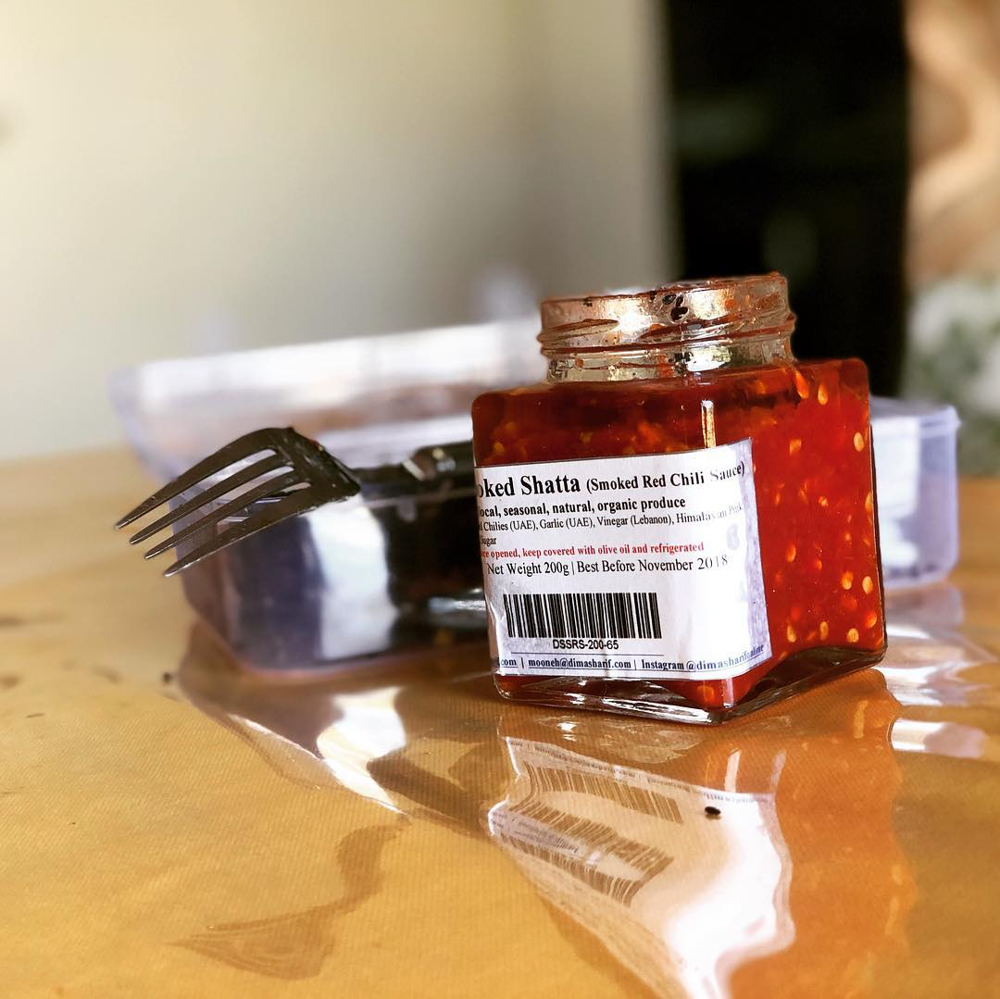
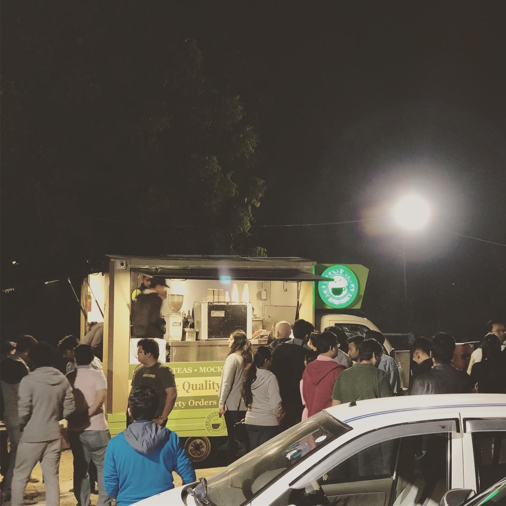
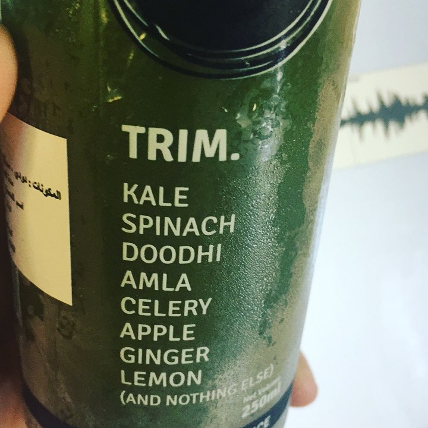

Unpacking Amaeya Media’s State of the Industry Report, and the #podcast industry’s movements standardisation including The Podcast Index, and some thoughts on monetisation, on Communicate Middle East.
Thanks Arjun and the CommunicateME team for the chat!
I spoke to Zaira Lakhpatwala about our State of Industry 2020 report for #podcasts, and some thoughts on the brand opportunity in the medium, on Arab News.
Thanks to Zaira and the ArabNews team for the chat!
The social accountability of Clubhouse
I’ve been wondering about this: why does Clubhouse prominently display who nominated you to the platform?

It’s not the first platform to grow through an invite-only model, but the fact that this is highlighted on your profile is a deliberate choice. And sure, the frantic invite searches will see renewed vigour when the Android app finally drops (2-3 months is what they’ve estimated). But the fact that it’s not even open on iOS yet leads me to think there’s more to this than just tugging at FOMO.
First, it’s the social graph. The ability to look at someone’s profile on Clubhouse and quickly go down a rabbit hole of the people directly connected to them in some way is far different from perusing a following/follower list–a new definition of six degrees of separation. And there’s an element of credibility, an implicit trust that the immediately preceding profile you’re looking up knows the person in question, specifically, their phone number.
The second thing is Clubhouse’s push to have ‘real people’ create accounts, something that’s been reiterated in their weekly town halls. As much as there is, and will be, noise on the platform, there’s something delightful about knowing you are interacting with a ‘real person’ over a faceless entity–a change from other the usual suspects.
I’m extending this thought based on something I heard recently on a podcast (surprise, surprise). Clubhouse is also ensuring two things: having your name against your account makes you inherently responsible for what you say, and harder for someone to ‘troll’ you–at least in the way that is rampant on other platforms. Christina Warren points out on The Talk Show that if a lot of spam accounts seem tied to one or two people, it’s a direct line to the source.
Your actions on Clubhouse could have an impact on the people who invited you, and maybe even on those who you might have invited. A subtle, but valid sense of accountability other platforms cannot give you.
Today, we released Amaeya Media’s second annual State of the Industry Report, covering all things #podcasting in 2020.
A big thanks to everyone who took the survey, Pooja Sagar for rallying us, and to Stefano Fallaha & James Cridland for sharing their insights on our industry.

🎙️ Excited to unveil What I Did Next, a new #podcast about life’s pivot points and adapting to the forks in the road, and how our guests did it their way.
The show is produced for A&T Media, a new startup based out of Egypt and hosted by Malak Fouad.
Thought The Podcast Index’s Adam Curry & Dave Jones’ chat on the de-platforming saga was both insightful & important. Helped extend a lot of thoughts/questions I’ve been having on the implications to us as consumers & creators, and extends to centralization & ownership of our data.
The (moderately overdue) annual home screen post.
- Radically different situation from just a couple of years ago, thanks largely to iOS 14.
- Camera & Photos are the only apps I’ve manually forced on the home screen. The 2 rows of app at the bottom are AI-driven via the native Siri widget.
- Spark is my current default email app, ahead of Apple Mail two years ago, and Outlook prior to that for work.
- I wonder if Phone really needs to be in the dock.
Until next year!

Hey everyone, we’re running our 2020 #podcast listener survey at the moment and could use your help. A few minutes of your time goes a long way in helping understand preferences, dislikes and how things may have changed last year. Oh, and it’s okay if you don’t listen to podcasts, there are a couple of questions for you too :)
We really appreciate your help: https://forms.gle/BadHRF2TbFY5psac7
Thanks Campaign Middle East for the chance to air a few thoughts about #podcasts, some news that made headlines this year and how brands can approach the medium.
Read more at Campaign Middle East.
Announcing @amaeya ’s fall slate with four new shows
Today, we announced our fall slate with new shows—that’s 14 shows in total being produced by a single podcast network in the UAE. With a journey that began in 2017 as a thought about what I’d like to do in this untapped space, AMAEYA Media blossomed into a platform that has spurred some of the most inspiring & powerful conversations among change-makers of our region at large. There are numerous people to thank today, especially those that jumped on the train because they ‘got it’ & believed in what I could deliver—and all of you.
Today marks a showcase of a couple years of hard work by a lot of people, and there’s more to come! Our strength lies in all those wonderful stories and histories we’ve uncovered through the years.
I hope you’ll join us for what’s coming next as well!
🎙️
The Little Things
There are things left to say,
They can’t be spoken of today.
Cuz what’s just been said,
Can’t be pushed away.
It’s okay
No matter what we say.
— Neel Adhikari
I’ve been enamoured with Dice Media’s Little Things thanks to a worthy recommendation from a close friend (both seasons are on Netflix. It didn’t quite work at first glance—something was just off about the pilot—but it grew on me. How so many things in our life are about the little things; the peace you get from the little things that help you take on the day, day after day, after day.
We’re not perfect, we’re not slick.
We don’t steal, just like thieves, we are thick.
Here’s hoping it stays that way.
It’s one thing to use a bunch of images in your email signature. It’s entirely another to use an image with text in it as your email signature. How is this useful to anyone?!
Part II of my conversation with Lucas Skrobot on Own The Future where we continue our chat about podcasting (monetization), social media and why I appreciate @manton’s take on vanity metrics on micro.blog.
In case you’d like to hear it, Part I is here.
🎙
Lucas Skrobot (Own The Future) was kind enough to invite me to talk about what drove me to podcasting, the AMAEYA FM journey & general trends. And yes, we do talk about podcasting numbers, how to get started and rating success.
Part II is available here.
🎙
Giving up on a long-standing friendship is very, very hard to do. But sometimes, you’ve just got to pull the plug. When it’s one-sided for too long, when you’re disrespected directly & indirectly over stupid things, when the friendship runs only because you take time out to message and check in. I get everyone has things going on, but the friendship’s been on the ventilator for nearly two years. Sorry, but I can’t do this anymore.
There was something that attracted me to The OA when it first came out and that’s been more than reinforced with Season 2. Absolutely exceptional storytelling arc by arc, the kind that creators could learn a lot from.
Take a bow, Brit Marling (and Zal Batmanglij & the OA team)!
On the most recent episode of Savvy Talk, we talk about the power of audio. I expect I’ll have a bit to say on the Spotify acquisitions soonly.
🎙
Spotify acquires Gimlet and Anchor!
Holy sh1t.
[Spotify] today announced that it has entered into definitive agreements to acquire Gimlet Media Inc. (“Gimlet”), the renowned independent producer of podcast content, and Anchor (“Anchor”), the company leading the market for podcast creation, publishing, and monetization services.
Commentators have been talking about the potential impacts of a potential Gimlet Media acquisition by Spotify over the last few days. Suffice to say it’s a big deal that the acquisitions also include Anchor, for all companies involved, but also for the voice & podcasting world at large.
Can’t say I’m a huge fan of the development, but it is a great set of gets for Spotify. The Netflix of podcasts just arrived by acquisition.
At least someone is still trying to write good release notes. Thanks Careem for the morning smile.
The Triangle may have printed its last issue ever
For over 90 years, The Triangle has dropped a new issue in stands across campus every Friday morning. But starting next week, that may not happen anymore.
This wasn’t easy to read. The Triangle has shaped almost everything about my adult life in some way — from working with student volunteers and bringing them back each week, understand layout & design in ways I still use, media, guidelines, standards & maintaining ethics. Not to mention the annual April Fool’s issue, The Rectangle.
The Triangle, like other printed publications, has suffered significant losses in revenue as a result of a shift to online media. Websites like Craigslist and Facebook have nearly decimated the revenue The Triangle used to bring in from classified ads, and online ad platforms have forever changed the way businesses buy advertisements.
Considering this was the primary (only) source of revenue 15 years ago when I ventured into those offices, I’m a bit surprised that other sources did not develop when the first signs of these changing trends came through. Not remotely implying it wasn’t tried, and I understand the challenegs. The Triangle was always a volunteer organization that never took University funding. I’m just saddened to learn that the paper is currently out of revenue due to the reliance on print ads.
If you’d like to: > …you can make a contribution at thetriangle.org/donate. If you think you can help in other ways or just want to leave a comment, you are encouraged to contact Mike Avena, Editor-in-Chief, directly at editor@thetriangle.org.
The top 10 fastest growing cities in the world are all in India
According to research institute Oxford Economics, all the top 10 fastest-growing cities by GDP between 2019 and 2035 will be in India.
[…]
In its latest economic forecast, the IMF says that India’s economy is set to grow faster than China’s this year, at a rate of 7.4% in 2019 compared to China’s 6.2%.
With a favourable demographic profile and a large and growing consumer market, India is likely to be the most compelling growth story of the decade.
The story behind Dubai’s first food tour company, on the latest Tales of the Trade:
🎙
Our highlights from the season thus far (and fun season giveaways for our UAE listeners!) on the latest Tales of the Trade:
From a city often accused of not having enough culture, the story of a locally grown and yet one of the very few dedicated improv theatres in the world, on the latest episode of Tales of the Trade.

🎙
Such a lovely video by John Lewis & Partners this season, featuring Elton John. Simple, effective (& warm) creative.
On the latest episode of Tales of the Trade, how shutting down their restaurant taught the Al Awadhi brothers important lessons that shaped their revival.
🎙
This week, a story from a slightly past life when I was a dedicated food blogger, and came across My Custard Pie, not just a blog but a brand that is growing strong day by day.

🎙
I’ve been a regular and observed Bull & Roo’s cafes and restaurants grow over the past 3 years to new heights. Was great to get a behind-the-scenes on how it all came together for our latest episode :)
🎙
This turned out to be one of the best stories I’ve had the opportunity to cover. This week’s Tales of the Trade features the story of Surf House Dubai, a tale of resilience:
🎙
Gorgeous scale lego model of Apple Park by Spencer Rezkalla.
(via @gruber)
Excited to finally unveil Tales of the Trade!
Episode 1 covers the story of a multi-million dirham agency almost by happenstance to getting acquired by the largest socially-led agency in the world:
🎙
Excited to be a part of Dubai’s first ever Podcasts Forum on September 29 to mark International Podcast Day! Look forward to catching up with fellow podcasters and podcast fans in the area :)
Was great catching up in person for the first time with the rest of the @amaeya podcasting family 🎙
Really should have done this a long time ago!

Trust me to put together an event while a fairly massive cricket match is ongoing all of 10 mins away, another 100 pax group is conducting one at the same venue, and while I publish two episodes.
#suckerForPunishment #greatTiming
Excited to have a teaser for the upcoming season of the Tales of the Trade podcast. Would love to hear what you think!
🎙️
Google Data Collection
Both Android and Chrome send data to Google even in the absence of any user interaction. Our experiments show that a dormant, stationary Android phone (with Chrome active in the background) communicated location information to Google 340 times during a 24-hour period, or at an average of 14 data communications per hour. In fact, location information constituted 35% of all the data samples sent to Google. In contrast, a similar experiment showed that on an iOS Apple device with Safari (where neither Android nor Chrome were used), Google could not collect any appreciable data (location or otherwise) in the absence of a user interaction with the device.
A link to the detailed report is here.
Continuing the fun behind-the-scenes episodes for my show’s upcoming season: a chat with our music composer.
🎙️
Excited to begin the countdown to a project I can’t wait to publish, with some special episodes on the people behind the scenes of the show, starting with our producer Gaya
🎙️

Just received the first round of behind the scenes shots of our upcoming podcast season. Been rather enlightening to have a producer on board, not to mention getting a bird’s eye view you can’t really have as a host. 🎙
“I’ll text you my email address,” he said, before proceeding to email me his email address.
#shortStory #overBeforeItStarted
The last week I’ve had multiple conversations off social media, about social media, its impacts & what we’ve lost along the way. A shoutout to those who have patiently heard me out & shared insightful feedback. Can’t thank you enough. #socialMedia #indieWeb
How goes your weekend folks?
Trying out a take on the Aviation cocktail, with gooseberry/amla jam for that little extra Vit C.
Free podcasting, and why we should learn our lessons
Anchor seems to be going for the YouTube model. They want a huge number of people to use their platform. But the concentration of so much media in one place is one of the problems with today’s web.
Cannot stress this line enough: > Massive social networks like Facebook, Instagram, and YouTube have too much power over writers, photographers, and video creators. We do not want that for podcasts.
I want podcasts to be as mainstream as possible. I live and breathe them. But, as Manton points out, the platforms that have been running an it’s-free-and-we’ll-raise-money-elsewhere model should have taught us big lessons by now.
They went downhill for users, and sold out. They had to do both of those things, there was no other model for them. They landed up damaging the medium they made mainstream.
Take YouTube, for instance. It is the only place you go to both create and consume video content. YouTube has complete control over the medium itself, and that’s the problem. It translates to control over the creators. What happens when you’re done with YouTube and want to take your viewers elsewhere? Or if YouTube deletes a video, or your account, even if accidentally. What is your recourse to retain what you’ve created?
What does it matter if you outrage over an algorithmic timeline being the only option on Instagram? Everyone you know is there, your followers are there, and although Instagram (finally) allows you to export your content, what can you do with that so that people who want to see your photos can continue to do so easily? Nada.
The models that these platforms sit on can only be run by advertising. Advertisers are their customers, and the platforms will continue to tweak algorithms to ensure best value for their customers, not their users. Which is why Facebook continues to be brazen about all of its data misuse, and why those privacy approvals were vague to begin with.
I haven’t even gotten to ownership, but those thoughts are in a separate post if you’re inclined.
—-
I cannot but be firmly in the camp that believes this model cannot be the default, and will harm the medium it sets foot in. I get that a content creator is bound to find it difficult to pay monthly subscriptions when compensation seems unlikely or at least years away. But I also know how great it is to be able to tell listeners they can listen to me in any channel they prefer, to own my shows in their entirety.
When I switched hosts last year, I was able to simply redirect my domain & feed, thereby retaining my data and the people listening to my shows without them having to change the way they consumed them.
Why shouldn’t it be like that?

Indian hands turning wheels of global auto companies
Ketan Thakkar, reporting for the Economic Times: > The Indian R&D setup for Mercedes-Benz has metamorphosed from a tiny division with 20 staffers in Bengaluru, the IT capital of India, a couple of decades ago into a powerhouse of 5,000 engineers that is contributing significantly to new-age technology. The company is already preparing to double its office space as the scope of work expands significantly.
Additionally:
Ford India said in 2016 it would invest $195 million to set up a global technology and business centre in Chennai to leverage India as an innovation hub.
Bosch, the world’s leading auto component maker, has its biggest R&D centre in India. […] For years, Bosch has used India as a test bed for solutions to be adapted in other emerging markets. Likewise, the R&D team of Renault Nissan Technology Business Centre India is helping the Chinese R&D team in developing a small electric car.
India adopts strong net neutrality norms
The recommendations explicitly forbid operators from throttling data speeds for any online service, and mandates all content be treated the same.
Additionally: > Telecom operator Airtel was forced to withdraw a plan to charge extra for internet calls, and shut down a platform called Airtel Zero, which allowed customers to access a few mobile applications for free. > […] > Others, including Facebook and Google, were also forced to abandon their zero-rating platforms and deals. The most visible casualty was Facebook’s Free Basics service, which offered Indians free access to a limited number of websites.
I’ve now tried to reduce this feature to its simplest form that solves the problem of finding new users […] I’ve reverted the change from earlier this week and replaced it with a list of who someone is following that you aren’t following already.
Aces.
Social media & actually owning what you publish
Ah, social media. The thing that (theoretically) democratized everyone’s voice. That allowed two-way communication impossible to do beforehand if you weren’t in a niche circle.
The thing that cost you the ownership of your own content.
Do you remember in the 90s, when everyone active on the web had their own blog? Even those that didn’t self-host and used platforms like Blogger or Wordpress (or Movable Type), you wrote under your username (me.site.com) and eventually were able to point your own domains there. This sounds like a simple thing, but it kept you in control of you what you published. If you’d wanted to change platforms—anything from you having an issue with the way the platform ran, to you were just bored—you moved your domain over and your readers just continued to find you, or follow your owned RSS feed in a reader.
Then came the Facebook era. The Twitter era. Instagram. Medium. Platforms that broke through a significant problem with traditional blogs: writing in silos. Social media platforms redefined engagement and discovery of other creators, bringing anyone and everyone into one space. People could just follow you and you could share your links seamlessly.
And then you stopped writing on the blog altogether. You just posted on Facebook, and Twitter, and Instagram. The platforms made posting easier and easier, and starting silo’ing alternative platforms. Like when Instagram removed Twitter card support & Twitter stopped showing you previews of Instagram photos. Twitter eventually bought out and integrated their own photo services. Facebook doesn’t let you embed content outside of the platform either; you either link it and live with it, or upload the video separately to Facebook. And therein lies another part of the problem. They want to keep you in, make it harder for you to use alternatives for even a part of the services, either buying out or copying feature sets.
A few years ago, a couple of guys went about building a blogging platform designed to take on the complications of Wordpress and provide sturdy posting & inherent collaboration. It was called Posterous and I migrated almost instantly. Spoiler alert: Twitter bought out Posterous and …. shut down the platform.
So when Twitter or Instagram decides to shut down your account, censor you, or otherwise prevent you from accessing it or taking your username away, there’s … nothing you can do about it. Facebook’s been selling everything about you for years, and Twitter is equally guilty. Twitter is also horrendous about handling harassment, spam and hate. Rumors about Twitter arbitrarily ‘shadow banning’ users — stopping their tweets from showing up in timelines of followers for a while — continue.
In unrelated news, Medium recently & quietly ended the ability to map your domain to Medium.
If any of this comes as news to you, that’s a good thing.
Enter the Open Web. The Web as it should have been built. As a series of integrated platforms allowing anyone to everyone to own their content, to retain flexibility to use services they wanted. Platforms that let you brand your content to you, and don’t arbitrarily decide whether your account is deemed worthy to be verified. That allows you to Publish on your Own Site & Syndicate Elsewhere (POSSE). And those that allow you to take your data out in a format compatable to some standard when you want to leave. A group of talented people have been hard at work at developing both the standards & principles over at IndieWeb.org and I recommend you check it out.
This is why I’ve migrated all of my writing over to micro.blog a few months ago. Today I publish on my own blog that I own and pay for, push to services like Twitter and Medium, and can continue conversations there, as well as within the Micro.blog timeline of connected blogs. Should anything happen with some of these services, I still have my original posts. A full backup of my blog, with individual posts, CSS etc sits in GitHub pages as a failsafe with Micro.blog itself, or in case I want out. None of this required any complicated setup, they’re features of the platform and its adherence to the IndieWeb Principles.
I’ll be elaborating more about ownership & the IndieWeb as time passes, but I wanted to share some of my motivations and why I’ve been feeling so strongly about these platforms recently. You don’t have to do any of this, but I do think it’s time you—and everyone—thinks about it: where you are posting, do you actually own your content, and are you in an environment that encourages ownership, fosters conversation & responsibility vs just a cacophony of echo chambers, spam, hate & likes.
Samsung opens world’s largest mobile phone factory in India
VISHWAM SANKARAN, writing for The Next Web: > The new plant – located in the industrial city of Noida – will help Samsung gradually double its current annual production capacity in India from 67 million phones to 120 million in the next three years. The factory is also expected to provide at least 1,000 more local jobs.
This comes not long after news earlier this year that Apple is ramping up production of iPhones, Xiaomi plans to add 3 factories & Oppo will be setting up a $320m manufacturing facility. India’s smartphone market grew 14% last year with 127 million units shipped.
I’m delighted to share that the awesome Gaya joins the @Amaeya network as producer for its flagship podcast. She’s put together a Vlog on how it’s coming together so far.
More details here.
🎙️
No brainer Micro Monday shoutout to @rosemaryorchard! Among the most helpful people I’ve seen online aaaand now host of Automaters with the cool David Sparks covering automation on Apple platforms. Looking forward to episode 1.
Production of made-in-India 6s iPhones begins
Writankar Mukherjee, reporting for The Economic Times:
Apple has started commercial production of the iPhone 6s in India since last week at the Bengaluru facility of its Taiwan-based contract manufacturer Wistron that has set up a new line for the handsets, two senior industry executives said.
[ … ]
The Cupertino-based maker of iPhones and Mac computers already makes iPhone SE since last May at the Wistron facility, which will now produce two iPhone models locally.
So far, unable to tell whether the current rumblings in (every aspect of my) life are a precursor to big breakthroughs or calm before an extremely unneeded storm.
Had tons of fun reminiscing about tech we grew up with on our latest t3chtree episode:
🎧
I’m really glad I chanced upon this WWDC design session live. A must watch on the qualities of great design, which was really well documented & presented by Lauren Strehlow:
One more thing in iOS 12: Apple Podcasts now supports MP3 chapters, which can be skipped using Siri. 🙌
Yay. Also nice it will already work with previous episodes :)
Still funny on a second watch: Apple’s “The Developer Migration” video.
#WWDC18
Took about 30 minutes to submit my first VAT return & set up a bank transfer to the UAE Federal Tax Authority. Payment was acknowledged later the same day.
#smooth
A fantastic listing of resources for Micro.blog users by @eli.
(Thanks @manton for sharing)
Behind Deadpool’s blu-ray takeover at Walmart
Julia Howe, as interviewed by David Griner:
We asked ourselves, if Deadpool wanted to self-promote himself at retail, how would he do it? The character is a treasure trove of pop culture references, so it just seemed like the logical solution.
Was fun seeing the initial pictures flood social media over the last week. While it was obviously an agency-driven campaign, it was still refreshing to see something new, and simultaneously fearing quite a few copycats considering the success.
t3chtree #8: “Why are you doing my job?” 🎧
We chat about Google I/O & our reactions to the Duplex call. Plus a follow up to the #askt3chtree question on smartphone batteries.
Full show notes & links to subscribe are here.
Building the Micro.blog ecosystem
I think a goal for us with Micro.blog should be that third-party developers get access to the same basic tools that we use to build our own apps. Rate-limits should be the same for an app like Icro as they are for the official Micro.blog app, for example.
For the last few weeks, I’ve been thinking about blogging and content, and how the breakup of traditional ‘blogs’ have cost us, the netizens, a whole lot.
The more time passes, the more I appreciate the philosophy that sits behind Micro.blog. Every decision won’t be perfect and/or popular, but it is good to see that the driving principles of it all are rooted in the right place. Manton’s been extremely open and communicative about it, so I hope that part scales as this gets bigger. With the way Twitter is handling third-party apps that built the platform, the timing is perfect too.
Oh, and:
(To be clear, we’d offer this for free. Our business is blog hosting.)
I’m glad to see Micro.blog’s monetary stream is both clear upfront and doesn’t require surrendering user privacy.
The pricing for Twitter’s new account activity API is ridiculous and doesn’t address how Twitter clients have used the streaming APIs until now. Streaming is effectively dead as of August.
Predictable, but still sad.
The story behind Wildpeeta 🎧
I attempted a storytelling format on my latest episode on the Wildpeeta brothers & their journey from startup to shut down, and how the lessons they learnt have led to them coming back in partnership with Freedom Pizza.
As always, full show notes & links are here.

Micro Monday shoutout to @hartlco, not just a community member but also actively growing the ecosystem with Icro. Excited that the app is now approved!
Bans on Skype & FaceTime could be lifted in the UAE
Natasha Turak, reporting for CNBC
UAE Telecommunications Regulatory Authority (TRA) Director General Hamad Obaid Al Mansouri confirmed the talks this week, according to local news reports, citing Microsoft and Apple’s growing investment plans in the UAE and the desire to forge closer relationships with tech companies as primary reasons.
Let’s hope.
t3chtree #7: Careem breach, password management
We chat about ride-sharing platform Careem’s security breach notification & some password management tips. Plus, my first @microdotblog outro :)
Detailed show notes are available here.
Was told today I look like I’m 28. Either I’m doing something right or this person is doing something wrong, but regardless, a happy Saturday :)
Picked up my @instagram archive, will look into importing it to the current blog hopefully. Not planning to quit the platform just yet but glad I have a copy. If you didn’t know, you can pick it up here.
It’s been ages since anyone tried to redesign or uplift the usual Twitter experience (little surprise there). Flitter reminds me of @Twittelator Neue in a way, something very clean about it. vimeo.com/266730374
Electricity reached all Indian villages on Saturday
Utpal Bhaskar, reporting for LiveMint:
All Indian villages now have access to electricity. The last village to be brought on the national power grid was Leisang village in the Senapati district of Manipur at 5.30pm on Saturday.
Finally.
“Maybe together we can get somewhere”
When life forces you to replace your car tyres, and you’re just sitting there waiting, courtesy @gayamusic. #music #cover
The story behind @FryingPanAdventures 🎧
The start of a new season of the ‘Coffee & Iced Tea’ podcast, where I speak to the sisters behind Frying Pan Adventures, Dubai’s first tour company & how they got started.
Detailed show notes are available here.
Excited to see our podcast @t3chtree as a friend of @TieDubai & media partner for #TiEConDubai 2018. #entrepreneurship #dubai #podcast

[Podcast] t3chtree 6: Grassroots innovation, mentorship & @TiEDubai Con 2018
We’re talking grassroots innovation in our region, mentorship & the TiECon 2018. We also have some invite codes to give away if you’re looking to attend the conference.
Detailed show notes are available here.
What Twitter was, and what it is now
Jean MacDonald: > I have several friends in “real life” who started as Twitter buddies. But over the years, Twitter has become something I don’t recognize anymore, a place where hate and intolerance and crass commercialism have found a welcoming home.
As a side note, a nice insight into understanding micro.blog as a Twitter user—how they’re same in some ways, and how they’re different.
Her Twitter experience though is not far away from mine; some of my closest friendships & collaborations have their origins on the network, but … here we are now.
Jean doesn’t get into this much but a long-standing problem with Twitter is how they’ve stifled third party development, over, over and over again. I mean, even a service like LinkedIn doesn’t—well, can’t—really integrate with Twitter.
The ‘philosophy’ of increasingly closing off the network to the outside world or the open Web at large has been seeping into other aspects of Twitter’s culture as an organization & a platform. The last few real Twitter apps are now bending under this weight.
Considering Facebook isn’t in a particularly great place currently either, hello to an free-er, open-er Web. And hello, Micro.blog.
What is this life if, full of care,
We have no time to stand and stare.
Someday, maybe. Not today. #2018
Massaging egos #facebook
Zeynep Tufekci, writing for WIRED:
“It’s Time to Make Our Privacy Tools Easier to Find”, the company announced without a hint of irony—or any other kind of hint—that Zuckerberg had promised to do just that in the “coming few weeks” eight full years ago. On the company blog, Facebook’s chief privacy editor wrote that instead of being “spread across nearly 20 different screens” (why were they ever spread all over the place?), the controls would now finally be in one place.
It’s a long read but a great piece that highlights the right things. Any other company would have lost trust years ago but Facebook continues to enjoy the advantage of the ‘gravity’ effect of having 2 billion users.
My co-host Partha made a super important point last week:
These products have been made by the same people who lived with the same sort of theory that [our generation] grew up with […] they understand the importance of this privacy and they’ve been building on top of this to try and massage the egos of all the newer generations […] to try and make sure they’re comfortable about it.
The more I think about this, the more spot-on this is. People who watched—ushered in, even—the social media era and understand the privacy implications could have gone about it in two ways: ensure that even those who do not understand this are protected, or help transition the vary ones into being more comfortable about sharing. Facebook has gone the latter way too often that it’s now part of its core, making it impossible to be anything else.
We’re talking #privacy & @facebook on the latest episode of @t3chtree, do check it out! #podcast 🎧
‘Up to 87 million’ #facebook
David Ingram, writing for Reuters:
Facebook Inc said on Wednesday the personal information of up to 87 million users, mostly in the United States, may have been improperly shared with political consultancy Cambridge Analytica, up from a previous news media estimate of more than 50 million.
Yay.
#Privacy iOS users, Settings → Privacy is your friend. Review & turn things off for apps that don’t need content they have access to. Turn on Advertising → Limit Ad Tracking, which stops providers from targeting ads to you (you can reset this ad ID if the setting was off).
Ep # 4: On the latest episode of @t3chtree talking Blackberry suing Facebook & smartphones: OS’, batteries & cameras, with my recommendation for @halidecamera on iOS.

Facebook: ‘Everyone’s doing it’
Sean Gallagher, writing for Ars Technica:
In response to an email inquiry by Ars about this data gathering, a Facebook spokesperson replied, “The most important part of apps and services that help you make connections is to make it easy to find the people you want to connect with. So, the first time you sign in on your phone to a messaging or social app, it’s a widely used practice to begin by uploading your phone contacts.”
A widely used practice is something Facebook could have taken a stand on, eons ago, and led the industry, rather hiding under its cover.
As much as the headlines about Facebook having a bad week will continue, it’s amazing how unchecked the whole system was:
If you granted permission to read contacts during Facebook’s installation on Android a few versions ago—specifically before Android 4.1 (Jelly Bean)—that permission also granted Facebook access to call and message logs by default. The permission structure was changed in the Android API in version 16. But Android applications could bypass this change if they were written to earlier versions of the API, so Facebook API could continue to gain access to call and SMS data by specifying an earlier Android SDK version. Google deprecated version 4.0 of the Android API in October 2017—the point at which the latest call metadata in Facebook users’ data was found.
The issue with such far reaching applications and OS’ is that there aren’t—and are unlikely to be anytime soon—overarching regulations that can manage these issues. Even if the US or the EU has stringent privacy regulations that will allow them to penalize Facebook’s entities within their jurisdiction, that’s as far as they’d be able to go.
Six months down the road, where will this situation be? Will Facebook brazen it out through via heres-another-setting-under-privacy-settings? That can be the only real indicator.
Yowza: India alerts 40 countries about pedophiles who were members of a whatsapp group that was busted in February #CBI #India #Whatsapp
Nanima
You were a phenomal woman who moved mountains for her children & grandchildren. The way you’d share stories of your kids growing up … almost like a child skipping through a garden in excitement. I learnt this week that maybe I’ve inherited my eyes from you…
Why don’t I hear your voice say “Who is it, is that you Chirag” as I walk past the door? Always checking to make sure I’d eaten. Something that hasn’t changed since 9th grade incidentally, when I spent 2 months living alone with you & Nanaji. That time though, you just cooked for me the whole time and turned me into a nice little ball. Things I wanted to eat, and things I didn’t even think of. In many ways, I’m a product of those 2 months, as much as I am a product of your daugther’s hard work, something she entirely learnt from you.
You fought hard I know, and I hope it is nothing but peaceful now.
The last time I heard your voice … you insisted on speaking to me … it was tough to hear you sound like you were giving up. Today, with time, I can reflect on your powerful words … and your belief in me through them.
To your legacy.
ॐ शांति

Thanks to some amazing planning a week in advance, I spent the morning with my hot date. Some tongue may have been involved. #valentinesday #wednesday #mydubai #justanotherday #cleanteeth #teeth #dentist #oral

If you’re a #podcast app developer, do check out the https://podto.org specification by @iamsteadman & @ThePodPlaylist, see a potential to reach Markdown-type acceptance. Would be great to see @overcastfm & others support it.
Who says you can’t experiment with coffee? #coldbrew #gingerale #coffee #Tuesday #ipad #cold #icedcoffee #dubai #mydubai #makingithappen #humpday #whynot #workworkwork

Excited to finally have my podcast network site up. If all works well, will have some interesting sponsors and 2 new shows soon!

Home Screen 2018

Continuing M.G. Siegler’s tradition, my homescreen kicking off 2018. Not to worry, it was screenshot’d on January 1.
Outside of the obvious change to screen size, compared to 2017:
- I’ve switched back to the default mail client after some trouble with Outlook on iOS.
- Overcast makes the home screen with podcasts—both listening and creating—taking on a prominence last year.
- The social media folder gets a move towards the bottom row for easier thumb access
- My recent foray into HomeKit products means Home gets some attention
- Apple Pay arriving to my part of the world means the Wallet says hello.
- Workout things moved away as I continue to track movement, but open history way less
- Been wanting to experiment with Halide all the more
- Calculator became a control center action during 2017. The move of control center to the more inconvenient top right has affected this ever so slightly, but I just find myself using Spotlight for basic computation.
- I still don’t know why Apple News hasn’t left my home screen.
Until next year.
Talk 112: Right to Education (RTE)
Hariprasad N joins us to talk about India’s Right to Education (RTE): its flaws, the decline in education quality and the continuting discrimination it propagates.
Full show notes & links are available on the episode page.

From flower to fruit. #mydubai #homegrown #pomegranate #anaar #garden #gardening #dubai #flowers #fruit #green

A little fog, some natural bokeh. #dubai #igers #igersdubai #iphonography #flowers #fog #winter #weather #mydubai #orange #pink #bougenville #tree #bokeh
3 minutes. The time it takes between entering the house and finding anything—everything—I can dip into @dimasharifonline’s smoked shatta (red chili sauce). The veggies can wait. Brunch plans be damned. #dimasharif #farmersmarket #delicious #red #haandvo #dip #spicy #vegan #chili #shatta

Doesn’t always need colour. #bright #tistheseason #winter #dubai #igers #igersdubai #igersdxb #iphonography #blackandwhite #star
Focus on me. #flowers #marigold #galgota #weddingphotography #yellow #orange #shaadi #decor #iphonography

CBI Court convicts former CM, former secretaries in coal scam
ANI:
Coal scam: Delhi’s Special CBI court holds former Jharkhand CM Madhu Koda, former Coal Secy HC Gupta, former Jharkhand Chief Secy Ashok Kumar Basu & one other as guilty of criminal conspiracy & section 120 B. Sentencing to take place tomorrow.
Update, Dec 16: Koda was sentences to three years with two months statutory interim bail. All the other accused were also jailed for three years. A fine of Rs. 25 lakhs was imposed on Koda and Joshi, with Basu & Koda’s aide Vijay Joshi being imposed a fine of Rs. 1 lakh.
Vini Iron & Steel Udyog Ltd (VISUL) was also found guilty under the Prevention of Corruption Act and fined Rs. 50 lakhs.
A moment in time. #throwback #rajkaraj #weddingphotography #iphonography #bride #notaweddingphotographer #shaadi #igers #ahmedabad

Early morning, train’s a-calling. #train #highspeed #railway #ahmedabad #igers #igersahmedabad #station #trainstation #blue #iphonography

It’s a late night, food truck kinda life. #coffee #howbadcanitbe #igers #iphonography #ahmedabad #winter #igersindia



When you’re on your way to a wedding in your fancy socks, hydrate & glow. #juice #wedding #coconutwater #lemongrass #coldpressed #posh #hydration #socks #alwaystimeforRaw #rawpressery

Pomelo citrus iced tea, with a touch of lemongrass. #icedtea #tea #pomelo #refreshing #iphonephotography #mumbai #tea


Talking about being vegan…
I’m excited to share the launch of something that took my life by both shock and perhaps a little surprise.
Presenting ‘The Two Vegans’, a podcast about trying to be vegan where we hope to share thoughts, feedback and tips for making changes you might be considering or just want to know about.
Do tune in and share your comments, we’d love to hear from you. If you like what you hear, do spread the ❤ & subscribe (Apple Podcasts • RSS).
https://mobile.twitter.com/thetwovegans/status/930676777265041408
Talk 111: India’s draft regulation for drones
[embed]play.radiopublic.com/drishti-t…[/embed]
Special guest & drone specialist Sheban Naim joins us to break down India’s draft regulation for drones, available for public comment until December 1, 2017. Full notes here.

It’s not easy being green. #kale #avocado #greenApple #kiwi #vegan #toomuchGreen #healthy #recovering

All it takes is a little light within. #shubhdiwali #festival #diwali #lights #flowers #fresh #newyear


Is ginger the only flavour in Ginger Breeze? “Yes just ginger”. Sigh, now it’s time for licorice. #sick #recuperating #tea #complicated #iJustWantTea #healthy


I’d enjoy having this at my dinner table. #designNerd #friyay #spoons #forks #interiordesign #outAndAbout #friday #cantStop #wontStop #nacho

Chipkale fevicol se. #workInProgress #navratri #glue #holdittogether #artsy #artsandcrafts #bollywood

Talk 108: India’s nuclear energy outlook
[embed]play.radiopublic.com/drishti-t…[/embed]
Special guest Bhushan Shah returns to the show to talk nuclear power in energy, why we’re faltering on our targets set in 1950 and the mysterious deaths of nuclear scientists. We also follow up on the end of the Doklam standoff with China.
Full show notes and links to subscribe in your favourite podcast player are available on our podcast homepage.
Cold pressed juices all the way from Mumbai! #healthy #coldpressedjuice #kale #doodhi #amla #vitaminc #raw #vegan #delicious #breakfast #howmanytagsistoomany

Talk 107: Secularism, with Dimple Kaul
Talk 107: Secularism, with Dimple Kaul
On the latest episode of Drishti talk, we discuss the “most misunderstood, misinterpreted, misused and abused” word in India—secularism, with Dimple Kaul, author of ‘Soul Call Of Love and More!’.
[embed]play.radiopublic.com/drishti-t…[/embed]
Full show notes and links to subscribe in your favourite podcast player are available on our new podcast homepage.
The Indian Web Archive block
Abhimanyu Ghoshal, writing for The Next Web:
…it’s [sic] latest stunt is perhaps the most audacious to date: blocking the Internet Archive.
Leaving out the cold opening to paint a picture, the problem with the piece is here:
It’s possible that the block is an effort to prevent web users in the country from viewing these documents, including one that lists a number of private companies tasked with seeding and verifying Aadhaar data. It might also be the result of a court order that has nothing to do with censorship — but at this point, there’s no way to know for certain.
Good thing he gave himself an out considering couldn’t resist throwing around a grand total of one speculation — about Aadhaar. As Medianama — the site he references — points out in a separate piece:
The orders came following cases filed by Red Chillies Entertainment and Prakash Jha Productions, who filed motions for the block to protect their films, “Jab Harry Met Sejal” and “Lipstick Under My Burkha” respectively. 2,650 URLs were blocked as a part of the order: the exact same list of sites was used by the both the plaintiffs.
What is impressive is that Medianama updated the original piece with 2 different updates to include comments from the Internet Archive, but chose not to add an Update 3, or linking to its separate piece on the actual reasons and the Court orders.
For those curious about what happened, the Court order seems to be in effect for a period of one week.
Podcast: India v China
We’ve got a new podcast episode covering recent developments between India and China — specifically, the Doklam standoff and the Belt & Road Initiative:
[embed][play.radiopublic.com/drishti-t...](https://play.radiopublic.com/drishti-talk-WDppjE/ep/s1!3205d64b7e578b3cf7151e16fb9fb271d3cb46c6)[/embed]If this is something you find interesting, you can find our previous episodes. You’ll also find subscribe links and our Patreon page if you’d like to support us.
Talk 106: India v China
On this week’s episode of Drishti talk, we discuss the recent developments between India and China—the Doklam standoff and India’ s objections to the Belt & Road Initiative/OBOR:
[embed]play.radiopublic.com/drishti-t…[/embed]You can also subscribe in a podcast player of your choice using our subscribe links or using our RSS feed.

Steel production sees 10% YoY growth
Export of finished steel grew 102%
Production
Finished steel production (for sale) saw over 10% growth year-on-year in FY2016–17 at 100.74 million tonnes (mt), while crude steel production grew 8.5% to finish at 97.44 mt. This is in stark contrast to the YoY growth in FY2015–16 which sat at –1.3% and 0.9% respectively.

The trend seems to be continuing into the current financial year, with the provisional growth numbers for FY2017–18 until the month of May showing a 6.4% rise in production compared to the same time last fiscal for finished steel, while crude steel is up 4.8%.
Exports
Domestic steel consumption grew 2.4 during FY2016–17 against the 10% growth in production. In turn, India’s steel exports grew 102% to reach 8.24 mt as compared to a 27% decline in FY2015–16. The top 10 countries exported to account for more 73% of India’s export during the last year.
Exports made up nearly 10% of all production

A further analysis of export data showed a significant change in export trend—8 out of the top 10 countries by growth in FY2016–17 saw a negative growth of exports just the previous year, while the remaining two saw grow rates above 200%.
The top 3 countries by growth are all in India’s eastern neighbourhood—Vietnam, Malaysia and Taiwan.

Anti-dumping duty to stay
In 2015, the Central Government extended the anti-dumping duty on stainless steel products — instituted in April 2014 — by five years. The duty is based on the margin of dumping and affects the following countries:
- China (57.39%)
- European Union (29.41–52.56%)
- South Africa (12.34–36.91%)
- Chinese Taipei (15.93%)
- Korea (5.39–13.44%)
- USA (9.47%)
- Thailand (4.58–5.39%)
A review of this duty was recently concluded found that while dumping has continued, the net volume has declined since 2014. The Government has decided that the duty will not be revoked in light of this effect and the expected negative impact of such revokation on the domestic steel industry.
Consumer inflation at record low of 1.54%
Consumer inflation in June cooled to a new record-low of 1.54 per cent, driven by a drop in food and oil prices, government data showed on Wednesday. In May consumer price inflation stood at 2.18 per cent, which was also a record low.
This follows a consistent decline in inflation rates since 2014, and record decreases since the start of January 2017.

Aadhaar enrolment only at Government centres by September
Unique Identification Authority of India (UIDAI) CEO Ajay Bhushan Pandey has written to the states asking them to identify centres within government premises for enrolment and updation activities by July 31.
Great. I had hoped for this in my initial Aadhaar notes now that Aadhaar enrolment has crossed 95%.
UIDAI has said the process of shifting enrolment operations to such centres should be completed by August 31, 2017
The GST era
With the press of a button at midnight in Parliament’s Central Hall, India switched to GST, the single biggest tax reform undertaken by the country in 70 years of independence.
Hello to the GST era.
The Central Board of Excise & Customs (CBEC) has published a lengthy FAQ published here, along with a compilation of various questions asked over their dedicated Twitter handle here.
https://www.cbec.gov.in/resources//htdocs-cbec/gst/new-faq-on-gst-second-edition.pdfTalk 105: Farm loan waiver
[embed]play.radiopublic.com/d89e951b-…[/embed]
Special guest and Civil Services aspirant Bhushan Shah returns to the show to talk about the Presidential race and the farmer loan waiver epidemic across the country. But first, a shoutout to everyone who witnessed the Emergency—a sorded reminder of how bad things can be without our powerful democracy.
Show notes
Domestic air travel grows 17.63% YoY
Indigo owns 40% market share
The number of passengers carried by domestic airlines in the current calendar year registered a 17.63% growth compared to the same period in 2016¹.
4.66 crore passengers have taken domestic flights this year, compared to 3.96 crore.

Following a dip between January and February, total domestic passengers consistently grew for the remaining 4 months of the year. May saw a little over 1 crore domestic travelers, the highest this year.
Airline breakdown


Indigo currently holds the largest market share crossing 40% of total passengers up to May, followed by Jet at 17.9% and Air India at 13.3% of total passengers.
Airline traffic saw a similar trend as overall passenger traffic, dipping in February across all airlines before picking up during the remaining months of the year.
Complaints
In the current year, 716 complaints have been registered across various airlines. Despite the largest volume share, Indigo has significantly fewer complaints registered (109, at a complaints/10000 ratio of 0.58) compared to Air India (245, 3.95) and the Jet group (231, 2.77).
Indigo also led in terms of on-time performance, with an OTP of 85% of flights at the four major metros (Bangalore, Delhi, Hyderabad and Mumbai). SpiceJet is a close second at 82.4% while Air India ranks fourth at 77.8%.
A majority of the delays among the four metro cities seem to have occurred at Mumbai Domestic Airport.

In 2016, baggage earned the largest share of complaints (28%) during the same period, Customer Service took this title in 2017 (27.8%). Refunds saw a good reduction in complaints, down to 2.7% of total complaints compared to 6.2% in 2016. Flight problems, baggage and customer service continue to be the top 3 reasons for complaints by quite a margin.
A total of 2,267 passengers have been denied boarding this year, leading to compensations worth ₹1.37cr. 19,175 passengers experienced flight cancellations (₹55 lakhs) while 91,213 suffered delays (₹89 lakhs).
¹ All data as per data provided by the Ministry of Civil Aviation
Ramnath Kovind NDA’s Presidential candidate

Bihar Governor Shri Ram Nath Kovind, 71, will be NDA’s Presidential Candidate for the upcoming presidential polls in July.
Kovind was formerly elected to Rajya Sabha from Uttar Pradesh where he served two terms from 1994–2006, head of BJP’s Dalit Morcha from 1998–2002, and Union Government Advocate in the Delhi High Court (1977–79), Advocate-on-record of the Supreme Court (1978) and Union Government Standing Counsel in the Supreme Court (1980–93).
Kovind was governor of Bihar starting August 2015 until he resigned June 20. West Bengal Governor Shri Keshari Nath Tripathi takes additional charge of Bihar until a full-time governor is appointed.
Telangana CM and TRS Chief KC Rao, BJD and Odisha CM Naveen Patnaik have extended their support to the candidature.
See our podcast on the President elections:
[embed]talk.ekdrishti.in/e/3548a27…[/embed]Some comments on Aadhaar or Adhar:
Some comments on Aadhaar or Adhar:
Firstly unlike a password, biometric data is not secret and also not in full control of the owner of biometrics. Biometric data today are shared not only with Aadhaar authorities but practically everywhere, including attendance systems and banks. Even on table and doors accessed by that individual.
The same problem (and more) exists with passwords. How do you stop someone from using the same one everywhere (and therefore being hacked somewhere else and then his Govt ID being abused?). From writing it down and sticking it in a drawer or on a computer screen? When it is so easy to reverse engineer, imagine tying critical services to a unique ID with a password? Even companies are moving away from just passwords (or in some cases passwords altogether). So I would argue that a password is not secret at all, and easily transferable and reverse engineered.
So then the question is, is biometrics more reliable and secure? The answer would seem to be yes.
The video has been taken down so I have no way of verifying it. But considering Google/Apple continue to use fingerprints and every notice so far of copying fingerprint is anecdotal, and that Aadhaar’s CIDR is not using just 3 points of fingerprint matching.
Financial support to non-citizens
Section 9 clarifies that Aadhaar is not the proof of Citizenship or Domicile. This means that benefits accruing out of Aadhaar will be niraadhaar (without basis of Citizenship). It is very strongly recommended that a special mark must be indicative in Aadhaar number itself (like * mark) to show that the person is NOT a citizen of India. The government has passed repeated orders to identify Indian Citizens but there appears to be no progress in this regard. In any case, the requesting entity must know if the person being enquired on is Indian or not.
I think this isn’t the right line of reasoning. Aadhaar isn’t a proof of citizenship (it is a form of identification/authentication), and therefore Aadhaar is not the basis of a subsidy either. Aadhaar is needed to avail the subsidy, not qualify for it.
For example, a certain maximum balances qualifies a JanDhan account, or a certain income level qualifies you for an LPG subsidy. UID then helps ensure that the subsidy is passed on to the qualified person correctly (and alternatively you have the guarantee the bank account was opened in your name correctly). Aadhaar doesn’t help you qualify for EPFO, it ensures you get your EPFO in your bank account, etc.
Point is, the qualification of a subsidy has not changed, and aadhar is not being used as a basis of that determination.
Financial Risk
According to section 11(2), the authority will be a body corporate, which means it will be covered under section 43(A) of the Information Technology Act and rules made thereunder. It also means that the authority will not have protection provided to the government in case of any failure. If for any reasons, any core biometric information is lost, then the authority will be liable for civil liability of unlimited amount. Unlike the other methods of authentication, biometric loss is lifelong loss, hence the liabilities of such loss will be far enhanced. In a case of complete loss, the civil liability may be few lakh crores. Is the authority or the government ready for such loss?
Will the government be morally right to pay for such loss to the citizens of India from the money collected through taxes from citizens of India, for its own incompetence? The Act is silent on this risk assessment.
Fair point. This will also need to be separated against breach (of even rules, not necessarily of data) that may occur within the ecosystem vs by the UIDAI.
Secondly, Biometrics are permanent; unlike a password or a smart card, they cannot be changed. God forbid, if the complete Aadhaar database is compromised (like that of Sony) and which must be expected to be so, the biometrics of all citizens will be compromised. Isn’t it far too big a risk for the government to take? Access to sensitive areas such as defence installations, which use biometrics as access control, will automatically become unusable for life of that senior defence officer. There is no way to correct the situation, unlike password and token.
There are numerous things that need to be done — this is what I stressed on during our Twitter chat — to ensure the system is secure. Everything from encryption methods, process certifications, splitting the DB into pieces so access to a single database does not compromise us in entirely are being done.
Numerous governments collect biometrics from their residents and also their visitors. Do we have any cases of them being leaked and then misused? There is an inherent security by purpose that requires Governments to do everything in their power to ensure the security of this database. Having reviewed within my limited expertise the access to CIDR bits, i.e., over the API, I am assured that it is not going to be easy to pull data out.
The challenges in this field will increase manifold as financial transactions based on biometrics increase. For example, the government had ordered that App Praman is used for giving life certificate for all pensioners. An individual can create his artificial fingerprint and give to his own family to continue to draw full pension even after his death.
Sure, but once the death is registered and the Aadhaar is then locked, what good is the fake fingerprint? And they wouldn’t be able to register a new person with the fake fingerprint either once the person is logged in. So it becomes a closed door.
Section 14 does not limit the citizenry of chairperson and the members of the authority, hence it is possible to appoint a chairman who is neither Indian nor resident of India. It is, therefore, necessary to make appropriate amendments in section 14 which should state that the chairperson and members should be ‘resident Indian citizens’ only. If we cannot get a reasonably competent person to be chairperson or member of the authority then it is a matter of shame. Additionally, if such persons are foreign nationals then ensuring compliance of Section 16 will be impossible.
Agree, there does not seem to be any limitation of citizenship on the authority, except indirectly and only on certain positions. I agree this should be explicit.
To your other point, you’re right as well, the Act does not quantify what violation of breach of UIDAI members would be (in case of the cool off period for instance). So a) I hope that is correct but b) it must be remembered that the law prohibits a cooling off period, meaning that a Court can then apply a reasonable punishment despite a lack of definition.
Relationship with Software, Hardware and Database Vendors
There has been repeated questioning of the UPA government in respect of the contract it has signed with various software and hardware providers and database maintainers, especially the contractual agreement between the Authority and MongoDB. Neither the UPA government nor the NDA government issued any clarification in this regard.
The issue I have the constant mention of MongoDB is that there is no mention of this anywhere. To some extent, the level of agreement and other specific details of the infrastructure should be limited (and clearly is). What has been made clear is that multiple technologies are in use (for example 3 open source softwares are in use for deduplication) with a focus on open source to eliminate proprietary restrictions or lack of support.
If the silence is considered as acceptance of this contractual flaw, then section 22B has extended this contractual liability forever and shared the private sensitive data of Indian citizens and residents with the US government. The charges are serious and silence is not an answer.
I don’t believe silence makes something accepted or contractual. Do we have a right to know — thereby giving someone with malintentions the right to know — this we can debate. While I have heard the MongoDB arguments multiple times, I’m yet to see anything verified that use of MongoDB automatically hands anything to the US Government, but the problem with something ambigious is both sides can keep fighting without something verifiable. That said, if Aadhaar is disconnected from the open world (as it is listed to be), connectible only via verified vendors and through specified APIs, this would still severely limit any one’s access to data.
But the point you make here starts with an assumption, and if that assumption is wrong, then the rest does not flow. There has been no indication that technical safeguards are not in place — things like separating storage of different pieces of data across independent DBs, encryption models — which are in fact in place.
Section 23(2)(c)empowers the Authority to appoint an entity for operation of Central Identity Database Repository (CIDR). However, no limitation has been put in this regard that Indians’ core sensitive data will not be handed over to a foreign entity. There is a precedence of such misuse, which has serious national security impact.
Actually the law is quite clear re: core sensitive data, coming from Section 29 (1)(a), that it cannot be shared ‘with anyone for any reason whatsoever,’ other than for ‘national security’, which in turn, has to be verified by an Oversight Committee, followed by a Court order.
Attempt to Risk Transfer
The risk in case of leakage of personal sensitive data of ALL Indian citizens is enormously high and irreparable. Once biometrics are lost they are lost forever, no change is possible. Through Section 28 (4)(c ), the Act has made a weak attempt to transfer such risks to the consultants and advisers which is neither practical nor possible to meet the civil liabilities in case of loss of any core biometric information. In case the decision to implement any advice is that of the Authority then the liability also must rest with the Authority. Only limited liability up to the fee so paid can be charged from Advisers and consultants. No court will support such open-ended provision.
With over 400 crore auth transactions and no clear stealing of data having been done, this is an assumption. Yes the risk is high and hence the safeguards are also high.
Where does the Act limit liability of violation? In fact, due to Section 29 (1), sharing core biometric data is a serious violation of law, even if punishment has not been specified.
Second, Section 28(4)(c ) actually imposes requirement on the UIDAI to ensure that agreements are entered into are correct and compliant with the Act. The Act says that core biometric data cannot be shared with anyone. Therefore any agreement that allows this sharing is a continued violation of this law, as well as any provisions under IPC/IT Act. See the immediate next Section 28(5) that no one in the Authority can reveal information inside the CIDR to “anyone”.
Intelligence Gathering
The Bill at Section 13(3) allows the intelligence agencies to dip into the core biometric information and even extract it for an individual or group
No idea what this is. There is no section 13(3) and no, no intelligence agency has any provision within the Act to “dip into the core biometric information”.
In fact, in 2014, the CBI wanted Aadhaar biometric details of an individual, which the High Court ordered. The UIDAI filed a response in the Supreme Court, to which the Supreme Court ordered, and I quote:
“In the meanwhile, the present petitioner is restrained from transferring any biometric information of any person who has been allotted the Aadhaar number to any other agency without his consent in writing.”
The UIDAI’s request was upheld and the Court ruled that even transfer of information to investigative agencies had to be done with ‘consent’ of the holder.
Additionally, the Act is silent on security and privacy of the databases collected by Intelligence Agencies over a period of time, interacting with CIDR. And with this single mechanism, Gestapo or Nazi type operations can be easily launched. Unlike many advanced countries, India does not have an Intelligence Services Act to fix accountability. Hence this can lead to serious breach to freedom of citizens. (I have personally suffered such abuse by Intelligence Agencies).
I feel you are referencing the Bill 2010 perhaps. The 2016 Act is *not* silent on security or privacy of interacting with the CIDR, and the Regulations further define this. While i’m sorry you have sufferenced abuse by Intelligence Agencies, this does not flow from the law.
To clarify, I understand you’re targeting the implications of breach. But the question is always in the process — is the law solid, and then if so, is it being implimented/adjudicated correctly. So my argument is that the law actually entails enough provisions to help protect everywhere and illegitimize items like you mention in terms of interacting with CIDR.
Target of Cyber warfare
Central Identity Data Repository (CIDR) will be a valid and lucrative target for cyber war. Operation PRISM, Vault 7 and many other leakages of information of NSA (USA) have clearly established that the agenda of United States is to have cyber supremacy over the world.
[…] It may be noted that the RSA designed algorithm has inbuilt security loophole for the US Government to hack into any system / individual using it. Therefore unless such algorithm, including its random seed generator are written, vetted and certified in India, it will be serious cyber war-related security threat.
India has the capacity to write such codes and vet + Certify them, but it is not clear if the source code of these algorithms have been written in India and vetted by a different Indian authority or not. In case these are provisioned directly from where the software and database have been procured, then it must be assumed that CIDR stands already compromised, and US government already has Aadhaar CIDR data.
Again we’re starting with an assumption, which if incorrect crumbles the entire argument. What is however clear from various technical documents published by the UIDAI, the CIDR does not run on a single piece of software and therefore even if we were to concede that a piece of software came direct and the US government has some way to break that (remember that just hackable software isn’t enough, you need to be able to reach the servers running *that* piece of software to do something with it, but fine), even then it does not automatically flow that the US Government has Aadhaar data.
RSA is not the *only* encryption algorithm in play. In the layer where it is involved, it is combined with ECB. The other encryption layer uses AES/SHA-256. I have already highlighted how well each of these algorithms are rated, and cite a report by the European Network of Excellent in Cryptology. I will make the assumption here that they would not be going around recommending encryption that is loopholed by the US Govt.
Minimum Punishment with Complex Procedures
Chapter VII of the Act shows that the Government is NOT serious to punish anyone in case of any breach. On one hand, the Act agrees that it is collecting personal sensitive data of all residents of India, but on the other hand, there is no offence mentioned which has punishment more than three years of imprisonment.
The argument is subjective, but as we debated on Twitter, offences can be compounded with IPC or the IT Act, which carry their own terms of imprisonment.
Just logically, the Act has made establishes what is legal. A Court’s interpretation therefore would be that failure to correctly collect data or misuse of data would be, by definition illegal. In the event that the Law does not specify punishment, the Court can fill the gaps. With respect to the offences listed there — such as the case where an agency revealed someone’s Aadhaar number even if inadvertantly — the UIDAI is the fine that has to file the case. The expectation then is that the citizen’s right to grievance redressal (guaranteed under Law as well), will then be furthered by the UIDAI in the event of violation. However, I contend that should the UIDAI fail in guaranteeing the person’s right to grievance redressal, you have a right to ask the Court to intervene, by virtual of it being illegal under the Act itself.
The world is well aware of the case of Edward Snowden stealing this type of information from the National Security Agency of USA. In case of similar act by any employee of the authority, the maximum punishment is just ONE year imprisonment with fine of Rs. 25,000/-.
Edward Snowden stole biometric data? Or confidential documents?
Does the Government intend that if an employee of CIDR who has authorised access takes unauthorised copies from CIDR, he is not a serious offender? On similar lines, if the chairperson and/or members compromise anything related to Aadhaar, no action can be taken against them unless the same authority complaints against itself [refer section 47(1)]. Even Government has no power to make complaint for any such criminal liability.
The law does not guarantee this authorized access, and legally it is clear that it makes him a serious offender, albeit without a specific sentence.
The Government has cut its own hands; it cannot even issue directions related to technical or administrative matters (submitting complaint for an offence is an administrative action and not a policy issue) as the Aadhaar authority becomes ultimate authority in such matters under proviso of Section 50(1).
Thus we have a situation where ONLY on the ‘complaint’ of the Aadhaar Authority a criminal proceeding can be initiated; Police investigation is NOT necessary; such offences despite being of low punishment value can be tried ONLY in CMM or Session Court; but no court can give punishment more than three years of imprisonment.
If the Central government would have given itself superceeding powers, wouldn’t the argument have been that ultimately you want an independent entity managing this and not misuse by political pressure? This is the reason for these provisions and in fact, makes sense. But also note Section 50(2): “The decision of the Central Government, whether a question is one of policy or not, shall be final.” We can’t have a discussing about wanting foreign Govts out of the security loopholes that may exist but also want the Central Govt to have powers to use technical shortcomings right? You want the politicos out of the administrative matters — pertaining to maintaining, running operations, etc as well.
The problem again is that of isolation, one rule does not negate the other. Firstly, the police wouldn’t be involved anyway. Second, it must be remembered that everything pertaining to the CIDR and its definition comes from the IT Act (the CIDR is a protected system under Section 70 making it punishable with a 10 year term) and a CII under NCIIPC making even the attempt to break into it an Act of cyber terrorism.
I want to finally comment on this line:
It appears that the present Government has picked up the pathetically drafted Aadhaar Bill prepared by UPA Government, dusted, rehashed it at a few places[…]
How? The sheer number of differences between the two bills is monumental (see this), not to mention that the Bill did not even have a definition for core biometric data, let alone its protection. This, in and of itself, cannot be considered “rehashed in a few places”, sorry.
The fundamental issue—compounded in India due to our sheer numbers—is how do we ensure service delivery without identification. Aadhaar attempts to solve this bottom line. Without the Act though, Aadhaar was horrendously problematic and I believe the Act takes care of numerous issues that would have severely hindered both adoption and utilization. Unlike other government IDs like a passport, it will be harder to fake—you can still create a fake number for example, but when a services require you to authenticate, each auth will be verified making it that much harder to game the system, which is why I like it better.
Some of the issues you raise such as where things say ‘will be explained by Regulation’ actually are explained in Regulation (there are 5 Regulations simultaneously introduced that specify other elements). My problem arise at assumptions that something is just flawed, or worse, We’d be fools to think there isn’t scope for improvement in the law so I say let’s continue to suggest those.
Talk 104: ‘The cows come home’, with Girish Alva
[embed]play.radiopublic.com/d89e951b-…[/embed]
Special guest Girish Alva joins me on the show to talk about the new Rules under the Prevention of Cruelty to Animals Act, the slaughter of a calf in Kerala in protest and the #GiveUpAMeal campaign.
Links:
- Supreme Court intervenes to save thousands of animals from Nepal’s Brutal Gadhimai Festival Sacrifice
- New Prevention of Cruelty to Animal Rules: Summary • Full Rules
- How can we discuss prevention of cruelty to animals without discussing animal cruelty?
- Congress Youth Workers suspending for slaughtering calf in public
- Girish: Fighting for native cows
- #GiveUpAMeal campaign on twitter and facebook
Opinion: How can we discuss new Prevention of Cruelty to Animals Rules without discussing cruelty…
Numerous pieces have been surfacing over the last few days discussing the impacts of the Government’s new Prevention of Cruelty to Animals Rules, notified on May 23.
Harish Damodaran, writing for the Indian Express:
In short, it restricts the scope of “animal markets” only to trading of cattle “bought for agricultural purposes and not for slaughter”.
I’d rephrase this. The scope of “animal markets” covers trading of all animals, with the restriction that cattle trading within the markets should be for agricultural purposes only.
The underlying objective, it seems, is to segregate milch/agricultural purpose bovines from those intended for slaughter.
I’d argue that the underlying objective is the Prevention of Cruelty to Animals. Yes, it also does specify that cattle within the animal markets is limited to agricultural purposes only but making the objective of the entire set of rules on one provision paints a lopsided picture.
This piece also glosses over numerous items that are now prohibited in entirety under Section 14, including: hot/cold branding, nose/ear cutting, drenching fluids forcibly or using steroids for purposes other than veterinary treatment, castration, tying nose bags and the like, for all animals. Do these not constitute cruelty to animals?
And even further, we aren’t even discussing environment impacts of slaughter, and particularly unregulated slaughter houses.
We cannot discuss laws without putting them in the right context, and we cannot rule out the cruelty metted to animals while discussing the Act and its Rules.
Referencing the article above, Swarajya Mag adds:
If traceability and hygiene were the drivers of these rules, why have goats been exempted from this; surely those consuming mutton also have the right to get hygienic meat?
The hygiene, storing, moving and other restrictions on ensuring proper treatment to animals in the animal markets apply to all animals. In fact, the only restriction specific to cattle is regarding sale within in the animal market as mentioned above. The rest of the provisions apply to all animals, there’s no ambiguity here. I have no idea where this conclusion came from.
Further:
The Modi government has a huge employment crisis staring at it in the face; having a few million more people unemployed is only going to hurt it more.
Sure there will be short term impacts to employment with the new Rules, but should the decision to pass a law focused on preventing cruelty to animals be based on employment? That’s like saying ‘child trafficking shouldn’t be illegal, sure a few children suffer, but think about everyone that’s employed in the child trafficking business’! Is that how these decisions should be discussed, let alone made?
What these new rules are certainly going to do is increase inspector raj and petty corruption, given the enormous paperwork involved. Illegal trade will flourish. And that will only lead to a step up in the activities of cow vigilantes, who will target even legal transactions. The new rules may have noble intentions behind them, but they may end up doing more harm than good.
Since we’re speculating now, here’s my postulation: cow vigilantism will only increase if people willing to take the law into their hands feel that the Government is not doing enough via legislation to safeguard cows and start taking matters into their own hands, no?
It would be a grave injustice to discuss the new Prevention of Cruelty to Animals Rules without discussing cruelty to animals. There’s a reason people are going from non-vegetarianism to veganism, even without a direct/religious reason to not eat meat: inhumane treatement of animals in production and slaughter facilities. Veganism has estimatedly grown 3.5x in the UK over the last 10 years. Similar estimates say half of vegetarins in the US are vegan, numbering 16 million.
To only focus on issues with jobs, or new paperwork within the rules and gloss over the prohibition of cruel practices, as well as ensuring decent living and trading conditions within animal markets seems morally wrong to me.
EVM Challenge scheduled for 3 June
The Election Commission of India (ECI) has announced an open challenge to political parties to demonstrate if the Electronic Voting Machines (EVMs) can be tampered on 3 June 2017. The challenge is issued to parties who contested in any of the Punjab, Goa, Manipur, Uttarakhand and Uttar Pradesh elections concluded in March 2017.
More about how EVMs work and the election procedure with respect to EVMs can be found in our previous post.
The salient features of the challenge are:
- The EVMs will be treated in the same manner they were in the polls in both voting and post-voting phases
- The claimant parties can nominate 3 people to participate in the challenge
- The parties can specify 4 EVMs from any of 4 polling stations for the Challenge
- The representatives can witness the opening of EVM strong-rooms, inspect the machines seals and accompany the transport of the machines to the ECI
- A 4 hour-slot will be allotted to each party where the representatives will have access to the Control Unit, Ballot Unit and VVPAT (if applicable) to prove that the EVM can be tampered during polling
- Representatives will allowed to press any sequence of buttons, as well as use any wireless transmitter to prove their case. All actions will be logged by ECI staff, and video will be recorded.
- During the second phase of the Challenge (post-poll) wherein representatives can visually inspect the EVM internals
- EVMs removal from the sites will not be permitted, and any modification to the device itself would have to be performed within the confines of election procedure
- If the EVM become non-functional, or the result is as expected, the challenger will be considered to have failed.
Talk 103: 'Indian Apparel', with Bhushan Shah
[embed]play.radiopublic.com/d89e951b-…[/embed]
Special guest and aspiring civil servant Bhushan Shah joins me to talk about labour reforms for the textile industry and we also catch up on the mobile phone tower portal, the newly created employment data task force, health initiatives and Mumbai infrastructure. I also mispronounce meningitis.
Show links & notes:
Anil Dave passes away

Union Minister of State (Independent Charge) for Environment, Forest and Climate Change passed away today.
The Centre has decided that the National Flag will fly half-mast in Delhi and all State/UT capitals today and on the day of the funeral.
30 day deadline for NGOs to file pending returns

All NGOs have been given a final opportunity to file their annual returns within 30 days, ending 14 June 2017. No compounding fee will be imposed within this deadline.
Numerous NGOs are under scrutiny for not filing returns from FY2010–11 to FY2014–15. NGOs that do not file returns will not be granted renewal of registration.
https://fcraonline.nic.in/home/PDF_Doc/fc_Notice_12052017_01.pdfIndia extends Ujala LED programme to the UK
Sanjay Duttai, reporting for The Times of India
[Energy Efficiency Services Ltd.] now plans to replicate this programme in the U.K and considering a subsidiary to push business. Goyal said it should start with large Indian-owned enterprise.
[…]
EESL targets to replace 1 million inefficient lamps with LED bulbs in the U.K. initially, covering 10 million households.
The economies of scale coupled with the export earnings would mean good things for energy efficiency industry. India currently accounts for 10–12% of the global LED bulb market.
India launches South Asia satellite

The 2,230 kg South Asia satellite (GSAT-9) was successfully launched using India’s Geosynchronous Satellite Launch Vehicle (GSLV-F09). The launch was accomplished from the Second Launch Pad at Satish Dhawan Space Centre SHAR at Sriharikota.
The GSLV-F09 used 4 liquid propellant strap-on motors, each carrying 42 tons of fuel. The Satellite hit Geosynchronous Transfer Orbit (GTO) in 17 minutes after liftoff at 16:57 GST. The Master Control Facility (MCF) at Hassan, Karnataka has assumed control of the Satellite.
The GSAT is currently orbiting the Earth with a perigee (closest point) of 169km and orbital inclination w.r.t the equator of 20.65 degrees. It will be raised to the final circular Geostationary Orbit (GSO) in a few days before being commissioned into service.
The GSAT-9 has 12 Ku band transponders and took three years to fabricate with a total cost of Rs. 230 crore. Its two solar arrays will generate 3.5 kilowatts of power.
It will be used facilitate DTH television, VSAT links, tele-education, tele-medicine and disaster management support, and is shared by India and 7 South Asian nations.
Nirbhaya…
The Supreme Court on Friday upheld the death sentence awarded to four convicts in the 2012 Delhi gangrape case by a Delhi fast-track court in 2013 and subsequently the Delhi High Court in 2014, rejecting the appeal filed by the convicts.
That we have to cheer that at 4 years and 4 months, this was a ‘fast track’ trial resolution is not a great testament of our due process.
Some things to remember:
- Jyoti Singh, the 23-year-old victim, lost her life on 29 Dec 2012 after immense suffering. Nothing can bring that back.
- The accused were given the death penalty as far back as September 2013. The High Court (in March 2014) & The Supreme Court rejected the appeals and upheld the death sentences.
- The main accused – who inserted a rusted iron rod into the victim, and gutted her intestines – was judged as a juvenile, released in December 2015 and given a grant of Rs. 10,000 and a sewing machine. He currently lives under an assumed name.
- The Juvenile Justice Act has since been amended in 2015 such that the age to try juveniles as adults if they commit heinous crimes was lowered to 16.
Talk 102: National Civil Aviation Policy
[embed]play.radiopublic.com/d89e951b-…[/embed]
Special guest and aspiring civil servant Bhushan Shah joins me to talk about India’s three-year action agenda and the National Civil Aviation Policy.
Links:
India’s Three year Action Agenda
The NITI Aayog — which replaced the Planning Commission in 2014 — is currently finalizing the three year action agenda, first released on 23 April 2017. The Agenda spans 2017–18 to 2019–20 and includes action items for the states in addition to the Centre.
In addition to the Action Agenda, the NITI Aayog is also preparing a 15-year Vision and 7-year Strategy plans which will cover the period 2017–18 through to 2031–32. This makes the 12th five-year plan (2012–17) the last Five Year Plan.
The 3-year Action Agenda was being prepared based on inputs from Central, State and UT Governments. Additionally, consultations have been held with subject matter experts in education, health, culture, transport as well as scientists, economists, journalists and industry associations.
Some of the key agenda items in the Agenda are:
- Medium-term expenditure framework (MTEF) proposing sector-wise expenditure allocation
- Reduction of fiscal deficits to 3% of GDP by FY2018–19, revenue deficit target of 0.9% of GDP by FY2019–20.
- Reform Agricultural Produce Marketing to meet goal of doubling farmer income by 2022.
- Job creation with focus on high-productivity jobs in Coastal Employment Zones, labour reform and action points for specific sectors such as apparel, electronics, food processing, jewelry, tourism, finance and real estate.
- Address rising share of Non-performing assets (NPAs) in banks through auction of large assets and private asset reconstruction
- Focus on bringing down land prices by increasing supply (better conversion rules, release of land held by sick units etc.), reform of Rent Control Act
- North East, Coastal areas, North Himalayan states and Desert & Drought prone states to receive major focus for development
- Strengthen transport infrastructure, digital infrastructure for e-governance and public-private partnerships
- Measures to meet provision of electricity to all households by 2022, LPG connections, elimination of black carbon by 2022
- Reform coal sector through set up of regulator, commercial mining and improve labour productivity
- Create a database of all government schemes and review them
- Create a National Science, Technology & Innovation Foundation to deliberate national issues, priority interventions in science & technology and prepare implementation framework
- Improve administration of patent regime
- Shrink government role in activities that do not serve a public purpose, expand in areas that do
- Strategic disinvestment of 20 identified CPSEs and closing loss-making PSEs
- Tackle tax evasion, expand tax base and introduce tax reform such as consolidate custom duty rates into a unified rate
- Undertake judicial system reform through use of technology, performance evaluation and reduction in judicial workload
- Police reform measures for the states
- Move towards outcome-based assessment in schools, using technology to align teaching to student’s level
- Tiered regulation of universities and colleges with greater autonomy to top universities
- Increase government expenditure on healthcare
- Reforms in AYUSH, acts governing homeopathy
- Develop a more comprehensive Nutritional Information System at a national level
- Develop a composite gender-based index
- Skill-based education and extra-curricular to be mandatory
- Better regulatory structures for environment resources, including air pollution, tree felling policy and sustainable water utilization
You can read the full draft action agenda here:
http://niti.gov.in/writereaddata/files/coop/ActionPlan.pdfTalk 101: Who moved my law & order
[embed]play.radiopublic.com/d89e951b-…[/embed]
Special guest and aspiring civil servant Bhushan Shah joins me to talk about 30 days of the new Uttar Pradesh Government and a look at the increasing foreign investment being picked up by state governments recently.
Links:
Understanding Aadhaar: Data Security

This is part 2 of the Aadhaar series, following Definitions & Entities:
[embed]https://ekdrishti.in/understanding-aadhaar-definitions-entities-5adc587c7e38[/embed]This post performs a quick dive into the technology-based and process-based security provisions of Aadhaar data.
Data Access
Process
Data Security
Notes
Data Access
The core Aadhaar infrastructure is called the Central Information Data Repository (CIDR). There are two main purposes for which data is accessed from the CIDR: Authentication & e-KYC.
For an explanation on the different entities and their relationships within the Aadhaar ecosystem, please see our section on Aadhaar entities.
Authentication
A vendor can use Aadhaar authentication to verify you before offering services. This process utilizes your Aadhaar number and either your OTP or biometrics as a second factor to authenticate you. Vendors who use Aadhaar authentication services are authorized by the UIDAI as Authorized User Agencies (AUAs). Each AUA must use an Authorized Service Agency (ASA) — the only entities allowed to connect to the CIDR. The authentication process is explained in more detail here.
In response, the CIDR returns a digitally signed ‘Yes/No’ depending on the success of the authentication request.
Electronic Know Your Customer (e-KYC)
A vendor can use Aadhaar for the purpose of instant electronic KYC. Just like authentication entities, e-KYC entities must be authorized by the UIDAI, and utilize KSAs (ASAs with KYC permissions) — the only entities allowed to use the e-KYC connection endpoints.
In response, the CIDR returns a digitally signed and encrypted demographic record (name, gender, address, etc) and photograph block¹. In January 2018, a ‘limited KYC’ was introduced where only need-based details would be shared with the authorised agencies.
APIs
Application Programming Interfaces (APIs) are the industry-standard method to connect to systems. They allow the issuing entity (in this case, the UIDAI) to maintain control over what information — and in what manner — is shared with the requestor. APIs adds a layer of encapsulation by limiting what is available to the ‘outside’ via targeted requests, thus not requiring any direct access to a data store or database (DB).
For example, let’s say you wish to know how many steps I’ve walked on a day, which I log in a DB. Rather than give you direct access to my DB—which also contains other data which you don’t require, nor do I want to share—I give you an API request endpoint, validated by a key:
me.example/getSteps
which returns:
{ “steps”: 372 }
Similarly, the Aadhaar authentication service is done over a URL endpoint²:
https://<host>/<version>/<AUA code>/<uid digit 0>/<uid digit 1>/<ASA license key>
A separate API is used for eKYC or enrolment. The production server hosts are only shared with the ASAs and are not available online. As such, the API endpoints are not accessible over the internet.
The request format for an authentication request is as follows³:
<Auth uid=”” rc=”” tid=”” ac=”” sa=”” ver=”” txn=”” lk=””>
<Uses pi=”” pa=”” pfa=”” bio=”” bt=”” pin=”” otp=””/>
<Meta udc=”” rdsId=”” rdsVer=”” dpId=”” dc=”” mi=”” mc=”” />
<Skey ci=””>encrypted and encoded session key</Skey>
<Hmac>SHA-256 Hash of Pid block, encrypted and then encoded</Hmac> <Data type=”X|P”>encrypted PID block</Data>
<Signature>Digital signature of AUA</Signature> </Auth>
The request only shares meta-data comprising the device information, AUA signature, etc. and the encrypted PID block. Information such as details of the service being provided, or any details about the holder do not form part of the request. Even if a service provider were to pass such information — and it would be illegal to do so — the only blocks and variables recognized by the CIDR are the ones in the above request.
PID Block
When a registered device is called by the application, it captures, processes and encodes the digitally signed biometric record⁴.
Bh=SHA-256(bio_record)
Be=DSA(Bh+timestamp+unique_device_code,device_private_key)
This is used to finally create the signed & encoded biometric record:
Bs=base64(Be)
A Device Info Hash (dih) is also included as part of the PID block:
dih = SHA-256(device_provider_id+device_service_id+device_version+unique_device_code+model_id+idHash)
The idHash is an encrypted device ID which must match the hash shared with the CIDR when the device was registered. A separate wadh (wrapper API data hash) is also used for eKYC transactions.
In this way, the PID block is created and encrypted on the registered device itself and the process is independent of the AUA application. The biometric record is encrypted using a 256-bit symmetric encryption session key (AES/GCM/No padding). The one-time use session key is then encrypted asymmetrically (RSA/ECB/PKCS1Padding) with a 2048-bit UIDAI-issued public key, making the CIDR the sole entity that can decrypt the record.
Process
Once created, the PID block is then signed with the AUAs digital key and passed to the ASA. The ASA then makes the API call, along with its own unique digital identifiers and a success or failure response is returned.
Each device must be registered with the UIDAI along with the device provider’s ID, a unique identifier (serial number), a digitally signed certificate, along with the provider’s key issued by the UIDAI⁵. All of these details are part of the meta-data of the authentication or eKYC request.
Currently, the UIDAI is in process to increase the CIDR’s authentication capacity to 10 crore transactions per day⁶.
Data Security
To recap, your fingerprint and/or eye scan data are classified as core biometric information and has a one-way ticket into the CIDR. By law, core biometric information collected shall not be shared “with anyone for any reason whatsoever”⁷.
As highlighted in the previous post, the CIDR is classified as a Protected System under the IT Act, 2000, a Critical Information Infrastructure (CII) by the NCIIPC and the UIDAI itself is ISO27001:2013 certified.
The following are some of the security enforcements across the Aadhaar ecosystem:
- There is no connection endpoint that returns a holder’s biometrics, as required by law⁸.
- Demographic information and biometric information are partitioned into separate databases secured between firewalls; a single database does not have all the user’s data in one physical location⁹. Raw biometric data is stored in encrypted form within the CIDR.
- Connection to the CIDR is only available to ASAs (27 entities at this time) over 1-to-1 leased line or MPLS¹⁰ links, i.e., not over the internet.
- Each ASA is allotted a separate DMZ¹¹.
- The PID block is encrypted with AES-256 using a one-time session key. The session key is then encrypted with a 2048-bit UIDAI issued key. This makes it extremely expensive to break¹².
- The PID block includes a timestamp and a one-time session key to prevent reuse.
- The digital keys of the registered device, the AUA and the ASA are logged and validated for every transaction.
- The session key used for the PID block must not be stored and should not be reused across transactions¹³.
- GCM encryption¹⁴ was added in API v2.0
- Network connectivity between the ASA and AUA must be secured via a leased line or at least a VPN/SSL. It is the ASA’s responsibility to ensure this connectivity requirement.
- Multi-factor authentication (using Aadhaar number + biometrics + OTP) is also available over the API. This is not mandatory as a phone number is not required for Aadhaar enrolment.
- In cases where self-service is not possible and operator interference is required to operate a device, the operator must be authenticated and their Aadhaar number logged to perform any functions.
- ASA and registered devices do not store PIB blocks beyond a few seconds in cache for buffering. Device applications and ASAs are verified by the UIDAI directly.
- Enrolment client software is entirely written, maintained and provided directly by the UIDAI.
- All meta-data of a request — timestamp, the entities involved — are made available online for 6 months, and archived for 7 years by law¹⁵.
- The CIDR in its entirety is located inside India and all authentication requests route within the Country.
- The Aadhaar number itself is random and is not based on any identifying personal factors of the holder¹⁶.
- In January 2018, the UIDAI provides the option to generate a further randomized 16-digit Virtual ID for authentication requests so that users do not need to share their Aadhaar ID with providers. There are no limit to generating new Virtual IDs for the same Aadhaar, the old one is automatically discontinued once a new ID is generated.
Notes
[1] Aadhaar does not independently verify addresses submitted as part of enrollment. However, it should be noted that Aadhaar only accepts otherwise verifiable proof of address (such as a passport, electricity bill, water bill within 3 months old, bank statement, etc).
[2] Explanation of authentication API request URL
[3] Explanation of authentication API request parameters
[4] Registered device PID block specification
[5] Device registration process
[6] Lok Sabha unstarred question № 5064, answered 4 April 2017
[7] The only exception under law is in the interest of ‘national security’, which requires approval by an Oversight Committee and a court order.
[8] Aadhaar Act, 2016 Section 29 (a)
[9] Facts about Aadhaar, UIDAI
[10] Multiprotocol Label Switching (MPLS) is a unidirectional tunnel between a pair of routers, making it a 1:1 network between a source and a destination, not exposed to anyone else.
[11] Security Policy & Framework for UIDAI Authentication
[12] An RSA study titled A cost-based security analysis of symmetric and asymmetric key lengths, published in 2000, concludes that it would take about 3 million years to break a 1020-bit key with US$10 million being available for hardware. Scaling further, it concludes a 128-bit symmetric key (equivalent to a 1620-bit asymmetric RSA key) — with a budget of $US10 trillion — would require 10¹⁰ years (for context, the age of the universe is estimated to be 1.38•10¹⁰ years).
A 2011–12 yearly report by the European Network of Excellence in Cryptology II (Encrypt II) rates a 256-bit key as adequate protection for the “foreseeable future”, affording good production even against quantum computers.
Additionally, the Algorithms, key size and parameters report – 2014 by the European Union Agency for Network & Information Security (ENISA) notes:
- AES is classified as “the block cipher of choice for future applications”, with a recommended minimum size of 128-bits. An attack on AES-256 is rated as requiring time 2⁹⁹ and data complexity 2⁹⁹, such that related keys are used (and therefore, requiring more time if keys are randomly selected). Breaking AES-256 is expected to require 2²⁵⁴ encryption operations and 2⁸⁰ plaintexts.
- SHA-256, used for building the Device Info Hash is classified as “future use” hash function.
[13] The only re-use of the session key is allowed when used as a ‘seed key’ during a synchronised key scheme session. In this case, an AES session key is generated and can be reused until the session is completed (or 4 hours, whichever is earlier).
[14] Galois/Counter Mode encryption was added to Aadhaar authentication requests in 2016. See the API documentation for how Aadhaar uses GCM encryption.
[15] Aadhaar (Authentication) Regulations, 2016 Chapters III, IV
[16] Aadhaar Act, 2016 Section 4(2)
Understanding Aadhaar: Definitions & Entities
Aadhaar was established as a national Unique Identification number (UID) system. The Unique Identification Authority of India (UIDAI) falls under the purview of the Ministry of Electronics & Information Technology (MeitY), and is audited by the Comptroller & Auditor General (CAG).
This post attempts to review Aadhaar as the verifiable identification and authentication system in India based on a review of relevant provisions within the Aadhaar Act, 2016 and its Regulations.
The next post covers data security.
Authentication & Working
Penalties
Did you know?
Aadhaar Entities
Aadhaar Act, 2016
Grievance Redressal
References
Authentication & Working
Authentication — the ability to know that you are who you say you are before giving you access to something — is a fundamental tenet in information security. Credibility is infinitely improved when an authorized service provider can genuinely validate you, compared to receiving a photocopy of your passport. In return, you are guaranteed no one else is receiving a service or benefit to which you are entitled.
With this understanding, we explore the Aadhaar concept — a one-way authentication service. A service provider can authenticate you on a) your Aadhaar number and b) either OTP or biometrics, and deliver a service or a subsidy to you. The Aadhaar network does not communicate out of turn with the service provider though, and is not aware of what service was provided to you¹. It only knows which service provider requested your authentication, and logs this for audit purposes.²

To use a specific example, here’s what a headline like ‘mobile phones will now be linked to Aadhaar’ means: instead of storing photocopies of your driver’s license or passport, the telecom provider (via an authorized service agency, explained below) requests authentication using Aadhaar, and upon receiving a ‘Yes’ issues you a SIM.
- Aadhaar logs when the telecom provider asked for your authentication, that it was successful
- The service agency logs the same details but does not save (by law) any other data
- The telecom provider logs the request and the result, and services that were delivered. It does not see any other data used for authentication.
This concept is similar to credit card payments, where the service provider requests to charge you via a payment gateway. The gateway collects & transmits your card details to the issuing bank, both of which only aware of the provider and the total charge. The service provider also does not see your credit card number.
Aadhaar data
Aadhaar’s core data infrastructure is called The Central Information Data Repository (CIDR). No details regarding its location or type of systems is available.
The CIDR is classified as a Protected System³ under the IT Act, 2000, a Critical Information Infrastructure (CII) by the NCIIPC⁴ and the UIDAI itself is ISO27001:2013 certified⁵.
Key facts regarding the data stored within the CIDR:
- Name, date of birth, address, gender, and (optional) mobile/email constitute demographic information.
- Race, religion, caste, tribe, ethnicity, language, records of entitlement (benefits/subsidies), income or medical history are excluded by law.⁶
- Photograph, fingerprints &/or iris scan constitute biometric information.
- Of this, fingerprints & eye scan data are core biometric data, and excluded by law from being shared with “anyone for any reason whatsoever”.⁷ ⁸
- Biometric data is also ‘sensitive personal data or information’ status per IT Act, 2000.⁹
- Demographic information and biometric information are partitioned into separate databases. A single database does not have all of a holder’s information.
For the Government to request anyone’s Aadhaar logs within the CIDR, it must be:
- in the “interest of national security”
- directed by an officer with minimum rank of Joint Secretary
- reviewed by an Oversight Committee consisting of 1 Cabinet Secretary and secretaries of the Department of Legal affairs & the Department of Electronics & Information Technology.¹⁰
- pursuant to an order of a court not lower than a District Judge.
Such an order is valid for a period of 3 months, with a possible 3 month extension which must be reviewed by the Oversight Committee.
De-duplication¹¹
During enrollment, an applicant’s data is validated against the CIDR to ensure that the holder was not previously issued an Aadhaar number, a process known as de-duplication.
Aadhaar de-duplication is mandated by Regulation and is performed using 3 different biometric algorithm softwares.¹²
Penalties
The penalty clauses under the Aadhaar Act provides for¹³:
- A 3-year term and/or a fine of Rs. 10,000 for impersonation, an attempt to impersonate during enrollment or to change identity information
- A 3-year term and/or Rs. 10,000 fine for individuals and Rs. 1,00,000 for companies for unauthorized collection of identity information, intentionally disclosing, transmitting, copying of information
- A 3-year term and a minimum fine of Rs. 10,00,000 for unauthorized access or attempt to access, download or any play with data within the CIDR
- For companies, each person in charge of, or responsible to the company are also considered guilty unless they can prove otherwise.
- All penalties apply over and above any other penalties charged (such as under the IT Act, 2000 or the Indian Penal Code)
Did you know?
Biometric Lock
An Aadhaar holder can place a permanent lock on biometric data after which it cannot be used for authentication. This lock can be temporarily removed ahead of a legitimate authentication request, and is automatically locked again once the request is completed or after a specific time, whichever is earlier.¹⁴ When locked, an authentication request results in a ‘No’ response.
Virtual ID
You can generate a 16-digit randomized Virtual ID to be used for authentication requests instead of your Aadhaar ID. This allows you to mask your original Aadhaar from the provider while still using it for identification. All providers must accept Virtual IDs for services by June 2018.
Consent
The Aadhaar Act mandates that consent of the holder must be taken and recorded for enrollment or an authentication request. The holder must be also be informed about the purpose for which authentication is being requested. Failure to do so is a violation of the Act and can be penalized.¹⁵
Entities
There are three types of entities which share a technology relationship with the CIDR:
- Authentication Service Agency (ASA), 27: Entities with established 1-to-1 secure leased line/MPLS connectivity with the CIDR, regulated directly by the UIDAI to provide authentication services.
- Authentication User Agency (AUA), 350: Entities that provide services based on Aadhaar-based authentication performed by a registered ASA¹⁶.
- Electronic Know Your Customer (e-KYC), 271: Entities that perform KYC using Aadhaar. e-KYC, upon successful authentication, receive a digitally signed response containing encrypted demographic information and photograph for instant, non-repudiable KYC.
The current live list of Aadhaar entities is available here, and seems to be updated once a month. Holders are encouraged to ensure they are providing consent to entities on this list alone.
A full breakdown of the ASA-AUA ecosystem, along with the framework to transmit data, is forthcoming.
Aadhaar Act, 2016
The Aadhaar (Targeted Delivery of Financial and Other Subsidies, Benefits & Services) Act, 2016 provides legislative backing to Aadhaar as the national unique identification mechanism in the Country¹⁷. The Act superceeds the The Bill for National Identification Authority of India, 2010.
The Aadhaar Act 2016 also provides clear definitions and processes for enrolment, core biometric data specifications, authentication, audits, overall protection of information and the responsibilities of the UIDAI.
As of the writing of this post, Aadhaar cards for non-residents and Overseas Citizens of India (OCI) holders is still in the works. No timeframe for this is yet available¹⁸.
Alternative ID
A person who does not have an Aadhaar card but is entitled to any benefit paid from the Consolidated Fund of India will not be denied this benefit until his Card is issued, provided an alternative means of identification is made available to the entity in question¹⁹.
As of the time of writing this post, 113 crore Aadhaar cards have been issued, and the last five years have witnessed over 400 crore authentication transactions²⁰.
Caution when it pertains to data privacy is both desirable and needed. Aadhaar is an ambitious program that seeks to provide a unified, unique, non-repudiable and verifiable form of identity to millions at a near incomparable scale. The world is taking clear notice of this development. As Vivek Wadhwa— distinguished fellow with Carnegie Mellon University — highlights, India is pioneering something the West can learn from:
The instant and non-repudiable proof of identity that Aadhaar’s know your customer technology, e-KYC, provides, gives India a big advantage. Most people in the US have drivers licenses and social security numbers. But these are not verifiable with biometrics or mobile numbers, so complex verification technologies need to be built into every financial system. Indian entrepreneurs building applications don’t need to worry about all this.
Beyond entrepreneurs, the fact that schemes or benefits can be rolled out by governments (both Centre and states) without the need to build separate complex infrastructures which then witness on-boarding delays clearly have numerous benefits.
Some of this is already visible, with Government estimates of Rs. 50,000 crore leakages being plugged so far. The system has helped root out ‘ghosts’ within the system as well, where 87 lakh unknown MNREGA job cards were removed or that 4.4 lakh students in just 3 states only existed on paper.
That said, we must look at the law and the implementation ecosystem to determine whether enough has been done to ensure security, and alleviate privacy concerns of the citizens who will need to subscribe to the national ID.
Legally, The Aadhaar Act, 2016 and expansive Regulations for Enrolment, Authentication, Data Security & Sharing of Information, are serious attempts to tighten legislation and processes related to Aadhaar usage. A first-glance comparison indicates that the 2016 Act is a far cry away — particularly in terms of handling of biometric data, and privacy — from the Bill that was tabled in 2010. For example, under the 2010 Bill, sharing biometric data outside the CIDR would have been perfectly legal.
In some (perhaps, many) ways, the attention and eyeballs on Aadhaar is a good thing, where even the smallest flaw would put the credibility of Aadhaar at stake, and should keep the men and women behind Aadhaar on their toes, as they should be.
Thoughts
- What happens to Aadhaar data upon death? While logs and data itself should be maintained pursuant to legal requirements, a straightforward way to permanently lock (with no option for temporary unlock thereafter) a deceased person’s biometric data should be made available.
- There is ample protection under law for violation by any entity — authorized or unauthorized — that performs unauthorized actions within the Aadhaar framework. No statistics around timeframe to resolving grievances is available at the moment. Beyond grievance redressal, should a special Court or Tribunal be instituted specifically for Aadhaar?
- It makes logistical sense that that UIDAI has engaged with enrollment agencies to help with Aadhaar dispensation. Now that enrolment has crossed 95%, should the UIDAI consolidate the enrolment ecosystem and annex it within direct control of the UIDAI?
Grievance Redressal
As of today, online grievances may be submitted via the Centralized Public Grievance Redressal System.

Additionally, a contact centre has been established:
- Voice: 1947
- Email: help@uidai.gov.in
- PO Box 1947, GPO Bengaluru 560 001
Grievances can also be addressed through regional offices in Bengaluru, Chandigarh, New Delhi, Guwahati, Hyderabad, Lucknow, Mumbai & Ranchi.
Updated 10 Jan 2018 to include information about Virtual ID and limited KYC.
Notes
[1] The Aadhaar (Targeted Delivery of Financial and Other Subsidies, Benefits and Services) Act, 2016 Section 32 (3). See also Lok Sabha Unstarred Question 1281, answered 23 Nov 2016.
[2] Logs must be maintained by the service provider & the authentication agency for (2) years during which the holder may request the logs, followed by an archive for 5 years. The UIDAI maintains logs for a period of (6) months during which they can be accessed by the holder, followed by archiving them for 5 years. Ref: Aadhaar (Authentication) Regulations, 2016 (No. 3 of 2016) Chapters III, IV
[3] Protected System or a Critical Information Infrastructure (CII), per The Information Technology Act, 2000 Section 70, is a computer resource, the incapacitation or destruction of which, shall have a debilitating impact on national security, economy, public health of safety. Accessing or even attempting to access a Protected System is punishable with a 10 year term and/or a fine.
[4] Any attack on information assets classified as CII is considered an act of cyber terrorism. Ref: Datta, Saiket: The NCIIPC & its evolving framework
[5] The ISO/IEC 27001:2013 Information Security Management System (ISMS) Certification is the latest version of the global information security standard covering information security controls and their management systems. The UIDAI is certified by the Standarisation Testing & Quality Certification (STQC), a Directorate of the MeitY, an internationally recognized Assurance Service. Ref: Lok Sabha Unstarred Question № 1777, answered 4 May 2016.
[6] Aadhaar Act, 2016 Section 2 (k)
[7] Aadhaar Act, 2016 Section 29 (1)(a)
[8] In August 2016, the State Government of Rajasthan requested the UIDAI for demographic information of residents with the Government, which was refused by the UIDAI. The UIDAI suggested the Government could request to become an authorized eKYC provider to allow for authentication/KYC with necessary consent of the holder but not as a demographic data collector. Ref: Unstarred Question № 2369, answered 30 Nov 2016.
[9] Aadhaar Act, 2016 Section 30 (c)
[10] Aadhaar Act, 2016 Section 33. The order, if issued, is valid for 3 months, and may be extended by a further 3 months if approved by the Oversight Committee.
[11] Aadhaar (Enrolment & Update) Regulations, 2016 Section 13 (2)
[12] UIDAI: Facts about Aadhaar
[13] Aadhaar Act, 2016 Sections 39–42, Section 43(1), Section 46 for penalties
[14] Aadhaar (Authentication) Regulations, 2016 Section 11
[15] Aadhaar Act, 2016 Sections 3 (2), 8 (2)
[16] The exception being an AUA that is also an ASA, but then they’d be undergoing the same authorization and certification as other ASAs.
[17] Except in Jammu & Kashmir
[18] Lok Sabha Unstarred Question № 18, answered 24 Feb 2016
[19] Aadhaar Act, 2016 Section 7
15 additional SC judges will be available over the summer break
Bhadra Sinha, reporting for Hindustan Times:
For the first time in the Supreme Court’s history, three constitution benches of five judges each will sit during the summer break. These would be in addition to the two regular vacation benches set up every year to hear urgent matters.
Music to my ears.
Major GST bills passed in Lok Sabha
The historic Goods and Services Tax (GST) regime today came a step closer to meet its July 1 target of rollout, with the Lok Sabha approving four supplementary legislations.
The Central GST Bill, 2017; The Integrated GST Bill, 2017; The GST (Compensation to States) Bill, 2017; and The Union Territory GST Bill, 2017 were passed after negation of a host of amendments moved by the Opposition parties.
Someday I’ll look back and remember how I watched the live stream of much of the debate and the vote, much like the passing of the 122nd Constitutional Amendment that made GST a reality.
Finance Minster Arun Jaitley’s speech in Lok Sabha addressing various questions raised and before he moved the bills is available here.
Visa on arrival for Indians with US visa, Green Card to the UAE
Mary Achkhanian, reporting for Gulf News:
Indian passport holders with a valid American visa or a Green Card will now be eligible to obtain a UAE visa on arrival, as per the decree approved by the UAE Cabinet, it was announced on Wednesday.
The visa will be valid for 14 days, with a single extension possible for a fee.
Lovely news that follows the UAE Crown Prince H. H. Sheikh Mohammad Bin Zayed Al Nahyan being chief guest at India’s Republic Day 2017 celebrations.
Trade mark applications pending for examination down to 29,000
The time taken for trade mark examination has been reduced to less than one month, down from 13 months. As of February 2017, 28,889 applications are pending for examination, while 7.92 lakh applications are pending at all stages, due to lack of manpower according to the Ministry of Commerce & Industry
Earlier this month, the new Trade Mark Rules 2017 were introduced. Trade mark applications now require 8 forms (down from 74), and a 50% incentive for startups. The entire process can now be completed via e-filing and video conference support is available.
https://airtable.com/shrcxDzUV745X5FyL4.4 lakh ‘ghost’ students in Jharkhand, Manipur, Andhra Pradesh
Moushumi Das Gupta and Neelam Pandey, reporting for Hindustan Times:
The 12-digit Aadhaar number has helped states strike off 4.4 lakh “ghost students” from schools across Jharkhand, Manipur and Andhra Pradesh, for whom the government had been earmarking funds under the mid-day meal scheme.
This is no small number. Those raising a large hue and cry over the Government’s decision to introduce Aadhaar verification of students availing the benefit need to understand the numbers, and the leak at stake.
For instance, Andhra Pradesh — which linked all its 29 lakh government school students to Aadhaar — had 2.1 lakh claimants who existed only on paper.
It might look small at 7.2% but remember that’s 2,10,000 fake students. And this is just one state.
In Jharkhand, the names of 2.2 lakh non-existent students have been deleted from school records. So far, 89% of the 48 lakh students enrolled in the state’s government schools have availed of Aadhaar numbers.
4.4 lakh fake students in just 3 states implies a large leak within the mid-day meal scheme, especially since the way the process works is that a state government receives a contribution from the Centre (Northeastern states receive 90% from the Centre, all other states get 40%) against the number of students receiving the subsidy. In 2015–16, 10.3 crore students availed the subsidy. Even at 7%, the number of ghost students could be 72,00,000!
The cost incurred by the Central Government is Rs. 4.13 per child per day for primary and Rs. 6.18 per child per day for upper primary. Even at the Rs. 4.13 cost level, we’re looking at estimated leakages amount to Rs. 1000 crores across the Country, and this does not include spending by the states.
Clearly there is a large leak within the mid-day meal scheme, add to already immense Rs. 49,000 crore estimated to be saved by controlling leakages in LPG subsidy, MNREGA, scholarship and pension schemes.
This doesn’t even begin on the teacher’s problem:
A pilot study conducted by Kerala’s department of general education in 2014, after Aadhaar numbers were integrated with the student database, found its schools to have an excess of 3,892 teachers.
In terms of total numbers:
At present, only 30% of the 11 crore students enrolled in class one to eight at government schools across India possess Aadhaar cards.
Remember that the Government has clarified that it will not deny benefits for lack of Aadhaar, but will continue to encourage larger enrollment to help weed out the problem.
Cisco launches router manufactured in India

M Kalam, writing for the Tech Observer:
After launch of its India manufacturing operations in October last year, global hardware networking giant Cisco has finally delivered the first made in India router under ‘Make in India’ initiative. As gesture the Cisco handed over the first Made in India Router valued under $1500 to the Union electronics & IT minister Ravi Shankar Prasad.
Good to see B2B businesses, especially one with Cisco’s might, begin manufacturing in India. This will result in a quieter but substantial change for locally manufactured products.
The ‘magic’ of neem-coated urea
Harish Damodaran, writing for The Indian Express:
When urea is applied to the soil, it is first hydrolysed or broken by water into ammonium ions (NH4+), followed by oxidation to nitrite (NO2-) and, then, nitrate (NO3-) forms. This nitrification process is what makes the nitrogen, which is 46 per cent in urea, available to the crops.
[…]
Neem oil basically acts as a ‘nitrification inhibitor’ when coated on urea. By slowing down urea hydrolysis and nitrification, it allows a more gradual release of nitrogen, which can be used by the plant. “Neem-coating increases nitrogen use efficiency. Also, since the urea action is prolonged, the plants stay greener for a longer time. Farmers apply urea when they notice the leaves turning yellowish. But if the crop here is retaining greenness for an extended period, they would reduce the frequency of application. Instead of three bags for an acre of paddy or wheat, they might be using only two now”, Prasad points out.
Some science behind the ‘magic’ behind neem-coated urea, which might explain the contradiction that although food grain output is rising YoY, fertilizer sales are in fact, down, including that of urea. Good read.
Indian optimism vs Western pessimism
Daniel Twining, writing for Foreign Policy:
Americans suffering a crisis of confidence about the future of their country’s democratic institutions under President Donald Trump could use a dose of Indian-style optimism.
[…]
India’s experience offers a useful antidote to Western pessimism — and a reminder that democracy can offer solutions to the growth and governance dilemmas that afflict the United States and Europe.
Twining takes a view on the ‘feeling’ side of the political debate, crediting Modi with ‘doing something’ with his strong political mandate which, in the context of the thumping victory in Uttar Pradesh, seems to be creating an undercurrent of optimism in India. He highlights FDI reform, overall growth cross 7% per year, the upcoming Goods & Services Tax, bankruptcy bill, demonetisation, Jan-Dhan Accounts and Direct Benefit Transfer, and the Modi Government’s foreign policy.
He also makes an interesting point regarding India’s constant election situation:
At the same time, aspirational Indian voters increasingly manifest a tendency to reward governments that deliver growth and toss out politicians who do not meet performance tests. Strong anti-incumbency instincts keep politicians on their toes.
I think that the cost and constant election cycle are more detrimental than good, but perhaps the corollary to India constantly analysing everything from an election perspective is that politicians also have to be ‘on their toes’.
It’s an interesting take overall, correctly grasping the optimism among Indians since 2014, against the overall pessimism in the US since their last election.
CSIS’ India reform scorecard tracks 30 ‘big reforms’ since 2014
CSIS’ India reform scorecard tracks 30 ‘big reforms’ since 2014
The Center for Strategic & International Studies has a high level scorecard tracking the Modi Government against 30 “big reforms” that would help restructure India’s economy, updated each month. CSIS indicates only 9 have seen no progress so far, with over two years to go in the current term.
For those looking for a simple and clear overview of what can be considered progress, worth a look.
[embed]indiareforms.csis.org[/embed]10.52 lakh worth of fines under RTI during FY15–16
The Central Information Commission (CIC) looks after second appeals and complaints received by the commission with respect to the Right to Information Act, 2005.
According to the RTI Act, 2005, Section 20 (1), a fine of Rs. 250 per day up to a maximum of Rs. 25,000 pay be imposed on an Information Officer for refusing an application, not furnishing a reply within stipulated timeframes, malafidely denies the request or furnishes incorrect information.
During the FY15–16, Rs. 10,52,500 penalty was imposed, as against Rs. 7,39,000 during the previous FY. 19,25,000 was fined during FY13–14.
SC Collegium clears MoP for appointment of judges
Dhananjay Mahapatral, reporting for The Times of India:
…the Supreme Court collegium has finalised the memorandum of procedure (MoP) for appointment of judges to constitutional courts.
Finally.
The appointment of Supreme Court judges was a heavily debated topic under previous Chief Justice T. S. Thakur, starting with the Centre’s suggestion for a National Judicial Appointments Commission (NJAC), which was struck down by the Supreme Court in October 2015.
In December 2015, a Constitutional Bench of the Supreme Court ruled that the Central Government could amend the Memorandum of Procedure for appointment of judges, in consultation with the CJI. The Bench also broadly suggested that amendments towards eligibility of judges, transparency in appointments and establishment of a secretariat to review appointment-related complaints be looked into.
A bone of contention related to the ‘national security’ clause that the Centre insisted on adding to the eligibility of judges for appointment, and the Secretariat. Progress has been swift since Chief Justice J. S. Khehar took over in January, and the new Collegium has now approved both items.
Further:
Finalisation of the MoP, which will be sent to the Centre for approval and adoption this week, raises hopes of speedy filling up of vacancies in HCs, which are operating at below 60% of their sanctioned strength.
Clearance of pending cases is a huge problem in India. Just last week, the Supreme Court also set out timelines for case hearing, ordering lower courts to dispense of cases more than five years’ old by the end of the year.
Electronic Voting Machines, a primer
EVMs have been used in all elections in India since 2000, and began their use in Lok Sabha elections in 2004. Quite naturally, there are a few advantages to the EVMs over the traditional ballot paper usage in India. EVMs are cost-efficient, less prone to booth capture and rigging while also severely reduce polling and counting times. In fact, a Madras High Court judgement from 2005 estimates cost of printing and counting using ballots to be 30–40% of total election expenses.
The machines
An EVM comprises two units — a Ballot Unit and a Control Unit. The program used in EVMs is burnt into a one-time programmable chip so that it cannot be altered with thereafter. The machines are not networked in any way to ensure prevention of external interference. EVMs are powered by a 6V battery, and therefore do not rely on an external power source.
In 2006, newer EVMs were introduced with features such as dynamic coding between Ballot Unit and Control Unit, real-time clock, full display, and data and time stamp of each key press.
The EC has now received approval to introduce an upgrade to the EVM, dubbed the ‘M3’ which will replace all pre-2006 EVMs last used during the 2014 Lok Sabha elections. This would mean that older machines without the date-time stamp and other features introduced in 2006 will no longer be in use. The newer machines also have a digital verification system to oversee the contact between two component units, making it further tamper proof by turning the machine inoperative upon fault or change in components. 5.5 lakh M3 EVMs have already been ordered, costing Rs. 3000 crore.
During the 2017 Assembly elections, as part of a United Nations Development Program initiative, 5 countries were given briefings on the Indian electoral process, including the use of EVMs and Voter Verified Paper Audit Trail (VVPAT).
Manufacture
Two indigenous companies currently build the EVMs: Bharat Electronics Ltd. (BEL), a PSU under Ministry of Defense, and Electronics Corporation of India Ltd. (ECIL), a PSU under the Ministry of Atomic Energy.
The EC has requested approval for a third — Central Electronics Ltd. — to be added to help with production of newer M3 units, this approval is still pending.
The EC notes that various levels of testing is performed at these sites before any machines are put into production, including independent units that perform Quality Assurance of the machines. Further, manufacturers do not have information about candidates several years into the future, or what constituency or the sequence of candidates in the Ballot Unit.
Procedure
Before every election, the EC begins a series of checks¹:
- A first level check (FLC) is done in the presence of political parties’ representatives. Manufacturers certify all components are original within the operational EVMs (malfunctioning EVMs are not used in the election).
- The plastic cabinet of the Control Unit are then sealed, and signed by the parties’ representatives. Access to any internal components does not occur thereafter.
- The parties representatives then randomly select 5% of the EVMs, on which a minimum of 1,000 votes are cast. Results of this ‘mock poll’ and all votes are printed and shared with the representatives, and the poll is videographed.
- EVMs are randomized once for allocation of machines to constituencies, and a second time to the individual polling stations in the presence of candidates or their representatives. Final list of EVM serial numbers allocated to a polling station are provided to the parties or their candidates.
- Candidates and their representatives are allowed to conduct additional mock polls at candidate setting.
- They can also conduct a mock poll before the actual poll on poll day.
- Once the candidate setting is complete, the Ballot Unit of the EVM is also sealed, preventing access to the inside of the Ballot Unit. This is also signed by the candidate/representatives.
- On polling day, a mock poll with a minimum of 50 votes is conducted at each polling station in the presence of representatives.
- An additional thread seal and paper seal are now put on the EVMs to block access to all buttons except those needed for the poll. Candidates/representatives are allowed to sign off on this as well.
- At the end of polling, the presiding officer presses the ‘close’ button on the EVM in the presence of polling agents. No votes can be polled thereafter.
- Now the EVM is sealed entirely, and candidates/representatives are allowed to sign off are they are satisfied.
- Strong rooms where EVMs are sealed between polling and counting. Candidates/representatives are allowed to place their own seals, and have their own watchers. The EC posts its own watchers 24x7.
Historically speaking…
Before and after EVMs were introduced, numerous committees were constituted to review their use. To start of, a technical expert committee was appointed by the GoI in 1990, headed by Prof. S. Sampath, with Prof. P. V. Indiresan, and Dr. C. Rao Kasarbada as members. In November 2010, this Committee was expanded to add two additional experts in Prof. D. K. Sharma and Prof. Rajat Moona (now Director General, C-DAC).
The courts were involved as well. The Madras High Court started by rejecting tampering allegations all the way back in 2001, followed by the Kerala High Court in 2002. In 2004, the Karnataka High Court Judge K S Rai said:
After thorough practical experimentation and research the present version of EVM is designed. This invention is undoubtedly a great achievement in the electronic and computer technology and a national pride.
A Mumbai High Court judgement was also issued in 2005.
In 2010, Hari K. Prasad² along with Alex Halderman and Rop Gonggrijp, published a study wherein they claimed to have proved that Indian EVMs were hackable.
Their paper implies that it is not a ‘hack’ of the original system using a vulnerability in software, they physically replaced one of the components with a look-alike. This look-alike was then remotely instructed to modify votes. Their second option also involved breaking into the machine between polling and counting since there is often a delay between these two events. In either case, some kind of physical access to the device was needed to perform any tampering, meaning their claims were based on procedural issues in delivering and storing EVMs, and physically replacing components. These issues are addressed by the detailed process described above, and further improved by newer digitally-encoded EVMs.
Finally, in 2013, the Supreme Court, on petition by Subramanian Swamy overturning the High Court of Delhi, ruled that the EC needed to add Voter Verifiable Paper Audit Trail (VVPAT) system to EVMs as a requirement for free and fair elections, and to add to voter confidence.
20,000 VVPATs were purchased in 2013, and 33,500 came through in 2016. The assembly elections in Goa had all 40 constituencies with VVPAT.
In the 2014 Lok Sabha elections, VVPAT was available in 8 constituencies. The announcement of the new M3 machines by the EC is congruent with the Supreme Court verdict towards replacing all old EVMs prior to the 2019 Lok Sabha elections.
¹ Based on the process as described by the Election Commission of India.
² Hari Prasad was reportedly arrested sometime in 2010. While there is not much additional information, it is believed the reason for his arrest was not his research findings, but the fact that he had obtained an EVM and refused to reveal his source, as it did not come from the EC.
Updated (9 Apr 2017) to include additional details regarding new M3 EVMs
Ambaji Temple
…and a little bit about Shakti Peeth
Shakti Peeth, or seat of Shakti, comprise a series of holy destinations originated when Goddess Sati’s body disintegrated into pieces and fell all over the subcontinent when Lord Shiv carried her corpse in sorrow on her death. 51 peeths are recognized around India, Sri Lanka, Bangladesh, Nepal, Tibet, Bhutan and Pakistan.
Out of this, 12 are considered main Shakti Peeth Tirth, namely:
- Bhagwati Mahakali Maha Shakti, Ujjan
- Mata Kamakshi at Kanchi Puram
- Bramaramba, Malaygiri
- Kumarika, Kanya Kumari
- Ambaji, Gujarat
- Mahalaxmi, Kohlapur
- Devi Lalita at Prayag
- Vindhyavasini, Vindhya
- Vishalakshi, Varanasi
- Mangalavati, Gaya
- Sundari Bhavani, Bengal
- Guhyakesari, Nepal

Ambājī (અંબાજી, अम्बाजी) is located 185 km from Ahmedabad in Gujarat, and 45 kms from Mount Abu in Rajasthan. It is believed that the Heart of Sati Devi fell here, according to Tantra Chudamani.
Gabbar
The location where Devi Sati’s heart fell is Gabbar parvath. Gabbar also assumes significance in two main time periods in our history — during Ramayan, where Lord Ram and Laxman were told to worship Devi Ambaji at Gabbar, where he was given ‘Ajay’ arrow; and the mundan ceremony of child Lord Krishna in presence of his foster parents Nand and Yashoda.
A small temple has been built on Gabbar for darshan. For those who cannot climb to visit Gabbar parvath, a Cable car service is available with a lovely scenic view of one side of the mountain.


The temple, and the Shakti Yantra
The Shikhar of the temple is 61 ft high, at the top of which is a Dhwaj (holy long flag) and Mataji’s Trishul.
There is no idol or picture in the main temple. A convex-shaped Holy Shakti Vishwa Yantra, inscribed with figures and 51 Bijapatra (letters) and the ‘Shree’ syllable is installed such that it is visible for devotion, and cannot be photographed. Non-priests are no longer allowed in the core area around the Yantra.
The priests decorate the Shakti Yantra such that one can imagine it as an idol of Ma Amba in one of her incarnations, shown on her vahan. Depending on the day of the week, Devi ma is shown to be on a different vahan between a peacock, lion, elephant, etc. I will hopefully post the exact set the next time I’m able to visit.
About two years ago, a ‘museum’ of sorts has been setup in the temple, where the team shares a bit about the history of the temple and its importance. A replica of the yantra is also available, and it is truly amazing how different the yantra actually is, compared to what you experience in the temple itself.
Ambaji temple is one of the only places in the world where I experience true peace of mind. As a family, we do try to visit the temple at least once a year.

Over the last few years, the temple trust has been using gold donations to the template to encash the shrine in gold. Over 30 kg of gold has been donated so far, to help with the project to to cover the Shikhar, of which 41 ft have been completed.
The internals of the shrine have also been gold encased as of my last visit.
You can donate to the temple through SBI (Gujarat > Religious Institute > Shree Arasuri Ambajimata Devasthan Trust) here.
The temple also has a Havan Shala, with one main Havan Kund and 8 smaller Havan Kund.
Festivals

Bhadarva Poonam is one of the most popular festivals for visitors to the temple. An estimated 18 — 20 lakh pedesterian pilgrims visit during the festival. Have witnessed them walking along the path to the temple for days and various pop-up rest stops that serve tea, food and rest to the pilgrims are set up by devotees. The euphoria of devotees is a sight and feeling to behold, as I was fortunate enough to a couple of years ago. Devotees arrive with their dhwaj’s and are allowed to climb to the side of the Shikhar to hoist it.
51 Shaktipeeth replica
Lookalike temples of all 51 Shakti Peeth have been created right by Gabbar hills. The project took 6 years to finish and was opened for visit in 2014, allowing devotees to experience all 51 Shakti Peeths in one place.
Timings
Ambaji temple timings are as follows:
- Morning Aarti: 6–6:30 a.m.
- Darshan: 6:30–10:45 a.m.
- Rajbhog: 12–12:15 p.m.
- Atrakuth Aarti: 12:15–12:30 p.m.
- Afternoon Darshan: 12:30–4:15 p.m.
- Evening Aarti: 6:30–7 p.m.
- Evening Darshan: 7–9 p.m.
California-based techie helping fellow expats return to India

Soumya Chatterjee, writing for The News Minute:
Karthik’s website, “Return to India Kit” is a straightforward, no-frills guide, that offers returning Indians advice on everything from how and why to get an Aadhaar card to changing postal addresses from the US to India to settling loose ends with the IRS (the US tax agency) to getting OCI cards for American-born children to finding jobs in India. Along the way, it also has resources on setting up start-ups in India, transferring wealth back to India and so on.
I’ve interacted with Mani a few times on Twitter and once in person during his past Middle-east life. This is a smart, and a lovely initiative. Credible knowledge transfer is something that deserves encouragement.
All pre-2006 EVMs to be replaced with new M3's
Anubhuti Vishnoi, reporting for the Economic Times:
The latest avatar of the Electronic Voting Machine is called ‘M3’ and the Election Commission is looking to ramp up its production ahead of the 2019 Lok Sabha polls.
EVMs were first used in 1998 so any improvement is welcome.
On technology improvements in the M3:
The M3 comes with digital verification system coded into each machine which is necessary to establish contact between its two component units. This makes it absolutely tamper proof.
Numerous reports of EVM hacks have surfaced over the years, even leading the Supreme Court to order the Voter Verifier Paper Trail (VVPT) system in 2013.
5.5 lakh new M3 EVMs have been ordered already at a cost of Rs. 3,000 crore, to replace an estimated 9 lakh M1 machines. Approval is awaited on adding a third PSU to ramp up manufacturing:
Central Electronics Ltd in Ghaziabad could soon join Bharat Electronics Ltd (BEL) and Electronics Corporation of India, sources in the EC confirmed.
Rs. 70,000 crore black money detected so far
Deputy Chairman of the Supreme Court- appointed SIT on black money, Justice Arijit Pasayat, today said Rs 70,000 crore of black money has been unearthed so far and the sixth report on it will be submitted to the apex court in April.
Banks need to decide they want to digitise
Rupa Subramanya, writing for ORF Online:
The data for PoS show that December 2016 saw a whopping 84 percent increase in PoS as compared to the trend and January 2017 saw a big 72 percent increase above trend. Again, while it’s true there’s a drop in absolute level, such two data point analysis misses the fact that PoS is still way above the pre-demonetisation trend.
This is part of Rupa’s ongoing research into digitisation of the Indian economy overall, including as an effect of demonetization.
As I have also said before, we are still months away from the ‘final’ picture. The general expectation, and the data seems aligned with this, is the net usage pattern, once the dust well and truly settles will be a larger digitisation of the Indian economy by more than just a few percentage points.
Bank transactions such as NEFT, IMPS are seeing double digit percentage increases, the only question to be raised is how much of this is force, and how much of it preference.
She also raises causes for concern:
…admittedly anecdotal evidence suggests that after an initial adoption of digital payments methods, some smaller merchants and traders are now reverting to cash, since the liquidity crunch has largely eased. By the same token, some consumers are now reverting to cash, which is back in ATMs.
Rupa is right in suggesting that this isn’t about trying to return to a ‘black’ economy per se, but issues like “high frequency of failed transactions, network issues and high transaction costs” are certainly making cash feel more convenient. There will also be a more general pushback out of desire to return to old habits now that the ‘inconvenience’ of being forced to use digital payments is over.
BHIM is making good strides to counter this problem (17 million downloads and transactions volumes going up), but digitisation will be well and truly home once banks decide to make it easier to do so. The latest series of bank transacation charges will only put off consumers.
Until then, cash will always feel and be the ‘cheaper’ option.
[embed]http://www.orfonline.org/expert-speaks/new-trends-in-digital-transactions/[/embed]Discourse 2.0

Hi all, I wanted to introduce Drishti talk, our podcast covering informative discourse around topics that matter to the Indian electorate.
To this end, I invite you to please follow our publication here with a Medium account or on Twitter if you prefer. Tell us your topics of interest, or topics you have expertise on and would like a platform to share.
We think there are enough political debates — particularly shouting matches — out there, and our focus is on informing the Indian voter by puttings facts and direction in context and trying to understand real outcomes.
The general format will be free-flowing conversation (30–45 minutes long) that is both constructive and positive around the India story and hopefully sensitive topics that are lacking informative discussion.
You can listen to our podcast using:
- Apple Podcasts
- Overcast
- Pocket cast
- Follow our publication or the Drishti talk page
- our RSS feed link on your favourite podcast player
I look forward to your feedback, and thoughts on our podcasts as well as the topics we discuss. Together, we can take many steps forward. It is time.
The Aadhaar ‘breach’
Suranjana Roy, reporting for LiveMint:
The UIDAI filed a police complaint on 15 February against Axis Bank Ltd, business correspondent Suvidhaa Infoserve and e-sign provider eMudhra, alleging they had attempted unauthorized authentication and impersonation by illegally storing Aadhaar biometrics.
In terms of details:
The breach was noticed after one individual performed 397 biometric transactions between 14 July 2016 and 19 February 2017. Of these, 194 transactions were performed through Axis Bank, 112 through eMudhra and 91 through Suvidhaa Infoserve.
In a statement issued by the UIDAI, they said:
With reference to an incident of misuse of biometrics reported in a newspaper, UIDAI said that it is an isolated case of an employee working with a bank’s Business Correspondent’s company making an attempt to misuse his own biometrics which was detected by UIDAI internal security system and subsequently actions under the Aadhaar Act have been initiated.
It looks like an employee working within the Aadhaar framework played with the data (the UIDAI says it was his own data), and that it was UIDAI that flagged the issue and filed a criminal case against the parties involved. In technical terms, the Aadhaar database was not hacked or breached, but human access of the platform was misused. Moreover, it is the important to note that it is the UIDAI’s own systems that eventually picked up on this misuse.
But it does raise some of the larger points the opponents of Aadhaar keep highlighting — trusting any entity with data, particularly biometric data, is unsafe by definition. There is though, the point wherein a unique identity system in a country like India where benefits, subsidies and other services are rampant and untraceable, having a unique, two-step verifiable method to verify citizens’ access to schemes, and rooting out corruption has already brought about numerous benefits.
I’d love to have a more detailed debate on Aadhaar, one covering the Act, the change in its provisions in March 2016, and the larger point of making where to take Aadhaar in India — including how it is administered/delivered, privacy regulations, and more. Please comment if this is something you’d be interested in doing, and we’ll see how we can give this discussion some shape.
One final tidbit:
There has been no incident of misuse of Aadhaar biometrics leading to identity theft and financial loss during the last five years when more than 400 crore Aadhaar authentication transactions have taken place, according to Unique Identification Authority of India (UIDAI).
Notwithstanding the population of India, that is still a lot of transactions.
India plans special farms, infrastructure for export to UAE
Indrani Bagchil, reporting for Times of India:
As a first step, India is working on what is called a “farm-to-port” project, said Amar Sinha, secretary in ministry of external affairs.
This would be something similar to a special economic zone but in the style of a corporatised farm, where crops would be grown keeping a specific UAE market in mind, with dedicated logistics infrastructure all the way to the port.
Interesting. The UAE relies heavily on import to cater to its foodstuff needs, and is also a logistics hub in the region. This would mean a ‘dedicated’ farming grounds for the UAE population — an area they are limited in due to soil conditions.
Additionally:
India and the Gulf nations, Sinha said, are coordinating their websites and databases to protect expat labour, so Indian workers travelling to the GCC countries don’t get duped by exploitative agents or employers, as has been the case in several countries, notably Saudi Arabia.
This would probably go down as a substantive reform for Indian labour in the years to come.
‘It wasn’t just DeMo’
R Jagannathan, writing for Swarajya:
Well, my advice to both sides is chill. There is no need to garland or shoot the CSO. The higher growth number does not necessarily validate DeMo. At best, we can say that DeMo was a minor disruption compared to the bigger disruptions happening around the world. As for detractors, they will get ample opportunities to pin the slowdown blame on DeMo, since 2016–17 has anyway seen a slowdown in growth relative to the year before.
Ah, but we don’t know how to chill these days, do we? Or wait until we have enough quantifiable data to comment on something as large as demonetization, instead basing it on one statistic, either way, without establishing context.
In other words, the deceleration due to DeMo itself may be marginal, but the broader slowdown relative to the last financial year is sharper.
Another case where macro-context is important when judging what economic statistics reveal. Growth was not at the same levels this year compared to last year in any event, and even without demonetization, an expectation of downturn in overall growth was to be expected. The point is, can we attribute the entire 0.4% drop from the previous quarter to demonetization? Jagannathan postulates, and I agree, that’s a no.
The reality is that in a world of multiple disruptions there can be no normal level of growth for anybody.
In Macroeconomics 101, right up in Chapter 1, one of the earliest lessons was that concurrency of two events does not imply causality. Economics is a complex ‘sport’, convoluted enough to stump even seasoned professionals.
The above data averages show that the basic trajectory of India’s growth was probably in the 5–6 per cent range for a very long time, both pre- and post-reform. The UPA period was an aberration, and high growth was driven by extremely favourable global conditions and by harvesting the fruits of reform sown during the Atal Behari Vajpayee period.
This is good analysis, and telling when viewed through a larger spectrum (going back all the way to 1985). Our growth pattern has roughly stayed within the same bounds.
Regardless of whether you measure GDP the old way or the new, we are still to recover fully from the self-inflicted wounds of the UPA era.
Hurts.
The lessons for the Modi government are this:
One, keep plugging away at ease of doing business and reforming economic administration. Don’t obsess about the GDP growth rate, or celebrate some good numbers too soon.
Agree. Think a good GDP outcome highlights the resilience of the Indian economy — against both global headwinds and internal disruptions, including demonetization. There are positive signals, such as higher private consumption growth, or the auto industry — widely believed to be a large struggler post November — reporting higher domestic sales, and know Government collections are expected to go up via collections from both a wider tax base and the final payment of the Income Declaration Scheme 2016 come September 2017. But global conditions, and internal factors such as job slowdowns will need to be navigated.
Two, big bang and incremental growth are not opposites. When the condition is ripe, go for big bang (GST is one example); when they are not, keep pushing small doses of reform where you can.
No comment on the advice here, except that I think the Government has done this one thing absolutely right since coming to power. There is scope for deeper analysis on whether every reform was successful or not, but the fact that incremental and big bang reforms have been pursued hand in hand since May 2014 will be hard to argue against.
Three, get states into the act. The centre cannot be the driving force of the economy. Reforms must touch states, and they hold the key to faster growth.
Again, some positive moves have already happened, along with the change of revenue sharing, where they’re steadily increasing revenue sharing with states. Obviously, just the funds aren’t enough, and State initiatives that extend Central initiatives where concurrent control exists have to be strengthened and audited.
And four, forget about what is our potential rate of growth. We can only discover that by hindsight. In an unstable world, no growth outcome is likely to mirror our expectations. Economic forecasting is no better than astrology. We must negotiate growth in the fog generated by disruptive forces. This is why we got our DeMo forecasts wrong, for global disruptions are DeMo raised to the power of 10.
But if you still want a number, I would say India’s growth average will be in the 6–7 per cent range in the coming decade.
I agree with just about everything in this post, except for the prediction numbers. My range would be 7–8 per cent, starting FY2019–20; we can expect the trend to be clear by the end of FY2018–19.
Explaining Q3 high private consumption growth
Arvind Virmani, former CEA (2007–09) writes:
(1) Sales which had happened during April-October but had not been declared, brought on the books.
(2) Artificial Sales receipts created to show accumulated cash as earned income to be able to safely deposit in bank.
Evidence of (2) in entirely anecdotal at this point, so there is little to estimate really what/how much of this contributes to the growth bump. However, whether successful or not in ‘bypassing’ an Income Tax notice, the revenue is on the books and part of the formal economy now.
(3) Temporary shift of consumer demand from unorganized to organized (taxed) sector so as to able to use cheque she or digital payments based on bank saving , as unavailable.
(4) Temporary shift in production from cash strapped unorganized sector to organized/tax paying sector operating on cheque & formal credit
As Virmani himself mentions, both these factors repeating themselves will depend on how much of this shifts back to the ‘unorganized’ sector again as cash returns to the economy. While examples of this is still anecdotal as well, I expect a large number within the unorganized sector will choose to move into the organized framework, so the overall trend line will stay steady.
Additionally, the gains of demonetization starting to prop up growth via expanding the formal accounted economy is starting to show its weight in numbers.
India’s last quarter GDP settles at 7%
Rajesh Kumar Singh, reporting for Reuters:
Annual gross domestic product (GDP) growth for the October-December period came in at 7.0 percent, a tad slower than 7.4 percent in the previous quarter but much faster than the 6.4 percent expansion forecast by economists in a Reuters poll.
Yet another ‘economist-puzzling’ number as the Reuters’ headline reads. However, economists should notice that this is in-line with others such as consumer confidence at a 10-year high, or retail inflation hitting 5-year lows. For context, this is the first GDP number available since demonetization, and also covers the core ‘trouble’ November-December phase.
It’s obviously normal to find economists of both sides of any argument, so there is little doubt that predictions range sizably in a situation where an economic exercise of these proportions has never been carried out before (anywhere). That numerous economists don’t seem to want to acknowledge the actual numbers, or analyze the undercurrent that is behind these numbers, is on them.
Cyber Swachhta Kendra — Botnet cleaning and malware analysis Centre launched
“India today joined the distinguished club of countries that have malware-cleaning systems for the use of its citizens. As of now, we have 13 banks and internet service providers using this facility. With the expanding digital footprint in the country, I see a surge in start-ups in the area of cyber security by the end of the year,” said Union IT and Electronics Minister Ravi Shankar Prasad at the event here.
Another good element is the launch of Computer Emergency Response Teams (CERT-In) in the States, rather than just at the Centre.
Microsoft launches Skype lite with built in Aadhaar verification
Anand Murali, reporting for the Factor Daily:
Skype Lite is available for download on the Android Play store. The app is only 13 MB in size and will also support local languages including Bengali, Gujarati, Hindi, Marathi, Tamil, Telugu and Urdu.
The app will also have an Aadhaar identity built in to verify accounts and Microsoft has partnered with India stack to add this feature.
Interesting.
While digitalisation has proceeded, cash has not become unimportant
Rupa Subramanya, writing for the Observer Research Foundation:
Using data on the value of Point of Sale, Debit and Credit Card (PoS) transactions going back to April 2011, the earliest for which data is readily available, and the value of Immediate Payment Systems (IMPS) from September 2012, again the earliest for which data is available, I trace the dynamics of these two important components of digital payments.
As always, Rupa brings in elaborate research and looks at longer-term trends.
On digitalization of the economy:
It’s a no brainer that digitalisation of the economy has been underway well before demonetisation and is sure to continue post-demonetisation.
I raised a similar point about the drop in inflation. Analyses that only look at trends post-demonetization fail in many ways, particularly in understanding how demonetization was an impetus, not a sudden strategic change in the larger picture. To this point:
The crux is that those who claim that digitalisation fell in January by looking at only two or three data points completely miss the fact that this is still more than we would have had if demonetisation hadn’t occurred! The narrative of a sharp rise and then drop in digitalisation is simply misleading and based on poor data analysis. Even a cursory analysis of long term trends shows we’re still above trend, due to demonetisation.
On cash in the economy:
…while digitalisation has proceeded, cash has not become unimportant. It’s necessary to stress that this trend for cash incorporates a couple of months of data following demonetisation. If demonetisation indeed leads to less cash in the economy, we should see this elasticity fall over time.
India has been a predominantly cash economy, and that’s not just a colloquial statement. After all, 1000 and 500 Rupee notes comprised 86% of the denomination in circulation. Even the Government has been focused on the narrative of a ‘less-cash’ economy. While numbers haven’t been revealed yet by the RBI, it does seem that the final cash in circulation number will be far short of the Rs. 15.44 lakh crore that was in circulation on Nov 8.
Rupa also correctly concludes that the foot cannot be lifted off the peddle now, not for quite a while. Read on for a detailed analysis, salivating stuff for the data nerds out there.
[embed]http://www.orfonline.org/expert-speaks/india-digital-payments-cash-here-to-stay/[/embed]Panagariya reviews Indian economy over the last 2.5 years
Arvind Panagariya, Vice Chairman, Niti Aayog was recently at Deepak & Neera Raj Center on Indian Economic Policies at Columbia University. He reviews the economy and mentions a list of initiatives both implemented and in the works.
[embed]indianeconomy.columbia.edu/content/v…[/embed]Gold medalist archer appointed as coach after 3 years of selling oranges
[embed]twitter.com/ani_news/…[/embed]
Which is rather sad. It’s little wonder that very few former sports players come back to the game, even in mainstream sports like cricket in India.
[embed]twitter.com/ani_news/…[/embed]Thankfully.
34 CAs being investigated for laundering
Last week, the government had said it had been found that 559 beneficiaries had laundered nearly Rs 3,900 crore with the help of 54 professionals who have been identified. It had said information was shared with various agencies, including ICAI.[embed]http://www.financialexpress.com/economy/demonetisation-narendra-modi-govt-hands-34-chartered-accountants-names-to-icai-for-money-laundering-investigation/551650/[/embed]
Pre-loaded SIM cards available to tourists with e-visa
Launched via the Department of Tourism & Culture, BSNL will now offer tourists arriving on an e-visa the option to pick up a SIM card pre-loaded with Rs. 50 talk time, and 50 MB of data activated immediately. Tourists will have to provide BSNL with a copy of their e-visa and the first page of their passport on arrival to avail the service.
The facility was launched at Delhi’s Indira Gandhi International Airport’s T3 terminal, and will soon cover all 15 international airports.
Retail inflation lowest in 5 years
Shailesh Andrade, reporting for Reuters:
Consumer prices rose by an annual 3.17 percent last month — their slowest pace since January 2012, when the government launched the current index series.
Economists surveyed by Reuters had expected prices to rise by 3.22 percent from a year earlier, compared with December’s 3.41 percent increase.
The article attributes the higher than expected drop to demonetization. The data, though, seems to indicate that while demonetization may have supplemented the decline, it is not the root cause — there has been a near consistent decrease in inflation since 2014, and would imply other economic and governance reasons are also playing a part. The trendline therefore makes for positive reading.
Since July 2016, which is the peak 6% seen last calendar year and 3 months pre-demonetization, it has dropped consistently month-to-month to end at 3.17% in January.

Tendulkar adopts second village for transformation
Tendulkar has sanctioned over Rs 4 crore from his MPLAD fund for development of Donja. The amount will be spent on development of a new school building, a water Supply scheme that would provide potable water to each household, concrete roads and a sewage line attached to the same, a press release stated.
Donja is in Osmanabad, Maharashta.
We haven’t heard all that much recently about the Sansad Adarsh Gram Yojana, where MPs ‘adopt’ a village and provide funds to improve conditions. Good to hear that Tendulkar, who is a Rajya Sabha MP and receives flak on his contribution in/to Parliament, moving on to a second village, after Puttamraju Kandriga (Andhra Pradesh).
No 5% service tax on healthcare services
The Ministry of Finance:
The Central Government has clarified that there is NO proposal in the Union Budget 2017–18 to levy 5% Service Tax on Healthcare Services, as reported in certain Social Media circles.
No idea where this rumour started, but there you go.
North East telecom project to be completed by Dec 2018
The project is part of the Comprehensive Telecom Development Plan for the North-Eastern Region (NER) which was approved by the Union Cabinet in September 2014 but is yet to be rolled out.
The article unfortunately does not say why, although cites ‘external influences which are delaying the project.’
The project envisages providing 2G mobile coverage in identified uncovered areas and seamless mobile coverage along National Highways in the North-East region. Under this project 8,621 villages out of the 9,190 unconnected villages are to be covered by 6,673 towers.
Those are good numbers that will boost India’s now active ‘Act East’ mantra. That said, shouldn’t we be trying to at least go 3G with new lines? Considering the target completion date, North East citizens will finally get just 2G connectivity in 2019?
How much of DeMo deposits were black?
From Arun Jaitley’s budget speech:
142. During the period 8 November to 30 December 2016, deposits between Rs 2 lakh and Rs 80 lakh were made in about 1.09 crore accounts with an average deposit size of Rs 5.03 lakh.
This amounts to INR5.48 lakh crores. On average though, what percentage of people who have INR 5 lakhs+ in cash have it for say a wedding or house purchase due to the requirement of cash/black money? Also, this is based on deposits made, so perhaps more than one deposit could have been made by the same person in different accounts, which will be tallied down the road.
This would imply that a decent volume of this cash could be both probed, and result in further tax collections.
Further:
Deposits of more than Rs 80 lakh were made in 1.48 lakh accounts with average deposit size of Rs 3.31 crores.
That’s another INR 4.89 lakh crore, and again, questions would be raised about availability of cash per person in excess of 3 crores.
This would imply that a good percentage of about INR 10 lakh crores of deposits (out of a total INR 15.44 lakh crores estimated to be in circulation) will result in tax collections.
So far, about 18 lakh notices have already been sent out in cases where deposits do not seem to be inline with income tax returns.
UIDAI shuts down 12 websites for unauthorized Aadhaar-related services
The Unique Identification Authority of India (UIDAI) has shut down 12 websites and 12 mobile applications, while directing closure of 26 additional websites and applications for unauthorized Aadhar-related services including downloading Aadhar card to residents, while illegally collecting Aadhaar number from residents.
The closure is allowed under Section 38, Chapter VII of the Aadhaar Act, which provides:
“punishment … for Whoever, not being authorized by the Authority, intentinoally accesses or secures, downloads, copies or extracts any data from the Central Identities Data Repository, or stored in any removable storage medium…”
The names of the sites have not been disclosed thus far.
The UIDAI also suggests that any person losing his Aadhaar card should download an e-card from UIDAI’s official website, or visit authorized Common Service Centres or Aadhaar’s Permanent Enrollment Centers.
RBI looking to waive or minimize service charges for use of e-transactions
The Economic Times:
… Reserve Bank of India (RBI) has given banks the freedom to fix bank service charges for transactions, stated Santosh Kumar Gangwar, Minister of State in the Ministry of Finance, in Lok Sabha on Friday.
The article lists numerous additional caps set on service charges on various electronic payment methods.
[embed]m.economictimes.com/industry/…[/embed]Economic Survey 2017 released
Chief Economic Advisor Arvind Subramanian released the Economic Survey for 2017 ahead of the budget.
The full press conference is available here:
[embed]www.youtube.com/watchAdditional links:
Home screen 2017

Following M.G. Siegler’s yearly ritual, here’s my home screen as of the first day of 2017. Most of these are fairly obvious, but I’ll add some thoughts:
- WhatsApp/Social apps + photos + google maps are pretty much no brainers.
- I don’t why Apple News is still here, I never open it.
- At some point, I’ll dissolve Reminders and stick with just the one to-do app (2Do).
- Yes, Outlook is current email client of choice on iOS.
- Messages is blowing up thanks to all the places who have my mobile number and insisted on wishing me a Happy 2017 #iFeelSoPopular
- MyFitnessPal is pretty much on its way out since the arrival of the Apple Watch. Granted, its purpose was altogether different, but my zeal to track everything I eat died about 45 days after I started.
See you in 2018.
Review: AirPods, and liberation

I use headphones a lot. All my calls are done with headphones, unless I blunderously forget them at home in the morning. I also seem to have lost my tolerance to hold up a phone to my face for more than 30 seconds.
I know Bluetooth headphones have tons of potential; I really enjoyed using the Parrok Zik phones with gesture support during my review a while ago, although I’m more an in-ear guy. But Bluetooth isn’t the easiest to use, pairing with multiple devices has been a pain, and there’s the lag problem. I can’t watch videos over my speaker bar using Bluetooth (I’ve noticed this with my car Bluetooth as well, but one doesn’t watch videos in the car to care enough really).
I’ve used the standard Apple headphones — I mean they do as advertised. I’m no audiophile so I can live without bass in general. It’s just, I have to untangle them multiple times a day. I usually shove my headphones into a pocket or a bag so it’s an ongoing battle.
What I’m rather obviously leading to is that the AirPods were an interesting announcement to me. There’s the obvious advantages: the W1 chip promises better connectivity & pairing, true wireless — each ‘pod’ collects and plays sound independently while in sync with the other. I’m also mainly on Apple devices so pair once, use on all your iCloud devices definitely caught my eye. I don’t own an iPhone 7 mind you — I’ve made it through the I-want-to-upgrade-but-my-phone-works-just-fine phase successfully with some difficulty, but I think I can wait until the 7S comes out next year. #firstWorldProblems

Back to the review. I’ve had the AirPods for over a week now and they’re a delight to use. Well they’d better be considering the price tag. After some serious underpromising — 3 weeks expected shipping, followed by a Jan 3 delivery date, revised to Dec 20 — the AirPods arrived 8 a.m. Dec 19. Took all of 10 seconds to pair the iPhone and iPad. My MacBook (is old, and doesn’t support Bluetooth 4) didn’t pick it up, but a quick regular Bluetooth pairing process later, we were good to go. I also attempted to pair the AirPods with a Windows 7 PC — they did pair but Windows couldn’t find a driver for them, so I haven’t been able to use them as of the time of writing this review. I also have no idea if the behavior is different on Windows 10.
They do take a bit of getting used to, and I’m still getting the odd stare when I walk with them on (which is nearly all the time). They are incredibly light and you don’t realize how much having a wire tugging at earpieces adds weight to your ears … I have yet to drop them or send my phone catapulting to the floor because the wire got caught in something.
You suddenly don’t feel bound to your phone and it’s very easy to forget inside your ears if there’s no music playing.
Battery
Battery life has been very comfortable.
As a full test, I charged the pods + case on a Tuesday evening around 9 p.m. I forced myself to use the AirPods all day Wednesday between music and calls upto about 6 p.m., stopping just to charge the pods in the case when they ran out. If I wasn’t on calls, the pods ran for 5+ hours. At home, I watched about an hour of Netflix on the iPad with the pods and took another call.
On Thursday I didn’t force their use and listened to music as I would normally, with more interruptions compared to Wednesday. I returned the pods to their case when I wasn’t using them.
I took a conference call around 3 p.m. on Thursday with the pods themselves already at about 12%. When they touched 10% (a little beep sounds to inform you of this), I placed one pod back in the case to charge while using pod 1. In about 5 minutes, pod 2 had reached about 32%, so I swapped pods, continuing the call on pod 2 alone. Since I could go longer, I waited about 15 minutes before I swapped again, this time pod 1 was at a healthy 70-something. Once pod 2 touched 50%, I used both pods until the call was over. (I did have a lightening port available to me, but I didn’t want to re-charge it until absolutely necessary). So basically:
- The pods naturally lose battery faster when you’re on a call than just listening since the mic/noise cancellation are at play.
- The pods charge much faster than they discharge (and this was while I was on a call). This allowed me to charge one when I was low on battery enough to swap this couple times and have 50%+ charged AirPods available to me without interrupting my call.
- Even if you have about 5 hours per pod, if you’re short on case charge, you could technically get about ~10 hours with using just one at a time before anything needs to be charged. Since the case charges with the same lightening port though, I haven’t yet been in this situation yet.
I recharged the case late Thursday evening. My overall experience is that the only difference in usage of the wired vs wireless is that the wireless ones are charging in their case when I’m not using them while the wired ones are shoved in a bag or across my nightstand.
Video
There also hasn’t been any lag at all. I’ve watched a decent share of netflix and YouTube since getting the AirPods. I’ve watched a video on my iPhone, then switched to the iPad and watched an episode and the only stop is changing the output on the iPad to pick up the pods. It is as seamless as advertised.
Range
Reports say you can go as far as 150m away from your phone. I haven’t measured this, but I can happily walk all over my room without losing connectivity, and I’ve walked around the office around corners and it takes a while to lose connectivity. It also picks up as soon as I’m back in range and keeps playing. Yes, removing a single pod instantly stops music or video; returning the pod resumes music but doesn’t do the same with say a Netflix video. I did this with my wired ones all the time to have a quick talk or to place an order and not having the music continuing in your other ear without having to fidget with the phone is nice.
Problems?
Apple is allowing you to buy pods individually it seems, but that doesn’t make me feel any better about my fear of losing one. With some conditioning, I generally return them to their case when not in use. I’m also hoping battery life won’t drop too drastically over time. But I’ve enjoyed a feeling of not being bound to my phone — both literally and figuratively. I can actually leave my iPhone behind and take my weekly stroll for example.
What do I miss? Easily skipping tracks. I’m not much of a Siri user, and using Siri to change tracks is far too slow. Siri’s voice capture has either improved over time, or is just better with the AirPods mic though. The AirPods obviously have a restrained surface area to support gestures, but I wouldn’t have minded a slide to skip or such. As opposed to just a tap to receive calls aka Bluetooth dongles of er, 2007.
The lack of wires and how light the AirPods are almost feels like music is playing in your head. It’s oddly liberating. I’ve also dropped my phone less when the wire would get caught in something; or get yanked out of my ear. In fact, the AirPods did not drop out of my ears once, doing anything one would normally expect to do: sit, stand, get under the table to sort out wires, walks, light jogs, sideways tilts. As I mentioned, I almost forget they’re there if music is not playing. I suppose it feels more odd to the person you’re talking to; I’m not being rude, I have genuinely forgotten I’m still wearing them.
AirPods


Post-demonetization
I’m not an economist, or any kind of finance wizard. That said, here are the various angles I see from a more macro-economic point of view. There were two main areas in my opinion that were the target of this currency demonetization.
- Corruption: India largely thrives on a what is terms as a parallel economy; double account bookkeeping is one of those unwritten ways of managing things. Take the example of real estate, the way to sell or buy property is by division between check payment (i.e., accounted money) and cash (unaccounted and therefore, not taxed). To facilitate this transaction, prices stay inflated. Another example would be wholesale traders who buy (and account for) stock partly officially, partly unofficially. When stock is sold though, traders would want to cover all costs though, so the price will always stay up (cost + tax + profit + cost of unaccounted stock). Sometimes this stock even gets hoarded, causing artificial scarcities which further drives prices up. It is also hard to track this stock since this is kept off book. Tax not paid on these parallel transactions is just one of the problems. What the demonetization has done is invalidate the ‘cash’ aspect of these transactions. Cash collected thus far unaccounted is negated, with further transactions nearly impossible. It also strikes a fear at the heart of these transactions, with murmurs that businessmen and traders are figuring out how to keep their transactions entirely white here on. Even if 20% traders decide this out of those that don’t transact in white, that’s quite a shift.
- Terrorism. India suffers tremendously through cross-border terrorism, a total of 6,255 jawans have lost their lives (that’s not counting general public). Terrorism is funded primarily through two means — black, unaccounted money or fake currency (termed the Fake Indian currency network, or FICN). By devaluing the currency, a lot of this cash in hand is now useless. By the time the entire outfit resets itself to use the new currency — whether printing, or just getting ahold of cash outside the system — gives India the driving seat, by months at least. Already a near-term impact can be seen, schools reopened in Kashmir a couple of days ago, and a 94%+ attendance in exams after unrest that has lasted a quarter. Additional, news has been coming in on a joint India-China task force to crackdown on fake currency.
There is a secondary string of ‘benefits’ due to demonetization.
- Bank liquidity: With the requirement to deposit cash back into bank accounts and the limits in place, there is a massive boost to bank liquidity in the past week. In the first two days alone, approximately INR 53,000 crore was deposited, against INR 700 crore withdrawn. Cash consistently outside the banking system — and I mean accounted/white and black — isn’t great for liquidity, and this turns into a tremendous boost to banks.
- RBI: In hand with (3), there is also a wiping of debt from India’s central bank. An estimated 14 lac crore rupees was out as cash in 500s and 1000s pre-8 Nov. A conservative estimate says 20% of this cash may not return, and since RBI will print new currency against what is accounted, this would mean a reduction in total actual cash that is printed. Using the same estimate, that’s about 2.8 lac crore (in black money) that is wiped out of the economy, and the RBI would only have outstanding currency printed as 11.2 lac crore instead of 14. Again not being an economist I may not be able to fully elucidate every benefit of this but this is definitely a positive. Considering money is being thrown away, and burnt in the aftermath, I do believe this estimate is fairly realistic.
- Prices: prices will come down. Already reports are coming out that wholesalers are dumping stock to compensate losses and fear of transaction issues. A large percentage of real estate transactions will stop seeing the black side of the transactions altogether; resulting in first a slump in prices as the market grapples with the aftermath, followed by a proper correction in prices to more realistic numbers that I believe will still be lower than pre-8Nov values.
- Government dues collections: There is a massive rise in Government dues collections since 8 Nov. Since Govts are allowed to collect payments — taxes, fines and electricity — until Nov 24, a lot of people are attempting to clear out their payments and dues using old currency. This has resulting in an instant rise in Government collections. For example, Maharashtra State Governement and local bodies saw a collection of INR 400 crore in outstanding dues within 3 days. That’s a start. Railways and Air travel, which is also accepted old notes, have already said no cash refunds will be provided for large transactions to prevent this being used as a currency switcher.
Move to cashless economy
I want to address this aspect since it is being brought up a lot. It does seem, if you analyze the Government’s moves since 2014, that there is in fact a gradually increasing nudge towards a more cashless economy (not entirely, but significantly higher than it currently is). Between pushing the poor to open zero-balance zero-fee accounts, the RBI building a Unified Payments Interface (UPI) for peer-to-peer fund transfers between institutions and finally demonetization requiring money to be deposited back into banks, various areas are already seeing a rise in cashless transactions (cards, check, etc). That said, I do not believe demonetization single handedly solves this; India is still largely a cashless economy. Once lies reduce, cash starts to find its way bank in the hands of the people, cash transactions will resume, especially since various places do not yet have the ability to accept electronic currency and cash is convenient. There will still be a shift, a percentage of people starting to use more plastic and bank transfers to manage in the interim will continue down this path, and the younger generation is more savvy and open to this as well. Gateway providers like PayTM and others will also look to cash in on the demonetization, so that will nudge the economy further.
What happens next
There’s a lot of talk around ‘this is not enough’, ‘this does not really stop black money’ and ‘how will introducing a higher (2000) denomination solve the problem caused by a lower (1000) denomination’. I think it’s important to remember what this was set out to do: in my opinion, this was to kill black, unaccounted cash out in the economy (and therefore directly attacking existing corruption and terrorism that is elevated by this cash). More has to happen to control further generation, naturally. Remember that simultaneous raids were carried out at 100s of jewelers, various industries around Nov 10 to clarify transfer of cash into these industries in the hope of emptying thus far stashed currency. Other moves such as requiring PAN cards for jewelry transactions above certain amounts are further aimed at limiting new generation. I do believe the real estate sector will be hit next if not already. A crackdown has already been announced against those who have bank deposits not matching their tax returns. These actions will push more and more people to be careful about whether they wish to indulge this route further, and the small percentage that will continue — as they do in every economy — will be far, far smaller than what they were pre-8Nov. The advent of GST expected in FY 2017 will further add to their pain.
Regarding the currency, it was natural that 14 lac crore in currency would not be circulated entirely in 500s. Someone has highlighted how a different higher denomination also curbs a deposit switcharoo, which has some merit, but is not easy to do. That said, there are two places where the new 2000 denomination really helps:
- By keeping a larger difference between 500 and the next denomination means the general perception will be to use (and therefore stock on) 500s over 2000s. This means that lesser 2000s will be printed in general (this has been stated anyway), and the difference in wipe out of existing currency in circulation will come out of the 2000 account. This would make it harder to stash the same volumes of currency entirely in black; and the next available denomination is straight down to 500, significantly multiplying the amount of currency required.
- Also remember that getting hold of a 2000 requires some level of routing through the banking system. While an exchange option is available, a citizen is allowed to exchange a maximum of INR4,500 one-time (through filling out a declaration form). Any further 2000s will enter the system through accounted money, via bank withdrawals. This does mean it will be harder to then dispose this currency into the ‘black’ economy, not impossible, but significantly harder. If the tax authorities do their jobs right, unexplained disappearance/inconsistent expenses of currency will be curbed.
Finally, I know and fully understand the micro-economic inconvenience being caused while banks come to terms with handling the onslaught of citizens wanted to exchange, switch and withdraw currency to manage their day-to-day. This post in no way minimizes that burden, and a shoutout must go to bank staff who are working double, triple shifts to help people. Various citizens are also visiting banks to distribute water, tea and even help people fill out forms as they stand in line, while switching to majority cashless transactions so they don’t add to lines. It is a testament to the resolve of the country that this is happening across the nation today.
Onward and upward.
The black money exit

News of an announcement flickered in around 7.50 p.m. IST, an address to the nation was on the cards. What followed is fairly accurately described as India’s biggest take on black (think money acquired through non-documented means) money. Some quick facts:
- The existing (as of Nov 8, 2016) INR500 and 1000 notes will no longer be legal tender. Essentially you cannot use that to make purchases anymore. Lower denominations continue as is.
- Various establishments including Petrol pumps, government hospitals will continue to accept these notes until midnight on Nov 11.
- Banks will be closed during the day Nov 9, 2016, as will ATMs. Various ATMs will stay closed on Nov 10, 2016.
- As a citizen, what you can do: starting Nov 10, you can deposit existing 500/1000 rupee notes into banks, post offices via accounts and you will be credited, until Dec 30, 2016.
- After Dec 30, special RBI centers will continue to accept these denominations for deposit into accounts until end of the fiscal year, March 31, 2017.
- New notes of INR500 and INR2000 will trickle into the banks over the next few days and weeks.
- A full RBI FAQ is available.
If we look at how this has come full circle since 2014, when the new Govt. took over, you can almost see the plan coming together:
- Financial inclusion via Jan Dhan Yojna (accounts for every citizen). Bringing the average Indian into mainstream banking, where India lacked severely.
- Income declaration scheme (IDS) in 2016. The Indian Government gave an opportunity to every citizen to declare black money until Sept 30, 2016 with penalties (45% of declared amounts), but without prosecution. Various notices of large transactions were sent to business owners before the window closed to serve as a warning.
- GST beginning next Fiscal year, with centralized tax accountability.
- Finally, the demonetization of the notes. By conservative estimates, even if 20% of the money is a no-show, approximately 3 lac crore of unaccounted money will be wiped clean from the system. Additionally, GST gets a near-clean accounting slate.
Yes, there will be an inconvenience around getting all the existing notes into banks; and while businesses and shopkeepers refuse to accept the old notes. If people however give it a chance, and look beyond the next few weeks, a massive move towards accounted, and cashless economy is in the offing. But stories are already coming out of shopkeepers who are offering items on credit until the new notes trickle out.
Spare a thought for those who hoarded black money over years and years, stored in the highest denominations, in cash, that just became food wrappers. Being unable to deposit this money in banks today, unable to exchange it for gold or other goods stifles them in ways that are unexpected. Add to that the announcement being made post 8 p.m., barely 4 hours before closing and post close of markets. It is being said that it was a closely guarded announcement between the Prime Minister, Finance Minister and RBI Governor. I wouldn’t be surprised if most/all in the Cabinet were unaware until their meeting the hour before the announcement, as evidenced by the lack of understanding within the media what the announcement was for, until it was actually made.
This was indeed a colossal move. Watch it unfold.
Update, 10 Nov:
- Unexpectedly, people are queuing up outside banks all morning in panic.
- Announcements filtered in late evening that unaccounted deposits, as compared to the declared income of the previous FY would be subject to a 200% penalty. In essence, one would pay 30% tax + 200% penalty, essentially 90% of the cash deposited.
- Entirely expectedly, people are leaving cash on the streets, or burning it.
- Banks will operate normal working hours Sat, Nov 12 and Sun, Nov 13 to ease the transition.
- CEA Arvind Subramanian is right is calling it a ‘transfer of unaccounted wealth’. In other words, this is the first time in a long time where honest tax-paying citizens will finally be glad to have been that way.
- I expect real estate markets nationwide to crash for a while. As the industry with a large amount of unaccounted money paid, a massive inflation remained in property value which would be wiped clean due to this move. That said, in a few months, expect a gradual correction would bring prices to a more realistic value.
A Warby Parker experience
I discovered Warby Parker thanks to Gruber’s The Talk Show, where there were a sponsor. Their message was interesting: custom made frames, good quality glasses, reasonable pricing and for every pair you purchase, they donate one to someone in need.
WP is an entirely online service (although they do have stores in New York) so the trick would be determining whether the glasses actually work for you. Two items help here. First, WP offers a free home-try on — select 5 frames, and they ship it to you to try on. I was visiting the US earlier this year, so I was able to give this option a go.


Second, one rarely pays attention to the measurement indicators available on each pair of glasses when you visit an option (well, at least I’ve never looked). Based on my current pair, I was able to select frames that were close enough (slightly better, slightly smaller, and similarly sized) to help me decide.
WP is reasonable with their costs as well: $95 gets you the frames with polycarbonate anti-reflective & UV-protective single-vision glasses, and a one year guarantee for scratches. 1 Warby Parker will ship you just the frames too if you prefer to purchase them without prescription glasses.
The order process is straightforward. Pick your glasses (and color where applicable), upload a copy of your prescription, and you’re on your way. WP asks that you upload a prescription either with an expiration date, or with a test date taken within the last 2 years. They’re prompt with answers, confirmed they were happy with my prescription scan and the wait began.
My glasses were delivered within the expected 10 days, although it did take me another week to receive it in this part of the world. I want to add here that the packaging is great too.

Will have to wait and see how durable the frames are, but so far I’m extremely happy with the purchase. The net cost is reasonable for the quality of Glasses currently sitting on my nose though.
Ya know, I’d love to know more about their donations, while there is some text on their site about the subject, it would add to their feel-good appeal if they shared more pictures of this too.
For those living outside the US, this option can be a bit tricky, so I’d recommend figuring out a way to try them out first. I’m very likely to go back next time though since I’m confident about the frame sizes and expectations now.
flicks hair back See?

- Progressives cost $195, compressed glasses (for > +/- 4.00 powers) are an additional $30
Noodling it up at Wokyo

Wokyo Noodle Bar
Cuisine: Asian
Rating: 3.7/5
It would seem unfair to call Wokyo Noodle Bar the Subway of noodle houses but that’s the first parallel that comes to mind. Wokyo is a simple but effective noodle house, you pick out your ingredients and they ‘wok’ it up in front of you, fresh as ever.
Wokyo attempts to keep things fairly authentic on their menu — it’s not a complex menu at that, the main course being noodles or rice, cooked in the sauce you select and the protein of choice. They do carry other appetizers and a couple of salads as well so this is handy if you’re in a larger group. However, their noodle servings are quite satisfactory per person.

In total, Wokyo boasts 8 different sauces — from the Bangkok Coconut Curry to the Tokyo Miso & Sesame. Their ambience feels pretty fresh and mostly friendly. The only caveat in our experience was when I asked the server repeatedly to explain what the sauce ingredients were so I wouldn’t have to look them up off the menu (Seoul is Fiery Sriracha for example), he kept pointing out that the names were next to the sauces already, and I kept trying to explain that I wanted to know what Seoul contained. After a couple of tries, it was just easier to read them off the menu. Wokyo lets you try out the sauces upfront, which is neat.
In an attempt to cover as much of the menu possible, we chose different noodle types (and one steamed rice option) each with a different sauce. I do believe certain combinations would work better than others — the Buckwheat noodles for example may not work that well with something like the Peanut, but an exhaustive list of recommendations would take me too many tries to perfect. Sorry!

We sampled the Fiery Sriracha, the Bangkok Coconut Curry, the Thai Peanut, the Tokyo Miso & Sesame, the light soy. Of these, the one that didn’t work for me was the Thai Peanut — the end result was very dry and a bit tough to enjoy. My guests preferred the Tokyo Miso & Sesame which was delicious, while my personal choice of light soy with buckwheat noodles was also really good. The noodles were all well cooked so we had no complaints there. I personally love buckwheat noodles, but for the traditional noodle eaters, Egg noodles and Udon are both available. One point, if you order the rice option, you would receive the proteins or veggies cooked in sauce, with rice steamed on the side, unlike the noodles which are mixed in.
In addition to a Lavazza coffee bar, Wokyo also has your more traditional Thai Iced Tea and Matcha tea options, hot and cold. I stuck with my tested Matcha Iced Tea latte (soy milk) and that worked well.

Overall, it’s an enjoyable experience, the interiors are fun, just a little quirky and they’ve given the outside area good lighting, which was very appreciated (and resulted in better than average pictures).

Rating breakdown
Ambience: 4
Service: 3.5
Food: 4
Authenticity: 3.5
Value for money: 3.5
Final: 3.7/5
(Ratings are explained here.)
Wokyo Noodle Bar • Zomato
Below Bldg J2, Cluster J, JLT, Dubai
+9714 4551690
Feeding the fad @ Farzi

Farzi Café, Dubai: 3.4 / 5
It’s not often that a review makes you struggle with the outcome. Farzi Café made this review tough; primarily because it’s hard not to draw parallels to TresInd — one of my favorite restaurants but I haven’t reviewed it yet (whops). Second, it didn’t help that Farzi has a few things really going for it and others that hold it back.
Let me table the suspense first up: the two restaurants don’t really fall in the same class, and you’d be disappointed if you, like me, compared your experiences. It also wouldn’t really be fair to Farzi Café, so we’ll endeavor to let it stand on its own.
Farzi truly represents Dubai’s unending obsession with the new & different. ‘Reservations are completely full until Sunday,’ we were informed the first weekend. The earliest weekend booking I could make on a Tuesday was for Saturday, and they weren’t kidding. The scene was crowded when we arrived.

Right away, we were introduce to Problem One: while their interiors are done up well, the tables are incredibly cramped. I believe our table would have served maybe three people at best (we were 5) and was incredibly narrow, making the person sitting along the edge (yours truly) struggling for space. Behind us were a family of 9; their table while longer was not any wider. We barely got over the grumbling when Problem Two was dumped on us: a humungous (in context of the table) menu.
Restaurants should really think this stuff through, and this turned out to be the most irritating thing about Farzi. Two people sitting across from each other couldn’t place their menu face down on the table without colliding, only made worse when you have 3 people sitting at one end. (Spoiler: we just shared our menus). This was made worse by the design of the menu itself; I have no problem with funky (there were cute quotes in each section too) but reading up dish names with four different font styles starts to get irritating while you elbow your dinner companions. All the while, I couldn’t help thinking that a smaller font would have lead to a smaller menu (most pages only had 4 items listed) and a significantly more comfortable reading experience. You essentially sit there hoping the food has some redeeming qualities.

Thankfully, there is hope. Their drinks menu — a welcome surprise of sanity-prevailing smaller fonts bound in a rather compact looking menu — is extensive, and concoctions likekadak chai soda and curry leaf mocktail turned out to be delicious even if a little too sweet. The waiter informed us the drinks were pre-made and there was no option to have a non-/less- sugar version. Tough.
The problem persisted with the Raj Kachori. While a delectable presentation with use of a chutney foam, spicy pumpkin mash on the inside and fried okra, the yogurt was far (far) too sweet for my taste buds, taking it almost into the dessert category. A little adjustment here would do wonders to the dish.

Farzi tries to be inventive with their food, which works in some cases, and isn’t a home run, but still good. The curry leaf mocktail was actually delicious, the okra-pumpkin touches in the Raj Kachori inspired, and the truffle sliders were heartwarming for a truffle/mushroom lover (and arrived in a US army truck of all things). There was also the aubergine steak (yes, aubergine), topped with babaganoush and a side of salan sauce, which was absolutely the highlight of the menu. The paneer tikka wasn’t the most inventive of dishes, but still cooked well although the presentation was a little messy.

I did however feel Farzi’s menu was also a tad limited. Not that they didn’t have enough options, but a case in point: the appetizers section had tandoori chili cheese kulchas, and also a paratha enchiladas. While technically different, it was two versions of the same thing. I trust they’ll expand as time goes on, but it took a bit of effort to try and find enough different styles or dishes to sample for a larger group.

There was another dish that was served up in a red telephone booth, and the bill & comment card arrived on a typewriter. It’s a cute idea no doubt, but again, perhaps a smaller typewriter that didn’t eat up most of the table would have been a cleaner touch.

Farzi’s outside seating only caters dessert, and you have to be seated inside for their full menu. We didn’t land up trying dessert; I didn’t mind since I had been downing the two rather sweet drinks all through dinner. I almost sound like a broken record now, but each time a dish was served up, something had to be moved around or taken off the table. Rarely were two dishes served at once, so the eating experience is a bit disconnected.
Bottom line, I see why Farzi Café is the current hotspot in the city. Good flavors coupled with interesting presentation and the ‘ooh shiny’ new factor work in its favor. Is that enough to take away from the negatives? Somewhat. It will be interesting to see how Farzi continues to draw in the crowds, particularly with newer inventive dishes.
It’s good, but not great. I felt Farzi fell slightly short of the finish line; I wouldn’t necessarily recommend it for larger groups looking to sample everything, but it’s worth trying as a new experience.
But I genuinely hope their management reviews the seating arrangement; this is undoubtedly their weakest link.
Rating breakdown
Ambience: 2
Service: 4
Food: 3.5
Inventiveness: 4
Value for money: 3.5
Final: 3.4/5
(Ratings are explained here.)
Farzi Café • Zomato
City Walk Phase 2, Al Safa, Dubai
+9714 3942556
Day in, day out with the iPad Pro
It’s been about 60 days since I’ve been using the iPad Pro as my primary computer, backed by my iPhone 6. Overall, this has been an incredibly smooth transition, and I find myself agreeing entirely with what other people are saying: iOS is seductive enough to rope you in.

As such, I have already leaned on my iPhone for most day to day tasks — emails, task management, social media and even various corporate applications — all of which have been available for the iPad for some time now. In fact, I found the app experience typically beat the browser based one. In my case, I moved from a 5-year old MacBook Pro, as though someone had strapped a booster engine to my chair.
Ben Brooke: > On a Mac you have to decide if your window is going to be full screen or not. If it is full screen, is it full screen but split with another app, if so by how much? Or is it going to be a window on the desktop, if so where and how large? Repeat that for every app, and a lot of your day becomes just managing the size and location of your windows. You’d think this wouldn’t make a difference, but it does. I am still surprised sometimes how quickly I go from ‘sit down’ to ‘getting started’ compared to last year. Sure, there will always be the other side of the argument — people who believe you cannot be a power user without the ability to have full control of the desktop environment. For them, and others, the MacBooks and other laptops aren’t going away (yet). But for a lot of us, this ‘distraction free’ zone has massive appeal. Nowadays I’m all about the ‘start up, and go’. Even when I do need another application, it’s look up and shoo out of the way. It is almost a change in mindset.
You also start to get surprised by how many things become extraneous after a while. My iPhone and iPad just stay in sync, from Photos to files within Dropbox or iCloud. Sure, this can be done on a PC too, but you actually have to plan & think about it plus there are some differences.

On a “traditional computer”, the price of control is the time and energy you spend over the file system. I refer to that in-between state, that ‘Downloads’ folder where you stash something before you get it to your place of use. The iPad forces me to act on a file immediately, go from email directly to Dropbox, for example; open file directly in Pages or Word without first stashing it somewhere within the file system and the occasional man-hunt.
Even my parents have forgotten what their file system used to be like (thank goodness). This was after tremendous opposition to removing their PC away from its permanent spot at the corner of our dining table; now they haven’t gone anywhere near it in the last year, and I’m merrier for the lack of support requests from them that ended in me formatting their hard drives in the middle of the night. Their computer needs are wholly met between their iPhones (75%), and the occasional iPad usage. My ratio may be further tilted towards the iPad but it’s still happily nestled inside iOS.
On the entertainment front, with Netflix available worldwide and updated for the iPad Pro’s resolution, the iPad is pretty much a permanent fixture to my body at the moment.
Challenges
I expected to face decent challenges around the file system. As I’ve already mentioned, it turns out the iPad actually runs into this with an advantage. The other expected areas, intensive activities such as server lookups and code review were oddly enough easy as well.
Where I have faced actual challenges is sites that haven’t (or can’t) be used with a primarily non-mouse based input. There are two such cases I face currently and, while marginal, make for an undesirable scenario where I have to carry around my MacBook Pro also. That said, I expect either the vendors will add relevant support for the iPad, or people will eventually move to vendors who will.
In reality, the main (and maybe only) area requiring adjustment is breaking muscle memory to reach for a mouse or trackpad, and getting used to touching the screen when in pure typing mode. What helped my transition considerably is that I began using a regular iPad with a Bluetooth keyboard. This made the move from keyboard+trackpad to keyboard+touch smoother. Decades of ‘regular’ computer experience and muscle memory does take some snapping out of though. I can also neither confirm nor deny that I might now be infected with a condition where I randomly start touching my MacBook Pro screen from time to time.
It was easy to see that the iPad Pro could take on the role of my primary computer. Apple clearly thinks so too, having updated their 9.7” iPad to be a part of the Pro family this week.
The transition turned out to be smoother than I expected and while I haven’t reached the 100% PC free zone yet, 99% in 60 days is pretty darned good.
Video: It takes hands to build a house, but only hearts can build a home
Video: It takes hands to build a house, but only hearts can build a home
A lovely tribute to the UAE by DU. Nicely done!
Electrification in Indian villages

The Government of India (GoI) is currently targeting to have an estimated remaining 18000 new villages electrified by 2019. What’s interesting, about this is that they have launched an app for the general public to track their progress:
[embed][twitter.com/PiyushGoy...](https://twitter.com/PiyushGoyal/status/666266468791812098)[/embed]Pretty cool indeed. As pointed out, iOS / Web users can track this here. As any government should, MoS for Power, Coal, New & Renewable energy Piyush Goyal is asking citizens to hold them accountable towards this promise, as we should. Considering additional statements made recently such as UDAY discom debt scheme and a projection of not importing thermal coal by 2017, I think these are good signs for India in terms of power distribution. Watching closely.
The iPad Pro debate
Brooke Crothers, writing for Forbes:
The preponderance of the gripes in reviews from most of the major tech sites is that it falls short as a laptop replacement. Here’s a quick solution (if you’re in the market for an iPad with a real keyboard): move a few feet (if you’re in the Apple Store) to the table with 12-inch Retina MacBook. The tablet-like 2-pound MacBook is about the same weight as the iPad Pro with the Smart Keyboard (iPad Pro is about 1.6 pounds and the Smart Keyboard is about 0.5 pounds). And about the same price: $1,248 for the 128GB cellular iPad Pro and keyboard and $1,299 for the 256GB 12-inch MacBook.
Exactly. I get that Apple is marketing this as a laptop replacement, but even Tim Cook says it’s really about a lot of people who will no longer buy laptops:
[…] “Yes, the iPad Pro is a replacement for a notebook or a desktop for many, many people. They will start using it and conclude they no longer need to use anything else, other than their phones,” Cook argues…“I think if you’re looking at a PC, why would you buy a PC anymore? No really, why would you buy one?”, asks Tim Cook
It’s not supposed to do things the way laptops do things — if that’s what you want, you get a laptop.
And don’t be shocked when iOS 10 brings in more support for a physical keyboard to navigate around the OS. But for heaven’s sake, expecting a pointer is just silly. If anything, Apple would consider something more along the lines of the TV interface trackpad, but I think even that is pushing it.

Some thoughts post the Bihar election results
I’ll start with this, I’m a big fan of our PM Narendra Modi. I say this having tracked him lightly over the last (5) years, ie his Gujarat tenure, and more seriously over the last (2) years, leading to his ascendency to the PM’s chair last year to date.
Since then, lots of things have happened, some predictably so. Overall, the GoI has performed reasonably well. Sure, there are those who want the big bang reforms and headlines but many circles admit that there is a lot of cleanup that needs to be done on the ground. Slowly but surely, the economic indicators are moving in favor of India—ease of business rankings, improvements against corruption, and maybe more generally, brand India. Internally, schemes for the poor, financial inclusion, movements towards electrification of India, and attempts towards developing the manpower of India as well. Recently, even reports of Mr. Modi’s project management — things I’ve heard many times in Gujarat—have been shared. This is how he works, and Mr. Modi will always be the man for long term implementation vision & capabilities — something I have seen myself over the last 10 years in Gujarat.
But things are more center stage now for him. And a strong counter narrative to his efforts has been in the making since May last year. But let’s be honest, the GoI hasn’t entirely helped, and a lot of the narrative problems are internal to the BJP (which sadly affects the GoI directly). Leaders like Shatrugan Sinha who openly give importance to comments against the party, and various other sideliners who loudmouth (and sometimes get sucked into) ridiculous comments clearly does not go down well in the electorate. It is unfortunate that every single BJP comment is highlighted to the skies, while ridiculous comments made otherwise are sidelined quickly. Let’s not even get into the Sanjive Bhatt episode that barely saw the light of day, and was mostly kept to online versions.
The counter-Modi narrative worked in Delhi, and we now know it has worked in Bihar. Everything from AwardWapsi, Dadri and Kalburgi has stuck. The technicality clearly doesn’t matter; whether the GoI is directly responsible or not can be argued till the sun goes down but it doesn’t matter. The perception is clearly sticking and working against the narrative Mr. Modi (and the BJP) has painstakingly built leading to May 2014. The Congress in particular has been smart, and have carefully used non-Congress voices knowing that the electorate was less likely to hear them out based on their voting history as well.
There is also growing resentment around the fact that the justice timeframe in India is far too slow. No doubt, the GoI continues to take steps to solve that problem, but the fact that numerous accused are roaming free—take the case of Lalu Yadav who has won the election in Bihar while out on bail, and he’s convicted—reflects badly on the GoI and for the future of India as a whole. Even when some effort is being made, it is largely swept under the carpet.
I can’t say that I know Mr. Modi well; I actually don’t at all. But I can somewhat say that I know his ability to work and succeed beyond what the rhetoric may say about him. This defeat too shall pass. The opposition will do better than to underestimate him as a person, and his political will. He will continue to have my support & the support of the country. But it is now time to evaluate some of the strategy, the media, the loudmouths and forces that hamper the future of our country, and his own office. And the message has to be equally cumulative.
The iPad Pro and why it’s for me

There seem to be two central questions around the recently announced (but long rumored) iPad Pro: Why, and who is it for?
Macworld UK’s review mentioned even the name seemed off; I think however resemblance to other tablets is more coincidental. Apple is bringing consistency in its PC and tablet line-up: the Airs for regular users, the Pros for the ones that need more computing power.
But this parallel goes much beyond the name. We are at a post of close convergence between Apple’s laptop and tablet lineup.
The new iPhone 6S beats the new MacBook in single-core performance on Geekbench, and is within spitting distance in multi-core. That’s astounding. I can’t wait to see the scores for the iPad Pro later this year. — John Gruber, the iPhones 6s
I think the right question in deciding whether you prefer the Macbook or the iPad therefore, is the one posted a few days ago (really sorry I seem to have lost the link): Do you want to touch your screen or not?
I believe there are enough people like me who would love to give up their laptops for the ‘freedom’ of the iPad, not that interested in keeping two major devices in our lives in addition to the iPhone. What I’ve realized though is that since getting the iPhone 6 last year, I find I have transferred a lot of processing to it already — primarily when I’m working through my inbox — without the hassle of pulling out my Macbook each time. I found this particularly true when I traveled.
Rewind about 8 months ago, and I tried using an iPad as my primary device to see if it really did fit into my life. I ran into two major problems:
- The screen wasn’t large enough to use without an external monitor (for work). It may be a non-retina Macbook, the 13" works really well.
- Working through email while browsing for some information, reviewing code while testing — these were doable, but tedious. Double tap, click app, double tap, you get the drift. More so when you didn’t hit the gesture right.
Both of my primary issues are seemingly addressed by the iPad Pro, with the 12.9" screen that’s twice the resolution I use today and side-by-side views in iOS 9. But there’s more. 95% of my life is within the browser — social life, work web applications and other time beyond just browsing. The same are apps on my iPhone and quite a few of them — Twitter, Facebook, accounting apps — offer a better experience compared to the browser, and the iPad Pro stands to gain again due to its screen size.
I have been considering (and re-considering) upgrading to the new Macbook towards the end of the year. The iPad Pro announcement has made me compare them. They’re both approximately the same screen size (12.9" vs the 12") and weight so it becomes a question of whether I want OS X or iOS to be my primary operating system.

I think the iPad can suffice as the primary device and this has been the case since perhaps the iPad 4 or the iPad Air where browsing, email and social media were the primary tasks, such as been the case for my parents, who ditched their PC two years ago. I think with the iPad Pro, we will see the next exodus from the laptop era, with the device definitely targeting a niche — computing power with the freedom of iOS.
Developers will no doubt start to review their apps, and build new ones to further move traditional PC-only tasks to apps, similar to the AutoCAD 360 example. Apple is betting on that.
And I want in.
Yes and No
Life is no longer just a yes or a no. Almost always, the answer is ‘it depends.’
What I do for a living involves technological babble, nerd speak. But it still doesn’t mean I know everything about your situation to provide you a consult. That’s why more often that not it’s ‘it depends’. This is the right approach for your IT environment provided a, b & c. Based on x, y & z, you should do this. It depends.
The same happens with food. Two different people asking me for a recommendation for a place to eat out will be often given two different responses, even if the cuisine is the same. Some people relate to my experience better; others prefer things that are different from me. Again, it depends.
We live in a world of many, many choices. Technology, politics, food, life.
To the world at large: stop expecting finite answers, and stop outraging over opposing answers. What works for you, won’t always work for everyone else, and vice-versa. It’s okay. Really, it is. Take a deep breath. It will be okay.
Nutracker Summer
The Nutcracker, Mumbai: 4 / 5
Cuisine: Casual, Cafe (All vegetarian, they serve eggs)
It’s hot and humid. You’re trekking down an alleyway, following the advice of a must-visit place where ‘everything on the menu is delicious’. And you’re dying for a salad after a week long gluttony that comes with travel.
As you perspire your way to the door, you’re greeted with a quaint, bustling, cozy little cafe that has extra stools hanging upside down on the walls. Interesting.
Unlike The Nutcracker itself, a table seems almost hard to find at lunchtime, and there’s little room to wait. Thankfully this phase of our journey only lasts about 10 minutes and we’re ushered to a table. As the waiter eventually comes up to us, I order the Asian salad and I put forth my eternal drink question: “Is your iced tea made in-house?” With the answer in the affirmative, we can proceed.

We feel like our order is too healthy, so a side of potato wedges are quickly added. These crispy bits of heaven remind me of Heston Blumenthal’s triple cooked chips, such is their perfection. And yet I’m blown away most by a condiment—the fresh wholegrain mustard. Such is Nutcracker’s attention to detail that even this — this delicious, lick it off your fingers mustard — is stellar.

The refreshing Iced tea and the delicious Asian Salad makes my lunch absolutely worth it. The tofu grilled vegetable salad is equally good, but the tanginess and zing of the Asian salad makes it our favorite of the meal, at par with 5-star versions of this dish.
As we slowly cool down and settle, it’s time to leave. But not before the 3 people almost breathing down our necks have started where our experience began, ready to take over our table.
I hear the burgers are pretty good too.
The Nutcracker • Google Maps • Zomato
Modern House, Kala Ghoda, Fort, Mumbai
+9122 22842430
Who knew it was so easy to feel like we were in Pariee?

Note: I was invited to a complimentary meal at fournil de Pierre, with no obligation for a review.
My absolute first thought on entering fournil de PIERRE last week, inhaling the aroma of a combination of freshly baked bread and freshly ground pepper (oh my) was that my grandfather, an avid bread fan — his last trip to Dubai was spent eating LPQ bread for breakfast every day — would have absolutely loved the place!
Indeed, the place seems to have it just right. Its ambience, fragrance and decor transported us away from the Dubai hustle and bustle to a place where fresh bread, delicious soups and pastries can be had multiple times a day without any effect to your waistline. The influence was completed by French music playing away above us, and an extremely smiling wait staff. I think I’d have melted if they spoke to me with a French accent, but alas, that wasn’t to happen.

The menu is diverse, covering soups, salads, sandwiches, pizzas, pastries, you know the drill. I can confirm that the French Onion soup is the best I’ve ever had, served in a lovely crusty bread and I absolutely need to go back for a sandwich that had some combination of organic bread, green apples and goat cheese.

I was also pleasantly surprised by a mocktail — peach puree, pineapple and…spinach. I only agreed to try it out of utter curiosity — a spinach and peach drink? — and I learnt that it was not just possible but that spinach, when added subtly can enhance a peach puree brilliantly. We concluded that the chef clearly knows his combinations. Worth a try.
A visit to a patisserie cannot be complete without dessert. The chef’s recommended strawberry cheesecake was extremely fresh, and different compared to the usual American cheesecake varieties I’m used to. And the little star was the White Forest, baked with a hint of pineapple.


All in all, it was a lovely getaway, and thankfully not inside a mall. I’m not sure how they’d handle being packed to the brim, but if it was anything like the other night, you can safely bet I’ll be in that crowd.
Check ‘em out, mes ami(e)s. You won’t be disappointed.
*Yes, I know it’s spelt Paris, but I spelt it out phonetically for better effect. It sounds even better if you add a few more e’s to the end. Try it. Really.
fournil de PIERRE
StandPoint Residences, Downtown Dubai.
Somewhat opposite The Pavilion, near Reem Al Bawadi.
Map me:
Google map
Foursquare
Originally published on June 9, 2013
The Cheesecake Factory, Dubai
Who wasn’t excited to hear about the Cheesecake Factory’s opening in the Dubai Mall in August? I was — having loved their menu during my last visit to the US, not to mention all the Big Bang Theory love — but when I learnt of the long wait times, decided I should let some time pass before trying it out.
Not that it mattered. We ventured down to celebrate a birthday, and, lo and behold, the lines had not died down at all. “1.5 hours” said the polite hostess as she handed us a little buzzer that would let us know when our table was ready. Yup, that’s how organized their wait cycle is.
And how long their lines still are.
(Btw, that’s the waiting line to get on the waiting list for a table.)
We opened with the lettuce wraps, something I had tried and loved during my US visit, and was curious to see how that translated over.
‘Rather well’ is the answer. The produce was fresh, the sauces delicious as always and the appetizer gained a thumbs up around the table.
What is a bummer though: they’re not selling their dressings & sauces like they do in the US. Bummer, bummer.
I have to talk about the ‘eggplant burger’ — it’s not exactly called that on the menu — but it is, by far, the best rendition of a grilled eggplant anything I’ve had at a meal. Wrapped in a burger bun, topped with fresh melted cheese & grilled onions and cooked to absolute perfection.
The waiter might have been confused what the sandwich looked like (we were told it was a flatbread sandwich rather than a burger), but the chef most certainly was not. You may be a meat eater or an eggplant hater, but you’re going to have a hard time saying no to this. Ya hear me, Poston?
I don’t know if we’ll ever be able to classify the Factory into a specific cuisine, but at least they do them all well. With over 200 items on the menu, deciding what to eat was hard.
We figured quesedillas were as different as the food was going to get, and these deserve a mention for being served with the freshest guacamole (yes, just about everything we had that afternoon had some avocado in it, but no regrets), delicious salsa and rich sour cream. The quesedillas were kept simple, just the way I like them.
No celebration is complete without a slice of cheesecake — well, no visit to the Factory is complete without one either — and, just like in the US, their staff obliged with a little deco to make the slice look as festive as possible.
What’s interesting overall about my experience is the consistency. Even the look and feel of the decorated plate matched its US counterpart. Don’t believe me? Take a look for yourself.
The food was delicious, fresh and something you’d definitely want to go back for. The place is buzzing with activity, and if you can get around the incredible wait times — to be fair, it can’t be that hard to kill time in the Dubai Mall right? — you’re in for a treat.
The Cheesecake Factory
The Dubai Mall, opposite the Aquarium
Originally published on Dec 10, 2012.
Mojito Iced Tea

At first I was apprehensive, but it won me over. Green tea, mint & lemon.

Originally published on Nov 23, 2012
‘My Choice’
‘My choice’.
Well written & voiced over. Can’t say I totally heart the video but I like the message.
Made of Gold
Gorgeous track.
Apple’s Macbook reveal uses this as its background score, which might seem like an obvious choice considering they went gold. But what’s even better is the artist represents the song with three models in the video, against the three available with this Macbook’s release — silver, space gray and gold. Talk about attention to detail.
Changing TV delivery
Netflix and HBO are slowly but surely changing a lot about the way we consume TV. Rex Sorgatz actually makes an interesting point in How Netflix the spoiler alert and how to fix it:
In attempting to fix an outdated system (the weekly release calendar), technology has created a new problem (silencing discussion). But surely, we can solve this dilemma.
I agree with the premise, and the fact that binge watching has changed the way we talk about TV. Rex’s proposal is a modest mid-way between what it was, and what it is becoming, but I don’t believe it works for ‘all’ TV.
However, this made me think about something else.
As someone who lives in a country where ‘Sorry, but this content is not available in your geographical location’ is a constant let down, I think content providers will do better to fix this problem. The movie industry seems to be able to put out movies around the globe, and people are willing to pay multiple times a month, to watch them. It probably helps that there aren’t content providers sitting in between.
The world is too ubiquitous today for this to still be a problem. Particularly for things like TV previews, and interviews with stars. Finding a consistent way to deliver TV content across the globe, inside a simple subscription model, is where the disruption probably is.
The sheer execution of Apple, Inc.
As is probably the case with many of us, the last few days have been mired by thoughts around the Apple events. At first I intended to post a few thoughts on the Watch, then the Macbook, then maybe the event as a whole as I tend to do sometimes. But invariably, my thoughts started to focus on Apple as a company.
I clearly have a lot to learn from Tim Cook. Apple is beyond a well-oiled machine now. I’m not saying it’s not without its issues. But, somehow, they seem to be on course to pivot once again without much trouble, significantly faster than the competition. While it is interesting that the pundits have already written both the MacBook and the Watch off, saying the price points, particularly for the limited edition gold watch, is “ridiculous”, I think it’s a usual case of not comparing Apples to, well, apples. Just like Apple’s entry into music, smartphones and tablets, affected those respective industries, the Watch isn’t Apple’s venture into another subcategory of the tech industry, but into fashion, and the watch industry. Expect the price of the sport edition to drop slightly by the second or third iteration; just like I expect the price of the new MacBook to align with the current pricing of the MacBook Air in two years’ time.
But I digress. What is getting to be more and more impressive to someone who looks at businesses and operations, is how clinical Apple is in their execution today. Yes, Apple has a fantastic cash reserve, can attract the best talent, yada yada, but Apple continues to focus and streamline its operations down to the point that people expect a new phone, tablet and laptop, a new version of OS X, iOS released every year. Incremental updates are just not good enough. And I’m forced to wonder, good enough for what, for whom? Microsoft is still only able to promise regular updates to Windows — let alone play catch up on smartphones and tablets, forget thinking about entering the wearable industry; Google just barely gets out an Android update each year which is just about compatible with its own devices. When was the last time Google innovated to the likes of Android or Gmail? And this is from the company that insisted its employees dedicate 20% of their week towards innovation at some point in their history.
Somewhere in the midst of all of this by the way, Apple managed to convert its entire phone architecture to x64 without anyone knowing, rumors of a 12" MacBook Air may have been floating, but no one quite knew the extent to which the device would be developed, and pivoted itself to challenge the fashion industry while the rest are still trying to figure out the best way to execute a ‘wearable’. In the process, they got the industry to follow them into x64, will lead the adoption of USB-C and will cause the competition to build higher priced smartwatches.
And yet, people will continue to create clickbait headlines about Apple’s failures.
Think about it.
Think about it sometimes,
The lives that could have been,
The stories left untold,
Somewhere out there.
Think about it one and all,
The things that were said,
The thoughts that lay untold,
Somewhere out there.
Think about it sometimes,
When all was laid to bare,
Somewhere out there,
The journey began within.
50 essential meds to be given free?
For starters, the health ministry’s vision is to provide 50 essential generic medicines, free of cost, from “birth to death” to all Indians across the nation.
Could be the start of something other countries might be able to follow.
business
StyleDiary founder Patricia Handschiegel:
A friend and I were discussing this not long ago, about business conferences and seminars. I don’t usually go to conferences or seminars about business.
The reason is, as an entrepreneur I like to do my own thing. I go by and rely on this. I don’t like to have a lot of outside influence or…
Nicely put. I find myself doing this a lot more recently.
Air India in talks with OnAir to have Wifi on board
Air India’s top officials, according to sources, met OnAir, to discuss the options of installing on board Wifi base stations on international flights.
What is hopefully Step 1 in making Air India an airline of choice again.
@gruber on the WWDC ’14 Keynote
During the keynote last week, John Siracusa referenced The Godfather, quipping:
Today Tim settles all family business.
I’d say it’s more that Cook settled the family business back in October 2012. Last week’s keynote was when we, on the outside, finally saw the results. Apple today is firing on all cylinders. That’s a cliché but an apt one. Cook saw untapped potential in a company hampered by silos.
John Oliver’s hilarious coverage of Indian Elections (and its media)
John Oliver’s hilarious coverage of Indian Elections (and its media)
Why Indian media should take some cues from ‘The Newsroom’
The reporting on Election 2014 is going from bad to worse.
Before you get into a bunch, I do understand the The Newsroom is an idealistic show, meant for TV. Even Aaron Sorkin, the show’s creator, admits the show was not written to show journalists how to cover the news. But it doesn’t mean there aren’t a few cues to be taken. I’ve spent some time in collegiate journalism — that’s not to say it was lesser than regular journalism, we were bound by the same ethics codes dictated by the Associated Press. I still use ‘em’ vs ‘en’ dashes rather than just hyphens as you will find in this blog. We were also guideline’d when it came to facts, reporting about ourselves, and authenticity of sources. And I think here the Indian media has a lot to learn.
Election season is afoot in the world’s largest democracy, and in my attempt to track it as well as understand it, I rely on the media. Off late though, I find that I spend more time reading and looking at source interviews rather watch TV or rely on a lot of media, because I find the focus is TRP rather than fact or focus, points I raise in more detail below.
Aside from the show, idealism and fanfare, for me the key to The Newsroom lies in this key phrase: ‘..nothing is more important to a democracy than a well-informed electorate’.
Where are the facts?
Spend 20 minutes on any TV channel and all you will hear is ‘Rahul Gandhi said this today’ and ‘Narendra Modi said that’. Shouldn’t there be some responsibility towards actually representing the facts? Correcting them if they are wrong?
As an example, when Rahul Gandhi says tons of land was given away at ridiculous (he actually says INR1 per sq. m) to the Adani Group by the Government of Gujarat. Narendra Modi claims in return that there is no wrong doing and the Supreme Court validated their land deals. Instead of the headline ‘Gandhi family makes its strongest attack on Modi’ and ‘Modi sharpens attack on the Gandhis’, shouldn’t you perhaps spend some time to review the Supreme Court verdict that says the model by which the Govt. of Gujarat allocated this land should be replicated by other states?
Conversely, when people like Uma Bharti allege that Robert Vadra would go to prison over misdealing in land ownership, the Congress comes out to defend him. Great, but shouldn’t you rake up evidence of no-wrongdoing, or bring up public records of the Government land deals that are a matter of public record, or at least should be?
Instead the media spend time running from one party to another asking for a comment rather than doing any work.
One more example just to drive home the point. In Rahul Gandhi’s constituency of Amethi (he’s the incumbent MP), Priyanka Vadra (his sister who is campaigning for him there) and Smriti Irani (running for the same seat) are fighting that the other never visits the constituency. So get on it, visits and interviews are public record. Prove either one of them wrong!
What is equally bad are the translations and misrepresentations. I can’t even get into the examples here but I urge the media to translate and quote correctly. Enough headlining.
Where is the focus?
Sit through an evening debate and the only thing the anchors and channels want to talk about is how bad was one person’s statement over another. There’s never a discussion of facts — often, it’s a direct misquote — but moreover, there doesn’t seem to be any focus either.
Take the example of Mumbai which went to vote last week. Initial estimates say anywhere between 3 and 6 lac names were unavailable, Was there a debate (not talking just a quick newsbite) on the item? Nope. Did anything raise a fuss over the action taken by the Election Commission (they apologized and said they would fix it before the next election for the State Elections in two years)? Nope.
Here’s another. On the same day, half of Bollywood decided to honor their yearly commitments to IIFA and attend the IIFA Awards in Florida rather than vote. Except a passing mention on the channels, who chose instead to highlight and interrupt coverage with ‘Breaking News’ when they spotted a new celebrity coming to vote, there was not a single debate. I only found IndiaTV take the coverage a little further, and spend time asking actors at IIFA in the US about the fact that they did not vote. Most of the response revolved around contractual obligations. Anupam Kher even went so far as to say, and I quote, ‘for me India is first’, but we have contractual obligations. Let’s not forget here that there was a large and vocal outreach on voting made by Bollywood to vote for a secular government.
Where is the bias?
In the early episodes of The Newsroom, the editorial team insist anchor Will McAvoy make clear he is a Republican, something he has shied away from declaring prior to the start of the show’s timeline. This was interesting. The journalism I’m attuned to needs to be as neutral as possible, but I understand in this day and age, and in political discourse, it is a different story.
Let’s be clear that there is nothing wrong with having one. Journalists are voters too, and have every right to view their choice. But declaring this choice helps unskew their reporting. Knowing McAvoy is a republican makes it that much more credible when he then takes on a Republican candidate on fact. Simultaneously, he can no longer just hardline at the Democrats because his bias would make his interviews less credible. His responsibility increases as a result to stay closer to, and argue on facts, since anything else would make him less relevant.
The same must apply to the Indian media. I’m not saying everyone needs to come out and say whom they are voting for, just that it needs to be less biased and more factual. When you are held so closely to your bias, you automatically need to stay on facts to be relevant.
Make of this what you will. Recently, in an interview by ABPNews, an interviewer asked PM candidate Narendra Modi if the media should fear him if he comes to power. Barring the sadness of this thought process, the answer is impressive indeed. Slightly paraphrased, Modi said ‘If you’re scared of a political leader, you shouldn’t be in the media. For a democracy to function, the media needs to be strong.’ The interview is here for verification.
Criticism by the media, holding our public figures accountable is paramount. It’s not about being scared of a political party or a leader; but it’s also not about sensationalism. Everything is not breaking news. You have a responsibility to present the factual truth, and in this regard and my opinion, you’re failing miserably.
Video: Seth Meyer rips the White House, Congress and Trump.
Video: Seth Meyer rips the White House, Congress and Trump.
The 2011 White House Correspondents’ Dinner:
[embed]www.youtube.com/watch“I’ve never said this to anyone before but maybe you should start smoking again.”
Review: Souq.com’s QTAB tablet
© QTAB.com. Full technical specs are here.
Souq.com launched their QTAB tablet last year. Shaped much like the iPad mini — so much so that a couple of people mistook it for one while it sat on my desk — the QTAB is a barebones Android device that arrives with a couple of hardware quirks.
A closer look of the device and the differences from the standard comparison devices are apparent. For starters, the QTAB has both its hardware buttons at the top — power on the top left, home on the top right. While change is sometimes good, I can’t say this was an easy transition. I often found myself hitting the home button to sleep/wake the device. Similarly the volume buttons are soft touch at the bottom of the screen — something easily forgotten when you want to quickly turn up and down the volume.
Experienced tablet users would be easily annoyed by these changes; however, first time users — and I believe this is where the QTAB is looking to target the market — should just use this as a baseline instead without too much fuss.
The other area where I believe the QTAB has some work to do is boot up. Restarting the device takes some time (and I found myself restarting it fairly often to clear out the wifi connection, for example) — I timed it at 41s during one restart. This is particularly interesting since there didn’t seem to be any bloatware installed on the device. Normally this wouldn’t be a bother; but when the device stayed idle for a few hours, it would refuse to connect to the wifi unless rebooted.
So let’s talk about the market. The official statement is that the QTAB is targeted for the Arab region, and particularly for education. I’m not sure what is special about the QTAB for the market (other than price, but they’re not the only one playing in that range), but I can see the value for education. Souq.com’s backing would mean institutions would be able to setup good warranties compared to some of the other players. The QTAB serves as a basic device that would meet the needs of browsing and reading. There is also a large market in this region for first time, basic tablet users who want to be able to read email, view Facebook and maybe make a Skype call or two — and give them away as gifts to others and kids. From what I’ve seen in that space, if they put the right resources behind it and iron out the quirks, the QTAB should do just fine.
Clumsy bank thief’s bad day gets worse
When robbing a bank, remember:
- Don’t drop the cash
- Check your tyres
- Wear slip-proof shoes
Pricing Experiments You Might Not Know, But Can Learn From
Lots of entrepreneurs struggle with pricing. How much to charge? It’s clear that the right price can make all the difference — too low and you miss out on profit; too high and you miss out on sales. Don’t ask, can’t tell Asking people what they’d pay f…
Good read (with sub-reads linking to studies & experiments) on pricing and how it works on the mind.
Video: What conf calls would be like in real life
Video: What conf calls would be like in real life
[embed][www.youtube.com/watch](https://www.youtube.com/watch?v=DYu_bGbZiiQ[/embed])Hilarious video.
Now Listening to ‘Attaboy’ from The Goat Rodeo Sessions.
Now Listening to ‘Attaboy’ from The Goat Rodeo Sessions.
[embed][www.youtube.com/watch](https://www.youtube.com/watch?v=d-31e8Nlujw[/embed])Music by Yo-Yo Ma, Stuart Duncan, Edgar Meyer & Chris Thile.
Thought for the day:
[embed]www.youtube.com/watch
Thought for the day:
Wish I could stay forever this young
Not afraid to close my eyes
Review: Parrot Zik Headphones

Could we be looking at the future of hearing devices?
At first glance, the Zik headphones give you the impression that Parrot’s onto something. The build quality is very good. You know, the kind built for very long hours of use. The kind that make you want to stroke them with your fingers…well, you get the idea. Indeed, this is some fashionable design done in collaboration with French designer Philippe Starck.

The highlight feature on the Parrot Zik is the touch/gesture controls on the ear piece. I was a bit apprehensive at first but there is a simplicity in its use, and the gestures will come naturally to the current smartphone generation — tap to answer (if paired with a phone), slide to switch song (tried with iTunes) , slide up and down for volume— all of which work without any additional setup. Dropping the phones to your shoulder pauses music play; lifting it back to your ears resumed music. No fuss at all.
The gesture controls actually bring a fun element to the Zik. I do hope that there isn’t a lag in these controls over prolonged use. There’s also a nice soft click noise to give you feedback during the gestures.
The headphones also feature two microphones with a jawbone sensor to help pick up vibrations in addition to the sound. Any skepticism of it being a marketing gimmick were washed away with a few calls — no one I spoke to even commented that I was using headphones until I asked them for an opinion — quite a seamless experience. The voice quality transmitted is very good, considering microphones that don’t make you feel like you’re about to command an Airbus (seen in the cover picture).

Noise cancellation works well — there is a slightly unnerving suction-type action at its start — something they could probably improve on — but otherwise effective.
Battery life is good and lasted a full day for me with ‘normal’ use — some music, switching between my phone for calls on the go, and the laptop for music and a couple of Skype calls at my desk. What’s interesting to note is you can use the Zik as regular headphones when the battery runs out too, albeit without any of the geek snazz that makes the Zik what it really is.
Parrot also has an iOS app available that allows additional fun tuning with a quick pairing, that should make advanced users happy as well.
There’s a large market for quality headphones, and considering this is their first offering, Parrot packs a forward-thinking punch with the Zik. The innovative use of touch controls and easy set up means my mother could start using it intuitively with her iPad and wouldn’t let go thereafter.
Could we be looking at the future of hearing devices? I think so.
#hashtagcity
#hashtagcity
[embed][www.youtube.com/watch](https://www.youtube.com/watch?v=57dzaMaouXA[/embed])#lolololololol
A marker, breaking the silence since my last post.
A marker, breaking the silence since my last post.
Normalcy resumes, but the effects remain.
Every day I try to do a little better.
Each day, a little bit better.
…

Your voice has played in my head non stop over the last two weeks. When I would call, invariably disturbing your studying, I’d ask if I was interrupting. Your response was always “No, no. I was just about to take a break anyway.” You didn’t fool me Rubeen, my timing can’t have been that spectacular every time.
That time in January, when we all ate the chocolatiest chocolate cake while you played the guitar for us.
Or my birthday last October. (pictured above)
Or yours this year, as we watched our friend obliterate a baked potato.
Or Adopt-a-Camp, when we were exhausted from waiting and packing, you wouldn’t leave and continued to help.
Or the first day of Ramadan last year, when you got lost (as usual) and demanded I sit in the passenger seat and just show you how to get to the parking near Hard Rock. That morning and the next, I shared something significant in my life with you.
On the first day of Ramadan this year, how things changed.
There was a sincerity in your conversations that made it very easy to talk to you. Your struggles through your research, visits up and down Abu Dhabi, your canceling of plans to go out so that you could attend to the health of a stray cat and crazy entrepreneurial ideas. Over the last couple of weeks, I’ve learnt that your stories are exponentially larger in volume.
I hope you didn’t suffer too much, because you didn’t deserve to. You’ve left your mom and dad in your brother’s capable hands, and we’re all here for them. I know you fought hard, and you are now at peace.
They used to tell us, when we were younger, as kids, when we asked about all this … that when God loved someone a lot, He would take them away young. I don’t think I ever fully believed that. But it does seem to be the case here. You are remembered a lot down here, but it is clear He loved you just a little more up there.
The jokes about my 3-women limit will never be the same again. But you’ll always be one of the original and only Hard rock team.
…
Ameen.
Close encounters
Take a minute and remember, life is fragile.
I received the call June 27. A close friend had suffered a brain hemorrhage the previous day.
The shock has still not left me. Her voice still rings in my ears from our last call, making plans to meet. Her family stands around her, praying for the miracle. Her brother, also a close friend, has not left her side as she fights.
It took three days before I would break under the weight of the situation, and will take many more before I will come to terms with the shock.
I think the fragility of life is something we all deal with. Whether it comes because of our own experiences or others, we are often jolted into reality by instances like these.
What if.
I remember a poem called Leisure from my childhood rather distinctly; its words still stuck in my head all these years:
What is this life if, full of care,
We have no time to stand and stare.
I think we are mostly aware that we take life for granted from time to time. Things are set, there is a routine, and we forget that it takes one thing to change it all.
I suddenly feel very conscious of everything around me, the activities, the people. This all still feels a little surreal, like I’m going to wake up in the morning and everything will be as it was June 26.
Realizing life can be fragile is not fun. Millions wonder what happens to us after we pass; but I think what has stood out for me over the last few weeks is watching the impact we have on people around us while we’re here. The pain caused cannot be described in words ofcourse, but it is remarkable to hear the stories, the smiles shared among friends and family, the sorrow of maybe an unpleasant conversation, the longing for that one last meeting to happen, the impact of a lovely person.
I learnt.
I learnt to stop and stare.
I learnt, even more, to tell people I care.
At D8, one of the last major appearances of Steve Jobs, he was asked if he would add anything to his famous Standford Commencement Speech of 2005. He responded:
…probably I would just turn up the volume on it, because the last few years have reminded me that life is fragile.
To RN, we are all right by your side. You’ve had a profound impact on the lives of people who met you, and on a lot of people who didn’t. Over the last couple of weeks, we have admired and shared stories of things you did, day in and day out, admiring and valuing life — people and animals alike.
I pray for you every day.
Why iOS 7 fascinates me

I’ve been trying to understand the reason behind my current fascination with all things iOS 7. It marks the first time I’ve actually installed the beta ahead of the public release (although there are other reasons for that as well). It also — as we all know — marks the biggest shift in iOS since iPhone OS, as it was then known, was launched in 2007.
Perhaps it’s the fact that Apple stopped being just incremental with the iOS UI and decided to burn it all and start over. Just about everything looks dated against the home screen and core apps.
Perhaps it’s the fact that iOS 6 was just about done. Could they have improved on it? Probably, but everyone agrees it would only have been incremental. In fact, one of the biggest testaments to iOS 7 is it makes you realize just how dated iOS 6 is.
Perhaps it’s the potential. For the first time in years, apps will need to be re-imagined and possibly re-designed. There is tremendous growth potential for UI and UX. Let’s face it, a lot of apps were just starting to look alike. I’ve raised Marco Arment’s post on this topic earlier and think it’s extremely relevant:
Apple has set fire to iOS. Everything’s in flux. Those with the least to lose have the most to gain, because this fall, hundreds of millions of people will start demanding apps for a platform with thousands of old, stale players and not many new, nimble alternatives.
Perhaps it’s how Apple is showing their investment in hardware paying off with software. iOS 7 takes advantage of GPUs to render parallax and animations, and developers (and Apple) will find ways to enhance interfaces far beyond what was traditionally done in say, a level or compass app.
Perhaps it’s the fact that the redesign is garnering the kind of reactions it is. From the oh-my-god’s to the what-the-hell’s to the traditional screw-you-Apple, iOS 7 is indeed polarizing. The sheer number of re-designs on Dribble are testament to how much the change has affected developers, maybe a bit too personally.
Perhaps it’s all of these.
The bottomline is that iOS 7 — as a concept, as an OS and UI, and as Apple’s next phase for mobile — is fascinating in many ways. I’ve used iOS 7 for about 2 weeks now and I can see the big picture and am enjoying the fresh feel of the interface.
To the point that I can’t really go back.
Life is fragile.
Life is fragile.
[embed][www.youtube.com/watch](https://www.youtube.com/watch?v=DnCriA8Ox50[/embed])Hang in there RN. We’re rooting for you.
iOS 7: First Impressions
iOS 7 was announced a couple of weeks ago, and sparks are flying just about everywhere. Now that things are calmer, and I’ve been using it for about 10 days, here are some of my notes on the new version of iOS.

Before and after
It’s all about context
The biggest change in terms of UX is the much-talked-about contextual animations/hierarchy. The entire interface is like a real-life Prezi. When you open up an app, you zoom into it’s actual location on the screen; folders mean you zoom in twice. You return out of an app the same way. It takes a little getting used to, but the context feels smooth and intuitive.
You see this context in little things too, when switching to the dial pad during the call.
Everything else looks dated

Breathing again
There is little doubt that iOS6, while powerful, was starting to look dated anyway, but the interface refresh in iOS7 means that most apps now look incredibly dated, especially when enveloped in iOS7’s interface. There are exceptions — some apps, with vibrant colors and less bezeled interfaces — don’t look incredibly out of place, but everything else looks like it was made in the last century, or thereabouts.
Changes to iOS core apps — Mail, Phone/Contacts, Messages, Weather, Clocks, App Store and the like — are mostly welcome. The only one I’m not really enjoying is Mail, where the text seems a little cramped for room. I still prefer the interface of something like EvoMail, except that it’s not entirely stable in iOS7, but I’m sure that won’t be the case for long.
Messages looks amazingly different and fresh. I actually hope they bring this feel to the desktop eventually.
Whoa, camera
The interface for the camera — and it’s modes — has changed a bit and is smooth, but what really took me by surprise was the speed with which pictures are taken. It’s so incredibly fast that I assumed something was wrong and clicked again. And again. When I realized I’d taken 5 pictures instead of the 1. The usual wait for the shutter to snap and load into the camera roll seem to be over. Dang!
The little things
There are some fairly subtle, not hyped changes that Apple has included that are quite nice as well. Some highlights:
- When your phone is charging and you wake the device, the display first shows you how far along the charge cycle is, before switching to date
- The entire screen can be slid to unlock now, unless there are notifications, in which case, as expected, the specific notification slides into the app itself.
- If you use a Panoramic picture as your lock screen wallpaper, moving the phone around reveals that direction of the picture. Nifty.
- The top bar (with carrier, battery information) has lost a font size point in the home screen, getting just a little more out of the way.
- There is a clear attempt to humanize the today view in Notifications.
- Spotlight (or phone search) is now a pull down from any screen, in a nice frosted glass view, and enhanced search.

- Mail and Spotlight searches seem to be significantly improved, and real-time.
- Calendar looks great, but no longer shows me if I have an appointment on a day or not unless I drill down to the day’s view.
Update: This is fixed in Beta 3. - Siri is definitely improved and fun to talk to (seems to voice recognize better as well). There are reports that Siri can be trained to pronounce names correctly but I haven’t tried this yet.

Overall
This post was not meant as a comparison to anything but iOS6 and my overall feeling of using iOS7. While still in beta, there’s a lot to like in terms of smoothness and context. Even though I didn’t have any direct problems with datedness (so to speak) in iOS6, now that I’ve used iOS7 for a week I realize how smooth it feels when those are cleared.
I’m also intrigued by some possibilities. Marco Arment’s post makes a helluva point about this:
Apple has set fire to iOS. Everything’s in flux. Those with the least to lose have the most to gain, because this fall, hundreds of millions of people will start demanding apps for a platform with thousands of old, stale players and not many new, nimble alternatives.
Ofcourse, despite the complaints, developers will start to update their apps soon enough, but he’s right that it won’t be easy. The changes are fairly drastic, enough to require design and technology changes and upgrades.
So that’s where we are so far. I plan on continuing to use the beta on a day to day basis; but now that’s mostly because I can’t seem to enjoy iOS6 anymore.
Jobs, the movie
Jobs, the movie
[embed][www.youtube.com/watch](https://www.youtube.com/watch?v=SH1jKZwcS9Y[/embed])The trailer for Jobs just debuted ahead of its August 16 release. I’m intrigued, it looks decent, and I don’t mind Ashton Kutcher at all but I don’t think he generates the screen presence you’d expect of someone playing Steve Jobs.
His dialogue delivery — particularly Apple announcements and the iconic Think Different ad — just don’t sound strong enough. I’ll watch it, but my expectations are low.
Update: I couldn’t get through more than half of it.
Ellen DeGeneres commen-cement speech
Ellen DeGeneres commen-cement speech
[embed][www.youtube.com/watch](https://www.youtube.com/watch?v=atvSbmd5ZFs[/embed])2009. Hilariously well done.
“Can’t innovate, my ass”
I think that quote (courtesy Phil Schiller at last night’s WWDC) represents a growing annoyance within Apple towards the continuing (and often nonsensical) writeups that have been circling the online world for some time. Frankly, it was a little surprising — Apple is known to take digs at competition, much like anyone else — but we don’t often see a statement of annoyance within their presentations, which is what this sounded like.

Image: Techcrunch
I get it too. Apple is a cash cow that sits on top of the smartphone and tablet market today and it seems almost ‘in’ to write negatively about the company. Fair enough, everyone’s always entitled to their opinion, but last night showed that it had severely scaled up, that even Apple is getting tired and annoyed by it.
But there was also a distinct Apple way in which they decided to respond. Apple iterated a focus on design principles, with a lot of context around the “Designed by Apple in California” tagline, and a rather lovely video (which is available on the same page). They took that a step further with the naming of the next version of OS X, Mavericks.
I think the star of the show — even if the most popular item was iOS 7 — was the Mac Pro. My first impression its first look was that the Mac Pro looked like a little nuke silo for your desk (perhaps that’s what they were going for), but to cram all of that in something that is 1/8th the volume of the current edition, that is some incredible work.

Image: Apple
This year, the rumor mill, while existant was far from explosive, with the only news coming out with any guarantee being that iOS was porting a flat design, the Mac Pro line would be updated and possible SDKs to Apple TV (which didn’t actually happen). Suffice to say TIm Cook’s insistance on doubling down on secrecy seems to have worked, for the most part.
There were also a few (indirect) digs at Scott Forstall and his reign — almost like the engineers were finally able to breathe again — with the changes to the design elements in both OS X Mavericks and iOS 7, and the overall loss of skeuomorphism.
Oh, and how cool was that anki demo?
For those of you who have a couple hours to kill, the full keynote is here.
What is with the Coffee Planet ad?
It goes something like this*:
W: ‘I’m not one of those people’.
M: ‘One of what people?’
You know, the kind of people who wouldn’t drink coffee at a petrol station at all, let alone on a first date. Ok, so there are principles involved.
M: ‘But it’s not just any coffee, it’s…’ coffee of a very specific brand.
W: Hmmm, but is it organic?
M: Yes, my princess, they have organic options
W: Oooh, you’re a classy guy.
Not that I was dying to try it or anything, but now I’m totally off this brand of coffee. I mean, what. Just, what. How. WHY?!
Folks, please chime in. Is petrol station coffee a turn on for a first date as long as it has an organic option?
The Coco Nails ad is starting to sound pretty good.
*Quoted from memory, not transcribed.
Don’t Yahoo! Tumblr
It hasn’t been all that long since Posterous was acquired (well, acuihired) by Twitter and I dealt with the closing of one of my favorite publishing platforms.* So my surprise — and subsequent introspection at my choices — at Yahoo’s acquisition of Tumblr was not surprising.
Acquisitions are tricky little things. Yahoo themselves, have a huge list of them, and the track record isn’t something to write home about just yet. But over the last few months, I do feel that Marissa Meyer’s moves have been largely positive towards Yahoo’s own spirit. The Tumblr announcement itself came in parallel with the long, long, long awaited major redesign to emancipated child Flickr.
And I will admit the initial signs are good. Unlike Posterous’ announcement which carried the rather dangerous ‘We’ll give you a way to export all your sites’, Yahoo’s announcement contained a very encouraging:
We promise not to screw it up.
Also worth reading is employee #2 Marco Arment’s thoughts on the acquisition and Tumblr as a product.
I realize the title of this post is a little condescending of the term Yahoo, and probably is not the Yahoo under Meyer. But I also really hope they don’t Yahoo Tumblr.
You should get married soon. Or else..
Funny take on the marriage question. My favorite bit:
You are putting so much drama and telling, ‘Father is getting old and his health problems are also there. What if “something happens to him” without seeing your marriage?’. Like this and all you will say means what to do?
This is like saying ‘If you don’t kill yourself now, I will die. Now you choose what you want to do’
Thanks @bhuminasta for the share!
Royal disgrace indeed
“Three Rajasthan Royals players — Sreesanth, Ankeet Chavan and Ajit Chandila, who were arrested for their alleged involvement in corruption in the IPL, have been suspended by the BCCI.”
Apparently it doesn’t matter if you’re already earning bucket loads of money.
BBM coming to iOS, Android
BlackBerry plans to make BBM, our wildly popular mobile messaging service, available for the first time to iOS® and Android™ users this summer…
Well, well. This was rumored years ago incidentally, but since then, WhatsApp has pretty much eaten up the multi-platform market and Apple launched iMessage.
I must confess I don’t think it will amount to much. Tons will download (I will), a few users will switch away from RIM, and that will be that.
What is with the superlong email signatures?
Why, why do people have signatures that are 3 times the size of their emails. Imagine receiving an email with an ‘Ok’, and how if I’m not the intended recipient of that wonderful OK, I should instantly close the email lest I spontaneously combust into flames where I sit.
I think an email signature containing your name, a valid contact number suffices beautifully. Sure, your position and company with a link work, as does a Skype. Beyond that…
What does having the world’s longest disclaimer and a bunch of images/gifs achieve in an email signature? Particularly a corporate one.
I get the massive disclaimers of how messages are meant only for the recipient back in the days of snail mail and faxes but for email? The only reason why an email would be opened by someone else is if you sent it to the wrong bob, or they were hacked. But good thing you put in a disclaimer, so the hacker knows he shouldn’t read any further.
Gotta love Obama’s sense of humor
Gotta love Obama’s sense of humor
[embed][www.youtube.com/watch](https://www.youtube.com/watch?v=ZyU213nhrh0[/embed])Say what you want about Obama, this is one cool video.
If I were him, I’d be mad all the time. But I’m not him, I’m Daniel Day-Lewis.
Hilariously done.
Thanks to Marc Blumberg for the share.
Saucy
An interview with the man behind one of my favorite sauces of all time (and something you can’t find in Dubai..yet). Love this quote:
David Tran, founder of Huy Fong Foods Inc.:
Hot sauce must be hot. If you don’t like it hot, use less. We don’t make mayonnaise here.
Also:
Revenue grows about 20% a year even with all the competition. Huy Fong Foods has never spent a dollar on advertising.
(via parislemon)
Music share: Animals by The Cast of Cheers
Music share: Animals by The Cast of Cheers
[embed]www.youtube.com/watchBut with you by my side, entwined with me, It’s like I’m the lock and you’re the key.
But with you by my side, entwined with me,
It’s like I’m the lock and you’re the key.

Video: Somersby ad using the Apple playbook
Video: Somersby ad using the Apple playbook
[embed][www.youtube.com/watch](https://www.youtube.com/watch?v=Y3rNQ2pTyAY[/embed])Cleverly done.
Happy Holi everyone!
Happy Holi everyone!
[embed][www.youtube.com/watch](https://www.youtube.com/watch?v=0sGQYeKu19Q[/embed])Rang Lo!
DKN
I still have my very first work ID for when I interned at AstraZeneca in 2004. When my mom first saw that ID (I used to put it up as part of a wall collage of things I had done at my apartment in Philadelphia), her first reaction was ‘You look exactly like Nanaji did when he was in college.’

I remember being supremely impressed by Nanaji when I stayed with my grandparents over the summer by myself in the 9th grade. As a routine, every morning at 7 a.m. you would see him fly out the door; he was a man who could not sit still. Laziness was so unknown to him that I am sure my lazy genes have all come from my paternal side. It was clockwork. Out the door at 7, back at 11.45 for lunch at noon sharp. Mind you, he needed his food piping hot, to the point where I had to sit for a bit before I could even consider eating. Back out again in the afternoon, back again for dinner punctually at 7, a habit you did not stop until last week. Nanima may have spoilt me with food and sweets throughout my stay, but Nanaji impressed me with pure action and few words.
Over the last couple years, I was sad every time I visited you, watching you go from being house-ridden to bed-ridden, unable to move around on your own, your eyes still showing the fight and energy, but your body unable to keep up with the pace. You suffered for someone so active, so determined to be out of the house whenever you could. You made random, silly excuses to leave the house; you’d tell Nanima you needed to get the mail (downstairs) and disappear for a half hour because everyone told you you shouldn’t be out as much.
You loved technology and new things. You were one of the few people who sat on a computer everyday, sending out emails and newsletters of things you read. You may not have been able to in the last couple of years, but I still remember and have the links you sent me to read.
I remember last year when you were in a little better health, and I sat with you, you asked me what I did. The answer I gave you — as I give most people alien to IT — did not satisfy you and you asked for more. The curiosity didn’t leave your face until I explained in detail how we look after servers, how we deal with customers, what I did specifically in my role and how we handled issues if they arose with customers.
You were the most active man I have ever met, in yours, my parents’ and my own generation; an example of a human being.
I miss you already. I’m glad you had your children and some of their children around you these last few weeks. And I am glad you are no longer in pain.
Music: I’m caught in the rain … with you
Music: I’m caught in the rain … with you
[embed][www.youtube.com/watch](https://www.youtube.com/watch?v=75TwwtXF9vo[/embed])‘And I wish I could stay…with you.’
Sometimes.
Sometimes,
Sometimes,
You just make me smile,
For no particular reason,
But just because you’re you.

Kachori-craving pilot delays flight by an hour
Gotta love it.
An Air India pilot faces suspension after she defied orders to switch her scheduled Mumbai-Jodhpur-Delhi flight for a later, direct flight from Mumbai to Delhi. Her reason for doing so? She wanted to fly via Jodhpur to pick up an order for the city’s famous onion kachoris that she had placed.
All about the priorities.
Credit: @dipalbhagde for the share.
Moments
Still waters, softly falling on the sand
Birds chirping, softly circling the space around
Your fingers, softly touching my arm
The moon, softly shining in the sky around.
The sound of your voice, melodiously reaching my ears
The feel of your smile, softly permeating the air around.
Incredible moments that describe the past year.
Incredible feelings that move us on.
Incredible experiences that excited us, this past year.
Incredible things to look forward the year on.
Happy 2013.
Music: If the Hudson overflows
Music: If the Hudson overflows
[embed][soundcloud.com/goldspotb...](https://soundcloud.com/goldspotband/if-the-hudson-overflows)[/embed]A charity single for Hurricane Sandy Relief
Okay, really liking the new Gmail app’s look & feel updates! Some slick animations as well.

Okay, really liking the new Gmail app’s look & feel updates! Some slick animations as well.
Makes me agree even more with the Patrick Gibson’s thought that Google is getting better at design faster than Apple is getting better at web services.
More info about the new version is here.
With a heavy heart, life after @Posterous
I’ve been a Posterous advocate for some time now and my loyalty to the platform only grew the more I used it. It wasn’t without its problems (themes, for a start), but when it came to posting & sharing, Posterous stood out on platform and features. I ran four different blogs on Posterous — what-was-this-blog, food, corporate and more recently, a collection of pictures — and converted a few people to it as well.
Something I’m yet to see in any other platform is how well Posterous managed sharing. The ability for group blogs to have posts shared to a group account and people’s personal accounts was pretty solid, not to mention Posterous’ autoposting capabilities. For example, I never once manually uploaded a picture to my Flickr in over two years but I have a full photo history there.
Sadly, their Twitter acquisition has changed all of this.
As Twitter tends to do, they hired the Posterous team for talent, which is great and I’m really happy for the guys too — I’ve followed some of them and know them to be driven individuals who care about their products.
But I also know that Posterous will not develop new features for the foreseeable future. This is a problem in and of itself. What’s more, existing things are starting to break (or being intentionally deactivated, I’m not really sure) and there’s no one supporting that.
At first I thought my big question would be where do I go. Oddly enough, that decision didn’t take long, but I learnt that the real question was how.
Wordpress is the only platform that has a Posterous importer that actually works but I had/have no interest in moving there.* I have no inclination to maintain a self-hosted break-fix blog and .com tends to be a little limited with the kind of tweaks I like to have. Plus, my blog is a lot about bits and pieces, thoughts and observations, a link here, a picture there and for that, Tumblr actually does a significantly better job, while managing the environment for me. So this is where I am today.
In fun timing, Tumblr’s recent post:
Tumblr has broken into the Top 10 sites in the U.S., and now has a worldwide audience of 170 million people.
Over the last few weeks, I’ve moved my blogs and have started a shutdown of the old. The blog & feed URL will stay in case there are people that do actually read along.
At the rate the migration occurred, I think I will be annoyed enough to write out a post talking about how this was accomplished, because it is in fact turning out to be a rather woeful experience. More on that later.
To Posterous. The platform that was.
Update, 15 Feb 2013: As expected, Posterous will shut down April 30.
–
*For the record, I do think that Wordpress is one of the strongest content/blogging platforms out there, it’s just not for me.
Music: Perfect Darkness
Music: Perfect Darkness
https://www.youtube.com/watch?v=bTqUaeDL0pkAbsolutely addicted.
(If you’re interested, a version of Fink performing the song is available here.)
Video: Christmas lights Gangnam Style
Video: Christmas lights Gangnam Style
[embed][www.youtube.com/watch](https://www.youtube.com/watch?v=vX13aBKV368[/embed])There is too much talent in this world.
Good read: Are We Back On Track? by @alexandermcnabb
Dubai was founded on trade, not real estate booms. It was founded on entrepeneurialism and what ‘the authorities’ always liked to call a ‘laissez faire’ attitude to free market economics. It was opportunistic. And it will continue to succeed on trade, not selling implausible dreams. Its most successful and enduring assets, Jebel Ali, Emirates, Port Rashid and others, are built on trade.
…
The million dollar question is whether we, collectively, have learned our lesson. Whether we can build for the future without being pitched back into the nightmare of the boom.
You just have to do something
Over the course of my career and journey as an entrepreneur, I have learned that success and fulfillment is found when we push ourselves beyond our comfort zone. There is tremendous value in having knowledge ahead of time — I am now CPR certified — but simply taking action is often what it takes.
You don’t have to do it right. You just have to do something.
BBM now with voice over Wi-Fi
..RIM today announced BBM version 7, a free update for the globally popular mobile social network, which will allow customers to make free voice calls to other BBM customers around the world over a Wi-Fi® connection.
BBM is still one of the top two reasons why people still want a BlackBerry, and RIM has just taken that to a new level with native voice support.
Ofcourse, it remains to be seen how carriers respond to this.
More Twitter API restrictions, now for Win8
The news continues with Twitter’s new API policies continuing to cut down on Twitter clients. We’ve seen incidents already with LinkedIn and other clients, and while I do get where Twitter might be coming from, there’s something to be said about the approach they are taking.
In this case, without an existing Win8 client already (and no immediate release date either, even if one is in the works), users will suffer. And by suffer, I mean try to use Twitter web.


Review: Samsung NX1000

Quick Facts
Brand: Samsung
Model: NX1000
20.3MP APS-C Sensor, 8fps, 1/4000 shutter speed, 1080p fullHD video recording
Standard lens: 20–50mm
Weight: 0.22kg (without battery+SD card)
Other lens options: 60mm f/2.8 Macro, 16mm f/2.4 Ultra Wide Pancake, 85mm f/1.4
Note: I received the Samsung NX1000 camera as a review unit.
“I nearly fell out of my chair when I saw the pics in your gallery. I don’t want to even begin to believe that a compact camera can do those shots.
I won’t believe it.”
When I first heard about Samsung’s new NX series line, I was a little intrigued. Samsung is not exactly known for its cameras, although that also means that I went in with no expectations.
When I actually managed to take a few pictures with one, I was surprised. The Samsung NX1000 holds its own when it comes to photography as a compact camera for those wanting the options of inter-changable lenses while still carrying around a more portable device. And before you ask, yes, it does come in pink.
Overall, the camera is definitely recommended as a quality 20.3 megapixel camera that takes great shots whether in all-auto (SMART) or various less-auto/manual modes, at a competitive price in its range. The NX1000 does have features such as Wi-Fi, i-Fn and inbuilt filters that those cameras don’t; so it’s a good buy for the photo aficionado that wants something in that price range and quality.
All other things being the same, I think its worth discussing the three elements that give the camera (well, the series, considering other cameras in the Samsung NX range have them as well) a little edge.
Wi-Fi
Samsung has incorporated Wi-Fi capabilities into the NX series. This allows you to:
- Upload pictures to an offsite storage (currently integrated with SkyDrive)
- Upload pictures to social media (Facebook, Picasa)
- Extract pictures to your smartphone (iPhone, Android)
For the share-the-second-I-take-a-picture generation, these are must-haves, although my own use of this during the review period wasn’t excessive. The Skydrive and social media integration are pretty self explanatory. The smartphone option is enabled with a Mobile-Link app for iOS and Android that allows you to connect to the camera as a hotspot, and offload pictures to the phone. This is actually quite nice, since you can edit them a bit if you like, and shuttle them off via social networks or email.
Setup was rather easy so it wouldn’t be a pain for the non-network-savvy. Just a few clicks, and you’re on your way.

Pulling photos onto a smartphone was a breeze
i-Fn
I used this feature the most out of the three. The Samsung smart lenses have an outer ring that allows you to activate menu controls to select options such as ISO and filters (see below) by rotating the ring rather than clicking the buttons. This made for a seamless experience during shooting without losing your grip, particularly if you want to take the setting to an extreme value.
Filters
In today’s Instagram age, filters are a smart add-on, no pun intended. The camera comes built in the a variety of smart filters such as vingetting, fish-eye, haftone dots, old film, etc. If I were to use filters, this’d be a better way I’d do it since you can actually position your shot to meet the filter rather than hope it works out in post-processing/uploading.
Filter selection was easy enough and didn’t take more than a minute to master.

Using inbuilt filters: Dragon Mart, Dubai with Vingetting
Now onto the usual.
Build
I was happy with the build quality. While the body is plastic, it doesn’t feel cheap and is steady to use even when sitting in a moving vehicle (and no, I don’t mean while also driving!).
Something was bothering me about the camera as I held it, but it took me more than a day to figure out what it was. I was about to take a macro shot of my favorite photography subject — that’s right, food — and as I brought the camera close to my face, I realized… the NX1000 does not have a viewfinder at all. Your interface with the camera is entirely with 3.0” LCD screen. This wasn’t tough to get used to but it took me by a little surprise as I’m someone that uses both for photography. That said, I’m sure the lack of a viewfinder helped with the form factor and I imagine most ready shooters will not mind.
There’s no built in flash, but an external flash is provided. I’m personally not a fan of using a flash in the day-to-day photography I do, so was happy with the decision since I’m sure it helped keep the weight that little bit down.
Low light
For a compact camera in its range, the NX1000 seems to handle low light shooting rather well. Both twilight shooting and indoor shooting were simple enough to do without too much modification; the auto-ISO settings seem to work well, and I was able to get a decent shot in with the ISO set at 12,800 (max setting). Granted, the picture was a little noisy but it did mean that a lower setting would have worked fine.

Low light indoor shooting looks good too. Hummus!
Overall
With the right amount of manual and effective auto controls, the NX1000 is a good camera for people of any expertise level, and the build is a plus because it’s definitely something you’ll be happy carrying around. I think the NX1000 will compete directly with some entry level DSLRs on price — such as the Canon 550–650D range — and while they don’t exactly fall into the same class of cameras*, it’s a comparison that will happen considering the price point. The NX1000 carries the edge in portability and savvy features such as Wi-Fi and filters, while the DSLR would probably still be more appealing to the traditional photographer with more specific requirements.
You can see more sample shots in the picture gallery below. As the opening quote suggests, the shots are pro-photographer (and big Canon-fan) approved!
https://chiragnd.jux.com/653345?sans_gallery=true
PS I’m currently looking at the other end of the same range, the NX20, so stayed tuned for a review soon!
— -
*The NX1000 is a mirrorless camera. Mirrorless cameras tend to be more portable and compact compared to their DSLR counterparts, but suffer a bit in action-shot making. At the end of the day, these are two different systems although the price points are starting to line up. If you’re interested, this link has a good overview of the difference.
Intriguing: WWII carrier pigeon crypto-message discovered
Government code-breakers are working on deciphering a message that has remained a secret for 70 years.
It was found on the remains of a carrier pigeon that was discovered in a chimney, in Surrey, having been there for decades.
It is thought the contents of the note, once decoded, could provide fresh information from World War II.
Interesting indeed.
Schneier’s blog (linked below) also lists additional articles covering the discovery.


The ride
He looked out the window staring at the half lit moon, a little dazed, a little amazed.
He turned to see if their fingers were still interlocked. They weren’t.
The sound of music muttered softly from the car speakers behind him.
The calm engulfed him.
He messaged her.
Mohanthal v2

With my photography skills receiving an update over the last year, and Navratri just wrapping up, I thought it might be a good chance to give the awesome Mohanthal another papparazzi session (here’s last year’s take). Mohanthal continues to be one of the few indian sweets I’m extremely partial to, although I only tend to like the version you see pictured and one that is distributed at Ambaji when we visit their for prayers. The naihar version is topped graciously with pistachios and flavored with a hint of saffron. Mmm-mm good!


It begins..Happy Durgashtami to those celebrating!

It begins..Happy Durgashtami to those celebrating!
From @the_webhamster.
The 6 Stages of Debugging: That can’t happen. That shouldn’t happen. Hmmm, weird. Why does that happen? Oh, I see. How did that ever work?
From @the_webhamster.
Oh how I can identify.
The little things
Silence, broken only by the click of her red heels against the pavement.
She reached out to find his arm, feeling like she would stumble if she didn’t.
He felt a light touch and turned to her, the surprise evident on his face.
Look calm, she thought to herself, flashing a smile.
He slowed down a little so they wouldn’t lose the new connection.
She withdrew the arm 15 seconds later, just as people walked by.
Goodbye, @Twimbow
On some level, I guess I knew this was just a matter of time. Today Twimbow, my favorite desktop Twitter client by some distance, called it a day.
To give you some context, Twimbow did something pretty unique in organizing your social media experience, primarily over Twitter, by allowing you to color code the people you follow, providing a nice visual experience. Ofcourse it was more than just that, their 3-column approach was way better than the one-column-per-item-style most clients follow and so on. More about this in my blog post from last year.
Just as they were ready to launch version 2.0 however, the glitches began. I had a chance to speak to a couple of their developers, and learnt that the new Twitter API restrictions were at the bottom of it all, and there were in talks to see if this something that could be relaxed. I don’t want to get into it all here, but the tech world is abuzz with Twitter’s recent changes that directly impact their app ecosystem (LinkedIn, for example, had to end their Twitter sync option).
It was, therefore, a matter of time before apps that had built their business model and service around Twitter would start to feel it. Based on my understanding, one of the changes is Twitter basing their API-request cap as a multiplier of the app’s current number of users, which is naturally pretty limiting to smaller startups.
This is saddening to see. Twimbow was a brilliant client, to the point where I can’t really stand Twitter’s own Web UI, or most of the other clients out there. Even since Twimbow ran into refresh/API-call limitations, my Twitter activity has dropped drastically since I no longer have Twitter open when I’m at my desk. I still use and enjoy Twittelator Neue on the phone, and that’s where most of my tweets come from these days but the future for apps isn’t encouraging.
All said and done, I hope Twitter knows it shouldn’t be killing the ecosystem altogether. Twitter has systematically bought out providers such as TweetDeck to capture a client in each platform/device category, but it doesn’t look like they have the skill and/or capacity to maintain them all. With their new restrictions though, apps will continue to die, and while I know that newer Twitter users just use their Web UI which has gotten more feature rich, it still doesn’t have the experience I’m used to or want and at some point, I fear I’ll tire of forcing myself to get on and look at my timeline.
Maybe that’s just me.
Hey, LinkedIn, why would I believe you this time?

Hey, LinkedIn, why would I believe you this time?
I get a new invite every month, then a reminder that it’s the last day…then that I have it for another month. Plus after my experience with them overcharging me (severely) over an ads offer, I’m just not interested at this point.
The devil’s in the details
Just came across this post. Fascinates me, this. Makes me feel almost below-normal. It speaks volumes on Jobs’ eye for detail. How many people would catch that at his level?
“I’ve been looking at the Google logo on the iPhone and I’m not happy with the icon. The second O in Google doesn’t have the right yellow gradient. It’s just wrong and I’m going to have Greg fix it tomorrow. Is that okay with you?”
Lessons to learn from Mat Honan’s epic hacking
If you haven’t read about this hack already, take 20 minutes out of your day and read through the article attached below. While the importance of complex passwords, separating your accounts and more can’t be over-stated, there some simple things you should do right away, for example:
- Enable two-factor authentication in Gmail so that accessing it requires two items — your password and a one-time code — to make it tougher to get in.
- Facebook has a few security settings that you should make use of. Spend a few minutes, clear out unknown sessions and devices, and enable notifications when your account is accessed on an unknown computer/device.
- Don’t ‘daisy chain’ your critical accounts — ie, prevent making two very active accounts the recovery/backup account for each other.
- This one is for everyone that has asked me for this advice over the last 5 years — no, don’t click on a link or open an attachment to something you do not know or understand. If it was really important, the person will find a way to make sure you see it.
The article is a worth read to understand sometimes how simple it is to get access to your life. Don’t get me wrong, I’m a big advocate of the web in terms of function, use and all that pretty stuff. But everything has its cons so let’s not be careless about it.
To the experts, I say we really need to look at some standardization. The line — ’[t]he very four digits that Amazon considers unimportant enough to display in the clear on the Web are precisely the same ones that Apple considers secure enough to perform identity verification’ — concerns me deeply.

Meet Mat Honan. He just had his digital life dissolved by hackers. Photo: Ariel Zambelich/Wired. Illustration: Ross Patton/Wired
In the space of one hour, my entire digital life was destroyed. First my Google account was taken over, then deleted. Next my Twitter account was compromised, and used as a platform to broadcast racist and homophobic messages. And worst of all, my AppleID account was broken into, and my hackers used it to remotely erase all of the data on my iPhone, iPad, and MacBook.
…
But what happened to me exposes vital security flaws in several customer service systems, most notably Apple’s and Amazon’s. Apple tech support gave the hackers access to my iCloud account. Amazon tech support gave them the ability to see a piece of information — a partial credit card number — that Apple used to release information. In short, the very four digits that Amazon considers unimportant enough to display in the clear on the web are precisely the same ones that Apple considers secure enough to perform identity verification. The disconnect exposes flaws in data management policies endemic to the entire technology industry, and points to a looming nightmare as we enter the era of cloud computing and connected devices.
Mountain Lion

Much like I did with Lion, I picked up the Mountain Lion upgrade to Apple’s OS X the day it was available on the Mac App store. I’ve already discussed it before, but this whole download new version of OS while sitting in your room is pretty brilliant. But I’m more amazed when I think of the 3 million downloads at $20. That’s $60 million in sales without a dime in shipping. In 3 days.
In traditional bullet point style, here goes.
- 10.8 is a massive performance upgrade. Everything just seems to run faster, and there are huge improvements to memory management (I use Free memory to keep an eye on available memory). But there’s more. The return from sleep is brilliant — seconds over what was normally a 4–5 minute return. The other improvement I’m seeing is when I connect over to an external monitor — the resolution shift/adjustments take seconds now as well.
- I think Growl probably kicked themselves in the foot (paw?) at some point by going paid, but regardless, the notification center is a great add-on. More apps will naturally integrate themselves, which will make it better. It’s great though that Chrome is Notification center-ready already. Twitter is so-so; it’s nice to get alerts but annoying that to reply it takes me to Twitter web, which isn’t a good UX. (No, don’t ask what a chirag sexy cake is).

- Quirk: Apple has announced that FB integration (at the OS level, and into notification center as well) will come by in the fall. But as I accidentally discovered, the packages are available within Mountain Lion already. Hmm.

- Firing up notification center takes some understanding (a quick google explains it though), but there isn’t a hot key with the magic mouse. I haven’t been bothered by this yet but it would have been nice.
- Fonts. I had the same problem with Lion — post the upragde, Chrome’s font rendering went for an absolute toss, and for the font-geek in me, I’m forced to use Safari when I can’t stand it. Let’s hope they fix that quickly.
- I like Safari’s zoom-out tab mode. It’s cool. I’m not sure it’s necessarily too useful though — I’ve never thought of it as a problem to navigate tabs, but it is pretty.
- Icons seem to have gotten a facelift — well, the Retina Macbook Pro is responsible for that, I’m sure. But it’s nice to see crisper, brighter icons around.

- The return of the Save As.. is a welcome one for most people I’m sure.
- It would seem that I can no longer view the battery life time remaining on the status bar — requiring a click to be able to see this information.
- Freeing up an additional 10GB of space post the upgrade? Sold!
Overall I’m really happy with this upgrade. The performance improvements alone are solid, and notification center is a good answer to a common problem.
Well there you have it. At least I didn’t do another ‘is Mountain Lion worth $20’ with a cost breakdown post, right?
Travel o food chaat of Delhi

For me the fun of traveling is getting to sample the local fast food and other cuisines.
To those unfamiliar with the term chaat is I northern India’s street fast food. Spicy, a mix of cold and hot, sweet and salty, crispy and chewable the famed street food of Delhi is one not to be missed. Popular joints such as Nathu’s, Haldiram’s, Bikanerwala all provide a range of delectable chaat that you can make a full meal out of!
Feast on pani puris, aloo tikki chaat, choley batoore, and so many things that I can’t even possibly mention in this post! Here’s a little sneak peak!
Review: Galaxy Nexus Day 1
Note: I was given the Samsung Galaxy Nexus as a review unit.

‘You are so not getting this phone back’.
As far as first impressions go, I doubt it could get much better than that. More so since it comes from someone who doesn’t use a smartphone at all (no, don’t ask). Simply put, the Galaxy Nexus makes for a good looking phone. Like the impression someone at a party in a snazzy black outfit makes, before you speak to him/her, as the case applies. I don’t mean that the phone is bad when you do (or that the person’s a douche, yet), but you can’t know for sure until you have that conversation, can you?
Since the Galaxy Nexus reached me a few days before the acclaimed Jelly Bean update, we’ll hold off on the OS discussion until the update is done. At first glance however, the phone looks pretty stable. I’m not a fan of the back though — the approach seems a bit flimsy, and reminded me of those sets I played with as a kid. Unless that was the idea, in which case they did a great job.
The size of the Galaxy Nexus also takes a bit of getting used to, being larger in comparison to other phones, so this doesn’t seem like a device you can use comfortably with one hand for extended periods of time. But that’s not a real deal-breaker. On the flip side, this display is quite good and the extra screen space makes for better reading.

A nice display and a good churning droid.
The keyboard takes a bit of getting used to, and so far, typing with one hand requires active use of the auto-suggestions to be quick. The other thing that really got to me though was the position of the sleep and volume buttons that are on the phone’s side (say, in comparison to the top of the iPhone for sleep/wake). This meant I often hit the sleep button accidentally while using the phone, which can take some getting used to. Maybe I’m just holding it wrong.
If, like me, you live your life in Google’s castle from time to time, initial set up is snappy and the single sign-on with your (multiple like most of us…just me, you say? Okay.) Google account is intuitive. Email, contacts, calendar and browser preferences are sync’d without much fuss, the last once you download Chrome on Ice Cream Sandwich (I’m unclear of the logic behind Chrome not being default until Jelly Bean, but my theory is Google just doesn’t think like that).
The Android market — now the Google Play Store — is thriving in its own steam, so apps for most needs are easy to find. The experience over the first day has been positive overall, and the phone does justify its generally good feedback.
Stand by, a full review with notes on Jelly Bean will be here soon!
‘Death didn’t happen to Steve, he achieved it.’
This write-up (by Jobs’ sister) still moves me, just as it did when I first read it, and each time I go back to it.
Intubated, when he couldn’t talk, he asked for a notepad. He sketched devices to hold an iPad in a hospital bed. He designed new fluid monitors and x-ray equipment. He redrew that not-quite-special-enough hospital unit. And every time his wife walked into the room, I watched his smile remake itself on his face.
Video: Really cool guitar cover to MJ’s ‘Beat it’
Video: Really cool guitar cover to MJ’s ‘Beat it’
[embed][www.youtube.com/watch](https://www.youtube.com/watch?v=vsTOz_iEfI4[/embed])Very, very talented. If you like it, I also recommend you check out his Pirates of the Carribean rendition, from when he was even younger.
Credit to someone who has no online presence. (Yes I know, beats me too).
Update: Loving his rendition of the Super Mario theme too!
Microsoft and Ballmer
I have my reservations (I believe I tend to be vocal about them) about Microsoft, but there’s no denying that they were revolutionary for the PC industry in terms of reaching it out to the masses.
There’s also no denying that Ballmer just annoys me. I’m not really sure why. Maybe because his portrayal in Pirates of Silicon Valley made him sound like an unimaginitive frat boy riding a wave (no offense to frat boys..or waves). I mean…
But we are not going to let any piece of this [go uncontested to Apple],” Ballmer shouted. “Not the consumer cloud. Not hardware software innovation. We are not leaving any of that to Apple by itself. Not going to happen. Not on our watch.
Shouted. Interesting.
I get his point but if they’re going to now drive all their energy towards chasing Apple, they’ll never get there. Apple is known for their secrecy anyway, and they might get lucky but they’ll purely be playing the chasing game.
This is hot on the heels of news that Microsoft is looking at its first loss-quarter since 1986. A holy shit moment indeed.
How we ran product at Posterous (by @agarwal)
A little context. My deciding factor to use Posterous for blogging was actually a video of its founders talking about their drive and process behind putting it together (sorry don’t seem to have a link for it anymore). There are some key feature differentiators why I have continued to use Posterous — and expanded my use to a food blog, alongwith using it on a corporate level — but it started with that talk, about their motivation. It seems to factor when I decide on using a product or service, and why I land up sticking with it — understanding its history, the founders and their motivations.
I digress. I came across an interesting post by Posterous’ founder, Sachin Agarwal, who posted some thoughts about how the ran product management at Posterous, a good read:
I loved the process we had at the end of Posterous’ life. We were working hard, shipping new features weekly, looking at metrics (but not too much!), and we were mobile first.
The process also ensured we were working on what we thought was the most high value feature possible, while still dealing with tech debt and bugs. It’s a balance.
We had accountability. We knew when we were making mistakes or running late. It made my life a lot easier. It made board meetings easier. I could go on vacation and know the company was powering on without me.
Go on, read the whole post here.
Someday.
Twitter vs LinkedIn
So LinkedIn ends their twitter sync partnership. Or, technically, I suppose Twitter ends their LinkedIn partnership. Either way though, I’m kind of relieved. No, really, logging into LinkedIn to see a clone of my twitter feed was a little annoying, especially since I knew I was losing out on pure Linkedin content.
That said, I’m wondering if this will become a downward slide for Twitter and its content/developer partnerships. Reading their blogpost, they mention recently enforcing their developer rules, which contains clauses like developers shouldn’t deliver a similar experience to what twitter is already providing. While the intention may be right — it would theoretically push developers to get creative about creating twitter clients — it would also start causing problems for businesses who sole product is a Twitter client which mimics the Twitter experience but does it much better (and typically with much needed features).
One of my favorites — no, wait — my favorite iPhone twitter client is Twittelator Neue. It’s a smooth experience, with my favorite font and awesome previews and conversation views available. But based on the rules, Twitter could say they are delivering a similar experience — with a feed for your Twitter activity, despite the fact that Twitter’s own client is a lot worse (being forced to use Twitter’s RT method is not the only problem I have with it).
But I’m digressing. The point is that Twitter — in a fairly decent move on some level to protect their brand and experience — might start alienating developers and other networks if they keep this up. I’m sure LinkedIn was not pleased.
Presentations at Google I/O 2012
There are enough posts this morning doing the rounds about Google’s I/O 2012 keynote that I don’t really need to add to that. But I did want to put some thoughts down on the presentation itself.
Because it bothers me on some level. It bothers me that despite Chrome OS being out there for a while (and looks decent too), and official Chromebooks shipping for over a year, Google couldn’t use one to do the presentation. (They instead used a Macbook whenever they needed a browser, in case you were wondering). Subconsciously, and maybe this isn’t true for everyone, but the only thing it tells me is that they couldn’t pull of or be happy with doing the presentation on Chrome OS. ‘Oh we love Chrome OS, but for serious presentations, we just use, you know, Apple.’
Take example 2. When talking about Project Glass — kudos to Google on what everyone agrees was one of the best tech product launches, ever — the presenter mentioned how it was the future. And how, today, when people want to search, they just pull out their phones. Cue a high res picture of someone using an iPhone.
Don’t get me wrong. I’m a Chrome boy. I live out of Gmail. I actually like how G+ is shaping up. But why couldn’t Google display an inherent confidence in their own products to actually *use* them for their own keynote presentations?
Getting past the jargon
Some thoughts on giving back to the community and how we’re doing it, ahead of UAE Social Media Day, June 30.
I’ve visited a lot of web sites that talk about social responsibility and the community. It’s always well-written you know, perfectly worded with ‘responsible’s and ‘ethical’s sprinkled in between as if prepared using a recipe. And I’ve always thought to myself, what does that really mean?
I can finally rave about pizza in Dubai again.

I’ve continued to stay heartbroken since my favorite pizza place in Dubai shut down almost two years ago, back when my photo skills were absolute bullshevic (thanks, Madagascar 3!). The photos are only marginally better now, granted, but I shudder at those woeful pictures, ew.
As I was about to say, throw me a lightly charred pie from a wood-fired brick oven, that cooks in 3 minutes and I’ll be your fan for life. It’s what defines a real pizza for me. I’ll typically take a look at a picture (or the real thing) and almost instinctively decide whether I’ll like the pizza or not. I had searched frantically for a shot when Jamie’s Italian introduced pizzas at their Dubai outlet a few months ago before I agreed to try them out. Speaking of which, I need to blog about that experience soon eventually.
So it was little surprise that Foodiva’s post about Rossovivo caught my eye. The review was definitely positive and the pictures got me excited. Could it be, could it? Alas, I had to hold my hopes when the dinner being organized there a few weeks ago was moved after the guest list expanded to a size beyond Rossovivo’s current capacity.
But let it be known that I pestered incessantly waited patiently until another visit was scheduled last weekend. And while I want to let the pictures speak for themselves, we all know that’s not really going to happen.


Pic 1: The Bufalina. A thing of beautiy. I wish I’d realized that the menu was not out of the shot enough, but this is where you thank me for revealing 87.5% of the delivery number before the end.
Pic 2: The Raffaele. Who knew pistachio on a pizza could work?
Pic 3: The Marinara
The star of the show — for me, anyway — was the Bufalina: Buffalo cheese, tomato, basil. You could taste the difference in the quality of the cheese instantly and, coupled with the crust, it made for the perfect minimalist pizza I enjoy. I jumped at the tomato and garlic Marinara — my mind forgetting that it also meant there was no cheese on it — but the sauce was the right amount of fresh and tangy that I ate it all up anyway.
The surprise of the show — was the Raffaele: pizza with, wait for it, pistachio! Named after the Chef himself. Frankly I thought it was outright bizarre but I did try a little piece — we all live for bizarre, don’t we? — and I’ll admit the chef gets points for creativity. Pistachio and cheese do seem to go together despite my initial objections, and the women at the table absolutely loved it.


Love the fact that you can watch your pizzas being made at the table.
So finally, a pizza place I can rave about again. It helped that someone used me as a landmark with a taxi-driver to spot the place while I stood outside frantically calling everyone waiting quietly for everyone to arrive; nothing like an ego boost just before you’re treated to amazing buffalo cheese pizza.
Rossovivo
Millenium Tower, Business Bay, just off the service road.
www.rossovivo.ae | +9714 380 5833
No Price, No Date, No Apps, No Problem. No Wait, Problem- MG Siegler
A rather good post by MG with some spot-on points about the Surface. I think it’s a good attempt, but it hinges on a lot of variables, and continues to amuse me that MS is now in the hardware business. Guess who won after all.
On the surface — see what I did there? — the thing seems compelling. It’s a tablet that runs Windows, and Office, and has a keyboard. There’s no denying that the keyboard/cover hybrid is a smart thing to try.
Two years ago, I think this thing would have been pretty competitive. Today? Color me very skeptical.
…
Windows is not free. OEMs will be paying Microsoft to directly compete with — wait for it — Microsoft.
Cluster, meet fuck.
…
But hey, at least Surface for Windows 8 Pro comes with a pen. To quote a guy I once met, “If you see a stylus, they blew it.”
No Price, No Date, No Apps, No Problem. No Wait, Problem- MG Siegler
Review: Samsung Slate PC Series 7
My initial thoughts with the Samsung Slate PC Series 7 are available here.
What a difference a couple of weeks can make I suppose. As promised during my initial thoughts, I pushed myself to break routine and use the SlatePC as my primary device over two weeks. Despite the fact that I’m not a traditional Windows fan as such (without getting into it here, the OS just bothers me over time, as any regular Linux or OS X user will tell you), the SlatePC is a good bet, particularly as a work device, with some caveats.
To start with, it’s the software/OS and not really Samsung that’s the issue here, as I’ve already raised. Windows 7 just does not allow you to really enjoy the SlatePC’s potential. With it, I ran the device almost entirely as a desktop computer, plugged into the dock with an external keyboard/mouse. I was unable to really use the touchscreen — either because my fat fingers couldn’t hit the x in one try ever, or because I kept playing whack-a-mole with the on-screen keyboard. The SlatePC though does come with standard specs you see in today’s laptops, so it did function well in this combination.

But that changed when I moved to Windows 8. For those who are ambitious, Samsung has officially put up a page dealing with this migration (which I think is smart in and of itself) with drivers for the SlatePC. I did face an issue with the touchscreen not being responsive, but the should-be-patented-process of uninstall driver, resintall driver sorted that out. And the device came alive once the metro layout was in place. Granted, this isn’t a Windows 8 review — which is probably a good idea to put through at some point.
Win8 also made the hardware seem better than Win7 did. For example, battery life jumped for a barebones 2.5 hours to almost 4–5 hours of use under Win8, which made portability that much better. I’m sure Samsung is already looking at putting together some apps to the Windows 8 Store, which might make development easier compared to builing their own custom ‘home screen’ they have on the Slate for Win7.

Much better touch experience with Win8.
So the net verdict: If you’re a Windows user and need a change or are trying of lunging around a 5-kg laptop around with you, with Win8 you should seriously consider this form factor. I’m sure the release of the Surface by Microsoft is going to add to the disruption, but I find it interesting that Samsung has already put together a device in this form factor that is a great fit for organizations, particularly with travelling employees.
I realize I’ve said that (professional/work device) a few times, but that’s because at AED4,500, I feel the price point is a bit steep to become an mass regular Joe device. But this price is actually comparable to current business grade laptops that fall in the same range with the same specs. Let’s not forget how much my shoulder thanked me as I carried just this to and from meetings. (With a shoutout to Chrome sync and Dropbox for making my to-and-fro use of two full fledged devices really easy).
In the real world though, my co-workers and customers eyed the device intriguingly. One of my customers felt it was a great idea to adopt the SlatePC considering they spend the same on bulkier 14" laptops that every travelling user they have complains about. And I’ll concede that note taking directly to soft copy made me immensely happy. As did interviewing and marking off CVs directly on screen. No, no screenshots of that are available, sorry.

So I’m geeky. Like you didn’t know.
There you have it. A good piece of hardware, a pretty looking device too and a tricky OS. Win7 might not let you get everything out of the device, but with Win8, there is tremendous potential. I don’t think Samsung really intends this to be a professional device though (purely based on current marketing and the way it’s listed under ‘Home’ on their site), but I do believe that’s where it holds its true potential.

Who sold my email address?
I received this email finally on the personal email I rarely give out, after receiving a couple on my more spam-collector email, so someone definitely sold my email address somewhere.
I obviously removed the company’s name..but I mean…what the hey?
We all know the importance of a Will and why we need one. But, sometimes it always seems to get pushed to the back of the queue. There’s always something that appears more important.
But there isn’t really. A Will is essential. For everyone.
Just consider these two points: If you don’t have a Will, you lose control over who will inherit your assets. That is not good. If you don’t have a Will and you are a parent of young children, you will lose control over who looks after them after you’ve gone. That is even worse…
Here at [XYZ], we provide an individual and highly personal service in the area of Will writing. Your Will would be drawn up by an experienced UK family solicitor.
Everything is tailored to your individual and specific requirements. We will help you create a Will to suit you and your family. We do not produce a computer template Will, with just the name changed.
We also provide a whole range of additional related benefits too. For example, we have vast experience in estate planning, financial protection and investments — and these could be discussed at the same time, if you wish.
Another advantage to you, are our highly competitive costs. For the production of a bespoke Will (written by human hand), our charges are significantly lower than all of our competitors in the market.
So, if you don’t have a will, why not do something about it TODAY? It could be the most important decision you ever make. We can offer you an unrivalled range of attractive benefits, including:
- A friendly, personal and individual Will writing service
- Your Will drawn up by an experienced UK Solicitor
- Additional services can include estate planning, financial protection and investments
- Comprehensive knowledge of Local UAE Law
- Extremely competitive fees
To take the first step is simple. Just email us at [XYZ].
We look forward to hearing from you.
With warm regards
Linda
Yeah…no.
And… @picplz shuts down

Just saw the note from Picplz saying they intend on shutting down in one month. I’m guessing they’ve figured it just makes sense to get out of the business with an inconvenience to a subset of users than fight the growing monopoly that is Facebook+Instagram.
While I’ve been a user for some time, I’m not an avid user as I tend to just post pictures here instead. However, I thought the least they could have done was to provide a link allowing users to download multiple pics or say 30–50 at a time, which I’m sure wouldn’t have killed their time. Their solution of ‘we’re providing a download link for each individual picture’ is just…annoying.
Update, June 16: While I doubt my blogpost had anything to do with it, Picplz came out a couple of weeks later with a single archive link of all pictures, which they intend to keep available until September 3. Yay.

First Impressions: Samsung Slate PC, Series 7
Note: I was given a Samsung Slate PC Series 7 review unit this week to play with. Okay, maybe those weren’t their exact words, but how else would I describe it?
Note 2: I intend to write this as a series of two posts — First Impressions — covering Day 1 with the Slate and an overall review.

I’m a little confused, actually. I’m not entirely sure where Samsung intended to place the Slate PC Series 7 in a consumer’s lifecycle and I think if they figure that bit out, they’ll have done well.
To clarify, I don’t think it’s a bad device at all, but I’m unsure how this fits into my laptop+smartphone life. However, it is already clear to me that a comparison of the SlatePC with something like the iPad is not possible — the two do not deal with the same market or have the same goal at all. So I’m going to do my best to keep the iPad away from this discussion. The SlatePC is a PC replacement for someone who wants to be fairly mobile, where you want the full functionality of a PC operating system but the mobility of something like the iPad. So I think this is something that would compete with the Macbook Air for market share.

Staying on point, I can see how the SlatePC would be a good alternative to the PC for someone like me, who moves around, works with wifi where I can, considering it runs a full version of Windows (Win7). At the same time, this is where the problem is. For a devicefocused on having a touch screen, Win7 is extremely cumbersome to use with touch. Thankfully, the device does come with a compact docking station and external bluetooth keyboard (I’ll say it again, thank goodness, the on-screen keyboard in Win7 is pure torture to use with my fat fingers, and using it with the Slate pen feels like a game of whack-a-mole). But this is a software problem.
Going back to the hardware, the packing is simple and clean. I wish they’d put in a little crevice to unattach the device though — I ended up having to flip the whole thing over to get the Slate PC out. All in all, not a bad looking device on your table by any means.
But with Win7, the device acts more like a regular PC than a portable device, forcing you to carry around the keyboard/mouse and dock for usability. What’s more, without any data capabilities, you’re reliant on a wifi connection or one of those USB 3G modems, so I didn’t really benefit from having it with me while I was stuck waiting on my EmiratesID appointment.

So my first impression is that this is a good device from a hardware standpoint. Powerful, pretty robust, a little awkward sizing compared to other devices in this form factor — but not something that you cannot get used to. However, the software aspect is a major problem with Win7 not being ideal for touch/on the go.
That said, there is potential if packaged with Win8, where you’d have both aspects — touch and regular PC use — covered and the Slate PC has the hardware to run this — something I hope to test over the next couple weeks, so stay tuned!
Update: Part 2 of this review is available here.


Spicy pineapple from CA


Spicy crystallized pineapple from California, and a little macro lens fun :)


Travel-o-food Delhi

The best thing about traveling is getting a chance to savor the local cuisine. The foodie in me plays a big role in deciding where to go on a holiday. And yes I do travel with a list of restaurants ready!
On a recent trip to India’s capital Delhi, I was of course blown away by the amount of good food available. So much so that I did manage to put on a few kilos, but it was much to my delight!
Pictured here is the ultimate chicken tikka from a traditional Indian roadside eatery- Rajinder da dhaba. The thing about these quintessential dhabas are although you might not like to sit there and eat, you cannot resist the amazing aromas each one carries. Rajinder Singh is known among the Green Park area residents for this scrumptious, succulent and perfectly spiced chicken tikka. Served in a little bowl made of dried leaves, with cool mint and yoghurt chutney on the side, his chicken morsels will melt in your mouth leaving behind an irresistible aftertaste of tandoori spices. Like so many other traditional eateries, this one started out as the eatery for taxi drivers, truckers and assorted transport people. Now though, you can sit in his air conditioned hall and enjoy.
Oh and I only managed one shot because I couldn’t wait to tuck in!
Tried a Falafel Man’ousheh yet?

All Photos: Arva Ahmed, I live in a Frying Pan. You can read her post here.
Note: Having known Arva couple years now, our manakish discussions have always been interesting. So when I mentioned the falafel manakish a while ago, it just had to be tested. Who cares if it took 8 months to actually make the trip happen. I’m excited then, to bring you a joint foodie post — the first of its kind. Think of it like a special episode.
Note 2: The word man’ousheh in our post is not some kind of auto-correct defect. It’s the singular of manakish in Arabic. Yes it is. No, it’s not right to say can I have a manakish with cheese. Yes, we know you’ve said it before, we have too. No, it’s never too late to change.
Chirag had told me about these falafel manakish in Karama. That’s like waving a bone in front of a dog, go fetch. I barked till he agreed to take me there.
I came across the falafel man’ousheh quite by accident — come to think of it, this is starting to ring true for a lot of really good food I find. The term they first used at Moulin D’Or when I walked in a few years ago during late night certification classes was: falafel sandwiches. But sandwich it was not. I watched their chef make what looked like a green topping man’ousheh wondering what he was up to, before I realized they really meant ‘falafel man’ousheh.’ I’d had falafel manousheh just once before in Abu Dhabi, where the guy tried to break open what I believe was a solitary falafel over labneh in a combination that, well, was clearly not worth blogging about.
Moulin D’Or however, put a nice spin on a traditional offering, spreading delicious falafel batter on a manousheh dough, topped with tahini, tomatoes, some greens and pickles. I can get aboard that train any day.
Me too…any day, ALL day. And if I’m hopping on any train, I’m taking both Chirag and Sheban — two outrageously smart, tech-wired entrepreneurs — with me, and making a food tour working session of it. Yeah I know, everything these days is about the food tours. I’ll launch it and then I’ll shut up already. Or maybe you’ll see promo SMS spam on food tours violently possess your cellphones. You can turn off the TV, turn off the radio, shut your eyes tight when you pass an annoying yellow bakeshop-plastered billboard, but cellphone…that’s where I’ve got you right where I want you, because Dubai has established that your cellphone is the one place you can never opt out of promo spam. It’s the Hotel California of ominous marketing spam, you can check out anytime you like, but you can never leave…

But I will admit, when I stepped into Moulin D’Or, the food tours were the last thing on my mind. For someone whose Achilles heel lies in warm buttery baked goodies, this was heavenly hell. I walked in and it all just smacked me in the face: giant croissants puffed up like angry birds, small white discs of pastry smattered with za’atar and cheese, chocolate glazed rows of ganache and coffee buttercream-layered Opera cake, boats and crescents and all the usual shapes of tiny fatayer with cheese and meat and veggies. How had I not ever given Moulin D’Or a second glance on my visits across the street to Al Reef Bakery? Imagine, all those mornings where I could have been living the dream with HULK buttery croissants…
Seriously? You know you can get giant croissants anywhere right? It’s the falafel man’ousheh that’s a rare species around here. And to think we almost missed it that evening. When I walked up to Moulin D’Or’s manakish oven, my heart skipped a beat. I didn’t see the A4 printed sign in Calibri that used to read “Falafel Sandwich, 5 Dhs”. It would seem we were a couple months too late to make the trip, and the falafel man’ousheh had now morphed into a mainstream falafel sandwich, no frills. Dejected, we walked back to the table. I was devastated, Sheban looked sad but could potentially be won over with a meaty fatayer, but Arva? Arva hadn’t really accepted the tragic news at all. She just strolled right back to the counter, because one more attempt at sighting the falafel manousheh was absolutely necessary. Skipping over a comment relating to women, better service and the GCC, I will merely point out that the chef agreed to make a couple of manakish just for us.
I’m ashamed to admit that I do use my chubby womanly charm when it comes to food. That’s not a bad thing now, is it?

Considering how the evening had progressed, the manakish’s arrival to the table was that much more exciting. The consensus around the table was that it looked even better than expected (though I was just gobsmacked with hunger by this point to have any expectations at all). I was just glad our trip had not been in vain. Crisp manousheh dough, layered with awesome falafel mix, topped with tahina and crunch…a quiet calm engulfed the table as we ate (save for my incessant questions about food tours this and food tours that). Falafel makes for a very light man’ousheh when not fried, and although I felt that my memory of the manousheh I’d had here years ago was slightly better than the reality on my plate, this was still…
…satisfying. Of all the man’ousheh I’ve tried, the salty-bitter za’atar and cheese ones, the meaty sujuk ones, the creamy sweet lebneh ones, I’d say this falafel man’ousheh was the more subtle of the lot. The man’ousheh innards were so light that if you guzzled it down thoughtlessly, you wouldn’t hear the falafel spread murmur fragrantly from the crust. The base was thin and crispy, disintegrating into a crunch reminiscent of a stroll over dry autumn leaves in a city with four seasons. There was no cheese, and if there was tahina, it was barely there. The whole ensemble was delicate and understated.


The manakish must have been good, because we talked about falafels for about 20 minutes afterwards. Did you guys know there’s a falafel bar in Sharjah? NaaahsssSSSH! It’s a secret! …but more on that later. I can’t guarantee that Moulin D’Or will entertain more requests for the coveted man’ousheh, but having a woman in your party apparently helps. If not, they do have a decent repertoire of manakish to choose from.
And cheesy fatayer and angry bird croissants. Yumsies.
Moulin D’Or
Drive past Karama Post Office and you’ll see it on your right (before Options Furniture Building).
http://www.moulin-dor.com | +9714 3547847
You can find the cross-posted version on Arva’s blog here.
Amerigos has something for everyone

For me, mexican food comes with a truckload of childhood memories (ok, some adult ones too) associated with it — from the weird experimentations that eventually lead to a decent home-made burrito to trying a variety of taco and quesedilla makers in the market (none of them worked, incidentally), to eating them in all forms — the traditional Maria Bonita style, the fast food Taco Bell style (okay, not anymore) and a few others in between.

So when I was asked to check out Amerigos, I was excited — but I also didn’t look them up beforehand so I didn’t fully know what to expect. My previous experience in the Yas Marina Circuit was actually rather good; but taking your parents along when reviewing food can always be tricky, what with specific food preferences and them having to wait while I snap up pictures of life, the universe and everything.
Now for those of you who want the answer quickly, Amerigos passed!


To begin with, I was happily surprised by the atmosphere and setup. While it is part of the Park Inn by Radisson, Amerigos has a very casual and comfortable decor, a semi-outdoor setting, an indoor sports bar and a pool area. With the weather still holding up, the experience was enjoyable — this is a place that works for friends, family, a nice quiet evening or an after-work hours meet and greet.


Food wise, the menu has quite a bit to offer. The menu is modelled more on what I would call Tex-Mex rather than pure Mexican. The guacamole was wonderful and among the freshest I’ve had. The other surprise item — well, surprise because we added it on as an afterthough halfway through the maincourse — were the Fajitas.


Trust me, their ‘stir-fry’, for want of a better word was so good, I just kept eating the mix without having the patience to actually roll up the fajitas.


Overall, the food was on well done & fresh. The chef seems to like keeping things simple — something that works very well for Amerigos.
We were a bit intrigued by something called Hojaldre de Vegetales which was a puff pastry filled with vegetables and an escabeche sauce. While there was nothing really wrong with it at all, it just didn’t feel very Mexican compared to everything else we had and enjoyed.

Since I’m sure those of you who got this far will want to know, I’m doing the smart thing and attachingthe dessert menu for your comfort. I went for the lime, mint & rum sorbet since I was looking for something light — and in hindsight, perhaps the rice pudding might have been more traditional option.


In the end, it boiled down to the usual two suspects — the food and the atmophere, and Amerigos does really well on both counts. There was a healthy crowd through the evening — people out with family and friends, and football fans enjoying the large screens at the bar. Amerigos makes a great choice if you’re up for a leisurely drive across the Circuit followed by a satisfying meal or if you happen to be in the area.

Amerigos Mexican Restaurant & Bar
Park Inn by Radisson, Yas Island, Abu Dhabi
(Just drive down the Yas Island Leisure Drive until you hit the hotel area, Park Inn is the first one on your left)
+9712 656 2222
That should cater to some good chocolate cravings — Nestl?? TollHouse Cafe

Nestlé TollHouse Café
Dubai Festival City, Dubai

What-a-hummus

How often does it happen that the guy sitting at the table next to you asks ‘Where are you from?’ for the sole reason that, and I quote: ‘Well it looked like you’d never seen a falafel before in your life.’
The first (and only, thankfully) time that happened was when I visited Foul W Hummus a couple of weeks ago to sample and photograph their delicious hummus. Now that I think about it, I’m surprised it hasn’t more often considering my (borderline crazy) fascination with taking multiple shots of food at restaurants and eateries.
Right, let’s get the disclaimer out first: I love hummus. Part of my life’s mission involves hunting for decent hummus* — and don’t scoff, enough outlets get it wrong for me to include it in a mission statement. That’s how much I adore this awesome chickpea creation. So when I spotted a little outlet in Barsha named after it, I was intrigued enough.

Foul W Hummus is a fantastic testament to the ‘less is more’ philosophy. With a simple menu comprising three main items — Foul, Hummus & Falafel (and related variations) only, they may only do a few things, but they do them right.
This is particularly true when it comes to their hummus; the only word that comes to mind is addictive! They seem to have their proportions perfectly right — just enough creaminess and just enough tahini — to always leave us licking the edges of the containers every time we go. They also keep a constantly-on-the-stove container of boiled whole chickpeas to add that perfect warmth into each serving.


I’m a regular, as Mahmoud (who mans the entrance and phones) will assure you. Heck, I’ve even got cousins all the way in South America craving their hummus months after their last visit (during which, mind, we made 4 trips to the place in a week). We’re not the only ones either; stop by on a Friday morning and you’ll barely be able to stand in there — which will only make you glad they get their orders done quickly!


Foul W Hummus does have other items on their menu — foul and falafels — both of which are good as well. I will admit I’ve had better falafels and foul elsewhere, but theirs is still among the fresher ones available around town. It’s just…their hummus is so enjoyable, the others pale a little in comparison. We’ve also tried their fatteh — which is yummy as well except it dries up quickly, so I don’t recommend getting it unless you’re eating it there, or in the car on your way home. (Edit: A subsequent visit indicated that they’ve solved that problem, so take it away!)


To top it all, the staff are incredibly friendly, smiling about in their nice blue tees — to the point where they started posing and pointing at things to make sure I covered it in my picture gallery.


Once we were done eating and I was satisfied with the pictures of the place itself, Chef Azizi walked out from the kitchen and insisted on showing us (and taking pictures of) their nerve center as he made falafels at the speed of light, the smile never leaving his face. A must visit!


*I live to eat. Sue me. Ok, don’t, but you know what I mean.

Foul W Hummus, Al Barsha
Ground Floor, Rose Garden Hotel Apartments; near Al Adil Supermarket area | Google Map Link+97143957767

Peace, quiet, a little bit of tranquility and wonderful weather.

Peace, quiet, a little bit of tranquility and wonderful weather.

What a Watalappan!

As we all know, Sri Lankan food is super delicious and super spicy. On my recent trip to Sri Lanka,a certain devilled dish sent my palate up in roars and of course I needed rescuing and well water, juice, bread etc. don’t help at all — at least in my case. So the waiting staff brought me a simply but beautifully plated dish of ‘spiced coconut custard’ or Watalappan.
At first sight, it was a light, spongy textured piece of cake with a caramelized top, garnished with strawberries. On taking a spoonful, the Watalappan just melted in my mouth. Smooth, airy and creamy egg custard, with a rich coconut flavor, doused in nutmeg, cardamom and cinnamon and baked to perfection. The beautiful golden color is mainly attributed to Jaggery, which is used to sweeten, also gives the custard a distinct color and flavor.
I spent the rest of my holiday, trying out Watalappan in different cities in Sri Lanka and I must say that Randholee Resort in Kandy, takes the cherry.


What are you doing tomorrow? @bakefestdxb

Hoping to see you guys there tomorrow! Make sure to come say hi :)
Pastel de Tres Leches

On a lazy Friday afternoon, post lunch, what’s that one piece of food that can completely satisfy all your senses? Well most of us have a vague idea of what pleases us, after a coma-inducing meal, however for me it has, is and will always be the Tres Leches cake.
Tres Leches, which literally means ‘three milks’ in Spanish, is a light sponge, generously soaked in three different kinds of cow’s milk, baked to perfection ensuring no crust, dense yet light fluffy texture, with every bite screaming ‘just died and gone to heaven’.
If I’ve managed to make you salivate, you can definitely sink your teeth into this cake at Maria Bonita’s Taco shop on Umm Al Sheif road in Jumeirah.
A tip — to avoid disappointment, ring in advance and book a slice for yourself (I know :)).
Steve Jobs
It’s been a little over a month since Steve Jobs passed away, and I’ve toyed with this post since then. As is the case with everyone who knew he was battling cancer, it was expected and yet, it seemed sudden. As I opened up a new tab to apple.com, hoping against hope that it was just a twitter rumor, I was greeted by a page that carried the simple words, “Steve Jobs, 1955–2011.” I spent the rest of the morning watching the news coverage highlighting his life and realized that a person’s legacy is what happens when he passes, the people that are touched by the news, and the impact that has on everything we do.

Screenshot from apple.com, taken Oct 7, 2011
My obsession with computers can be traced back to 1988. Although, considering the timeframe, it focused on Bill Gates and Microsoft. I learnt over time, more so in 2002 that my calling was more about the story of Apple. That was the year I ventured into the offices of The Triangle, and continued to toy with Macs full time until I left in 2005. It was 2008 before I would get my hands on another Apple device, and I finally (happily) moved to an Apple computer in 2010. During the last few years, I’ve looked over the start of the computing era over and over, with movies such as Pirates of Silicon Valley and books such as iWoz. Now that I managed to get through Steve Jobs, I feel in a better place to put down this post.
I think about the Think Different campaign more so since I heard the Steve Jobs rendition of the ad; there is passion in his voice as he narrates it, because — unlike Dryfus, the narrater of aired advert — he believed and equally, understood the words he spoke. I have played Jobs’ version about once a day since I first heard it, and I encourage anyone who might be interested to play it out (see it here or at the Remembering Steve event, starting at 9:45).
I know that he wasn’t a perfect person but as I’ve grown to understand, and as been stated already — Apple was a company only someone like Steve Jobs could have built. With all his passion. His perfection. His eccentricities. His abrasiveness. With who he was.
People talk about the flailings of a man that powerful, someone who had a bad side, someone who drove people to madness and had shouting fits with anyone and everyone. As he himself told a former staffer who tried to fight him, “…you have no idea what it’s like to be me.” I get that. I really, really do.
I think also, that it makes sense to look at what he did right. Of where his ‘reality distortion field’ pushed people to do things they didn’t think possible, whether it was the first Macintosh, or the iPhone. For someone to tell a supplier that the reason they couldn’t do something was because they didn’t believe they could, and that, if they tried, they’d get it, takes a unique set of guts and he had them. He read people instinctively and he knew how to push them, how to get at them. And how to get the best out of them. And it’s those people, the ones who understood, are the ones who will tell you a story about a man who changed the world.
Jobs today is credited for being the person behind revolutions in the music industry, smartphones, PC, tablet, animated movies, retail stores … and Apple itself. His story will be told for a while, of the revisions he made to everything, of his second coming — back to Apple, of his belief that hardware and software should be integrated and not fragmented for it to work, for bullying the music industry into submission — and saving them to an extent — and more.
Even John Scully, the man who ousted Jobs way back when, revealed later on that he believed the Apple Board should have sided with Jobs in that power struggle, and that says a lot. Jobs Commencement Address at Standford is considered by many as one of the best; where he cited three approaches that he wanted to pass on:
- Keep looking (for what you love), don’t settle
- Death is the single best invention of life, it’s life’s change agent.
- My favorite line in this section was: “Even people who want to get to heaven don’t want to die to get there”
- ‘Stay hungry, stay foolish’
Today, we all strive to make something the Apple of its category, and I think that says a lot. I find it even more interesting — even though he obviously didn’t intend it that way — that his (approved) biography released was completed and released some 10 days prior to his passing away, thereby being perfect, complete, in all the events leading up to it.
In the end, the best statement to Jobs’ legacy is the line he himself approved in an ad that ran all those years ago, “…the people who are crazy enough to think they can change the world…are the ones who do.”
Recommended Reads:
- Mona Simpson’s Eulogy for Steve Jobs
- Remembering Steve, Apple event for Steve Jobs held Oct 19, 2011
- Steve Jobs Commencement Address, Standford, 2005
- Steve Jobs was always kind to me (Or, regrets of an asshole)
Ferrero Rocher Cheesecake


I have been making cheesecakes yet again. This time I decided I would attempt to make a favourite of mine. Ferrero Rocher Cheesecake. This took some imagination and a little bit of research. I finally decided to alter a few recipes which I found to make my own.
Ingredients:
- One box of Ferrero Rocher chocolates
- One jar of Nutella
- 1 250g packet of Chocolate Digestive Biscuits
- 100g Butter, melted
- 1 Tub of Double Cream (300ml)
- 1 Tub of Cream Cheese (300g Philadelphia)
- 3 tablespoons of Icing Sugar
- a handful of chopped roasted Hazelnuts (to decorate)
Method:
- Line the cheesecake tin with baking parchment
- Crush the digestive biscuits in a mixer and add the melted butter into the mixer. Pulse the mixture till combined.
- Pour into the cheesecake tin and press down firmly
- Whip a bit of the cream with the Philadelphia to soften and remove any lumps.
- Whip the rest of the cream in a separate bowl with the icing sugar
- Add the softened Philadelphia to whipped cream and mix till just combined
- Pour the combined cream cheese mixture into the cheesecake tin, smoothing down with a spatula or spoon.
- Spread a layer of Nutella over the cream cheese mixture.
- Sprinkle on some roasted chopped hazelnuts
- Add one whole Ferrero Rocher per slice of cheesecake. (usually 8/10 slices)
Top tips:
- If you are making it in a cheesecake tin, line the tin with baking parchment
- Grease the baking parchment with some butter to make it stick to the inside of the tin
- You can make individual cheesecake pots (see picture above)
- Press the digestive biscuit base down gently with a spoon or fingers if you like getting messy
- Dipping the spoon/spatula in water helps the Nutella layer smooth out
I love making cheesecakes almost as much as I love devouring them. I dare you to give this one a try, you will not be disappointed. Happy Cheesecake making!
Let there be ‘cake’

The history of cake dates back to ancient times. According to the food historians, the ancient Egyptians were the first culture to show evidence of advanced baking skills. The Oxford English Dictionary traces the English word ‘cake’ back to the 13th century. According to food historians, the precursors of modern cakes (round ones with icing) were first baked in Europe sometime in the mid-17th century. It was not until the middle of the 19th century that cake as we know it today arrived on the scene and the birthday cake became an integral part of the birthday celebrations in Western cultures since the middle of the 19th century. With the development of culinary and confectionery advancement, what we have now is just a delectable masterpiece of rich ingredients, combined to tantalize all senses.
Well, can you imagine a world without cake?
Wait, wait — can you imagine a birthday without cake?
No, never.
So, here’s presenting a slice of sin, from Shakespeare & Co, Dubai — the Mogador. Moist sponge with hanzenut cream, oozing rich milk chocolate, finished with whole roasted hazelnuts and dark chocolate. One word — divine.
Ghughra

Diwali is almost here — lights, colors, bling and ofcourse, sweets. So on the occassion of Diwali, we bring you, live from the naihar kitchens, the Ghughra. Since I try to relate stuff we do to more colloquially known items out here, I suppose you can think of this as perhaps a sweet fatayer.


Layered on the inside with sweetness that will change your mood regardless of how angry you are on the day, fried on the outside to a nice crunch to boot, and filled with a richness that is supposed to give you energy and brain power (and maybe, a tad bit of cholesterol), the ghughra is a traditional gujarati diwali production. Not that it can’t be eaten during the year or anything, but well, it just must be on the table during all those diwali get togethers we have around this time. Relish!


*The* Iced Tea, Brunetti
I am a man of simple pleasures. And for those who know me, Iced Tea is my simplest pleasure. Which reminds me, I need to go place my iced tea bottle into the freezer for a quick chill.
Where was I again? Right, so this afternoon we strolled down to one of my favorite dessert shops, Brunetti. Jumping straight for the usual suspects, their little tiramisu container and some cappuccino, we wandered around to see what else attracted our eye. Their cheesecake looked alright, but sitting smugly next to it was a pear and cheese crumble that we proceeded to…crumble. Good stuff.


We also came across a Bacio. This was pretty much a chocolate mousse with some hazelnut but it looked oh so pretty with the little layer of chocolate around it.


As we started ordering drinks — we went with a cappuccino, espresso and an orange juice, I started fumbling, unable to decide as my impatient company towered over me telling me to hurry up, unable to understand why I needed more time than I was given while they decided. I tried to read a very italian name (which I will need to go back to Brunetti to get exactly and then update here Te freddo al limone) and was like man, I can’t imagine what that would be…until in little tiny characters I read the words that always get me going: homemade iced-tea with lemon. Voila!
I’ve got to set up a disclaimer here. When in the US, reading those words were like gold. It meant I was in for a treat. Out here sadly, the words iced tea tend to be abused pretty easily. So despite reading those words, and my general affinity for Brunetti, I expect little until this mammoth glass was deposited on the table.
The hell was this…?

Yup, iced tea with a comfortable, convenient and yummy deposit of ice cream. Goodness me….goodness me.


I’ve never seen it before (and that’s saying considering it’s a given that if there’s iced tea on the menu that’s not out of a can, I’ve ordered it), and I was amazed. We quite literally just stared at the thing for a while.
But this takes the cake, pun not intended. I seem to have found the iced tea. And interestingly, it has nothing to do with the ice cream at all. The tea itself was light, fresh as it could possibly be, with the right amount of mint without being overwhelming. (I realize everyone now thinks I’ve got to be insane to psycho-analyze iced tea, but hey…I yam, what I am.)
The ice cream itself was good, not too sweet, and somehow didn’t overly melt and ruin anything. Over time, it lightly drizzled itself into the tea without overwhelming it at all and considering most people have their tea with milk anyway, the taste was more than acceptable.
The iced tea itself runs you to AED24, which is slightly higher than what is normally out there (AED12–20) but it still on par with the general Brunetti value.
Goodness that was good iced tea.
Goodness, goodness me.
Brunetti, +9714 339 8173
http://www.brunetti.com.au/
The Dubai Mall (Next to Candylicious, opp. the Dubai Aquarium)

Evil Mud Cake @ C???est ici Brasserie
Say hello to the newest kid on the block (wow, I need new band references) and our very own resident food explorer, Siddhi!
A self-confessed lover of food that’s been plated well, Siddhi is known for snapping up dishes all around town (and beyond), and starts off with the extremely craving-inducing dessert all the way from C’est ici Brasserie in London.
Presenting the Evil mud cake with a dark Belgian chocolate center and chamomile ice cream. Quite a mouthful. She claims it took her mere seconds to devour!

Nine eleven
To this day, when I close my eyes and recall the shocking events from 10 years ago, somehow I’m still at a loss for words. Still cannot describe the event. Still.
The impact of the day is continued to be felt the world over. Every thing from the the economy to international relations has changed. Everything.
Ten years ago to this date and time, I was in a car, heading towards New York, when we saw the neon roadsigns telling us to avoid the city. A quick flip to the right radio station told us a plane had crashed into the first tower. I instantly reacted with “a suicide attack?” and people in the car laughed with a look of bewilderment on their face that I had come up with the option.
We pulled off the highway to a rest stop and watched CNN as the second plane crashed. Eyes wide open, complete silence in the crowd that had started to gathered there, unable to eat the fast food on their tables. Someone in our party turned to me and said ‘Oh my god, you were right.“
I have never wanted to be more wrong.
…
A moment of silence, for those who suffered, and for those who continue to suffer. May they have courage to withstand the years ahead.
Elevator
They stood quietly.
It hummed downward.
35? Maybe 40, they both speculated.
Each was amused, and gave the other the stare down.
Then the depth engulfed them.
Probably senile.
Definitely rash.
They laughed on the inside.
Bing!
The doors opened. One looked confused at the other.
He smiled, “The exit’s here, follow me this way.”
Each walked away with their perceptions changed. Just a little.


Khaman


We all love a good sponge cake. Now close your eyes and imagine that instead of a sweet, sugar-rushing sponge cake, you have a savory, slightly spicy, salty delicious sponge cake. Yes I realize you can’t read this if you closed your eyes, but I’m also relying on the fact that no one listens to me anyway.
A Gujarati specialty, Khaman is the equivalent of a savory sponge cake, with just the right amount of spice and flavor, and topped with a tempering of mustard and garnished with coriander and sometimes, grated coconut. Most people have a weakness for this gram-flour deliciousness, considering it can be eaten all by itself, or dipped in the chutney of the day.
I have even managed — wait for it — to make a Khaman sandwich that tasted so awesome, it’s now a standard occurance every time there’s Khaman in the house.
So there you have it, the savory and slightly spicy sponge cake, the Khaman.

We’re planning to have this available at the next Bakefest. If you like the idea, let us know :)
The (planned) end of an era…
As news of Steve Jobs’ resignation flutters through the cyberspace, most people pronouncing this the end of an era. It is. Steve Jobs may not have had the agreement of every John and Jane Doe, but we definitely had the respect of a man who knew what he was doing, often way ahead of his peers.
What struck me is that this was a matter of time — not his first medical leave for one — and yet it comes with a level of shock and surprise, going to show how larger than life the man is.
A tribute to the man who envisioned a new era to computing, and pretty much got us there.
I leave you with a witty tweet poking fun at the awesome autocorrect feature (via GarethAveyard)

At the stroke of midnight hour
Famous words from an inspiring speech. India celebrates another year of independence, and there’s a lot on my mind.
Every year on this day, I introspect a little. What does this day really mean to me? The answer is weird. It means a lot — and yet, it somehow means so little. I feel patriotic, I feel inspired, I love the tri-colors fluttering everywhere, I’ve attended the flag hoisted ceremonies organized as far out as Philadelphia. Yet I come up with an empty feeling when I think about what I have done. For my country. At all.
The thoughts take me broader, farther. I think of the world. Of the crises and of the mess. And I re-call my favorite TV show of all time, one that — as it drew to a close — highlighted what it means to be human, not Indian or American or Middle-eastern, or anything else for that matter. What we can achieve as a species, and what we are destroying. Of political power, and corruption, racism and hatred and cold war.
Is this what we are really about? If so, I genuinely don’t feel like being human on those occasions.
I could go on, but I think I want to focus on what needs to change, rather than what cannot be touched or controlled.
Over the last year, maybe a couple years, I started to find my call, and interestingly, it lies in technology (and food, but that’ll kill my point right now). Over the last few years, I’ve witnessed, thought about and complained about changes in technology, the impact it’s having on our day-to-day lives. I have some clear thoughts on what I think technology should be doing, which inturn defines what it shouldn’t.
Social Media
A lot has changed since the advent of Twitter. Facebook was around way longer, but it was always a closed network — something to help you create a close-by community, or keep in touch with your friends and family. Twitter opened it all up — by giving us access to people we’d never be “friends” with in the Facebook paradigm but could still interact with without losing the feeling of privacy and control. It became a news feed, a community builder and a conversation starter all in one. In India, this has grown over the last couple of years. Today news channels regularly display opinions collected via twitter (and even facebook). It is starting to bring people together, giving them a voice and channelize support (or opposition).
I think this will slowly but surely impact governance in India. Sadly, our political system is 64 years old (and not in the good way) and well, rubbish. In India, there is a large group of people who think the political system is pointless to bother with. But there’s a young upcoming group of this generation who is going out there to make their point too. It may take a few years, but social media is going to help improve it, and with it, things will change.
Technology
The broader technology scope is equally interesting. I frankly hate a lot about the status quo, and more importantly, the attitude people have towards technology — especially in the corporate area. I’ve been looked down upon, called an idiot and laughed at purely because one look at me makes people know I’m an Indian IT guy, and then I must be like every Indian IT guy. It’s a funny kind of racism.
I’ve even been told that people are moving away from working with Indians because the cost-reduction does not offset the time and energy required to get Indians up to speed and up to the right level of professional working since we are “so far behind”. Is this what and where we want to be?
It is time to change that.
It’s our own damned fault too, and it needs to change with us first. Indians in technology need to stop coming off as bookworms, because we can be so much more. We need to stop rejecting new technologies and fighting over stupid bans, and focus on what we can do to improve the way we do things. Starting with education. And not stopping there. In some arenas, technology is so backward it’s not even laughable. I’ve even had bad experiences even with the big names and the way they treat us, their customers, fellow Indians.
This is an open call to any organization in India who wants to change they way they do things, and the way they use technology, and need advice. Heck, I’ll even do as much as I can of it for free. All I ask is you have an open mind to embrace what I have to say and accept that there needs to be a change in attitude. If you don’t like what I have to say after that, no problem. Tweet, drop me a line on LinkedIn, Google+, whatever.
I’ve started it a little bit too. And while it hasn’t been easy, I will keep trying until technology peers in India — the local, day-to-day folks just as much as the big guns — change their attitude towards technology, operations and most importantly — the way they treat their users, customers and us in general.
It’s an odd goal, I know, but this is how I can contribute.
How will you?

Differences
It continually amazes me to see the kind of creativity that comes out of American movies and TV. As I finally watched Sucker Punch this week, this was more evident than ever.
There is so much creativity in the telling of this story. When I compare that against the real run of the mill rubbish we see in bollywood or on Indian tv…I quite literally, have no words.
I think that, in the Bollywood paradigm:
- a movie like Sucker Punch wouldn’t have been conceptualized
- if we assume for a second that it could have been, no one would have been ready to fund it
- if it had been funded, not one ‘mainstream’ish actor would have found the script worthy enough (and)
- if one had, they probably couldn’t actually have pulled it off
- very few people would have gone to watch it
- some politician would have opposed the way young girls were portrayed, and possibly, banned it
- All in all, it would have been a big enough mess to deter anyone from even voicing the idea
On 100% of current Indian television, we still haven’t gotten past the ‘oh-my-god my mother-in-law is insane’ storyline.
It’s sad really.
Il Forno


Anyone who’s driven around Abu Dhabi a bit will notice Il Forno outlets spread around the city. Boasting authentic food, the real reason I wanted to try it out was because someone who tried out my favorite pizzeria in Dubai (which has since shut down) said he had liked Il Forno better.
Not one to take criticism poorly, I tried it.
One bite in and Il Forno fell into the category of just another pizza place. They’re not bad, but they’re not great either. I only tried their pizza — I went with their garlic-and-olive-oil option — and felt mostly like I was eating a couple-hours-old manakish. The crust was overwhelming, didn’t feel too fresh and the cheese was your usual unfrozen mozzarella. The iced tea I had with the pizza was your standard run-of-the-mill restaurant iced tea and not brewed or such either.

Il Forno works with something that does look like a woodfire oven, although it’s a pretty standard one in reality. The staff were friendly though and while I’ve only tried their pizzas on a couple different occasions, it’s been with the same results.
For those following closely, the search continues for good pizza in the UAE. There are some I like, some I don’t and others I despise (and therefore, haven’t really visited since the start of this blog). But I’ve received some good suggestions and will post up once I get a chance to try them out. All in all, Il Forno is not going to be my favorite pizza anytime soon.
— -
Il Forno Italian Restaurant
Abu Dhabi Mall, Abu Dhabi & multiple locations
Happy Birthday FiA

About a year ago, I received a DM over twitter that went: “Is this you: http://t.co/GAVYjLo?”
Oh relax, it wasn’t spam — well that was when twitter wasn’t so infected anyway. Point is, it was linked to a foodblog (go ahead, click it), but the friend had confused it as being this blog because of “eerily similar[ity] to u!” Another food blog? With much better pictures? Ooh. I hastily posted what I can only imagine now was a creepy comment and didn’t think anything of it afterward. Who responds to blog comments right? A grand total of 4 minutes later, I received an email titled “Hi — just saw your comment on my blog :)”.
Today, Famished in Arabia (or FiA) as we were coined, is a group of 56 food bloggers (as of 8 p.m. GMT+4 today) covering various walks of life and blogging about a whole variety of different things — from expert restaurant reviews, expert bakers, expert pickle-makers, expert restaurant owners and.. well there’s me too. The group has seen a phenomenal growth — oh a history buff you say? you want ALL the details? — anyway, the rest of you, like I was saying…
Today Famished in Arabia celebrates a year of existance. And what a marvelous one at that. Some very creative people, some very talented people and most importantly some very passionate people. This means that as the site grows, the information flowing gets even better — new places worth checking out, suggestions on evening-outings, and even tips on cooking and baking better. Even more, how to photograph food — some of the improvements (What rubbish you say? You haven’t seen any? Pfft, go away!) you see on this blog over the past year have happened because of things I’ve picked up by just admiring all of these blogs.
Right, so what’s the point of the post you ask? Well it’s to say Happy Birthday FiA. It’s to be happy and proud to see it grow into something great — just think about it, for a country like UAE, to have 56 independent food bloggers each with their own unique voice. That’s amazing. And you know what? I’m actually sure there are more out there, waiting until the silent assassins..er…acquirers at FiA pounce and draw them in with cupcakes…
I leave you with the RSS feed aggregate of the food bloggers, and if you’re on twitter, the FiA list. Go nuts! Just don’t forget the chocolate.
UPDATE: Read other posts from the group on the 1st year celebrations here.
Union Co-op Barsha outlet bans single men, via @bilalhouri
Well, well, well.
I had to really think about this one. I finally decided to file it under #funny.
Bachelors have been barred from entering a newly- inaugurated shopping centre in Dubai for fear that they would misuse the massive discounts on offer.
…
“We found out that many of them were buying our products on offer only to resell them in at their stores at the original price. So we have decided to turn away single men from entering the hypermarket until the promotion ends,” he said.
Only men accompanied by a woman are being allowed into the store.
Because that totally solves the problem.
Oh, and enjoy the hashtag currently in operation: #unioncooppickuplines
Musings 2.0
“At some point I took it personally. #fail”
I remember this tweet someone wrote before going offline for a few months very vividly. I’m not entirely sure why, but it just stuck. Maybe because it resonated with me somehow. Maybe..I’m not sure.
I saw this coming I think. It’s not often that I lose my temper, in fact, it happens rarely enough that I cannot recall the last time I did it. But over the last month or so, I was brimming. I could feel it happening with every conversation — and it wasn’t just one person. Today, I lost it altogether. I’m not happy about that. It may not have been a disaster, but it still was not good.
So today, we start again. A little rehash, a little time-alone, a little bit of introspection. The outcome, as before, will be the same: return to the patient side of me, the one that dominates without chaos, and the one who’s shoulder people like to cry on because it is offered without judgement; one that would never expect a shoulder in return.
It is time.
Gummies!

Who doesn’t love candy. Come to think of it, I can’t think of anyone who’s ever told me they hate Gummies. Maybe not biggest fans, but don’t like Gummies. Yea, NEVER happens. Gummies are things that you can’t stop eating once you start, then you feel sick and tell yourself, okay not having that many again. Until a couple of days later, you walk by a store that sells gummies and…pfft, what’s another entire pack going to do — I survived fine last time!
I indulged heavily in gummies — gummy bears & worms in particular during my stay in Philadelphia. With everything from the next block grocery store to the elaborate candy stores carry them, they were never in short supply. Over time, you even new which ones carried fresh gummies (yes, there is such a thing as ‘fresh’ gummies compared to stale ones. It matters!).
Moving back to Dubai meant a literal cut down in the amount of gummy intake. That probably wasn’t a bad thing but you also don’t find gummies around the block, and when you do, they just seem expensive. Ofcourse, all has changed over time and I can safely say I can find gummies within a 10 minute radius from whereever I am these days.
This however, brings me to Lifesavers. For the uninitiated, Lifesavers can be best described as the American Polo. Well, you don’t actually get Polo there, and you see Lifesavers everywhere. Frankly they don’t really come close on a taste front, but they make do. What Polo however doesn’t have, are…Lifesavers gummies! Those brilliant, mint-candy-with-a-hole-shaped soft gummies. So good. Case in point: when I touched down in the US last year for the first time in 4 years, the only thing I wanted oh-so-badly along with my Snapple Iced Tea obsession were, yup, the Lifesavers Gummies. And yes, they are joined by the 7–11 Big Gulp.


The good news is, the ENOC petrol station store has started featuring Lifesavers, including the big versions, but in hard candy. Everytime I stop by to fill up the tank — even if more than once a day at the same station — I make a quick move into the store purely to check out the Lifesavers aisle in the sad-puppy-dog-eye hope. So far, I’ve been disappointed.
Lifesavers, are you listening?
First Impressions: Lion (OS X 10.7)

My early thoughts on the all-new Mac OS X 10.7 (Lion — image via Apple), in trademarked bullet-point style:
- I upgraded to a new OS for all of $30 and did not step out of my room. While this appeals to my height of laziness, you have to say that is an impressive way to function. The installation took about 35 minutes in total, not counting download time (a little over an hour).
- (Update) Case in point, it just took me >30 minutes to download the 30MB new VLC.
- I decided to leave the new scrolling as is and test it for a while first. In a couple of hours, the new scrolling is happening a lot more intuitively. I definitely like how full screen apps are being handled — pretty much a separate virtual desktop that you can scroll in and out of easily.
- I’m having am amazing time using Twimbow — or I’d imagine any twitter-like application — scrolling through twitter columns is now identical to using an iPhone.
- Mission Control is a brilliant add-on. Actually it’s not so much mission control itself, but the way this has been integrated with the new scrolling and the virtual desktops mode. Very seamless, intuitive to move around and it does what you think it would do. I also like that Dashboard has now setup its own screen on the far left (similar to the search screen on the iOS). It handles dual desktop better than before.
- What remains to be seen is how seamless the change will be between using a Magic Mouse and using the trackpad. At my desk I use an external keyboard and mouse, whereas often during the day or when out, I’m glistening about the trackpad. Now the gestures are a bit different between them for some of the tasks, so it might take more than one try to get it right based on the input device.
- I’m not so sure about the Mail app yet. I’m a active Gmail user for both personal and work, part of the reason is that they offer a significantly improved interface and controls, and the other part is my not having to manage my inbox and archive and so on and so forth — a major pain in Outlook days. Apple seems to have got the interface down real well, I’ll give them that, but I’m not as fast on it as I’d be on Gmail, simply with the shortcuts — I use keyboard almost entirely to sort, shift, search, archive, delete and send email in Gmail. Tab+Space vs Command-Shift-D? Yeaaa, no. That said, the interface is smooth, clean and the use in full screen mode can be very productive and focused. For now I’ll use it on and off, but the lack of labels and keyboard ease of use will deter me as a full-time Mail user. However, I can completely see why normal users (ie, non-heavy-gmail, outlook or previous Mail users) would be very happy with it.
- So far, I’ve not run into an app compatabilities. However, apps that would improve upon the finder, such as say Dropboxwhich adds menu options have lost these, so a re-install will be necessary. At the same time, a variety of my pre-Lion preferences (such as changing my screenshot folder) have stayed on.
- The all new account syncing is actually quite good, although surprising. Using my stored account info the keychain, it managed to figure out that I used 3 chat accounts that also had calendar, contacts and email attached to it, imported the accounts and gave me a prompt to chose what I wanted synchronized. Nifty.
- I also get a feeling that the Dock is on its way out. I was barely using it anyway — a combination of Alfred and Spotlight pretty much give me everything I’d want — but with Launchpad coming on as a visual ‘Let me see all my apps’ option…
- Finder, and just general interface wise, it’s looking a bit more polished. The buttons looks almost Chrome-HTML5 like and snazzier, and there are definitely some adjustments to contrast, shading and general whiteness.
It’s still early days. Still, 1 million downloads on Day 1 is pretty staggering (think $30m revenue and no shipping/box costs). I haven’t tried everything yet, particularly Resume & Versioning.
Overall, I think I now understand Apple’s Back to the Mac campaign a lot better. They have learnt some sharp lessons from the iOS adoption and incorporated them with good insight into the OS. Launchpad, Scrolling and Full Screen apps are great additions to both experience and productivity — and mission control seems to be a much-upgraded version of Spaces+Dashboard without losing their usefulness. I’m happy so far.
Be happy to hear your thoughts too!
It all ends.
Well for the two loyal readers this blog actually has, they’ll know I got in to the premiere viewing of the final installment of the Harry Potter series. I’ve been a huge fan of the books since I first read them in 2001 and frankly most of the movies tended to disappoint. But that’s normal with adaptations — you lose out on the subtleties, additional plotlines and in the case of Harry Potter, I feel we lost the inherent sarcasm that he spews oh so easily in the books.
That said, my overall verdict for the final installment is: satisfied.
As expected, there were a few changes, but I was definitely happy to see a lot of dialogue was imported straight off the books and the intensity was just as captivating. I’m not much of a review writer, but I am very much of a bullet-pointer and therefore, I give you — the bullet-pointed review. Enjoy!
- I was constantly amused that wand translated to ‘baguette’ in the French subtitles.
- Knowing that Flitwick and Griphook are played by the same person enforced on me that they looked like brothers. TO be fair, he carried out the role real well.
- Bellatrix. Gosh. She does such a good job really, does Helena Carter. Even as Hermoine she’s rather convincing. The character is one of those love to hate
- McGonagal was brilliant. I’m really glad they included the Locomotor spell, with a nice little quip. I wasn’t thrilled they left out her threat to Slughorn to have Slytherin choose an allegiance. The line “we duel to kill” in the book always gave me goosebumps.
- Aberforth was awesome. Loved his character and it was unfortunate he had limited screen time but he had the tone and attitude correct, unlike Gambon’s Albus has been.
- “The boy who lived, come to die.” Brilliant. That entire sequence was perfect.
- Seconds after I thought to myself, where in Merlin’s Beard is Hagrid, he showed up on screen.
- The Battle of Hogwarts lives up to expectation. The scenes, intensity, darkness and the fact that we got to see (again) a lot of the characters in small roles was great. I did miss John Cleese though.
- Caveat (and a little bit of a spoiler). I’ve spoken to a couple who felt that they handled it well but I was not entirely thrilled with the last 15–20 minutes. It wasn’t bad, I just felt it could have been better, although I will say that outside of that, the movie surpassed my expectations. However, for me the end scenes were about the conversations Harry and Voldemort have. I missed that.
Finally, I leave you with some thoughts from people sitting around me before the start of the premiere:
- “I cried at the end of the book wonder what’s going to happen in this movie!”
- And my favorite: “If I haven’t seen part 1 is that okay?”
Thepla


When you look up Gujarati food, thepla ranks right up there. Theplas are pretty much one of those all-purpose items. A staple for any travelling Gujarati, it can be eaten plain, with condiments such as indian pickles (achaar), yogurt, garlic paste (one of my favorites) or with curries much like a roti. In fact, the best description of a thepla is probably a flavored roti — you find them in the plain/masala type, the methi (fenugreek), or kothmir (coriander) flavored types. With or without garlic. Adjusted to be soft and foldable or crisp and a little less foldable. Really thin, or slightly thicker. Every family has their own style and the actual recipe is ultimately pretty flexible.
Enjoy (and if you need some, well, ask nicely :P).
Vanilla Bean Cupcakes With Dulce De Leche Frosting


Check out what Red Panda has been pulling out of the oven over at Red Panda Bakes!
The lesser known #win’s of Google+
A lot was said before, during and after. Google+ was unveiled to a lot of trumpets this past week and well, we have a serious well-thought out contender. My first impression — well it still holds — is it looks like the perfect fusion between Twitter — the interactivity, un-binding relationship (You don’t *have* to see my posts just because I want to see yours, and vice-versa), the free-flow of public data and sharing — and Facebook — the limitless posting, pictures, videos and locations. Minus the farmville. In HTML5. Dang.
I’m not leaving Twitter or Facebook yet. Twitter still holds value for news and initial interactions. The quick easy stuff. Facebook feels like a giant with way too many users to die (which is okay) but I think over time, and what I see from my current troupe of people, will live on for family and company pages.
A lot has been said already, but I want to highlight some very interesting — and maybe slightly underestimated #wins from Google.

The Google bar. For anyone that uses Gmail or Google to search, Google has steadily improved on the bar at the top, making it sleeker, more organized and so on. With the advent of G+, this bar has jumped to a new level. As expected, there’s a new +You option on the left. But: the integration and ease of posting and responding to posts using this bar is absolutely brilliant. Unlike Facebook that requires me to get on its site to view something (or open up an email), Google has setup a way that — quite literally — lets you leave everything as is and respond. I think it’s underestimated how easy they’ve made it. You can write entire posts, respond to any comments all without leaving your search window or Gmail. And it’s slick, too.
Pushing content to the right people. This to me is less about privacy and more about sharing. Sharing baby pictures is something I’d do with close friends but not necessarily with the world, pictures from a trip I don’t want extended family in on — the list is endless. It looks like privacy, but it’s more about sharing to the right audience. That’s why the circles ideas work so well. I think it is only a matter of time before I have additional circles around people’s interests, and my interests towards them as part of our group dynamic.
The one-stop shop. I don’t really think twitter tried to be this; on the contrary — current issues with development aside — twitter has relied on third parties to build frameworks around the messaging service. Photo-sharing, vid sharing, even link sharing came from outside first. While numbers might indicate a different trend, I do believe most power users prefer twitter clients to twitter web, still. G+ on the other hand is built as a one-stop shop. Over time, I’m sure we will see more platforms and companies integrating with it — pushing and possibly pulling content but the core platform is built for it all. Picture sharing integrated with Picasa, Location with Maps are built so seamlessly it’s tough to see why one needs to go anywhere else. Everyone’s raving about Hangouts as well. It’s a one-stop shop. That will mean a lot to a “new” social network user looking for an easy service to get started on. It will also mean — actually, has already meant — that savvy users are ditching using 2 or 3 services and merging them into one G+ account. There’s value there.
On a different note, I’m interested to see what value organizations can attach to Google+. From a management side of things. Twitter clients typically allow you to manage more than one account, so that makes it easy enough. FB on the other hand now allows you to act as your organization once you have pages you are an admin of. These options make it easy for organizations to use these platforms. The option to create company-specific Gmail accounts exists for now (since google doesn’t allow Apps uses to G+). I can’t confirm or deny yet how easy they will be to manage. But tell you what, I have an idea. Let’s see.
UPDATE, July 4: Well, the last paragraph is a tad pointless, according to this.
UPDATE, July 4, 11:30 a.m.: Guess the google bar isn’t as underestimated. A new Chrome extension keeps the bar floating as you scroll and other improvements. Handy.
Pizza @ Mamma Rossella
AED250 for a slice of pizza.
Okay, granted that not technically accurate, but hear me out.
Anyone who knows me will know that I love my pizza. Not the Pizza Hut and Dominos nonsense, I’m talking real authentic stuff. Light crust that is just a little charred, a good dollop of fresh mozzarella baked to perfection in a wood-fire oven. Frankly in Dubai, I’ve enjoyed that experience in a grand total of one location, which has since shut down. But we’ve learnt to move on, haven’t we? Okay maybe not.


Ferrari world hosts a few “authentic” Italian outlets to keep in with the theme. As part of my reconnaissance mission, I walked around the entire place to find out everything I could about the attractions before we decided which ones to hit, I passed by what looked like an absolutely delicious slice of pizza. I ventured in to find a cross between a restaurant and something like a business- or first-class lounge at an airport, really. As I normally do, the first thing I checked out was their oven. A nice little brick deal but with conventional gas flame. Not my ideal kind, but I can live with that.


After we were done with our ‘adventure’ on the world’s fastest roller coaster, I dragged everyone in for a slice. I LOVED the mushroom pizza, of which I sadly do not have pictures. Frankly, and I’m pretty vocal about this, I do not like stuff on my pizza. Pizza to me, is defined by the crust, the sauce, the cheese. Finito. Okay one exception — mushrooms. Otherwise it’s just mozzarella and basil. Oh, heaven.
Don’t get me wrong, I do enjoy the extravagant topped pizzas — take the Superbiotic at NKDPizza, they’ve actually done it well, but to me, those don’t fall under the authentic Italian Pizza category. Moving on.
The Pizza at Mamma Rossella was very well done. The crust was light enough while being a tad crisp and sauce didn’t interfere with the rest. The cheese was just your standard mozzarella (ie, not the fresh kind) but it worked. One caveat is that they make their pizzas frequently and stack them, so they reheat when you pick up a slice (yes, exactly like they would in say, New York) but it was still pretty good.

Before I talk about my problem with this whole scenario, I need to give their Olive Oil a shoutout. Yes, you heard me. Their Olive Oil must have been imported but it was amazing. Fresh, olivey and it tasted like it had been cold pressed an hour or so ago. It was so brilliant I took a picture of the bottle so I can try to hunt it down.


Right, so about the price. This is a bit of a dissapointment. The only way to get a slice is by making an AED243 payment (AED225 to get into Ferrari World and a basic cheese pizza slice is AED18). You basically can’t decide to drive up to Ferrari World just to grab a slice. Which if you know me, is something I would do for a slice of good pizza. The drive, not the pay.
I was able to find out — sadly — that this was their only branch, and they are negotiating with the big digs at Ferrari World to try and either get the restaurant area accessible without attending the “theme park” or get a mini-restaurant version outside the ticketed area; either of which are good for my purposes anyway. However, they did confirm they won’t be opening anywhere else for the moment, to maintain the exclusivity of being at Ferrari World.
Mamma Rosella
Ferrari World, Abu Dhabi
iCloud may not be the next phase in Cloud technology, but it’s the next step
Yesterday’s iCloud announcement has, and will, cause some stir.
…
Apple is paving the way for taking Cloud technology to the masses, and all those who wouldn’t stop talking about how scary the cloud is. Free stops a lot of people from asking questions. Often, when speaking to customers about the fact that a lot of our technology offerings are based in the Cloud, you can already see that they’ve shown you the door. Talking to them about the benefits of the Cloud — the ease of use, availability from anywhere — doesn’t seem to change their minds, until they hear the words, “unlimited storage”, as is the case for email archiving in the cloud. Suddenly it sounds more interesting.
iCloud may not be the next phase in Cloud technology, but it’s the next step
BakeFestDXB — Round 2
Briefly, BakeFestDXB is an initiative by organizer Nick (also known as the dahlink of Twitter — @theregos) to bring together Dubai’s community bakers. Wild Peeta has been the main supporters of BakeFestDXB and have generously opened up their venue for us for the second time (how cool is that?!) to sell our stuff.


Read more about BakeFestDXB — Round 2 at Red Panda Bakes.
Some great advice for your first job by @atulchitnis
Saw an interesting tweet on my timeline this morning relating to first day at a first job and advice surrounding it. This became a great list of 20 tips (well, 19, since there was no 13th tip) that I think I would recommend anyone read — and in some cases, not just on their first job.
I may not be a veteran, but I can already see how this advice would have been incredibly useful. While I will confess I put a couple of them into practice at my first job, dang I wish someone had told me about the remaining 18. :)
Thanks @AtulChitnis!
http://storify.com/chiragnd/job-advice.jsWhy @twimbow is my favorite twitter client
UPDATE, 12 Sep 2012: Twimbow is no longer in active development, and will be shut down once Twitter’s new APIs take over.
It started with a tweet.
I’ve been on twitter for some time (two and a half years as I write this) and tried out a few clients pretty early in that span. I rejected the Adobe AIR based apps — I really couldn’t stand the reactivity — and jumped to Seesmic’s Web app the second it was launched. Almost a year ago, I mentioned something about the app when I received a tweet from @filos, asking if I wanted to try a new app on the block called Twimbow. Never one to say no to a new piece of tech, I have been an avid Twimbow user since.
The other day I came across a post titled ’Twimbow: the ‘Apple’ of Social Media Dashboards’ and I think I couldn’t have put it better than that. Having watched Twimbow from version 0.1 to the current 1.1, the client has matured and grown through an innovative approach and a smart expansion strategy.
To start off, Twimbow looks something like this:

I actually wrote out this post twice. The first time, I attempted to list out every feature in Twimbow that I use and enjoy. Turns out, I use close to 100% of them and this post was too long to publish. So I’m going with another angle: the top 5 reasons why I use Twimbow over other clients. So here we go:
Color

Compared to the traditional dark on white, or white on dark client style, Twimbow takes an interesting spin, allowing you to assign color to users. Similar to Gmail’s labelling, starting with v1.0, you can assign label names. Considering I follow quite a few users, I’ve created a category for food-related things, another for news feeds and the like and so on. The cool bit is I can show and hide any label as required, so I’ve even created a label (in pink) for users I don’t want to see all the time, for example.
As a result, when I get online, I can quickly browse and focus on what I want to see by color, either by filtering out others, or even just skimming my timeline. If I’m in a hurry, I only look for colored users that are interesting, vs if I’m on at a more casual hour, when I browse them all.
The Solution to the column problem
Something that is quite annoying — and outright scary to newer twitter users — is the sheer number of columns generated with some of the other clients. There’s one for @, one for DMs and one for every search I have. If I’ve got multi-accounts, then there’s also one for each account and so on and so forth. Twimbow works in a 3-column environment and that’s it.
This is a perfect time to the mention the awesome and every intuitive Personal Buzz column. Everything related to you as a user — your tweets, @ mentions, DMs to and from, RTs by and of you and Favorites are nicely merged into one column. Mind, it’s color coded, so it’s easy to sort through them (or filter one or more out). I prefer the setting that hides my own tweets, DMs I send and RTs I do, simply because I’ve done them and know what they are already. This makes me happy. And always, if I’ve forgotten what someone replied to me, the conversation view sorts that out instantly.
Gone are the clients that make me feel like I work on Wall Street. Funnily enough, I get really annoyed trying to use them because it just does not feel organized anymore.
Multi-Account Support
The biggest change that arrived with 1.0 was Twimbow’s multi-account support. And boy did they think it through. Each account gets a separate view altogether, meaning you basically switch between your accounts. So far, other clients I have seen merge or have little check boxes to select which accounts to tweet from. Trust me, it’s amazingly easy to make a mistake that way as I’m sure many of you have experienced if you use a corporate and a personal account and such.
Twimbow’s way is simple and importantly — visible — so you don’t goof up accounts ever again. Haven’t made a mistake since. Yet.
The Casual vs Power User
Twimbow is a client that all facets of twitter users can enjoy. This means that the more casual users get to enjoy color coding, inbuilt music player and sharing, and even things like inline image previews (for all major image sharing services) and inline reader (to read links posted) so you don’t have to leave the application. Against this, there is something in for the power user too, easy (okay, very easy) list management, and the awesome monitor at the bottom. If you follow a lot of topics, the monitor allows you to save it like a little searchpad (Think Dashboard on the Mac) that you pull up only when there are updates. The monitor has a little status bar at the bottom that populates if any of your searches get new tweets in them. Handy.
Responsiveness
Out of experience, I’ve learnt the the guys behind Twimbow — should out to @filos and @marchitos — are very communicative. More importantly, they listen to user complaints or feature suggestions constantly. Over the course of the year, most of my suggestions have been taken into account (or was already in the works), and when they set out a private release of 1.0, I can confirm that they solved every issue I posted. To me, this says two things:
- They are passionate about what they are doing. I know for a fact that they are disgrunted users of others twitter apps who set out to create an innovative client that is based on what users like to see. So far, they’ve done a terrific job.
- They care. They’re listening. A simple search of twimbow will show you how often users communicate with them, and how often they write back.
I could, quite honestly, go on about Twimbow. But the best thing about it is that you can see for yourself. Twimbow is currently in pre-alpha so it runs by invite only. I’ve got a couple to give out, and you can also visit their website, where they showcase users who have invites available. Ofcourse, you can always tweet to them and they’ll put you on the invite list.
Twimbow has recently set up an office in San Fran. To me, this is exciting, because they are getting serious about keeping this app running. For now, it just supports twitter, but Facebook etc are already in the works.
Take it for a spin!
Chocolate by @ChoCoaDubai


I’d heard about the existance of Choco’a for some time but it wasn’t until a birthday celebration that I actually went and picked up their signature chocolate cake. If you need a chocolate fix, you really need to look no further. The cake was dripping chocolate from every pore, and was rather fresh. I placed the order a day in advance and as promised I got a fresh cake in the morning.
The only caveat was the writing on the top — the way it was written didn’t exactly match up what I drew up in store the previous day; somehow that didn’t translate to the place where the cake was made and delivered from (the lady told me it wasn’t done at the store in barsha). That said, the birthday girl loved the cake and the golden foil was a very nice touch indeed!
I picked up this cake from the Chocoa just behind Mall of the Emirates.
LinkedIn has a fun prank today too!
This is what shows up under people I know (1st page) today:

Well done! Ofcourse if you try to connect with them — as LinkedIn does when you try to connect with someone not within your network — it asks you for their email so you can’t do much. Google pretty much takes the cake each year, but this one is rather cleverly done.

What the atmosphere in India is like right now #CWC2011

What the atmosphere in India is like right now #CWC2011
You’d think we’ve won the world cup.
A glimpse of the sounds that started when we won and still continue as I write this, almost 2 hours later.
On the twelfth day of Christmas…
…normally, I think, I’d have said a lot more. This time around, I’m chosing the quiet route. And hoping to keep my head steady.
12 has been brilliant though, no matter the downs. There is no doubt about that at all.
Magic Masala!

One of the positives to be taken out of being in India for any extended period of time would be the abundance of Lay’s Magic Masala chips. You may feel sick after consuming a packetful or two, but you’d generally consider that finger-licking worth it.
SaaS and the symbiosis between IT & business
My post on the AMAEYA Corporate blog:
After attending yet another Cloud Computing Conference, where I had the chance to interact with various IT professionals on this high focus subject, I felt more or less that the same questions are getting asked over and over again.
- Is Cloud just a fad?
- How secure is the Cloud?
- But I don’t want to put my data on the Cloud, now what?
- The Cloud’s not for me because I have enough servers and computing power.
I can’t attempt to answer all the questions in one go, but I wanted to talk about something that most (at least in the regional Cloud Computing talks I’ve been to so far) don’t seem to fully address.
Cricket Team
This transition has been among the tougher that the 10 before them, but here’s to a better tomorrow, and a better 12 *cheers*
Happy 11.
I think, I *think* Apple won’t be too pleased with this

I think, I think Apple won’t be too pleased with this
Devil’s Food Cake topped with Chocolate Ganache


Visit my blog for more on this: http://redpandabakes.blogspot.com


What is wrong with Indian television (and society, probably)
Consider the premise for a new TV show on one of the many, many channels:
A family has 3 adult sons. The father of the household (traditionally the head of the family) has decided that he wants a specific girl to be his daughter-in-law. So now, he will spend the rest of the TV show’s life (and what’s left of Indian households’ brains) deciding which of his sons she will marry.
Are. You. Kidding.


Dark Chocolate Mousse Cake

This was made by dad at home. Whenever I make a mousse cake (last attempt was strawberry mousse cake), it never turns out like this (read: messed up). The one made by dad has the perfect consistency, the taste, even they way it’s cut and presented looks awesome. It was garnished with white chocolate- for some reason (till date) it looks like cheese to me :)
Banoffee Pie

Banoffee Pie may sound complicated but it is one of the easiest British desserts to make and also one that got me liking bananas. I don’t quite like that fruit, I’m more of a berries, raisins, cherries, blackberries, strawberries, sultanas, pomegranates person. Did I mention strawberries?
So a banoffee pie is primarily made out of bananas, cream, caramel and to give you a kick- chocolate is used as topping. The only trouble I had was finding a jar of ready made caramel. In Dubai, Nestle does not stock it’s very popular Carnation Caramel and I don’t know how to make it at home so I scoured Dubai for ready made caramel, spoke to friends, colleagues, even asked The Question Company but in vain. Yes, I tried Marks & Spencer as well but nothing! After days of searching and almost giving up, I finally located it at Carrefour in Oasis Center Mall. It was hiding among other jams and ready made spreads.
There are some recipes that ask for the baking of the crust of the pie etc etc. I found an alternative to that. Here’s the easy recipe:
Ingredients:
It really depends how big or small your tart tin is- I used a medium sized one so accordingly, the measurement is as follows:
- 1 small pack of Digestive cookies
- 3/4th cup of solid butter
- 2 ripe bananas (throw in an additional one if you are a banana fan)
- 1 jar caramel
- 2 cups whipping cream (or heavy cream)
- Chocolate, for garnishing- I used Flakes (easy way out)
Method:
- Crush the cookies and mix with the butter. Press them into the base of the tart tin and keep it in the refrigerator for about 20mins or until it is set. It doesn’t take too long.
— Spread spoonfuls of caramel onto the base until it is covered (a thin to medium layer of caramel should do just fine). Place it in the fridge for about 45mins to an hour.
- Once the caramel has set, cut the banana and top the slices over the biscuit and caramel base. Spread the whipped cream over the banana slices.
— Top this with chocolate shavings.
And you are done!
P.S. Again- this was the only (blurred) pic I could take before chowing it down
Chocopologie


Earlier this week, I was taking a stroll around Festival Marina, Dubai Festival City. There’s a few new restaurants open there but this one place caught my eye: Chocopologie. Needless to say, the name alone was intriguing enough to get me in there within 5 minutes.

After being shown around by a friendly waitress, I promised myself I would go there for brunch since they served all-day breakfast! (How exciting is that?! I love breakfast food!)
So within the next few days, I was craving for some french toast. I usually make my own but I do get my extra lazy days when I’d prefer to just sit down at a nice place, order it and have it sitting right in front of me just waiting to be wolfed down. Okay, enough ranting now..
I told my friend Hamna (Twitter Handle: @hamna_), who is a fellow chocolate-eating zombie, about Chocopologie and we decided to have brunch there. We were welcomed and seated by our waiter Ray, who was very helpful and friendly.


Hamna had the omelette stuffed with tomatoes and cheese with a side salad


I had the french toast with maple syrup and a side of strawberry salad.
The verdict: YUM! That is all.
Ray was also kind enough to offer us some chocolates to try.

On the left: Patricia — dark chocolate on the outside, white chocolate inside with sweet mexican & ancho chilli filling.
Top: Lauren — milk chocolate covered in walnuts with a pear ganache filling.
Right: Kelly — 64% dark chocolate with a strawberry and lemon tart filling (my personal favorite).
Bottom: Charlotte (named after the founder’s sister) — milk chocolate with a basil and apricot filling.

They were divine, to say the least
Interestingly enough, most of the chocolates are named after women. Ray informed us that they were women the founder had met on his travels around the world (ahem) in search for unique ingredients to use to make his chocolates.
The interior of the café has a Victorian theme, not my personal favorite style but quite interesting for a café.


Here’s some more pictures of what they have to offer from chocolates and pastries.

These truffles are one of the world’s most expensive chocolates.


I’ll definitely be visiting them again soon to have a taste of some of their unique pastries. Till then, I’ll settle for drooling over the photos.
Find out more about Chocopologie!


Sula Vineyards, Nasik


I had a chance to visit Sula Vineyards thanks to a cousin’s location wedding and was suitably impressed with the locale. I’ve been to the Chaddsford Winery in Pennsylvania, USA a few years ago with a full tour so I was looking forward to this, especially since India isn’t really known for producing wine.
Opening with the fact that India is a “new world” wine country, our tour guide took us around the Sula Vineyard production facility, from the crushers to the fermentation tanks. The process seemed pretty similar to what I remember although this time around the tour guide had to deal with some gruelling questions on the quality of the wine and how it is maintained in India. I don’t think many were really satisfied with his answer, but I’ll tell you this, the vineyard is beautiful to be in.
While harvesting season is mostly in and around April, we had to deal with empty crushers and no bottling, but the weather on the other hand is probably a lot better this time of the year. After the tour, we stopped by the tasting room and the brownie just had to be tried. Sadly I was a bit disappointed — it was more a chocolate cake than a brownie, and looked way better than it tasted. However the overall atmosphere and feel weren’t dampened much.
The rest of the team nearby offered to try the house red wine of Sula — the Dindori Shiraz — which the tour guide raved about. I wasn’t fantastically impressed, in the sense, it didn’t give me the “Wow, that is a great wine” feeling, but it was a good wine — smooth and tasted good. There was a hint of berry as promised.
Overall, you should visit this place once, especially if you are in India. The tour and area seemed quite popular, with people swarming in over the weekend, with tons of little kids, much to our surprise. I’ll tell you this though, it makes a great wedding location.
It Was A Successful Batch of Cupcakes
This post is way overdue (months and months). This was my first attempt to make Black Forest Cupcakes and it was a success! Of course, there were those moments where I walked impatiently in the kitchen looking into the microwave while it was still on to see if the concoction of flour, eggs, cherries, melted chocolate etc was rising up in each cupcake cover. The cakes, surprisingly turned out to be soft and fluffy. Not to boast, but they literally melted in the mouth. Not sure if cupcakes are supposed to be that way, but who cares! I didn’t go with the conventional icing and instead changed it to a very light version of cherry icing. So there you have it, mission accomplished.
P.S. Please note that I am not that grand of a photographer like Dee or Chirag and hence my pictures are sad.


Reliance, Part III (…and I’m done)
If you’re reading this, and want to catch up, here’s Part I and Part II.
Right, after realizing towards the end of the previous scenario that there was no hope in the angle I was taking, nor does a company like Reliance care much for the complaints of a dissatisfied customer, or his blog posts. However, the social media push somehow (details left out intentionally, sorry!) got me in touch with their head of enterprise services. I sent him this:
Dear Punit,
Thanks in advance for taking the time to read through this e-mail.
I’m writing with regards to my frustration by Reliance Support and Reliance Customer Care over the last month.
After only recently signing up with your broadband services, both at home and at our offices, my modem at home failed on 8th November. I filed a complaint …
[The details and facts specified here are pretty much outlined in Part I and Part II, so I’ll skip it here]
… and that I would need to e-mail broadband@relianceada.com to state my case and claim.
I have now had (3) e-mail communications back, each stating that no waiver would be approved because the problems had all been resolved within the committed time.
Sir, as an extremely frustrated customer, I wish to highlight:
- As a fellow IT person operating a NOC environment, I cannot understand how Reliance Support engineers can close complaints without (a) showing up (b) contacting a customer and most importantly © solving the issue
- I cannot understand why Customer Care are unable to do anything beyond reading that the technical/someone closed my complaint and that it is solved, and opening newer complaint numbers
- Repeatedly e-mailing broadband@relianceada.com only results in being told that the issue has been resolved even though it should be clear that I would not have had to make multiple repeated complaints in the same week had that actually been the case, and that failure of Support System to continue running on the same case number is the reason I have 3 separate ones.
After dealing with this unprofessional attitude, I request that
- An explanation be available as to why customer complaints are being closed without problems being solved or at least some notification to the customer
- I should not be paying for the period wherein Reliance technical team & support failed to restore my services (Nov 08-Nov 16)
- Any additional charges that are incurred because of the delay in my resolution due to Reliance’s billing and support teams past the billing date be waived as well.
I believe that such a request is both fair and just considering the circumstances, and I hope we reach a speedy resolution; one that is not my cancellation of Reliance services from any of my locations.
Sincerely,
Chirag Desai
Summary:
- Original complaint: 140684488, 8th nov
- Second complaint: 140803041: 10th nov
- Final complaint (Durghesh): 141112992: 15 nov
- Billing complaint: 142081510 — filed nov. 30, 1.51 p.m.
I got 5 or 6 calls from different technical guys, all asking me what was the status of my problem. Seriously? After 5 or 6 re-explanations, I got wonderful sympathy from each one, “Yea that should not have happened” or “Yes that makes perfect sense, you should get a refund” and one going to the “Yea that part of support is outsourced to a third party and we pressure them to meet targets so sometimes they do that.” Are you kidding me.
Each one told me they would put in a request from someone in billing to call me. Three days later, my account is now suspended.
Hi Punit,
I’m hoping that the numerous calls I got from reliance last Thursday were a result of my e-mail to you. However it seems that no one really read my complaints, so the only people I got calls from were from the technical team. After I explained the case over and over again to some 5–6 different people, each person told me someone from billing would contact me because what I’m asking for makes perfect sense, and that it should be sorted out.
No one from billing has called and my account has since been suspended.
I’m sure you can’t blame me much when I say that not only am I dissatisfied with the service (and the complete lack of anyone in the team spending 3 minutes *reading* my complaints), but I really do not even wish to continue this conversation further.
Chirag
Not that it matters or anything.
Update, 20 Jan 2011: The issue was eventually resolved, and my last email got me a call from Billing who eventually sorted me out with a refund.
The Reliance saga continues…
After writing a long & annoyed letter to Reliance, here’s what they offered:
Dear Customer,
We regret the inconvenience caused to you.
This is with reference to your e-mail regarding “Waiver For Service Faults”, registered under the Service Request ID 142081510. Please note that your complaint has been resolved with the resolution, the net not working complaint registered has been resolved within the given time period.
Hence we are unable to process the waiver.
Looking forward to serve you in the future.
Yours sincerely,
Siddhesh Pawaskar
Broadband Customer Care
Reliance Communications.
You may contact us through any of the following means:
Phone: 1800 3000 7777 from any phone (Toll free) or,
022–3033 7777 from any phone.
Email: broadband@relianceada.com
Website: www.rcom.co.in
You can book your service complaints online at http://cnm.reliancecommunications.co.in/cnm/web/genTTCreation.jsp OR through IVR while calling at contact center.
You can view your bills and make payments online through http://myservices.relianceada.com/launchAMSS.do for all RCOM services. Please register yourself on the portal. For difficulties in registration please write to myservices@relianceada.com
Please note that your message will not be delivered if it exceeds the size limit of 5 MB per mail (including attachments).
Requesting you to please create a shorter message (including attachments) with size less than or equal to the allowed mail limit in all your future communication.
The information provided is based on prevailing terms and conditions of the company, which are subject to change without prior notice.
This electronic message transmission contains information from Reliance Communications & is confidential or privileged. The information is intended to be for the use of the individual or entity named above. If you are not the intended recipient, beware that any disclosure, copy distribution or use of the contents of this information is prohibited. If you have received the electronic transmission in error please notify us immediately.
Yes, their signature is that long, including their pleading request to keep our attachments small. Aaanyway, here’s what I responded:
The fact that I had to register multiple complaints during the same week is indicative of the fact that my problem was NOT resolved.
Your engineers fill out and close complaints as they please with no consultation with the customer; just because they say it’s closed doesn’t mean the problem is resolved or that your customer is satisfied. I would not have to register 3 separate complaints if the problem had been resolved in 24 hours and it amuses me to read such rubbish.
I have, as a result, posted my grievance against Reliance online on my blogs and elsewhere and intend to take this further.
Please have a manager call me to discuss disconnection of my service at home and office (I have 2 connections) as I do not wish to deal with Reliance any further if this is the attitude.
Suggest you speak to your team leader Durgesh and Supervisor Ujvala as I have spoken to both of them during this problem and I’m confident that they were not contacted to get information at all.
I do NOT consider this problem resolved, and I expect a manager to contact me by PHONE if you have any hope. I will contact your customer care to set up disconnection of my services tomorrow morning. I’m guessing you must be glad to lose customers this way.
Chirag
I wonder…but yea.
There is no regret in the inconvenience they caused me.
Finally, this morning:
Dear Customer,
We regret the inconvenience caused.
This is with reference to your e-mail regarding “Waiver For Service Faults”, registered under the Service Request ID 142081510. Kindly note that as informed earlier your complaint has been resolved with the resolution, the net not working complaint registered has been resolved within the given time period.
Hence, we are unable to process the waiver.
Yours sincerely,
Abhijit Athavale
Broadband Customer Care
Reliance Communications
How does one deal with such friggin’ brilliance? I don’t believe they are looking beyond a ticket closed by an incompetent engineer saying he fixed the problem without budging from his seat.
Part I of this saga is here.
Update: Part III is here.
Dear Reliance, you need work
My e-mail to Reliance broadband this morning following my issue. The issue might seem simple, but the principle bothers the hell out of me. I know what it’s like to run a Service Delivery team, with targets and closing times and whatnot. But the deplorable service some (read: many) ISPs take on makes me really wonder.
Is it because you’re pretty stuck with using them once you sign up that they don’t really have to worry about after-sales support and services?
This e-mail is only mildly edited from the original to remove personal account information.
My name is Chirag Desai and we have internet broadband from reliance at our home.
On the 8th of November, our modem failed. I filed a complaint number 140684488 with customer care, who told me the problem would be resolved within 24 hours. After waiting almost 48 hours, I called customer care again. I was informed that my complaint had been closed. I told the agent that no one even visited me, nobody fixed anything and I was still without internet. He told me he could not do anything about the previous complaint, and so was forced to open a new complaint, number 140803041 (opened nov. 10) and that the problem would be resolved within 24 hours.
I waited 5 days for someone to call me, follow up or even visit our house. No one did.
On the 15th of November, I called customer care again, frustrated that I was without internet for a week. I was told by the agent that my previous complaints had been closed and that the problem was resolved. I told him to please re-open them, but NO ONE HAD VISITED, I WAS STILL WITHOUT INTERNET. I then asked to be transferred to a supervisor.
I spoke to team leader Durghesh, based in Mumbai who told me he was extremely sorry for the inconvenience and that he would set up a new complaint (now complaint number 141112992, 15 Nov) and that he would make sure that my problem was resolved and investigate why my complaints had been getting closed without anyone showing up or actually fixing my issue. In the morning I finally received a call from a tech support engineer who told me he would visit. The following day, they replaced my modem (the previous one was completely faulty the engineer informed me).
When I spoke to Durghesh, I asked him how I could go about getting a waiver on my bill because I was without internet for over a week with pure failure on the part of Reliance. He told me that nothing could be done until the bill was generated but definitely I would get a waiver for the lack of internet. I called in after my bill was generated, filed a complaint number 142081510 and was told I would be notified within 72 hours. No one called back, SMS’d me or anything since then.
I called again today (Dec. 14) to figure out the status because I did not pay my bill since I expect a resolution to be reached first. I was told by Supervisor Ujvala to e-mail my issues in because my waiver had not been passed because my problem was resolved within 24 hours. This is rubbish. The line of multiple complaints is enough evidence in itself to show that my issue had never been resolved. The notes made by Durgesh should support this statement.
Please note that it is unfair to expect me to, and I do not intend to pay:
- additional charges that should be waived because of a lack of internet which was the failure on reliance’s support team to solve my issue and
- any additional charges that are incurred because of the delay in my resolution from reliance’s biliing and support teams, past the billing due date.
I expect a speedy resolution so that problems might be resolved otherwise I will be looking to cancel my account with reliance (both my own and that at our offices) because of extremely poor service, poor support, and poor engineers who close out complaints regardless of whether the issues have been solved or not purely to keep their closing times within their range despite not solving problems.
I expect a speedy reply with a resolution and a waiver. For a follow up, you may reach me on the number listed below.
Chirag Desai
Summary:
- Original complaint: 140684488, 8th nov
- Second complaint: 140803041: 10th nov
- Final complaint (Durghesh): 141112992: 15 nov
- Billing complaint: 142081510 — filed nov. 30, 1.51 p.m.
Update, not that it seems to matter:
Part II of this saga is here.
Part III is here.
Hey Microsoft, you just have issues

Yes, geniuses, I do know that IE8 requires Windows Server 2003 Service Pack 2.
However:
- They should mention that up front somewhere, not in itsy bitsy letters at the bottom
- The error message should say so — you need to upgrade to SP2 for example. To me, this reads like Server 2003 is not supported period, which is just infuriating.
- Finally, having to download this install using Google Chrome is just absolutely beyond me. (IE 6 on this machine, and IE7 on another one just kept crashing if I attempted to download IE7 and IE8 respectively).
So yea, I consider that a fail.
Finally, people should stop building IE only applications so I wouldn’t have to go through this at all.
What a mess…
Trying to get work done in India is…well, a mess. People here though really should work on ‘planning’ — thinking things through so that you’re preparing for the next step while you’re finishing up this one. So that, you know, you don’t drill a hole in one side of the wall only to realize there’s a column set on the other side and you can’t drill though, and now need to drill two meters away instead. Sigh.


The UAE’s best food blogs, featuring @InaFryingPan, @sally2hats and others. Nice work foodies!
Emily Shardlow
Last Updated: Dec 1, 2010

Select a subject, and you can pretty much guarantee that someone, somewhere, is blogging about it. One of the most popular worldwide topics is food, and here in the UAE, we have our own burgeoning community of food bloggers — people of different ages and nationalities who share an ardent dedication to all things foodie, from tried and tested recipes to local restaurant reviews and essays on memorable gourmet experiences.
Sally Prosser mycustardpie.com
“I’ve always liked writing, and find my style and rhythm when writing about things I adore: food, eating and cooking for friends and family,” says Sally Prosser, whose blog My Custard Pie offers a peek into the kitchen of a food-loving Dubai family. Prosser cooks attractive, inviting food, and peppers her posts with interesting observations in an open and conversational tone. The blog is updated regularly, with Prosser selecting recipes from her extensive collection of cookbooks, then adjusting them slightly to suit the demands of her family or the produce available in Dubai. She often accompanies the recipes with an anecdote, explaining why she has chosen them.
Prosser also has a quest to find “food with good provenance” in the UAE, sharing little nuggets of information about local food developments and detailed information on restaurants (not so much reviews, more descriptions).
Despite saying that she is still pinching herself over the positive response, it’s easy to see why this blog has garnered numerous local and international fans. It is for good reason, after all, that Prosser is regarded as something of a local food guru by her fellow UAE bloggers.
Dalia Soubra daliaskitchen.com
When you are already the co-founder and head baker at a successful bakery (Kitsch Cupcakes), writing a food blog in your spare time shows real passion. Yet Dalia Soubra adds to her site frequently and says she was inspired to start blogging when customers began making requests for her recipes.
Now Dalia’s Kitchen, which she describes as her “own little online food journal”, is filled with simple, achievable recipes that have a fresh, modern feel to them. Soubra draws on her Syrian roots and her time spent in New York and Paris for inspiration, and the dishes featured range from healthy dinners to interesting breakfasts, with some seriously indulgent cakes in between. Each recipe is accompanied by a few lines of text and it seems that Soubra is something of a home food stylist; many of the photographs are stunning — clean, appetising shots, with a hint of Donna Hay about them. This blog is well worth a browse, even if you don’t end up making a dish from it (although I suspect you might).
Laila el Baghdadi lailablogs.com
Spurred on by the belief that people underestimate Arab food, or simply don’t look beyond the hummus and tabbouleh staples, Laila el Baghdadi started lailablogs.com two years ago. Originally from Pakistan, but born and raised in the UAE, el Baghdadi has a wealth of knowledge to draw on, and her blog features recipes that have been passed down through the generations. The really impressive thing about this blog is its comprehensive nature. El Baghdadi posts pictures of each step of the cooking process, which is very helpful if you are making an unfamiliar dish for the first time. In a nice interactive touch, she also has a “recipe requests” section, which allows readers to suggest dishes that they would like her to experiment with and provide recipes for.
El Baghdadi has big plans for the future of the blog: “I’d like to translate everything into Arabic so that my site is fully bilingual,” she says. “Over time, I’d like to make it possible for users to create a personal profile so that the site can predict their tastes and make recipe suggestions”.
Arva Ahmed I Live in a Frying Pan foodonymph.com
The header on this blog reads: “Turning up the heat on my crazy obsession with the world of food” and Ahmed is certainly true to her theme. I Live in a Frying Pan reads like a diary of culinary experiences, featuring tried and tested recipes, restaurant reviews and details of the food sampled on her travels.
Having previously lived in New York, Ahmed says the experience opened her eyes to the multitude of ways in which food can be experienced: “not just eating and appreciating it, but reviewing, discussing, describing, debating, visualising, photographing”. As a result, when she moved back to Dubai, she decided a blog was the best way to keep these conversations alive — “to chronicle them over time and share them with others”.
She seems to have achieved her aim because her personality and dedication shine through. Her detailed posts are fascinating to delve into.
Rajani Mani eatwritethink.com
Rajani Mani describes her exclusively vegetarian blog as a means of sharing “food that tells you stories, food that’s handed down by generations of grandmothers, happy food that revolves around conversations and laughter”.
Although it does feature a fair few recipes (from a variety of different cultures), this blog is about far more than that. There are links to food-related articles written by Mani, photo essays and contributions from different culinary enthusiasts currently travelling the globe.
The blog has an intimate style: “With the food and the recipes came slices of my life laid out to be picked bare by people I don’t know,” she says. You learn about her reasons for being a vegetarian, or how a certain dish made its way into the family repertoire, and it is precisely these opinionated, personal snippets that make the blog so absorbing.
Anja Schwerin anjasfood4thought.com
If you are in search of interesting, inventive recipes, with the emphasis on health, then Schwerin’s blog, Anja’s Food for Thought, is a great place to visit. Motivated by a desire to eat more healthily, in 2008 the mother of two made a conscious decision to cut refined sugar and flour out of her diet. She began scouting the internet for nutritious, wholesome recipes and was inspired by the food blogs she discovered. With an increased desire to experiment with natural ingredients, Schwerin started her own “personal food journal and cookbook” and began posting recipes and pictures, often experimenting with vegan, vegetarian, low-sugar or raw food.
Her 15 years’ experience as a picture editor are certainly reflected in the quality of her photography; dishes are beautifully presented and many of the photos are striking. She tends to add to the blog two or three recipes a week (estimating that each post takes around two hours, plus cooking time) and says that it is “a hobby that I really love”. The blog has around 10,000 visitors per month, and Schwerin puts its success down to “posting healthy and tasty recipes regularly, together with mouth-watering pictures”. It’s certainly worth browsing through if you want to cook up some restorative, nutritious and unusual fare.
via thenational.ae


Believe it or not, but I’ve actually never spent a Diwali in India. Until this time, that is.

Believe it or not, but I’ve actually never spent a Diwali in India. Until this time, that is.
One side of me sees a massive festive season. Another sees just another excuse for people here to take massive break, relax and NOT work! (Most places have 8–10 days off in a row) That said, the last couple of days (and nights) have been marked by festivities all around, lights everywhere and the loudest firecrackers at night when you try to wind down for the day.
Pictures were sadly taken with a camera phone since I don’t have a proper camera around at the moment.
And for those of you who don’t know what Diwali is, I’ll leave with the (funny) explanation from Season 3 of The Office.
[youtube www.youtube.com/watch
Elco Pani Puri Center


In the heart of Bandra, Mumbai lies the heart of every Indian fast food(chaat) lover- Elco Pani Puri Center. Operating since 1975, this institution has grown from small stalls to a two floor fast food center. And the quality of food has never diminished. Each dish from their ragda pattice to their dosas to the famous Mumbai chaat to their kulfi falooda to their juices, brings forth a tasty, wholesome, full of flavour experience which I have to say is the freshest possible.
This is my must go to place every year when visiting Mumbai. When you are in Mumbai next do go.
Oh, and do NOT miss the paani puri. After all we at Naihar cant do without it!
Pictured above is Dahi Batata Pri, Ragda Pattice, Paani Puri and Watermelon Juice.
Such a remarkable name for an educational entity.

Such a remarkable name for an educational entity.
What were they thinking?
Dear @EtisalatUAE, as an ISP and all, you do know we use forward slashes in URLs, right Sigh.

Dear @EtisalatUAE, as an ISP and all, you do know we use forward slashes in URLs, right Sigh. This is in all their ads. About their ‘fastest broadband’ service, ironically.
Luckily for them, Chrome auto-corrects the address. Safari on the other hand, isn’t so smart.
And here I thought I’d be going after just the one provider today…
Dear @dutweets, maybe you can help me understand?
Actually, first of all, I do want to thank you. I mean, waiving my renewal fee and giving me lifetime validity on my phone — pure genius and you guys do maintain the best offers in the market, no doubt about that!
However I have a slight peeve.
You have a ‘more international’ option, wherein I get added credit for a limited time, but only for dialing international numbers. To be clear, I cannot use this credit for a local call.
You have an ‘out of credit’ call option, which allows me to make (only) local calls if I run out of credit on my phone. Super.
On the given day, I had credit in my ‘more international’ plan, but ran out of regular credit.
So when I needed to urgently dial a local number, I got the You do not have enough credit in your regular account to make this call. Fair enough.
I dialed in to the out of credit option, which was kind enough to tell me, You have enough balance on your phone, so you cannot use the out of credit option if you have credit.
So I cannot use my international credit to make a local call, my out of credit option to call local calls says I have balance (in my international credit which I cannot use for the local call I want to make)…so I can’t make the call.
What’s the point?
Geese a-layin’
Yes, I totally did not notice the date. However, it must be salvaged, and salvaged now. *Kicks things into execution* Sorry, but you can’t say no.
The last two months have been nothing short of crazy. And not the good kind.
But this is me, starting over, trying to pull it all together. Vowing, over and over again, that next time it will be better.
I feel like a broken record.
Modak


The festival of Ganesh is marked by specialist sweets — primarily laddoos and modaks. Home-made samples of the latter for this year’s festival can be seen here.


The food blog: A hundred, and more.
I have the auspicious honor of putting together post number 100.
I can’t give you the cliched it’s been a long journey, because it hasn’t. But it has been a fantastic ride. The naihar food blog started with a simple concept — I wanted to take my family-derived love for food (and the fact that we ran a little catering gig on the side) and share it with the online world. But as is always the case, you want to break the mould.
What naihar has turned into today is a fantastic collaboration of people who love their food — and therefore, people who write with a passion — which has brought out a unique blend to this blog.
I can’t seem to put naihar in a category of a review blog, an out-and-out food blog or even a recipe blog. It’s a fun mashup of all three. We’ve covered restaurants in the US, UK, UAE and India thus far. We’ve concocted recipes of our own that look as amazing as they taste. And we’ve focused on single food items at times not just entire menus, so you know where to satisfy those cravings (or where *not* to). Oh, and the cake extravaganza!
What’s up ahead? Well, obviously more coverage of places to eat, things to make and cravings to satisfy. Better pictures. Author profiles. And some interesting changes. We’re working on collaborating with some brilliant foodies out there who could bring an interesting spin to the blog, some food outings and more.
To our followers, we hope you enjoy what we have in store. If you’ve got a moment, do drop us a comment and let us know if there are things you like (and what you don’t really like) and it’ll help our amazing authors cater their posts a little.
Finally, a gracious nod to our unrelenting contributors. I’m committing to the one cliche for the post here: Guys, we could NOT have this without you. Keep the food and, almost as importantly, the pictures coming.
Happy Fooding!

For fighting
Today we celebrate five, a whole, complete number and a stepping stone to many more.
Five is…for fighting. For the British Security Service. For those individual fingers that make a solid hand.

From the Kitchen: Pasta


Put together some onions, garlic, red and yellow peppers and corn and you get delicious home made style pasta! All in our secret tomato sauce- a secret because of its secretive ingredients.
Want a taste? Let me know, Ill make some for you. Even the garlic bread!
For now, enjoy the photos from my kitchen.
How to cure a cheesecake infatuation


I have now taken my infatuation with the creation of the perfect cheesecake to the next level. Trying to figure out different ways to make the cheesecake set is an interesting if difficult feat. I trawl through cookbooks religiously on a regular basis, for a little light reading of course, as any aspiring cook would do.
Though some would bake the humble cheesecake for the new york style, others put gelatine in to set the cream cheese. I have found the perfect alternative, inspired by the bite sized demonstration, using white chocolate in the cream cheese helps it to set firm. Whats more, it actually tastes of that creamy velvety chocolate and adds a new level of richness to the cheesecake, as opposed to the tasteless nature of gelatine or agar agar.
Whatever the event, try this cheesecake on for size, you will not be disappointed. Different variations of the fruit coulis can be tailored to your own tastes, as per my previous mango cheesecake, but remember not to overdo the sugar content. A cheesecake should be sweet and I prefer the coulis a little tart to offset the balance of sweet cream cheese and crunchy nutty biscuits with sharp fresh fruit. Remember folks practice makes perfect, keep experimenting and find the balance that suits you, if mascarpone (which is amazing by the way) is too cheesy for you, stick to Philadelphia. If you would like a baked cheesecake, experiment with the recipe that uses eggs, but always follow these simple rules.
1. Biscuits: usually a biscuit with a crunch, digestive biscuits, hobnobs, shortbread.
2. Cream Cheese: Philadelphia, mascarpone, cottage cheese, low fat cream cheese is all fine.
3. Toppings: I love berries on cheesecakes, and most recipes point you in this direction, but look at the fruit you have in your fruit bowl, I found a mango and tested out my hypotheses; largely being that cheesecakes are amazing with most fruits, as long as you consider the sharpness and sweetness of each fruit on its own and alter the sugar content of your cheesecake to match. Chocolate is also a great topping. Use your imagination.
4. Have fun. There is no point of being in a kitchen if you are not going to have a little fun, a little drama when the utensils crash and the blenders hum, is what makes the cheesecake or any other dessert turn out beautiful.
With regards to the title ‘How to cure a cheesecake infatutation’: if any of you ever figure this out, please do not contact me. I like to be blissfully unaware of the fat and calorie content of my cheesecakes, for what is a dessert if not a little indulgence every now and then.
White chocolate clusters


I have three words for you. White chocolate clusters. Little bites of heaven. Indulgence at its best. There are no rules, so go crazy. You need good quality White Chocolate, Brazil nuts, (sultanas or raisins if you fancy) and some biscuits. The biscuits need to be crushed, the white chocolate melted, and Brazil nuts chopped. Mix together to form a gooey white chocolaty mess. Spoon into bite-size clusters on baking paper (or as per picture into mini cup cases), leave to cool, and then decorate with milk/dark chocolate.
It’s a winner every time. Its uncomplicated, fun to try with children, and requires very little effort or fuss. So get chocolaty, I promise you these little bites of heaven are as scrumptious as they look.
12 oz white chocolate
10 oz dark/milk chocolate (for decorating)
7 oz Brazil Nuts (chopped)
7 oz Biscuits (crushed up)
note: raisins, sultanas, cereal, sweets, chocolate chips can also be used, be inventive and have fun.
Cheese and Chive Muffins


Cheese and Chive muffins. I like experimenting in the kitchen, this is the first time I have tried making a savoury muffin, and I must say they were delicious. I used a recipe my mother uses, and it wasn’t too hard to follow.
ingredients:
1 egg
¾ cup water
1 cup self-raising flour
½ tsp salt
125g grated cheddar
1 tbsp fresh chives
½ tsp pepper
coarse sea salt (optional)
method:
mix all ingredients together until just combined.
Spoon into muffin cases and sprinkle with sea salt.
Bake at 190 degrees F for 15 minutes.
Molten goodness, or not?

A late night after movie chocolate craving brought me right in front of Starbucks, one of the only cafe’s open at midnight. After going through the selection of desserts, I decided to devour a Molten Chocolate Cake (who can say no?)
Now before you go all how-can-you-commit-a-sin-against-the-holy-grail-of-molten-chocolate-cakes(Chillis to the non enlightened crowd) I merely wanted to try it. Besides, I didnt have much choice a that time of the night. So how was it? Bad.
Dont get me wrong here. Molten Chocolate cake in my opinion, has to be made in a particular manner- Rich chocolate cake with a soft, liquid chocolate center. Oh, and served hot.
Naturally when a friendly(sarcastic) waiter asked if I would like my cake heated up, I was taken aback.. But of course it needs to be served hot! Cardinal rule in molten goodness isnt it? So it was popped into a microwave and was merrily swirling around while I made myself comfortable, ready to dive into the warmth of molten chocolate heaven, with rich, moist cake and oozing molten center (yes I was dreaming Chillis here)
What I ended up getting was lukewarm cake — I admit it was rich and moist and not crumbly — with a HARD center. You read that right, it was not a liquid center, rather like having a bar of chocolate stuck into your cake. I finished the cake bit and left the center. Sigh.
Apart from bursting my dream sequence bubble, Im sure I could hear a snigger or two from the Chillis.
Lesson: Never mess with Chillis.
PS: I was so disappointed, I only took one photo.
Appetizing Dahi Vada


We took some time out from our busy trip — ok I lie, we had a lot of free time to cook — to put together some Dahi Vada. For the initiated, Dahi Vada are an Indian ‘chaat’ item popular all over India made by first making ‘Vadas’ which are soaked in water, and then served after dipping them in flavored yoghurt, topped with coriander and spices. Wikipedia is kind enough to tell me that it is called as thayir vadai in Tamil and perugu vada in Telugu, mosaru vade in Kannada and Doi Bora in Bengali.
Yup, another one of naihar’s specialties! One of the Vadas looked like a cute little pig. Hence the decoration :)
Oh joy. #TRA to suspend #UAE #Blackberry services
The Telecommunications Regulatory Authority has said that Blackberry Messenger, Blackberry E-mail and Blackberry Web-browsing services in the UAE will be suspended as of October 11. The suspension is a result of the failure of ongoing attempts, dating back to 2007, to bring Blackberry services in the UAE in line with UAE telecommunications regulations.
Oh, brilliant. Coming hot at the heels of this news where they were “clear” that “we don’t have plans to stop them” by the TRA Spokesperson, this is starting to get ridiculous. As such, we have issues with Skype, and restrictions over everything else. All the 20 years of building free zones and all that fun stuff to bring businesses to the UAE comes to nought if you’re not going to let businesses communicate.
Yes yes, they’ll either then announce, “Oh it was a misunderstanding,” or the even better, “Look BlackBerry caved and we found a solution” memo before the deadline. But still, this is a huge issue for businesses. It leaves an unsettling doubt. Not a good sign. The right way would have been to give BlackBerry the deadline, sort out the issue, announce that you’re working with RIM and then announce it when you have a solution. Golly, I don’t even work in PR.
I’m an iPhone lover myself, but one thing’s certain, businesses run on BlackBerry. Plus, after hearing this, the iPhone or the Android are hardly out of danger, are they? I can already see the announcement: “We don’t like their App Store/Marketplace.”
How does one explain an erroneous successful transaction?

How does one explain an erroneous successful transaction?
Oh, Tiramisu!


Buca di beppo is one of my favorite Italian restaurants in Philadelphia. I probably couldn’t single out a specific reason, but there’s a lot going on for the place. A nice traditional ambience, really friendly staff and great desserts. Well the food’s good too, but that has to be the case if we’re going to talk about it! A quick mention about the Pope room (pictures of which you can see towards the end). The Pope room is a private seating room that can hold 15–20 people and is decorated with pictures of the Popes through time. It’s even got a nice Pope chair and huge revolving table to pass the food around.
If you’ve never been there before ??? something they ask you ??? they’ll walk to you to the table via the kitchen, which is a fun part of the experience considering you’re greeted by smiling chefs and waiters as you walk through.??
Buca is considered a family style restaurant, meaning that ??? contrary to normal places where each person gets their own plate ??? everything is served in huge sharing portions, and comes in 2 “sizes”: for 2, and for 4. Their Caesar Salads are among the best, their garlic bread is amazing and all the food is very fresh. But most of all, I love their tiramisu. Just like everything else, this comes in a huge portion that you need at least two die-hard tiramisu fans to finish, but it’s such a delicious and cold blend, it leaves you wanting more, and more. Thank goodness it comes in a size that’s capable of being a one person meal all by itself!
All in all, my experience was the same as it had been when I last visited the place over three years ago ??? great atmosphere, amazing food & desserts and great company!
Max Brenner — Chocolate by the Bald Man


A recent addition to the restaurant galores of Philadelphia, Chocolate by the Bald Man is a neat little outlet with an absolutely amazing chocolate feel. That’s right. Chocolate lovers, the time has finally arrived!
With 100% pure chocolate pipes running throughout the outlet, big drums stirring live chocolate all around and canisters of chocolate all around, the instant smell of pure chocolate hits you as soon as you set foot into Max Brenner.
You get a 10% discount for correctly guessing the number of times I’ve said the word ‘Chocolate’ in this post, by the way.
We started off with a milkshake and a hot chocolate. I’m mentioning these in particular because I loved the mugs it came in. The hot chocolate came in a ‘hug mug’ ??? no handles ??? so you literally had to hug it with your hands to drink, which is perfect for hot chocolate! The milkshake arrived in a nice tall glass with Drink Me written all over. What was really cool is the spurts of chocolate all around the glass.
Overall, the food was quite delicious. Since we went as a group, we attempted a pizza, a burger and a panini. They all came out delicious, and considering their specialty is chocolate, that’s rather amazing. Oh, and that first picture ??? none of us had that, so I’m not really sure what it is. But it looked so good, we snapped it off someone’s plate 0:)
The money for life, chocolate for the soul box was what they served the bill in. Very nice touch.
Definitely recommend a visit to anyone that’s in town. And don’t forget to walk around and see their chocolate selection, particularly their chocolate syringes. As Barney Stinson would say, Dee-lightful!
PS I was kidding about the discount.
Chocolate bread for a divine breakfast makes


Who can say no to chocolate. I can’t say no to bread. What happens when you put the two together?
…Sorry, I was busy finishing the loaf. What were we talking about?

Review: Whittard Of Chelsea


??
Take two tea lovers with a passion for food (actually they were just hungry), breakfast moving into brunch time, and one of the best tea cafe’s in Dubai and what do you get? Whittard of Chelsea!
This quaint little tea cafe(they do have coffee) is a delight to the eyes and photographers. All the wonderful blue, and quirky tea paraphelania on sale will make a girl go awww!
My companion, Chirag and I settled on the vegetarian omlette and iced teas. The omlettes were just perfect- juicy yet not runny, fluffy and light yet it qualified for a good breakfast. Served with four toasted bread slices which were not overdone. The only gripe- they need to give more butter!
??
Oh, and this is what happens to a glass of chilled, refreshingly delicious iced tea from Whittard. Dont say we didnt warn you!


??
Spinneys gets into World Cup mode

I think I’m mildly disappointed they didn’t make a vuvuzela shaped cake :)
How @guykawasaki tweets
-
Question: How can you follow so many people?
Answer: I don’t read the timelines of all the people that I follow. Instead, I only deal with @s, Directs, and tweets that contain “guykawasaki” and “alltop.” I am not reading everything everyone I follow tweets, but I answer almost every @ and Direct. -
Question: Then why do you follow everyone?
Answer: I follow everyone for two reasons: first, common courtesy; second, so that anyone can send a Direct to me. I like Direct messages because they are so much more efficient than email. - Update: no change.
Foodscapes
Recieved this mouthwatering presentation. Superb photography, but it did get me hungry for bread and cheese :)
Purple mist
He pretended to read the paper, all the while staring at the escalators to see if she was coming down. He tried not looking too eager.
They drove back, him in silence, her chatting away about recent occurrences with the friend she just met. He liked listening to her. Besides, he was too excited and jumpy deep down — he didn’t know why — and he didn’t want to show it.
When he gave her the tour, she kept looking out the window. He kept trying to get her attention back, even using orange juice as an excuse.
When he sat down, the only thought in his mind was to have her sit next to him.
When she did, his brain was pounding. Oddly enough, his heart wasn’t stressed at all. It knew exactly where it wanted to be — there.
He couldn’t focus on what she was saying. He had no idea what he was thinking or wanted to do, but at the same time, he knew. She reminded him, days later, that she was telling him how she wakes up every morning at 7 a.m. The only thing he remembers is swooping in. And the look in her gorgeous eyes — before and forever after.
Yesterday, it was three.
Dedicated to a certain reader who likes posts with the ‘musings’ tag.
Three’s company
Issac Newton contributed three laws to Physics, Orion’s belt is made up of three stars, Hinduism believes in a Trinity (creator, preserver & destroyer, called the Trimurti).
Yup, everything from science to religion, and astronomy in between likes the number three.
This point comprises three lines, yup, three.
Good read: competition is overrated by @cdixon
Interesting (and rather valid) point of view on startups, on why it’s possible for startups that later in the game are more successful because they execute better.
Suppose you have an idea for a startup, and then do some research only to discover there are already similar products on the market. You become disheartened and wonder if you should abandon your idea.
In fact, the existence of competing products is a meaningful signal, but not necessarily a negative one.
…
1) Almost every good idea has already been built. Sometimes new ideas are just ahead of their time. There were probably 50 companies that tried to do viral video sharing before YouTube.
Other times existing companies simply didn’t execute well. Google and Facebook launched long after their competitors, but executed incredibly well and focused on the right things. When Google launched, other search engines like Yahoo, Excite, and Lycos were focused on becoming multipurpose “portals” and had de-prioritized search (Yahoo even outsourced their search technology).
2) The fact that other entrepreneurs thought the idea was good enough to build can be a positive signal. They probably went through some kind of vetting process like talking to target users and doing some market research. By launching later, you can piggyback off the work they’ve already done.
3) That other people tried your idea without success could imply it’s a bad idea or simply that the timing or execution was wrong. Distinguishing between these cases is hard and where you should apply serious thought.
Reading Terminal Market, Philadelphia


Day 2 in Philadelphia, and a visit to Reading Terminal Market was in order. To the uninitiated, Reading Terminal Market is best described as a farmer’s market with an awesome hotchpotch of options. True to its style, and enclosed in a just-right closed space within Center City Philadelphia — 12th and Arch to be precise — Reading Terminal offers a wide variety of foods, from baked goods to flowers, meats & seafood to produce and a number of eateries.
Due to my intense desire to fill as many attractions as I could in my short stay, we hit RTM (sorry, I can’t be expected to type out the entire name each time, and copy-paste stops my smooth flow of typing, but I digress) rather early in the morning, but the place was quite bustling for 8.30 a.m. on a weekday. Since it’s right of Philly’s Market East station, it’s got a perfect location for a quick breakfast, a drop by for lunch during a busy day, or a stopover for supplies to take home at the end of the day. They also offer student discounts on Sundays & Tuesdays, so if you are one, or know one, that’d be the day to go.
The market is a delight to the retina, and ??I’ve tried to capture as many of the colors as I could.
We stocked up on some basic supplies comprising organic vegetables, and attempted a place called the Basic Vegetarian Snack Bar for a quick bite. Our reason for picking them — they had every conceivable dish you could think of, from the chili burger to the traditional Philadelphia Cheesestake — but made with organic vegetarian ingredients. The best description on their menu was for the Soy Chicken Salad (paraphrased) — if we didn’t tell you it was soy, you would never know. We have a confession to make — they were 100% right. It was so good, we took a pound of it back home for a later snack. I’ll drop another confession: along with the garlic and olive bread we picked up, this quantity did not last beyond lunchtime.
Welcome @rawatcentral!
This should have come out sooner. But I’m sure you will all forgive me, because…well each of you will have a different reason so I’m not going to get into that.
Naihar is pleased to welcome it’s newest contributor and the UK’s real princess, Dee Rawat. Like I said, this post has come in a little late, so Dee’s already got a head start with two solid posts: her homemade??Mango Cheesecake??(yum!) and a review of Bukhara of Samelsbury??(okay seriously, that cheesecake really looks delicious! Go ahead, click on the link already.). I’m told she also had a fair share to do with the large number of hits the Strawberry bite-size delights post received (including comments from the chef’s themselves).
With successes like these, she requires no introduction. But I thought I should give her one anyway. Welcome aboard!
I’d be amiss (read: dead) if I didn’t mention our other amazing contributors that continue to provide us with finger-licking content and the resulting army of views — a big thanks to Neelofer, Devina & Nikita. You guys rock, just like I do.
Worst Burrito Ever


To begin with, this post is dedicated to a certain reader of the blog who, when asked for suggestions for improvement, complained that all our reviews are way to positive. Well, here we are, you pessimistic person you, our first negative review.
??
At the behest of a close friend who had also never tried the place, my first lunch in Philadelphia after three years was at a place creatively called Currito Burrito, right on the??Drexel University??campus by the residence halls. This was housed in a new food court structure that had come up after I left the city. Oh, the excitement.
??
Curbing my natural instincts to go to Subway — primarily because Subway in the US kicks Subway in the UAE’s behind by a mile and a half — I went for the “new Burrito place that is really good.”
Some considerations later, I went for what they called a Mediterranean Burrito, comprising rice, a Black Bean hummus and some other condiments. I wasn’t overtly impressed with the look and feel, or the way he was actually making my burrito at all. And the burrito, right, let me say it was the worst burrito I’ve had, and that graciously includes??my own home-made version.??
??
I don’t really know what else to say except to avoid the place, and particularly the Mediterranean option. The burrito was dry, the rice was…is stuffy an appropriate word? And the flavors just did not work.
??
Bukhara of Samlesbury


Father’s Day celebrations found me at a family favourite one Sunday evening. Bukhara in Samlesbury is commonly known as having ‘authentic’ Indian cuisine, though I have never figured out if the attributes of being ‘authentic’ referred to the chefs being south Asian, or the food being truly Indian inspired? Needless to say, we all have our favourites, and this is particularly busy haunt for the Asian communities in the North West.
For starters we ordered a meat feast of mixed grill, which consisted of lamb and chicken kebabs, tandoori chicken, lamb chops. This was accompanied by one of their signature dishes and a particular favourite of mine, as I have made it many a time at home, Thai mango salad. This salad is not as authentically Indian as it is Thai, but nonetheless a great accompaniment to the starters. The salad consisted of a carrots, peppers, onions and mangoes topped of with coriander, and a honey mustard dressing with red chili and pepper.
For mains we ordered Akbari chicken Masala which was extra hot, far too hot for my liking, but my father loved it; and Lahori ghost which was delicious, the lamb was perfectly cooked and the spices perfectly chosen to compliment this dish. the balance was just right. This was all served with fresh nan bread which was soft and brushed with butter. The new desserts menu was the highlight of my evening, I opted for the Apple tarte, another special on the menu, however it was a big letdown, as fussy me could tell that the apples were pre-prepared and had gone slightly brown. The family ordered traditional Indian falooda (a milk based dessert, with sago, rose water, and dumplings of kulfi ice cream inside it), the chocolate waffle meltdown which was amazing and probably one of the best things on the menu, and a mint parfait which was as standard as prepackaged ice cream desserts can get. The biggest fail on the menu I felt was the lack of locally sourced produce, mainly in the form of Huntley’s Ice cream, whose farm is a mere 1 mile up the road.
The ambiance was great, with a family oriented atmosphere, to a restaurant which is always busy and very lively of a weekend. If you’re in the North West of England, why not try this countryside gem, nestled in between dairy and sheep farms midway between Preston and Blackburn. It promises to be a find, and will not disappoint.
Review: Seesmic for iPhone
Originally posted at the Shufflegazine Blog (no longer exists)

The awesome people at Seesmic finally got around to launching their iPhone application last week.
I’ve been a fan of Seesmic from rather early days. To me, they edged out TweetDeck as the Desktop Twitter client to have at the time, having launched support for multiple accounts and integrating Facebook support before anyone else did. Since then I’ve moved on to Seesmic Web(I’d recommend it any day considering it doesn’t use Adobe AIR. But I digress…)
I’ll leave the app comparison for another day, but I think Seesmic’s iPhone app’s first rendition is quite good overall.
The first thing that struck me about the app was the seemingly blazing response time, both in terms of loading new information and response using the touchscreen. By this I mean that a lot of apps I use (I’m not talking just Twitter apps) are effectively hung until their update/reload is complete — this does not seem to be the case here. While I wait for the latest tweets to be updated, I can still navigate around the app freely.
Let’s talk unique features. First up is the panel view. This is a fairly neat way of using one app to encompass multiple services. The panels are cleanly organized and easy to navigate. You can even setup a panel for a specific twitter search you follow, making it accessible with one click or swirl. You can navigate between panels by either using the panel button or merely side-swapping them. I thought it was cool that when you are looking at the panel, the faded screenshot is an actual live version of the feed on that panel.
Currently, Seesmic’s app allows you to quickly sign in to your Twitter, Facebook and Ping.fm accounts. Sure there is a facebook app, but from a “feed” point of view, Seesmic does a good job. I will not be surprised to hear additional services being integrated, least of all Foursquare, which Seesmic recently incorporated into their Web client. Seesmic also integrates with Evernote, allowing you to send tweets directly to Evernote (in addition to e-mailing them) if you want to save them. Seesmic also has a separate ReTweet tab in the main window, allowing you to view all twitter-style RTs in your timeline as a separate feed.
In comparison to other clients I’ve used though, I see a few lacking features.
Firstly, I’d have thought that it would have the ability for app sync, at least with Seesmic’s Web client &mdash for unread tweets, messages and the like. Seesmic’s app is also missing the conversation view, which is bizarre considering this is a standard feature on other apps and Seesmic themselves introduced this on their Web client. It is almost infuriating if you’re trying to track back on a conversation if you have to keep tapping the ‘in reply to’ button to see each tweet. This should have been covered from the get-go.
I also miss having unread counts. This is probably more or less a luxury feature, but I think we as a crowd are just used to having that. I’m perfectly okay with not knowing this for the regular feed, but not having this for @-replies and DMs is unnerving. They also did not include in-line previews (which adds clicks, not desirable on a phone app).
Having said that, I’m quite happy with their first version. I can’t be impressed enough with the speed of the app, and for a first run, they’ve done a good job. In my history with Seesmic, I find that they listen to their users and are quite dynamic in terms of releasing new features, so I expect the same to carry over to their iPhone app. If that happens, don’t be surprised if Seesmic’s iPhone app becomes the go-to app for aggregating social networking, beyond just twitter.
Snapple Theater


Omg, there’s something called the Snapple??Theater, with larger than life size models of the infamous iced tea!
Famous Famigla #Pizza


Can’t leave New York without a visit to one of it’s historic pizzerias. Pictures from Famous Famigla, courtesy some poorly configured wi-fi router.
Mango cheesecake — I just couldn’t resist the temptation!
Guilty pleasures are a must for all. Mine is the humble cheesecake.??Whether it is shop bought or home made is always a sticking point for me. The love and care??I put into making cheesecakes at home, is what makes the end result worth the time I painstakingly spend in the kitchen. Here is a little something??I rumbled up today, with some Indian Alphonso mangoes, and??all the other everyday ingredients I found in my fridge or larder cupboard at home. With one exception, the first time??I had used fresh Vanilla pods, and??I must tell you my hands smelt amazing after de-seeding the pods.


Graduating Cupcakes


A late night decision while skimming through a recipe got our family interested in making graduation cupcakes for the sibling marking his entry into the working world. Recession be damned, these chocolate goodys are topped with a nice slice of After Eight, and twizzlers matching the school colors.
(We went with ready cupcakes and toppings, but at least they do look like the convocation cap :P)
Finally out of the plane and is the first thing I do? Foood


Pizza from the campus days @ California Pizza in University City, Philadelphia.
And Snapple Iced Tea. bliss
Mohanthal


What is Mohampar, you ask?
The best description I found for Mohanthal is gram-flour fudge. A traditional Gujarati sweet, Mohanthal is a soft, melt-in-your-mouth type of delicacy, very popular during certain Gujarati festivals like Navratri. This recipe is another??naihar specialty, made and distributed to perfection.
??
Deep dish Pizza


Deep Dish Vegetarian Pizza, Mango Iced Tea, Strawberry Lemonade, and the company of two crazy girls- Uno’s Grill is certainly a treat!
Tiramisu

Divine dessert fit for the Lords!
Oh and Romano’s Macaroni Grill gives them in a size that will make you say “oh Holy Lord”
Why is there such little professionalism around here?
Picture the scene. Your big corporate meeting, people flying down from Europe for a day. Let’s all meet they said. We insist we have everyone. Schedule for late Thursday afternoon? Super.
I coordinate with a local contact to attend. Oh, I can’t make it, I have to pick up my kids Thursday afternoon. Right. How about a different time? Yea, that’s fine.
My battery proceeded to die in the evening. So he called me, and I missed it. Around 10 p.m., when I got around to checking e-mail, I see a “I was expecting a call from you.” There was another e-mail regarding a project our companies were partnering on. I had an issue with it, and it was urgent, so I replied questioning his e-mail.
His response five minutes later: “I did not hear back from you regarding the meeting.” I replied I did not get a confirmation so I will get back to him on that in morning. And well, you didn’t answer my question.
I message him after the meeting was confirmed in the morning. He proceeds to call me and say “This is why I was trying to call you yesterday. I can’t make the new time” Eh, what now?!
Fine, you can’t make it. But what am I supposed to figure out when you say I didn’t hear back from you on the meeting. Instead of typing that, why didn’t you type that you couldn’t make the time. Instead of typing “waiting for your call”, couldn’t you have bloody told me what the problem was so when I did check it, I could react?
Let me add that 15 minutes after the scheduled time, he called me. When I returned the call, he told me he wanted to know how the meeting had gone. Er. Did you not propose the time that you then cancelled? You *knew* I’d be in the meeting because it was on your damned calendar as well.
And we wonder why we don’t get a lot of stuff done here. Even though I’m on topic, I will not discuss our favorite telco provider today. But seriously, what is it with simple professionalism around these parts. Why is it so painfully lacking. Inform people what to do, what you want. Communicate! Telling me I’m being transparent with you doesn’t make you that, by the way.
If I wasn’t leaving out the country for two weeks, I’m fairly certain another post on customer service would be on its way. Until then, make do with this happy excerpt I received the other day:
Japanese attitude for work:
If someone can do it, you can do it too :)
If no one can do it, you must do it!
Arabic version:
If someone can do it, let him do it!
If no one can do it, why should I do it?
And yes, this was forwarded quite graciously by an Arab.

Black Bean Burritos
Living by yourself during your University days are a great way to bring out the hidden cook in you. Searching for simple, effective recipes for one can be a fun challenge, especially when you try to emulate something you see in a restaurant or cafe.
Presenting a sample of the good ol’ days, if we can call them that, the Black bean burrito. I really didn’t want to leave the house this morning, and I managed to find black beans, mushrooms, onions, some greens, oat wraps and this is very important ??? cheese ??? so I set to work.
Witness the end results taken with my phone camera. And yes, that’s Whittard’s Mango & Passionfruit Iced tea gleaming by the side. Yes, iced tea can gleam, thank you very much.


I succumbed to the #Whittard temptation


If you’ve been following this blog (you have, haven’t you? Fine, say that you have?), you’ll know I’m a sucker for iced tea. So after having iced tea a few times at Whittard of Chelsea at Festival City in Dubai, I finally succumbed and picked up this little wonder.
Ah, Whittard’s iced tea from the comfort of my own home.??
Mango & Chick Pea Salad- Part Deux

After looking at the mouth-watering Mango and curried chick pea salad captured in Chirag’s post, I decided to try my hand at it. So with the help of my mom, I marched into the kitchen with laptop displaying the recipe.
What happened next was a blur of cumin seeds, coriander, mangoes, chickpeas, mom telling me (okay okay, screaming) for almost breaking the mini-blender (I WAS EXCITED, OKAY? Hmph) and spinach leaves. And the end result as you can see is the pic! I have to give credit to my mom. She did most of it…I only stirred in the spices, onion and squeezed out the lemon.
P.S. Not the greatest pic but yea…
One, two, buckle my shoe

Sometimes they say one down, two to go.
But it’s actually two down.
Sometimes one is never enough,
Sometimes one is more than.
Sometimes two is too many,
Sometimes two is better than.
“And I’m thinking two, two is better than one.”
(picture credit: BeanTownBoogieDown. Appropriate picture, even more appropriate Web site name :P)

It’s dinner time!


Paneer.
Sorry, but that had to be the first word in this post. Say hello to a nice quiet North Indian meal with some of our absolute specialties. Highlights from the evening include delicious Paneer Tikkas — that looked so good I couldn’t stop taking shots — cooked on charcoal.
For the main course, we had Methi Kofta in Chana Curry, Navratan Korma and Jeera Aloo, pictured in that order.
If you aren’t salivating already….well….Oh sorry, I was busy drooling.
And…Google’s at it again.

And…Google’s at it again. You have to give these guys marks for creativity. Screencaps from today’s pacman’d logo, which also lets you play the game, in 1- and 2-player modes. Brilliant.
Confessions of a teenage drama queen
Right, so my post refers to this article, written about this event. (see also this). It’s fairly obvious from the comments section of the article that I felt rather strongly about the way it was written, because it represented very poor journalism on various grounds. Rather than go point by point on the issues I had with the article (I tried starting the post that way, but boy did it get too long), I’ve decided to approach it from another angle.
Before I do that, let me start by saying I did not agree at all with the policy in question. Refusing entry — based on clothing, especially if that clothing has cultural or religious significance — to a networking event, isn’t right. I don’t know if the venue should have been different, or something. To be honest, it’s a bit of a double-edged sword: the law attempts to protect the culture and us, as humans, want to be treated equally and not denied entry to networking events.
If you don’t know them already, allow me to introduce you to the Society of Professional Journalists. I’ll let you read on-line what the organization stands for, but I’m going to bring up, in detail, their code of ethics.
Preamble
Members of the Society of Professional Journalists believe that public enlightenment is the forerunner of justice and the foundation of democracy. The duty of the journalist is to further those ends by seeking truth and providing a fair and comprehensive account of events and issues. Conscientious journalists from all media and specialties strive to serve the public with thoroughness and honesty. Professional integrity is the cornerstone of a journalist’s credibility. Members of the Society share a dedication to ethical behavior and adopt this code to declare the Society’s principles and standards of practice.
via spj.org
It’s straightforward enough. You can argue that it’s a US-based organization, but believe me when I say these code of ethics pass around as a great framework in journalistic circles.
Let’s delve right in. I’ve highlighted just the pertinent points.
Seek Truth and Report It
Journalists should be honest, fair and courageous in gathering, reporting and interpreting information. Journalists should:
- Test the accuracy of information from all sources and exercise care to avoid inadvertent error. Deliberate distortion is never permissible.
The writer left out the fact that the source in the article actually made it in to the event (after removing her scarf). That changes the feel of the article altogether. The writer states that she did not have that information at the time of writing the article. Eh? She interviewed the source either during the event or after it. The source had already gotten in at the point.
More importantly, the writer intentionally left out the fact that she herself had been denied entry. Massive whoa, in my opinion.
- Diligently seek out subjects of news stories to give them the opportunity to respond to allegations of wrongdoing.
She posted the organizer’s twitter post. Yay. She claims she contacted the organizers. I have it from the organizers (and it’s evident from one of the comments) that
- she did not contact them during or after the incident
- they would have let her in to the event had she just contacted them during the event itself since all organizers were available (surprise, surprise)
I also know for a fact — I heard this myself on the radio the day before — that the organizers announced they were having issues with the hotel about letting people with kanduras in. It was a hotel policy (and common for this region for a place serving alcohol). People may have missed out on that, but it was her job to verify that this has indeed been announced before she wrote about it.
- Make certain that headlines, news teases and promotional material, photos, video, audio, graphics, sound bites and quotations do not misrepresent. They should not oversimplify or highlight incidents out of context.
I know, I know, the headline could go either way. But to me, the headline questioned the authenticity of the event itself. Well first, that is not under question in the article at all. I was at the event. Two, she never made it in to find out?
- Examine their own cultural values and avoid imposing those values on others.
- Support the open exchange of views, even views they find repugnant.
I’m clubbing these two together since they don’t exactly go on the article, but they do go on her responses during the comments. Moving on.
Minimize Harm
Ethical journalists treat sources, subjects and colleagues as human beings deserving of respect. Journalists should:
- Recognize that gathering and reporting information may cause harm or discomfort. Pursuit of the news is not a license for arrogance.
No real bearing on the post itself, but you know, I thought I should put that out there. But wait, here’s my favorite part.
Act Independently
guffaw
Journalists should be free of obligation to any interest other than the public’s right to know. Journalists should:
- Avoid conflicts of interest, real or perceived.
- Remain free of associations and activities that may compromise integrity or damage credibility.
Right, who wants to go first? All through the comments, the writer continued to argue that by a) not mentioning that she had been refused entry and b) sticking to a what happened-quote-response format, there had been no compromise.
Dear writer, read this about three times first. Now I’ll say it again. By being a victim of the incident, you now have a conflict of interest, and are directly associated with the issue at hand, thereby compromising integrity of the article. This is not a point of discussion. This is a fact. She could not, could not, write the article. Period.
What’s more, she intentionally left out the part about being refused entry herself. Intentionally. (She says she did so, so that the article could be unbiased. Duh..what now?)
Be Accountable
Journalists are accountable to their readers, listeners, viewers and each other. Journalists should:
- Clarify and explain news coverage and invite dialogue with the public over journalistic conduct.
- Encourage the public to voice grievances against the news media.
So she allowed us to comment. But she didn’t take it as a dialog. She kept telling everyone there had been no bias, asking us to point out the offending comment in the article. (My gawd woman, you could not write the article itself, at all. How are you not getting this?)
- Admit mistakes and correct them promptly.
Hah. Yeah. That.
- Expose unethical practices of journalists and the news media.
- Abide by the same high standards to which they hold others.
Yea well. I’ve put that up there, but I realize that point one is useless since she can’t see it herself. And that fact makes point two moot.
via spj.org
Soon after my comments on the article, I was contacted by one the organizers. Why? Because they were upset that their hard work had been put to shame. More importantly, because they had not even been contacted about their response to the accusations in the article. Or during the event to see if the issue could be resolved.
It’s a trivial issue you say? Actually, I don’t think so. Sure, the accusations laid on a media company for a networking event are hardly life-endangering. But the core principle is the same — this was pathetic journalism. Arguing that at Oxford (which doesn’t have a journalism program I understand), she was taught that creative writing spices up journalism makes this even more laughable. They’re separate things. I would know. I’ve worked in journalism. I studied creative writing.
She then turned around to say well, it was an entertainment piece. What? Really? Because it reads like it was meant to be a news article. She said so herself at the start.
I could really go on and on. No, really. I had at least five additional points in my original blog post. The article was terribly executed, but more importantly, horrendously skewed. I’ve found 12 points of issue with an ethics code for journalists. TWELVE. sigh
For the record, I’m not in this for the publicity (I’m not posting this on twitter since this isn’t about attracting attention), or to attack anyone personally. I do not know the writer, directly or indirectly. But I’ve looked her up. And I’ve learnt that she actually serves as a business development executive for the Web site in question, and will be speaking about the future of journalism at a panel next week.
I’ll conclude with a line I haven’t used in a while.
I weep for the future.
Note: Just to put it out there, I’m not making these arguments without some background. I’ve written news stories, opinion pieces, copy-edited, done entertainment pieces and served as editor-in-chief, spanning three years. Sure, you can argue that it was a college newspaper, but I’ll argue back that it was a weekly 28- to 36-page hard work per week, with no funding provided by the University at all (we did this to maintain unbiased reporting about the Univeristy). We were a recipient of the ACP Pacemaker finalist award in 2004 during my stay there — an award conferred that year to 25 newspapers among the 1000s around the country — and we followed the AP Styleguide. I could go on, but suffice to say we weren’t just kidding around.
I will also add here that we were a member of various news organizations, including the Society of Professional Journalists.
MAJOR EDIT, May 23: Surprise, Surprise. Upon visiting the article today, I learnt that some later comments have now been deleted. I didn’t save the article (yes seriously, who’d want to preserve that anyway), so all I was able to compare are screenshots of the current article and a cached copy from Google. So much for the “Support the open exchange of views, even views they find repugnant” I mentioned earlier.
Voila my findings:


Adventures at Mugg & Bean

Mugg & Bean makes for a nice snazzy little outlet based in Abu Dhabi Mall. It’s quite unfortunate actually that they’ve shut down their branches anywhere except Abu Dhabi. With a menu that boasts a variety of options for every meal of the day, it is a bit of a wonder why they didn’t exactly take off as a concept.
It also helps that there aren’t too many options in Abu Dhabi, unlike Dubai, where you can stop for a bite or a quick drink and also be able to work. Although for the size of the place, having exactly 2 power outlets is quite a negative point (no pun intended). If you aren’t lucky, you’re stuck without one, which is useless if like me, your laptop battery doesn’t have much of a life. Surely they’ve heard of a multiple outlet??surge protector???
Pictured above is their Egg salad with Spring Onion Mayo sandwich pair. Makes for a nice quick bite to eat midway through the day, even if it is a bit difficult to eat as the bread gets soggier with time and it’s an open sandwich.
Why I’m sold? Well, they have bottomless iced tea. Precious little beats that in my book, I’m afraid.

Mango and curried chickpea salad


I found a link for an interesting??recipe??(thanks ParulBh) for a curried chickpea salad with alphonso mangoes. I had to give it a try, it being mango season and all that. (Watch this space for nice mango season!)
I gave it a shot and was fairly impressed with the results. I deviated a little away from the recipe itself.
End result: a delicious (and quite filling) salad. It could have used a bit more lemon for some extra zing, and I probably should have waited for it to chill before downing it.
EDIT: Part deux of this salad, by contributing blogger Neelofer.

The way
Anonymous:
I love the way you eat in relish;
I love the way you work in concentration’
I love the way you smile in happiness;
I the way you sleep next to me in peace.
And oh, I love you, too.
Unique and creative bookshelves
Definitely the big circular one, and the pacman one, and the console one, and and…please mommy, pleeeeease?!
The web sucks. Browsers need to innovate
A really good post on the current standard, or lack thereof, of browsers, and interesting insights into why things like iPhone apps seem to offer much better experiences.
Sachin:
The web as an application platform stinks, and I think this is even more apparent now as we see incredible iPad apps being released. Why are iPad apps, in their initial versions, so much better than websites that have existed for years?
When I started writing this post last week, it was going to declare the end of the web. I’m not quite ready to call it dead, but it’s on thin ice.
Microsoft Education Competencies: Humor
So here’s how Microsoft defines humor. I particularly enjoyed noticing the list of Recommended Readings. All Google needs to do is setup a similar definition and the world will be a better place.
What? Can’t take a joke?
Overview
Has a positive and constructive sense of humor. Can laugh at himself/herself and with others. Is appropriately funny and can use humor to ease tension.
…
To improve your proficiency, ask yourself the following questions on a regular basis:
- In a seemingly serious situation, what nuggets of humor or irony can I find?
- When faced with a potentially difficult situation, is there a way that humor could help? Could lead to a better outcome?
- Am I funnier than I think I am? Less funny? Who will give me an honest assessment of my sense of humor?
- Could I start my next meeting, presentation, or conversation by telling a funny story?
- What are the humorous situations in my life that have taught me something?
Watching @localarchade team argue on stage is more entertaining when you have @theregos’ diva-ing…

Watching @localarchade team argue on stage is more entertaining when you have @theregos’ diva-ing his phone :P
Why you shouldn’t bother with #Etisalat
What did we learn today? When Etisalat says there’s no problem at their end, you shouldn’t believe them.
Okay, seriously, where do I begin?
Let me take you through my day today. At 10:30 a.m. I received a call from a customer of mine telling me they had lost all network access — the IP phones weren’t connecting, they couldn’t receive e-mail, etc. etc. Since no other engineer was available, I visited the site.
With an interconnectivity between Dubai and Germany and backup operations in Spain, this was a mildly cumbersome task, getting the right people on board to help diagnose the issue. I spent almost two hours trying to diagnose where the issue was coming from and of course, it was from Dubai.
Since the hardware had been checked already, I decided it was time to do the unthinkable — contact Etisalat. For those who follow this (people do?) and don’t know Etisalat (subtotal: 0.5 people), they’re our sole telecom provider in the UAE. Yes, DU, you’re there too, but honestly, the only thing you compete with are mobile phones. For anything else, we’re not given a choice, and for business requirements, we only have Etisalat. So yea, sole provider.
So I call Etisalat help, 101, who after running through some transfers, tell me, “Leased Line is a separate department, please call 04 xxx xxxx”. Right cool. In parallel, I might add, I’m trying to reach two separate account managers, both of whom are unreachable (which is okay, that happens).
So what happens when I call the number?
Attempt 1: <bad number>
Attempt 2: <bad number>
Attempt 3: Rings, rings, user busy.
Attempt 4: Rings, rings, user busy.
I call 101 again.
“What, that’s not the number, here’s the right number.” There’s 20 minutes I’m not getting back.
I reach some genius who tries to talk to me like I’m a 5 year old. “Oh dear, you’re having a problem? What is the problem?” Our leased line is friggin’ down, you moron.
“I’m checking from here and everything is okay. Your problem is definitely in the building. There is no problem from our side.”
“Are you sure, all the lights are not on, and there’s one red light on the modem.”
“No, no, here it is showing up.” (In technical terms, that means the link interface is up, ie, there are no problems). “The problem is in your building, someone must have cut the cable or something. Everything is okay upto and including our modem right now.”
“Sigh, allright.”
For the next 2 hours I waited for a building technician to show. In about 15 minutes, he traced every cable from the office down to the building telephone rooms and confirmed there were no issues at all.
I call the Leased Line help back.
“I’ve verified there is no problem in our cabling. I know there’s no problem in the link in Germany. I’ve confirmed that they’ve paid their bills through the account manager (whom I reached eventually in this hullabaloo). How do I sort this out?”
“Okay let me check, I’ll call you back.”
…
“You see the modem? What lights show on there.” “4 yellow, 1 red.”
“Okay, I’m going to reset the port, turn it off and when I say, turn it on again.”
Pretty much that’s what happens.
“What lights do you see on.” “4 yellow, 1 red.”
“When the WAN light came on, did it blink or just stabilize?” “Well, it just stabilized. Why? What should it be?”
“Oh it shouldn’t stabilize.” (WHAT?!) “Hmm, okay, well it did.”
“Okay let’s try it again and see if we get a different outcome.” Blimey. “Okay.”
Repeat performance.
“What do you see now?” “Oh, WAN link isn’t showing. Red light’s still there though.”
“Red light? Really. Hmm..” (YA THINK?!)
After putting me on hold for a bit…
“I think you have a faulty modem.” You think?!
“I’ll have someone sent over to you with a new modem.”
Yes, the new modem which arrived at 6 p.m. solved the problem. But nothing changed in the 4 hours since I first mentioned there was a red light. Or that we had a problem. Or…sigh, why do I bother.
You’d think I’d be done here don’t you? Yea, I’m not. I bring the sequel to my miff with Etisalat: The Twitter Wars.
So Etisalat recently joined Twitter, with much of the same hullabaloo mentioned earlier. News even filtered in that there were 12 people working the account (12? Gah. At least Dubai doesn’t have to worry about finding creative ways to employ people). Then came a huge furrow of “We’ll get back to you” tweets that didn’t seem to lead very far. And they were tweeting from the web.
However, when they started using CoTweet, I thought, okay, they’re trying.
I got a notification saying my year-long subscription for the iPhone was about to expire. Super, I thought. Let’s tweet.
So I asked Etisalat to help me understand what I needed to do to renew the iPhone subscription, and what plans I had available to me now that I’d completed a year.
On Apr 22, I received a call from a Sharjah number. I was at dinner and did not see the call. The message left behind was, “Hi I’m somebody incomprehensible calling from Etisalat. I’m following you up on your mail.” Er, what mail? (I realize now that this was related to the tweet).
I then received this, by DM:
Apr 23, EtisalatUAE: Would like to inform we will be unable to renew the current iPhone subscription. Please review our Iphone packages at http://twt.tl/qLQt2GI
Uhm. What? Yes, I’m aware that you have some iPhone packages on your Web site. Despite your rather disorienting Web site, I knew what that information was. But does that answer my question? No.
We will be unable to renew the subscription? What does that mean. Etisalat can’t renew subscriptions? That’s what I asked.
Response 2:
Apr 23, EtisalatUAE: Sorry for any confusion caused. To clarify, this is still the same company phone that you wish to renew, just with a different package?
Why did you not ask me that question before? I don’t get it. I told them that it was.
Then I got this:
Apr 25, EtisalatUAE: There may be crossover between my tweets and renewal requests u r sent. Pls bear with me. Am looking into it and will get back to u.
What is going on, exactly?
Apr 26, 5 p.m. I received a call from the same Sharjah number to discuss the iPhone dilemma. I’m told that Etisalat does not renew iPhone subscriptions and I just have to move to buying a regular data package.
One suggestion I received was to just buy a new iPhone and sell it on the market to keep the plan.
Apr 26, 8 p.m., I got another call from the same Sharjah number to tell me the same thing. I got another call at 8.30 p.m. which I ignored. I got another at 9 p.m. The person wanted to discuss my “mail” about my iPhone subscription, and started telling me how they don’t renew… “I already spoke to someone at 8?” “Oh I’m…” “No, seriously, it’s 9 p.m. and this is the third call for the same info.”
I hung up.
All this happened in one day. One bloody day. When I think about the fact that I’ve been a UAE-resident for 20+ years, I don’t think I could even begin to start listing the kind of instances I have been through, let alone people I know.
Why put it up with it?
Only, and only because we don’t really have a choice.
Brioche Dor??e @dubaimallnews


Brioche Dor??e??is a little cafe by the massive fountain structure at The Dubai Mall??that possesses a nice, quiet ambiance and a nice selection of breakfast food, along with sandwiches and salads.
While I didn’t snap it up, they make an excellent and delicious eggs platter — 3 eggs cooked to your choice, lettuce salad and grilled veggies — for a nice AED34.
Tea lovers, meet Whittard of Chelsea.


A quick visit to Whittard of Chelsea??at Dubai Festival City??to have their delicious Mango Indica. I love the setup they have, with a very English feel to their crockery. Their menu can feel a little overwhelming due to the sheer choice (and they could have used better printer and fonts!), but they’re a must visit for any tea lover.
Restaurant Review: On The Border


Think Mexican and you are immediately reminded of a vast array of dips from the chunky salsa to the healthy guacamole. Let’s not forget the crispy??nachos to go with them. Oh, and the fajitas, burritos, quesedillas smothered in cheese, beans and sour cream.??Divine.??
??
With??Spanish influences on their??cuisine, Mexican food uses a lot of corn (think nachos), peppers (think jalapeno) and beans in a variety of different ways. And??On The Border??doesn’t make it any easier to choose!
Guacamole Live, captured on video:??
[wpvideo s1gOqgtX]
With their varied menu concentrating on salads, appetisers, and different types of mexican wraps, you can be assured to spend a good amount of time pondering over what to order. Many of the dishes on the menu can be made into vegetarian options and they aren’t fussy about it.??It’s a must to try their guacamole live. Freshest ingredients, made to perfection live in front of you — it’s a treat for the eyes, and the tongue. Every dish is made with impeccable perfection, served in good time, and for sure you will not end up with??a soggy taco. The drinks and mocktails are refreshing and fruity, and the best for a hot summer’s day. Service is good, the staff is friendly and do dont hover over your table all the time, but are attentive and knowledgable.??
??
On The Border??is a great casual dining experience for all Mexican food lovers. Soak up the bright atmosphere, be the noisiest in the crowd and no one will mind, this place offers something for everyone. What sets??On The Border??apart from other Mexican restaurants is their ability to stick to true Mexican taste and yet provide their fun, quirky personal touches!
??
Oh, and we did not have place for dessert.. so another review once we get upto it.
??
As they say in Mexico, Buen provecho!
??
Notes: On The Border, a US chain, is located at Dubai Festival City. Pictured are Guacamole Live!, Chicken Fiesta Salad, Fiesta Taco Salad, and a pitcher of Aqua Fruta.??
??


Vote for @DXBFlashMob logo!
A flash mob is a large group of people who assemble suddenly in a public place, perform an unusual and pointless act for a brief time, then quickly disperse.
Thanks Wikipedia!
The Dubai Flash Mob is an initiative to operate a flash mob in Dubai, started with one random tweet and is now backed some awesome tweeple, not to mention a pretty cool choreographer.
For starters, you can help them choose their logo, here are the options:


Join in on the fun! Follow their twitter handle and the twtvite page for updates.
Update:
Thanks for all your responses. Logo 1 was selected. DXB Flash Mob event is also up on Facebook now, with a tentative date of April 30.
Is it a bird? Is it a plane? NO, it’s an ice-cream cupcake!

??
I had an amazing type of ice-cream today from Cold Stone.
It’s an ice-cream AND a cupcake. How awesome can that get? I’m not a fan of cupcakes primarily because of the dollops and dollops of unnecessary icing they put on the actual cake (HEY! I’m entitled to freedom of speech, okay?). The last time I had a cupcake, I had to cut off the 3 inch icing and eat the cake with chocolate bits in it. Happy I was.
So anyways, getting back to the ice-cream cupcake. Deeeelicious. The flavor is Oreo Creme Filling. There are layers of ice-cream including chocolate and an extremely thin layer of cake that the ice-cream melts into. All this heavenly goodness is covered in a cupcake shape chocolate coating. Sigh.
I couldn’t take a pic of the actual ice-cream cupcake because I was too busy eating it but the one highlighted in red in the above image is what it looks like :) Try it out- they have different flavors.

Paan
This is the (in)famous paan, happily chewed by millions from Indian sub-continent.
There are different types of ‘Paan’. The one attached here is the most widely eaten- ‘Mitha Paan’. There are many different types of paan, some even containing certain type of weeds.


Wildpeeta!


No Dubai food blog would be complete without a mention to our beloved Wildpeeta crew. That’s right, they’re baaaaaaaack!
A few scenes from the re-opened location in Healthcare City and the shawarmas taste bigger and better this time around. With a new branch coming up soon and some additions to the menu as well, we’re excited to have our regular tweetup hangout back :)
Coffee or Tea?

A gorgeous shot of iced mocha against mango iced tea from Caribou Coffee taken by??Devina Divecha.??
You’ve got to admit, the iced tea looks way cooler :)
A Trip To Candyland

It felt like stepping into Willy Wonka’s factory.??
My first time in the much hyped candy store, Candylicious located at Dubai Mall was nothing but sheer excitement at looking at everything candy and chocolate — from flavored lollipops to chocolate shaped stars to tubes filled with gummy bears reaching the ceiling — it was pure ecstasy. I’m a huge fan of desserts but particular ones and I love my candy. So going on an empty stomach to a candy store really made me go berserk and buy things I didn’t want. In other words — impulsive shopping.??
But hey, do go check out the store if you haven’t (because half of Dubai’s population can be located at that store). It’s just about awesome. :D
Caribou’s Chocolate Cupcake
Not the best of cupcakes, but these are rich chocolatey goodness, with thick, chewy frosting. Who can say no to chocolate?
??
Oh and they photograph well!


Why 9:41 is the official time of Apple product photos
Now that is some alarming attention to detail.
Turns out Apple’s keynote organizers think about this stuff right down to the tiniest detail — and this is certainly one of the tinier details. They rehearse the presentation with Steve Jobs, Phil Schiller, and whoever else will be speaking, and time it so the big announcement comes 40 minutes in. They add a couple minutes to be on the safe side.
That means that when Apple puts that most important slide up, the one introducing the new hardware, the time on the static image of the device will be damned close to the time the packed room of journalists sees it for the first time. It’s just one more example of how carefully Apple prepares everything — that’s a detail we didn’t know about until a couple days ago, and they’ve been doing it for years, with no fanfare. Very cool, right?
Nothing beats a big-ass (home-made) brunch!


Our brunch table from today. We stuck to an Indian-heavy menu due to the audience, but threw in some pasta and hummus for good measure.
??
I mean, you can’t have breakfast without hummus. And orange juice, yes, orange juice. And bread.
??
Well, you get the idea.
New Element on the Periodic Table
A team of Russian and American scientists has discovered a new element that has long stood as a missing link among the heaviest bits of atomic matter ever produced. The element, still nameless, appears to point the way toward a brew of still more massive elements with chemical properties no one can predict.
…
We’ve never discussed names because it’s sort of like bad karma,” she said. “It’s like talking about a no-hitter during the no-hitter. We’ve never spoken of it aloud.”
via @MParekh


Here’s the list of computer hosts running on my Home LAN. If you know the reference, we must talk!

Here’s the list of computer hosts running on my Home LAN. If you know the reference, we must talk!
[vimeo 9925756 w=500 h=278]
[vimeo 9925756 w=500 h=278]
A fun video by ABC1’s hungry beast on Google’s progress.
(Source: https://player.vimeo.com/)
If only we could have this here. #Skype — always on — and without using data plan! @dutweets
The two companies have created an exclusive, easy-to-use Skype mobile offering for 3G smartphones. Verizon Wireless 3G smartphone users with data plans can use Skype mobile to:
- make and receive unlimited Skype-to-Skype voice calls to any Skype user around the globe on America’s most reliable wireless network;
- call international phone numbers at competitive Skype Out calling rates;
- send and receive instant messages to other Skype users; and
- remain always connected with the ability to see friends’ online presence.
If only we could have this here. #Skype — always on — and without using data plan! @dutweets
Brunching

Saying that we love food and feeding people is probably an understatement.??
Here’s a brunch table we set up when we had family pass by Dubai last year. We love variety, and typically our brunches (this was a milder version) comprise at least 25 different items to sample. And yes, it includes everything from jalebis to fresh fruit to dhokla to bread!
Random things you discover at 1 a.m.

Random things you discover at 1 a.m.
The Emirates Driving Institute gets hacked at some point.
They proceed, like anyone would, to remove the hacked statements. But as security fixes go, they do it so efficiently (ie, not like this) that they leave out the metadata. This is obviously a brilliant move, because you do a little google search for them, and voila, Corti is now famous.
Oh, since you’re going to ask, I was on a special assignment from Samar Owais at 1 a.m. that led to this discovery.
For most of the world, today is March 14th, or 3/14.

For most of the world, today is March 14th, or 3/14. To most, that date doesn’t have any special meaning. But to us math nerds, it means only one thing: today is Pi Day! Thankfully, it looks like Google has no shortage of number nerds, because the search giant is marking the occasion with a spiffy new logo filled with some of choice geometry formulas.

It begins…
The naihar concept for food has been around for some time. Over time, we hope to have a full site up much like we did before.
Until then though, we bring you the naihar blog — a place to share food, of all kinds. Enjoy the pictures and comment away — we’ve integrated facebook commenting to make this an easy process.
Happy fooding!
Google Responds To Privacy Concerns With Unsettlingly Specific Apology
Brilliantly written piece.
“I’d like nothing more than to apologize in person to everyone we’ve let down, but as you can see, many of our users are rarely home at this hour,” said Google cofounder and president Sergey Brin, pointing to several Google Map street-view shots of empty bedroom and living room windows on a projection screen behind him. “And, if last night’s searches are any indication, Boston’s Robert Hornick is probably out shopping right now for the spaghetti and clam sauce he’ll be cooking tonight.”
“Either that, or hunting down that blond coworker of his, Samantha, whose Picasa photos he stares at every night,” Brin added.
Google Responds To Privacy Concerns With Unsettlingly Specific Apology
The curse of a g33k. Ofcourse, I wouldn’t know anything about that…

The curse of a g33k. Ofcourse, I wouldn’t know anything about that…

Is it time to reimagine your product / service?
Interesting read on the constantly changing face of web applications, such as facebook, in an attempt to stay more relevant.
I have been very critical of Facebook’s change from private to public, but as a owner of a web service, I completely understand where Mark is coming from. How many of us are stuck at the point where we started — not been able to imagine what our service would be like if we started today. Our services are vintage the year which they started. Flickr is vintage 2004 when it started. Basecamp is vintage 2004. Delicious is vintage 2005. While they remain great services, there has been no re-imagining of the service so that it fits into the web of 2009–2010.
The Apple phenomenon
Originally posted at the Shufflegazine Blog (no longer exists)
Even though this isn’t a psychology blog, it is always interesting to understand how we, as humans, react. And I’m referring particularly to technology. The reason for this train of thought is the hype and the reaction surrounding the release of Apple’s iPad last week.
Quite obviously, it’s hard to be upbeat about the name. I can understand Apple’s thought process — iPod, iPhone, so yeah: iPad. But they do have the iMac, so it isn’t just an i, P nomenclature.
Apple today has a unique fan following created by themselves. A set of classy, elite devices, in their own price and performance range, and a product lock, which tends to put some people off. Yet you find yourself in a publishing house, or even in management offices, and you will see over and over again, how Apple computers have found their way into the elite space. Most people that take the move towards Mac’s never look back. Apple customers may not be as large as the Microsoft customer base but they sure are way more loyal.
So what is it about Apple? Is it the classy, white/black, chic persona they give their devices? Is it the aura that comes with owning a Mac or an iPhone? Is it Steve Jobs? It’s probably a combination of all of these things and a bit more.
Last week’s release of the iPad marks another step in Apple’s revolution. Sure, there are a large number of folks were disappointed or feel that the iPad was all hype and no value. People said the same when the iPhone came out and look at it… today it has even become the choice of phone for the enterprise. Apple brought in the iPad because they felt that there was a gap between the smartphone and the laptop and iPad is a device that does combine features of both.
My points of concern? The camera. I’m really not sure how and why they didn’t put in something that obvious.
Consider, a tablet PC with video conferences, a 10in screen with 3G. It can easily become the portable device for the enterprise as well. The potential is there.
And Apple doesn’t go without putting some strong thought into their creative process. All the iPhone apps will run out of the box with the iPad. I think that was a well-thought out decision. The pricing is definitely a marker as well, considering most people expected a device of this calibre to start at $1,000.
Apple even launched their bookstore to go hand-in-hand with this. If Apple can cover a large range of books in a good range of languages — to the level that the iTunes and App store have reached today — people will adopt the iPad. Even if they’ll never want to call it that.
Let the first blogger to die in prison be the last
The March 18 movement started in honor of blogger Omid Sayafi, who died in Tehran on the same day in 2009. If you’d like to be a part of this movement, I suggest you follow on to this blogpost, giving you details on how to be involved, through videos and a PSA.
Bloggers across the globe are being imprisoned for writing posts that are deemed “blasphemous” or are accused of “spreading false information harmful to the country.” On my sidebar are examples of just two out of the hundreds of bloggers worldwide who are currently serving sentences. Below is a brief of a campaign defending the right to freedom of speech on blogs:
Musings…
For people I’m close to, I’ve always tried to do something special on their birthday. Generally, this involves getting them something they’ve expressed desire for in the past. It’s always a pleasure looking at their expression for something I managed to remember :)
…
Sometimes birthdays feel like a grand celebration. Other times, they feel like just another date. The reason for this message is just to say, that no matter what happens in the world, everyone should get at least one wish on their birthday. So here’s a quick shoutout to anyone having a birthday, whether or not it’s a grand celebration, or just a quiet evening. You are worth it.
…
This post, for obvious reasons, is dedicated to L.
[youtube…
Twinterrogation by @agent_oilwell
Don’t judge me. Or us, for that matter.
Update: Part 2 is available here.
(Source: https://www.youtube.com/)


Chrome for Mac
Originally posted at the Shufflegazine Blog (no longer exists)
I’ve been using Google Chrome as my default browser for some time. What amazed me from the start was the sleek interface. Getting rid of the extra menu bars was, in my opinion, one of the smartest design moves on a browser. The extra screen space was phenomenal, yes every little pixel of it. There were others, such as one single box (affectionately called the omni-box) for address and search (and admin options), but it was the overall interface and screen space that really caught my eye. Speed is also something I’ve enjoyed with Chrome. I honestly can’t really tell the difference between how fast a page loads against, say, Firefox, but the speed with which Chrome as an application operates — from starting up to opening tabs — is definitely an improvement over other browsers.
Chrome, for those who don’t know it, is based on an open source project called Chromium. As part of the Chromium project, Google has made the browser available on Linux and Mac platforms in line with the Chrome releases, as a developer edition. Ofcourse this meant that while its stability was not guaranteed, test versions of the browser have been available for some time. Last week, Google finally announced the release of the beta version of Chrome for the Mac. This finally puts Chrome into contention against Safari and Firefox on the Mac. In addition, Google has unveiled a larger and constantly growing extensions gallery, to rival Firefox extensions.
The question is then, can Chrome do what it did on the PC — move into the top 3 browsers in a year? Users are already raving about its speed, but stability is something that has to be proven over time. In addition, it seems that extensions are not yet available for the Mac, something Google will have to fix soon if they want to really sway hardcore Firefox users.
One thing’s for certain, IE is nowhere in the picture.

{kind=link}
{kind=link}
{kind=link}
Sometimes…
Sometimes it’s all about the sacrifice.
Staying up upset, so that someone else can sleep in peace.
Shutting up even when you want to talk.
11 Things about Blogging
…blogging really is the best platform that a writer can have. Because no one can edit me or tell me what to do. And if I write something good, I can reach tens of millions of people. My circulation is already better than “The Economist”
11 Things about Blogging
Really any wiser?
So another year has come and gone. Honestly, this year, I had no expectations. Outside of going to buy myself a new desk chair, no presents were in line either.
It started around 11:40 p.m. when some of my twitter buddies started their countdown to the birthday, and happy birthday songs exploded at midnight — an extremely pleasant surprise.
Followed by a morning breakfast and my day couldn’t have been better. While it didn’t entirely get much better due to a hospital visit at the end of the day, the wishes and messages definitely made me smile.
Fast forward to Geekfest 2.0, the following night, where I got wished in person by a lot of tweeple, only to then be surprised by an ice-cream cake by someone who knew that I had to spend the previous evening at the hospital. Sometimes, you are surprised when you least expect it.
Thanks everyone!
We begin. Again.
I’m starting over, for multiple reasons that I will not elaborate here. But it’s time I started a blog that I could be proud of. This blog will aim to be notes and observations.
My life however, is more active on Twitter, so feel free to follow: @chiragnd.
I’d like some bread please :)

A pretty common sight around Turkey, the pole of Simit bread. They’re actually quite good, but again I’m a bread lover. I could do with a better cheese selection though.
Web Apps: the here and now
Plus, with SaaS, there is another dimension. There is also the requirement to protect user data from each other, not just from external sources. Check out Rudder, who recently managed to show users each others Bank Account info. The problem is much more complex than it seems.
If you use Twitter, you will notice that in the last month, it has been affected by a huge amount of spam. It’s not just overhead, no one wants to continue using an application that has unnecessary data and inconvenience.
Technology
Right, so no surprises the posts have been few and far between.
I have been embracing the online revolution in the meantime. Twitter and fb. It’s amazing what an online presence they give you — we’re also trying that out company-wise, so I’d like to see how we are able to work that into the scheme of things.
Other than that, there’s not a lot. Work is pushing along, things are moving in routine, and there are signs it might pick up. But at least I’ve been on the move a little. Driving around always seems to keep me happy.
Right, speaking of the revolution, I’ve also adopted the iPhone. Phenomenal gadget in its own right, albeit with a few flaws. But they’re fairly new, and there’s good scope for improvement. I’d be very interested to see what happens in June.
Finally — and this seems to be the common theme around the world — is the need for a vacation. My last attempt at it didn’t quite work out, heck, it didn’t anything out and I’m still recovering from that. At least I know not to visit a gym the first day of vacation. Ever.
It’s been a while as usual.
It’s been a while as usual. Things moving along at a fairly slow pace. Everyone’s waiting for everything to pick up, which doesn’t bode well, so to speak.
Weekends have been busy off late, though for good reasons. Seem to be regaining good use of my leg again, which is a relief.
So, twitter. The new obsession. Cheeky how something that simple, that has been a small part of bigger Web sites — the status update — spurned its own website and apparent new revolution. What will people think of next? Actually, I don’t want the answer to that…yet.
So now my facebook, twitter and bb are all connected. Good enough for me. Now let’s see how regular I can be about the updates and following…
Weekend adventures
It was long overdue, hello to a real weekend!
Not that I won’t work at all, but I mean, it’s still really nice, lie in bed all day, catch up on TV shows. Now I need a warm pizza, and maybe some warm company =P
Not really much to add…just plan to continue it this way. Cheerio.
No, but i’m having fun watching you try
Right, so…been a while….and LOTS has happened.
But interestingly, I don’t have to type them, because very few people read this, and they should know by now. In any event *cough* I’m alive and kicking.
So, based on one of (rather interesting) comments I received, it is interesting about stereotypes. I mean, just because I blog doesn’t mean I’m truly “blogger” type. And I’ve noticed that there are people who never seem to be heading in this directionand turns out they blog a lot, and rather well.
The world’s full of surprises.
I must include here a small tribute to RJB. Buddy, what happened shouldn’t have, and we both know it couldn’t entirely be avoided. But here’s to better times, and the hope that things return to normal as soon as humanly possible.
Back to business…and to stressful times…*cough* *cough*
I guess I haven’t explained that too well have I. One day, the girl I will marry is going to respond to that with the subject line =P
UPDATE, Aug 19, 2020: Well, well.
Learning to walk
Well I’ve finally got the green light to get rid of all the “assistances” while walking and beginning minor activity..wohoo! Slowly but surely I’m getting there. Although the folks can’t be bothered…they’re staying cautious, and all I want to do is run around like no tomorrow. Oh, and drive. I miss driving.
So I ran a question on chat the other day asking if people thought I was a blog-writing type of person. I have to admit, I was totally surprised to learn *everyone* thought I was. I’ve never really been the writing type. Creative maybe. Editor, oh yeah. But writing a LOT was just never my thing. Apparently the world doesn’t think so…sigh…
Well anyway, I’m starting to pen thoughts here, let’s see how often I keep it up. Time for my exercises. Learning to walk was more fun when I was one.
(3) musketeers
So three years and counting and here I am again…
Thanks GCJ for reminding me I had a blog out there somewhere, and starting the revolution. No promises on keeping this updated though.
Much like one of my favorite TV characters, my life currently revolves around my leg. And tons of sarcasm. You should always be careful what you wish for.
Goblet of Fire
Harry Potter and GoF: Overall 4.75 stars
Very well made, indeed, considering they had to squeeze twice the size compared to PoA in the same time frame.
I wasn’t too crazy about the ending…they could’ve spent more time explaining and less time sending the Durmstrangs and Beauxbatons away. Ah well.
Lord Voldemort was pretty well done, as were the three tasks.
Avada Kedavra. Green light.
What a birthday
I have some awwwweeesomely awesome residents!
First they come with cake and cards and balloons at midnight. Then they decorate my little passageway for me in the morning. And when the day was gloomy and the weather went bad…I read the card, and it was perfect! Literally, the best birthday card ever!!!
So then my staff wished me and made sure I remembered my birthday.
Then my cousin gave me her and my parents’ presents.
I got wished by my cousins and family and friends. I got tons and tons of facebook messages. Thanks everyone for those, I will reply to each of you within the next couple of days!
And then, we went on a C&C generals rampage until 3 a.m! Totally this floor’s computer game of all time.
— — — — — — — — — — — — — — — –
If you ever had a birthday, and wanted it sooo badly again, for me it was when I turned 22.
— — — — — — — — — — — — — — — -
I don’t normally give special shoutouts, because everyone just has an equal share. But from everyone I heard today, there was one name that really stood out.
I have to have a special secret shoutout to LND. LND is amazingly awesome, and put together a lot of the efforts. THANK YOU SOOO MUCH.
May be
May be this is what I wanted,
To stay in peace away from you,
It’s sad, it’s true, may be things are best now that we are through.
May be I am happy that it got no further,
I did not have to confront my feelings for you.
Every time my mind repeats the scene, I get firmer,
May be this time I will forget you.
May be I should have told you that I love you.
May be its best if I dont pretend,
Everything hurts so much right now,
I wish may be we’d never met.
Yet it isnt all your fault.
I set my self up for the fall.
And though thinking may be, may be makes it better,
There really was no may be there at all.
Warmth
I don’t know…I’m a little confused…bewildered even.
Just when there are so many clouds, there is a small opening where the sun’s light comes through with just enough warmth.
So I ran into a friend today. I had spoken to her after a year last weekend, and we decided to meet tomorrow. Then today she suddenly called me and asked if I wanted to grab a coffee…I said ok.
It was simply awesome! I haven’t feel so much warmth come my way in a while. On our walk back to the dorm, she started making fun of me about something. I just looked at her, and she was like, ok fine, I’ve missed you too. *hug* it felt sooo good. I was shocked enough not to be able to respond for a few seconds. But I hugged her back, telling her I had missed her too.
Wow…I’m all warm inside now :) I can’t wait for the dinner tomorrow.
It begins today…
A lot has happened in past week
Enough said, done to make me weep
I’m trying, and I’ve gotta be strong
What I’m fighting for can only be won this way
Every time I lapse, I remember the face
The one sure thing that is my strength
Every time I lapse, I remember the voice
The one sure thing that gets me up
My breathing is slowly, but surely becoming regular
And I wait until I again hit the crest
Sitting at the bottom of the trough
There’s only one way to go from here
Up, up and up.
Quote book
The interesting thing about quotes is that you hear them all the time. What’s also notable about the quotable is that they’re pretty much common sense, things we know to be true; yet someone has to quote them, in a nice poetic style and that’s what sticks.
Looking life in the eye…
When the going gets tough, the tough get going.
This was the thought that hit him as he walked by, with the winds against him, fighting him, trying to make him stop, to go back, to command their direction onto him. Yet he stood firm. At first he did not move, then slowly he continued his journey, opposite to the forces pushing him. With time, the winds gave up.
He realized as he walked into the building…it’s never about reaching your goal, it’s about how you got there.
Not a blogger…
I’m personally not really a blogger; I created this account so that I could post elsewhere.
However, you never know…Someday even I may start…